unnamed calc website: Interactive and simple calculus explanations!
Table of Contents
Website Info (start here!)
- Website Update History
- What Is This Website?
- Before You Start Reading
- What Is Calculus? Why Learn Calculus?
Calculus Units
- Unit 1: Limits and Continuity
- Unit 2: Derivative Basics
- Unit 3: Advanced Differentiation
- Unit 4: Derivatives in Context
- Unit 5: Analyzing Functions With Derivatives
- Unit 6: Integration and Accumulation of Change
- Unit 7: Differential Equations
- Unit 8: Applications of Integration
Covered in AP® Calculus BC Only
Bonus Content
Credits
Website Update History (Last update: )
Important: You might have to refresh the tab to view the latest updates to this website.
2024-12-31: “And He Claims to Have a Calc Website” Update
It’s been a while since the last update... Quite a lot has happened in my life since, and I just never bothered to update the website. I have graduated high school, and I took a difficult calculus class in college that was really fun because of my classmates. (Maybe you’ll see me add some content from that class one day!) Anyways, in the last 10 months, I’ve made quite a bit of improvements to this website, so here they are!
The name for this update comes from a running joke between some of my friends and I, where if I make a calculus mistake or don’t know how to solve a calculus problem, they would say “And he claims to have a calc website...” Yes, I do claim to have a calc website.
In addition, this website is now open source! View the GitHub repository here.
New Content
- New section: Some integrals involving square roots can be hard to solve, but luckily, trigonometric functions can come to the rescue using some clever substitutions. Learn about them in the Integrals: Trigonometric Substitution section!
Section Improvements
- Unit 1 - Intro to Limits: split section into two sections: “The Tangent Line Problem” and “Intro to Limits”
- Unit 1 - The Tangent Line Problem: added a table and a few more sentences
- Unit 1 - Intro to Limits: added graphs and some hints to the interactive sliders; also added a few more sentences
- Unit 1 - Limits Won’t Always Exist: overhauled this section to be more interactive
- Unit 2 - Limit Definition of the Derivative: added interactive graphs to explain the limit formula for the derivative
- Unit 2 - Differentiability: added interactive graphs that demonstrates why these functions are not differentiable
- Unit 2 - Continuity and Differentiability: added interactive graphs that demonstrates why these functions are not differentiable
- Unit 3 - Differentiation Strategies: cleaned up the formatting by adding more bullet points
- Unit 6 - Improper Integrals: added graphs to the interactive sliders to visualize improper integrals
- Unit 6 - Improper Integrals: added more examples of improper integrals
- Unit 10 - Intro to Infinite Sequences: added more interactive examples of convergent and divergent sequences
- Unit 10 - Intro to Infinite Series and Partial Sums: added a slider for the \(n\)th term formula example
- Unit 10 - The \(n\)th-Term Divergence Test: added more interactive examples of series that are divergent by the \(n\)th-term test
- Unit 10 - Integral Test for Convergence: added visualizations and changed the second slider to compare \(\displaystyle\sum_{n=2}^k \frac{1}{n^2}\) to \(\displaystyle\int_1^k \frac{1}{x^2}\dd{x}\) instead of comparing \(\displaystyle\sum_{n=2}^{k+1} \frac{1}{n^2}\) to \(\displaystyle\int_1^k \frac{1}{x^2}\dd{x}\)
Minor Changes
- Unit 10 - Euler’s Formula: added link to a presentation I made about Euler’s formula in high school
- Unit 11 - Intro to Hyperbolic Functions: fixed typo in proof of \(\cosh^2(x) - \sinh^2(x) = 1\) identity: \(\sinh(x)\) is equal to \(\frac{e^x - e^{-x}}{2}\), not \(\frac{e^x + e^{-x}}{2}\)
- Fixed bug where clicking on a link in the Table of Contents would not properly typeset math expressions
- The loading text on the bottom of the page now shows progress
- This website now uses the math.js JavaScript library instead of the stdlib library to calculate the Riemann zeta function, meaning that one less script needs to be loaded
- Added engineering notation as an option for large number format in the settings section
2024-02-26: “Hyperbolic Stuff” Update
This update features some more bonus sections I’ve been working on. These sections are about hyperbolic functions and more types of integrals!
New Content
- New hyperbolic sections: Learn about hyperbolic functions, a type of function closely related to trig functions, in these sections! Since I don’t have a place to put these lessons, I’ve created a new bonus unit, Unit 11.
- New integration sections: These sections cover how to integrate functions involving trigonometry using integral techniques!
Section Improvements
- Unit 5 - Extreme Value Theorem: added road trip analogy, clarified that the interval must be bounded for the theorem to work, and added another example to show why the function must be continuous
- Unit 6 - \(u\)-substitution for Indefinite Integrals: mentioned that the indefinite integral of \(\tan(x)\) can be simplified from \(-\ln\lvert\cos(x)\rvert + C\) to \(\ln\lvert\sec(x)\rvert + C\)
- Unit 8 - Position, Velocity, and Acceleration: added diagram to explain the difference between displacement and distance
- Unit 8 - Definite Integrals In Context: grade problem now has interactivity
Minor Changes
- Demo in What Is This Website? section now has a rectangle to visually show two numbers being multiplied together
2024-01-31: “Infinite Series Improvements” Update
This update features improvements to the infinite series unit (my personal favorite unit in Calc BC!) There’s also a few more random improvements in this update.
I’m currently working on a set of lessons that explain hyperbolic functions (like \(\sinh(x)\) and \(\cosh(x)\)), so look forward to that in the next update!
New Content
- Infinite series visualizations: Get a more intuitive sense of what it means for a series to converge or diverge! Many sliders in Unit 10 now have visuals that shows you what happens to a partial sum as you add more terms.
-
New bonus sections:
- Learn about Euler’s constant, a mathematical constant that appears in the study of integrals and the harmonic series in this short section, Euler’s Constant (Euler-Mascheroni Constant).
- In the section Infinite Series: Telescoping Series, learn about infinite series whose sums we can find by canceling terms.
- The formal definition of a limit allows us to formally define what we mean by a limit and rigorously prove the value of limits. Learn about it here: Formal Definition of a Limit (Epsilon-Delta Definition).
Section Improvements
- Unit 5: Optimization: The paper problem now has more personality! Now instead of just printing text on a piece of paper for some unknown reason, I’m trying to create a flyer for my website.
- Unit 6: Intro to Accumulation of Change: added interactive graph to explore the relationship between area and distance traveled
- Unit 6: Fundamental Theorem of Calculus: added interactive graph to visualize the area function \(F(x) = \int_0^x 3t^2 \dd{t}\)
- Unit 6: Indefinite Integrals of Common Functions: added more trig integrals and the indefinite integral of \(a^x\)
- Unit 10: Convergence/Divergence Test Summary: added conditions for integral test
- Unit 10: Integral Test: now has sliders to show how the definite integrals and partial sums behave as you take the limit to infinity
Minor Changes
- Added option to change how large and small numbers are displayed in Website Settings
2024-01-10: “Second Semester Preparations” Update
This is an update with a lot of small improvements in different areas, as well as two new bonus sections. I’ve also added unit summaries for every unit!
New Content
- New sections: Learn about another way to find derivatives and a clever use of differential calculus in these two sections!
- More unit summaries: Units 4-10 now all have unit summaries!
Section Improvements
- Unit 1: Intro to Continuity: added graph to formal definition section that shows discontinuities
- Unit 2: Intro to Derivatives: added moving circle and tangent line animation
- Unit 3: Derivatives of Inverse Functions: added another problem
- Unit 3: Derivatives of Inverse Trig: added new section with derivatives of \(\arccot(x)\), \(\arccsc(x)\), and \(\arcsec(x)\)
- Unit 6: Definite Integral Properties: added interactive graph to show the property \(\int_a^b f(x) \dd{x} = \int_a^c f(x) \dd{x} + \int_c^b f(x) \dd{x}\)
- Unit 6: Analyzing Accumulation Functions: added interactive graph to explore the relationship between \(f(x)\) and \(F(x)\)
- Unit 7: Separation of Variables: added another problem in Lagrange’s notation
- Unit 10: Sums of Infinite Geometric Series: added proof of infinite geometric sum formula
Minor Changes
- Unit 1: Intro to Continuity: formal definition is no longer hidden under a button (it’s important enough for every calculus student to know)
- Unit 1: Limits at Infinity: examples are no longer hidden under a button
- Unit 8: Average Value of Functions and Mean Value Theorem: fixed error: \(f(x)\) does not need to be differentiable for integral mean value theorem to apply
- What Is Calculus? section: changed circle animation behavior to a sine wave instead of a continuously increasing function
- Even more performance improvements so that the page loads even faster!
- Pressing Escape on a pop-up window (search, keyboard shortcuts, etc.) now closes it
- New keyboard shortcut: Shift+K now opens keyboard shortcuts
2023-12-31: “Welcoming the New Year” Update
This is perhaps the largest update to this website so far. Over winter break, I’ve added many things and made many improvements to this website. Interactive graphs, dark mode, Euler’s formula, more derivative proofs, and even more!
I’m excited for the improvements I will make to this website in 2024! Happy new year to all of you readers, and thanks for supporting me!
New Content
- Learn about Euler’s formula, one of the most beautiful equations in math, in A Journey of Exponentiation: Euler’s Formula for Complex Exponents and Euler’s Identity!
- Dark mode: Studying at 2AM for your upcoming calculus test? Give your eyes a break with the new dark theme! You can also invert the colors of graphs on this page. Both these options can be found in the new Website Settings section.
Section Improvements
-
Interactive graphs added:
- Unit 2: Derivatives: An Example: added interactive graph that shows the secant line between two points
- Unit 2: Derivatives: An Example and Unit 2 Interactive Demo: added interactive graph that shows the tangent line to \(f(x) = x^2\)
- Unit 2: Differentiating \(\sin(x)\) and \(\cos(x)\): added interactive graphs that allow you to explore the tangent lines for \(\sin(x)\) and \(\cos(x)\)
- Unit 2: Differentiating \(e^x\) and \(\ln(x)\): added interactive graphs that allow you to explore the tangent lines for \(e^x\) and \(\ln(x)\)
- Unit 5 (Analyzing Functions With Derivatives): added many interactive graphs that show tangent lines
- Unit 6: Riemann Sums and Trapezoidal Rule: added interactive graphs that show each type of Riemann/trapezoidal sum visually
-
Derivative proofs added:
- Unit 2: Differentiating \(\sin(x)\) and \(\cos(x)\): added proofs of the derivatives of \(\sin(x)\) and \(\cos(x)\)
- Unit 2: Differentiating \(e^x\) and \(\ln(x)\): added proofs of the derivatives of \(e^x\) and \(\ln(x)\)
Minor Changes
-
Performance improvements:
- Loading this page should be much faster in most cases now! This is because MathJax math expressions are now only processed when you expand a unit (instead of all at once when the page is loaded).
- For performance reasons, when you return to the page again, only a maximum of 3 units will be automatically expanded. For example, if you show all 10 units and refresh the page, only the last 3 units you expanded will remain shown.
-
Search improvements:
- Search bar now jumps to the first result when you press Enter
- Search interface now automatically focuses on the search bar when you open it
- New keyboard shortcut: s opens the search bar interface
- Fixed issue with search bar where typing straight apostrophes wouldn’t work (e.g. if you typed “Euler's” instead of “Euler’s”, Euler’s method wouldn’t appear)
-
Typos fixed:
- Unit 9: Intro to Polar Coordinates: fixed typo where I confused the \(x\)- and \(y\)-axes
- Unit 10: Intro to Maclaurin Polynomials: fixed typo: “3nd” -> “3rd”
- Unit 10: Intro to Maclaurin Polynomials and Lagrange Error Bound: fixed bug with slider where the terms of the Maclaurin polynomial had the wrong signs
- Unit 10: Infinite Series: Alternating Series Error Bound: fixed typo: “an lower” -> “a lower”
- New keyboard shortcut: Shift+S jumps to website settings
- New keyboard shortcut: Shift+D enables dark mode
- Added “Legal Information” section to credits
- Resources that I used to learn calculus added to special thanks section
- “Khan Academy Info” section in each unit renamed to “Unit Information”
- “What Is This Website?” section: First bullet point in the features section now says “Lots of calculus! More than 100 sections across 10 calculus units that cover limits, derivatives, integrals, infinite series, and more! Most of the content in the AP® Calculus AB and BC curricula is covered on this page.”
2023-12-23: “It Is Done. Or Is It?” Update
It’s official: after tons of motivation and 7 months of hard work, this website now covers every single lesson in the AP Calculus BC curriculum. When I started working on this website, I never planned for this to ever happen, but I just couldn’t stop working on this and adding all of Calc BC eventually became my main goal with this website.
However, it’s not over yet. I’m going to keep adding new content to this website and keep improving the existing lessons to work towards making calculus accessible and fun to everyone!
New Content
- Learn more about the secrets of power series and how they can be used to represent familiar functions in a different way!
Minor Changes
- Text at the start of a bonus section changed from “This section isn’t part of the AP Calculus curriculum and is mainly meant for curious readers wanting to learn more about math.” to “This section isn’t strictly part of the AP Calculus curriculum. It is mainly meant for curious readers wanting to learn more about math!”
- Removed “This calculus website is a work in progress” text in the “What Is This Website?” section
- Moved progress table to the bottom of the “What Is This Website?” section
2023-12-16: “calc website (Taylor’s Version)” Update
(Yes, that is a Taylor Swift reference. I couldn’t pass up the opportunity.)
This update features some improvements to how I explain the trapezoidal rule, as well as some lessons covering Taylor and Maclaurin polynomials, one of the last topics in Unit 10 of Calc BC. (Progress: 111/114 lessons done)
New Content
- Learn about Taylor and Maclaurin polynomials, a clever way to approximate functions that are hard to calculate such as \(\sin(x)\), in these lessons:
Section Improvements
- Unit 6 - Riemann Sums and Trapezoidal Rule in Sigma Notation: added integrals to the formulas for left and right Riemann sums to clarify that they approximate definite integrals
- Unit 6 - Riemann Sums and Trapezoidal Rule in Sigma Notation: explained how trapezoidal sums could be written in sigma notation
Minor Changes
- “Integrals: Riemann Sums” section renamed to “Integrals: Riemann Sums and Trapezoidal Rule”
- “Integrals: Riemann Sums in Sigma Notation” section renamed to “Integrals: Riemann Sums and Trapezoidal Rule in Sigma Notation”
- Reworked how numbers are displayed: they will now only display in scientific notation if below 10-10 (previously 10-6) or above 1018 (previously 1021)
2023-12-10: “Calc AB Is Done” Update
With this update, I’m finally done with every single Calc AB lesson on Khan Academy (all 85 of them!) I also only have 5 more Calc BC lessons to finish, all in Unit 10. I’ve added some proofs of derivative rules for those curious readers who want to know why everything works.
New Content
- New Unit 8 section: Learn about finding the volumes of solids with triangular or semicircular cross sections here. Unit 3 summary: Quickly review more advanced differentiation concepts in the Unit 3 Summary section.
Section Improvements
- Unit 1 summary: now includes the limits \(\displaystyle\lim_{x \to 0}\frac{\sin(x)}{x} = 1\) and \(\displaystyle\lim_{x \to 0}\frac{1 - \cos(x)}{x} = 0\)
- Unit 2 - Product Rule: added proof of product rule
- Unit 3 - Chain Rule: added proof of quotient rule using chain rule
- Unit 3 - Implicit Differentiation: added subtitle to the first graph
- Unit 3 - Higher-Order Derivatives: explains what 3rd and 4th derivatives are more clearly
- Unit 3 - L’Hôpital’s Rule: added proof of special case of L’Hôpital’s Rule
Minor Changes
- Changed text above the Show Current Progress button in the What Is This Website? section to acknowledge that I’ve finished all of Calc AB
- “Derivatives: Second Derivatives” section renamed to “Derivatives: Second Derivatives and Higher-Order Derivatives”
- Keyboard Shortcuts and Search buttons in the sidebar now have icons created by me
- Credits section updated to organize the JavaScript libraries used on this page together
2023-12-08: “Integral Improvements” Update
This update introduces more Unit 8 content and also improves existing lessons in Unit 6. Current Calc AB progress: 84/85; current Calc BC progress: 108/114.
New Content
- New Unit 8 section: Learn about the washer method, another way of finding volumes of solids of revolution, in this section.
Section Improvements
- Added light blue problem backgrounds to all Unit 6 sections
- Unit 6 - Riemann Sums in Sigma Notation: added explanation of sigma notation using Python and JavaScript code examples
- Unit 6 - Riemann Sums in Sigma Notation: added examples of values of \(x_j\) and \(\Delta x\) in a Riemann sum
- Unit 6 - Definite Integral Properties: added slider to test the definite integral property \(\int_a^b f(x)\dd{x} = \int_a^c f(x)\dd{x} + \int_c^b f(x)\dd{x}\)
- Unit 6 - Analyzing Accumulation Functions: added slider to explore the relationship between a function \(f(x)\) and its antiderivative \(F(x)\)
- Unit 6 - Analyzing Accumulation Functions: added colors to the subtitle text of the graph
- Unit 8 - Finding Volumes With Disc Method: actually mentioned within the section that the method is called the “disc method”
Minor Changes
- Unit 6 - Indefinite Integrals of Common Functions: fixed typo - “which means that \(\ln(x)\) must always be decreasing within that interval” to “which means that the antiderivative must always be decreasing within that interval”
- Buttons in the sidebar are slightly smaller now
- Tapping a button in the sidebar on mobile now automatically closes the sidebar
2023-12-04: “The Third Dimension” Update
With this update, I am one step closer to finishing all of the Calc AB curriculum! This update adds lessons related to finding the volume of solids. This is my first time incorporating 3D visuals into my website with the help of the Desmos 3D graphing calculator. My current progress on AP Calc curriculum coverage is 82/85 lessons for Calc AB and 106/114 for Calc BC.
New Content
- Two new Unit 8 lessons: Learn how to find volumes of 3D shapes with the power of integration in these lessons:
Minor Changes
- Credits section redesigned slightly to more clearly list out the tools I used and what I used them for
- “Definite Integrals: Area Between Curves” and “Definite Integrals: Horizontal Area Between Curves” sections renamed to “Integrals: Area Between Curves” and “Integrals: Horizontal Area Between Curves”
- Moved “Show Intro Popup” button in What Is This Website section near the bottom
2023-11-28: “Polar Calculus” Update
This update adds content about polar coordinates. With this update, I’m done with all Unit 9 content! The only lessons I have left to add are related to finding volume using integrals (Unit 8) and Taylor series and polynomials (Unit 10). Current progress: 103/114 Calc BC lessons done.
New Content
- Four new Unit 9 lessons: Learn how calculus works with polar coordinates in these four lessons:
- Search bar interface changed: The search bar has been moved from the top of the page to the sidebar menu
Minor Changes
- New keyboard shortcut: ] jumps to the website’s update history (this section here!)
- Pop-up window backgrounds are slightly lighter now
- Slightly modified the text in the pop-up window that appears when you visit the page for the first time
- “What Is This Website?” section: changed some text from “I have most of the AP Calculus AB curriculum covered and I even have a few lessons on AP Calculus BC. I’m planning to finish all of Calc AB and BC, but there’s no guarantee I’ll get around to it.” to “I have most of the AP Calculus AB and BC curriculum covered and I expect to finish all of it within the next few weeks.”
- “Before You Start Reading” section: Added “Basic understanding of parametric equations, vectors, and polar coordinates” as a prerequisite for Calc BC
- The text “Interactive and simple calculus explanations!” in the website header is not bold anymore
- Unit 10 - Comparison Tests for Convergence: fixed typo - one of the fractions was \(\frac{8}{8}\) instead of \(\frac{1}{8}\)
2023-11-20: “One Hundred Lessons” Update
One hundred lessons of the Khan Academy curriculum covered. This is an absolutely monumental milestone that I’ve reached. It has taken me 6 months of work on this website to get me here. I just have 14 more lessons left before I have all official Calc BC content on this website!
New Content
- Four new Unit 9 lessons: Learn how to find arc lengths of curves defined with parametric equations in Parametric Equations: Arc Lengths of Parametric Curves and learn about functions that output vectors in the Intro to Vector-Valued Functions, Differentiating Vector-Valued Functions, and Parametric/Vector-Valued Functions: Motion Along a Curve lessons!
Minor Changes
- Unit 9 - Intro to Parametric Equations: fixed mistake - acceleration on Earth is -9.8 m/s2, not -9.8 m/s
2023-11-14: “Seven Units Finished” Update
With this update, I’m officially done with the first 7 units of Calc BC! I’ve also started to work on Unit 9 of Calc BC. Current Calc BC progress: 97/114 lessons done.
New Content
- New Unit 7 section: Learn about logistic models, a more realistic way to model population growth, in Differential Equations: Logistic Models!
- New Unit 8 section: Integral calculus can help us find the length of a curve on the coordinate plane. Find out how in the Definite Integrals: Arc Lengths section!
- Two new Unit 9 sections: Learn about parametric equations (pairs of equations defined by a third variable used to model 2D motion over time) and their derivatives in Intro to Parametric Equations and Differentiating Parametric Equations!
Section Improvements
- Unit 7 - Exponential Models: Added light-blue problem background and improved wording of population growth problem
Minor Changes
- Fixed bug where Daylight Saving Time would cause the Website Update History header to show a decimal number of days since the last update
- New keyboard shortcut: \ jumps to the website progress table in the What Is This Website section
- Calculus Dimensions game now displays “You have 1 nth dimension” instead of “You have 1 nth dimensions” when you have a single dimension
- Slightly modified Special Thanks section in the credits; now properly acknowledges Antimatter Dimensions for the Unit 3 game on my website
2023-11-03: “Generic Content Update” Update
This content update for Unit 8 and 10 brings the number of Khan Academy lessons covered on my website up to 79 out of 85 for Calc AB and 93 out of 114 for Calc BC. In addition, I’ve added a few more sliders to Unit 5 to make it more interactive.
New Content
- Two new Unit 8 sections: Learn how to find the area between two curves in the Definite Integrals: Area Between Curves and Definite Integrals: Horizontal Area Between Curves sections!
- New Unit 10 section: Did you know you can get a good estimate for an alternating series’ sum without adding up that many terms? Learn how in the Infinite Series: Alternating Series Error Bound section!
Section Improvements
- Unit 5 - Critical Points: added slider to explore what happens at a function’s critical points
- Unit 5 - Finding Local Extrema: added buttons to set sliders to specific \(x\)-values
- Unit 5 - Concavity: added slider to explore concavity changes
- Unit 5 - Optimization: added slider for paper area problem
2023-10-22: “Lots of Unrelated New Stuff” Update
This is a large update featuring a whole 5 new sections, as well as some minor changes to the pre-Unit 1 sections to make the website more welcoming to new viewers. This website now covers 89 out of the 114 Calc BC lessons on Khan Academy. That’s only 25 lessons away from finishing all of them!
New Content
- Calculus Dimensions: A simpler version of the game Antimatter Dimensions that I’ve figured could be used to explain higher-order derivatives! Play it here: Interactive Demo: Calculus Dimensions
- Two new Unit 6 sections: Learn about even more integration techniques in the Indefinite Integrals: Integration by Parts and Indefinite Integrals: Partial Fraction Decomposition sections.
- New Unit 7 section: Euler’s method is a way to numerically estimate a solution to a differential equation. Explore Euler’s method in the Differential Equations: Euler’s Method section!
- Two new Unit 10 sections: Learn how the ratio of consecutive terms can help you determine if a series converges or diverges in the Infinite Series: Ratio Test for Convergence section. Did you know that some convergent infinite sums become divergent when you take the absolute value of each term? Learn about them in the Infinite Series: Conditional and Absolute Convergence section!
- Convergence test summary: Review all of the convergence and divergence tests you’ve learned in Unit 10 with the Infinite Series: Convergence and Divergence Test Summary section!
Section Improvements
- “What Is This Website?” section: Now has a slider demo to demonstrate the interactivity on this website
- “What Is Calculus? Why Learn Calculus?” section: Now has a live counter that shows how much the world’s population has increased since you opened the page
- “What Is Calculus? Why Learn Calculus?” section: Now has an animation to show how calculus can help us describe the movement of objects
- “What Is Calculus? Why Learn Calculus?” section: Now has a graph to show how calculus can help us find the maximum value of functions
- Unit 5 - Curve Sketching: All graph images now preload before you click the “Next Step” button and the “Previous Step” and “Next Step” buttons are disabled when you can’t go forward or back anymore
- Unit 10 - Alternating Series Test: Clarified that the monotonically decreasing sequence condition only has to be met after a certain point in the series
- Unit 10 - Alternating Series Test: Added example where you have to use the derivative of \(a_n\) to determine if it is monotonically decreasing
Minor Changes
- Removed the text “You won’t just be reading walls of text!” from the “What Is This Website?” section. To be honest, this website still has a lot of text walls and I will try to fix this in the future.
- In the “What Is This Website?” section, some of the less important features of this website are now hidden under a “Show More Features” button
- Slightly modified the “Before You Start Reading” section; prerequisites have slightly more detail and the “purpose of this page” section is a little shorter now
- Horizontal lines separating entire units are now thicker
- Popups and wide tables should no longer show scrollbars when they’re not needed
- “The Fundamental Theorem of Calculus” section renamed to “Integrals: The Fundamental Theorem of Calculus”
- “Derivatives: Finding Local/Relative Extrema” section renamed to “Derivatives: Finding Local/Relative Extrema (First Derivative Test)”
2023-10-13: “Even More Convergence Tests” Update
This update adds three new sections as well as some minor improvements. My website now covers 76 out of the 85 Calc AB lessons and 84 out of the 114 Calc BC lessons on Khan Academy.
New Content
- New Unit 6 section: Learn how to find even more types of indefinite integrals in the Indefinite Integrals: Long Division and Completing the Square section!
- Two new Unit 10 sections: Learn about two more convergence tests for infinite series in the Infinite Series: Comparison Tests for Convergence and Infinite Series: Alternating Series Test for Convergence sections!
Section Improvements
- Unit 3 - Inverse Trig: Now summarizes the 3 inverse trig derivatives at the end
- Unit 3 - Second Derivatives: Now explains notation for 3rd and higher derivatives
- Unit 4 and Unit 5 sections now all have light-blue backgrounds for problems, as shown here
- Unit 10 - Intro to Infinite Sequences: Added an example of using a formula for the \(n\)th term of an infinite sequence
- Unit 10 - Infinite Series and Partial Sums: Explained that \(\displaystyle\sum_{n=1}^{\infty}a_n\) is notation for the limit \(\displaystyle\lim_{k \to \infty}\sum_{n = 1}^k a_n\)
Minor Changes
- Inverse trig functions are now denoted by \(\arcsin\), \(\arccos\), and \(\arctan\) instead of \(\sin^{-1}\), \(\cos^{-1}\), and \(\tan^{-1}\) to reduce confusion with reciprocal trig functions
- Changed loading message from “Loading math expressions... Some text will not display properly until loading finishes.” to “Loading math expressions... Some features will not work properly until loading finishes.”
- The word “calc” in “unnamed calc website” in the subtitle of this page is now red
- Changed title of “Sums of Infinite Geometric Series” section to “Infinite Series: Sums of Infinite Geometric Series”
2023-10-06: “Finishing Up Unit 5” Update
In this update, I finish up all the Khan Academy lessons for Unit 5 (Analyzing Functions With Derivatives) as well as add many minor improvements to the website. There are now 75 Calc AB lessons (out of 88) and 81 Calc BC lessons (out of 114).
New Content
- Two new Unit 5 sections: Who needs graphing calculators when you have calculus? Learn how to use derivatives to sketch functions by hand in the Derivatives: Curve Sketching section! In addition, learn how to analyze tangent lines to implicit relations in the Derivatives: Analyzing Implicit Relations section.
- “What Is Calculus? Why Learn Calculus?” improvements: I’ve added much more content to this section, so now you know even more about why calculus is important! I’ve provided some examples of where rate of change and accumulation of change appear in the real world.
- Problem backgrounds: In the two new sections, specific problems now have a light-blue background (as shown here) to make it easier to reference them. I will gradually add these to the other sections in the future.
Minor Changes
- Unit 5 - Extrema and Extreme Value Theorem: fixed typo - the hole for the last graph is at \((0, 4)\), not \((2, 4)\)
- The pop-up window that appears when you first visit the page now has a lower max height, making it look better on mobile
- The “What Is Calculus? Why Learn Calculus?” section is now hidden by default
- The “Before You Start Reading” section now has the other calculus websites hidden under a button
- Slightly modified the credits section text
- Added the text “(start here!)” to the Website Info section in the table of contents
- In the “Purpose of This Page” section of the “Before You Start Reading” section, mentioned that this website does not teach calculus rigorously and added a list of things that this website is not
- Differentials are now represented with \(\mathrm{d}x\) (unitalicized \(\mathrm{d}\)) instead of \(dx\) so that \(\mathrm{d}\) doesn’t look like a variable
2023-09-28: “Hey, I’m Still Alive” Update
I’ve recently taken a break from working on this website for a few weeks. I actually finished the related rates and search bar parts of this website about 2 weeks ago, but I just never bothered to update it. But now I’m back and I hope I can release more frequent updates now!
The related rates section in Unit 4 used to be pretty bare-bones, so I’ve updated it to have a lot more content! I’ve also added a search bar to help you navigate this website and find what you’re looking for more easily.
New Content
- Search bar: Search specific sections on this website using the new search feature!
- Unit 4 - Related Rates improvements: The Derivatives: Related Rates section now has a whole extra problem, a diagram for each problem, and an interactive demo! This is the 79th Khan Academy lesson to be covered on my website (“Solving related rates problems”).
Minor Changes
- All lessons are now hidden by default, making it easier to navigate the website if you’ve arrived for the first time
- When you visit the website for the first time, a pop-up window appears describing the website. You can make this pop-up reappear with a button in the “What Is This Website?” section.
- Pop-up windows now allow you to scroll if the text doesn’t fit on screen
- Added heading to the website: “unnamed calc website: Interactive and simple calculus explanations!”
- “What Is This Website?” section now hides the personal story behind this website under a button
- Unit 4 - Related Rates: Fixed error with area growth rate units by changing “meters per second” to “square meters per second”
2023-09-08: “Derivatives Demo” Update
This small update features a new interactive demo in Unit 2 to help you understand the concept of a derivative, as well as some improvements to the Unit 3 chain rule section.
New Content
- New Unit 2 demo: Get an intuitive feel for what a derivative is in the Understanding Derivatives interactive demo!
Section Improvements
- Unit 3 - Chain Rule: Added extra work and a diagram to explain why the derivative of \(\sin^2(x)\) with respect to \(\sin(x)\) is \(2\sin(x)\)
- Unit 3 - Chain Rule: Added a few extra sentences to explain the chain rule in simpler terms
2023-09-04: “Derivative Section Improvements” Update
This small update consists of Unit 2 and 3 improvements. The number of Khan Academy lessons covered on this website is now 78 out of 114 (for Calc BC) and 72 out of 85 (for Calc AB).
New Content
- New Unit 3 section: Need help using derivative rules for complicated functions? Derivatives: Differentiation Strategies details strategies for finding these tough derivatives! This section covers both “Selecting procedures for calculating derivatives” lessons on Khan Academy, bringing the total number of Khan Academy lessons covered on this page to 78.
Section Improvements
- Unit 2 - Derivatives: An Example: Added diagrams with tables to explain the idea of a derivative better
- Unit 2 - Power Rule: Want to know why the power rule is true? I’ve added a proof of the power rule for positive integer exponents!
- Unit 3 - Differentiating \(a^x\) and \(\log_a(x)\): My work that shows how I arrived at the derivative of \(a^x\) now has colors
- Unit 3 - Differentiating \(a^x\) and \(\log_a(x)\): Now has sliders to explore the derivatives of \(a^x\) and \(\log_a(x)\), as well as buttons to set the sliders to specific values
Minor Changes
- Reworked the internal slider code, which should make adding new sliders a little bit easier for me
- Fixed bug with undefined values displaying as “-NaN” instead of “undefined”
- Changed the text at the beginning of the Website Update History section from “I hope to continually update...” to “I plan to continually update...”
2023-09-03: “Two-Thirds of Calc BC” Update
This update mainly features a lot more Calc BC content, specifically on improper integrals and infinite series. My website now covers 76 out of the 114 Calc BC lessons on Khan Academy (up from 71 since the last update). That’s two-thirds of the entire Calc BC curriculum!
New Features
- New Unit 6 section: Learn how to evaluate integrals with bounds that are infinite in the Definite Integrals: Improper Integrals section!
- Four new Unit 10 sections: An infinite geometric sequence is an endless sequence of numbers where the ratio of consecutive terms is always the same. Learn how to sum these infinite sequences in the Sums of Infinite Geometric Series section! Also, learn about different tests that can help you determine if an infinite series is convergent or divergent in the nth-Term Divergence Test, Integral Test for Convergence, and Harmonic Series and \(p\)-Series sections.
- Bonus Unit 10 section: Want to learn about one of the most famous unsolved problems in mathematics, one whose solution is worth a million dollars? Now you can in the Riemann Zeta Function and Riemann Hypothesis bonus section!
Minor Changes
- Cells in the progress table in the “What Is This Website?” section now are green if all lessons in a unit are completed
- The “What Is This Website?” section now has a list of this website’s main features
- In the Khan Academy Info section of every unit, lessons are now underlined if they are completed
- All update notes except for the latest update’s notes are now hidden by default
- The credits section now credits the stdlib JavaScript library for providing code for the Riemann zeta function
- The “Last update: X Days Ago” text in the Website Update History header is now green if there’s been an update since you last visited the page
- Hello, I’m Eldrick, the person writing all of these update notes. I’ve put my real name into the credits section since this is one of the biggest projects I’ve ever worked on and I want to be associated with it.
2023-08-20: “The Calc BC Grind Begins” Update
This update marks the first time I’ve added AP Calculus BC material to this page! I plan on eventually adding all of Calc BC to this website, but it’s certainly going to be a long journey.
New Features
- Two new Unit 10 sections: Want to learn how to add up a neverending sequence of numbers? Learn about the basics of infinite sequences and series in the two sections Intro to Infinite Sequences and Intro to Infinite Series and Partial Sums! These two sections cover the 71st Khan Academy calculus lesson to be covered on my website.
Minor Changes
- Added Show/Hide buttons to each update in the Update History section
- Sections only covered in AP Calculus BC have their titles in teal
- Added Unit 9 and 10 to the table of contents in an “AP Calculus BC Only” section
- Added Unit 9 and 10 to the sidebar menu
2023-08-20: “Unit Summaries” Update
This update features unit summaries for the first 2 units, so you can quickly study information from this page. I’ve also improved a few lessons in Unit 1 and Unit 2. I’m planning to add summaries for all the other units eventually, so stay tuned!
New Features
- Unit 1 summary: Want a quick summary of everything I’ve covered in Unit 1? Quickly review limits and continuity in the Unit 1 Summary!
- Unit 2 summary: Have a calculus test in 5 minutes and want to review derivatives and their rules? Now you can with the Unit 2 Summary!
- New section: Want to estimate a function’s derivatives even if you only have information on a few of its points? Learn how to do so in the Derivatives: Estimating Derivatives section. This is the 70th Khan Academy calculus lesson to be covered on my website.
Section Improvements
- Unit 1 - Intermediate value theorem: Added interactive slider in formal definition section
- Unit 1 - Intermediate value theorem: Added example problem where IVT is useful
- Unit 1 - Infinite limits: Added example problem (that includes interactive sliders!)
- Unit 2 - Derivatives: An Example: At the end of the section, added that calculus problems often require you to differentiate with respect to time (\(t\))
- Unit 2 - Derivative notation: Clarified that \(\dv{y}{x}\) isn’t actually a fraction and that the \(\dv{}{x}\) and \(\dv{y}{x}\) notation can be used with other variables besides \(x\) and \(y\)
- Unit 2 - Power rule: Decreased font size of power rule examples to increase mobile friendliness (they were previously larger than the other math on this website for no real reason)
- Unit 2 - Other basic derivative rules: Added graph to demonstrate multiplication by constant rule
- Unit 2 - Derivatives of \(e^x\) and \(\ln(x)\): Explained what the number \(e\) is and added an interactive slider to explore the limit \(\displaystyle\lim_{n \to \infty}{(1 + 1/n)^n}= e\)
Minor Changes
- The table of contents and the Credits / Special Thanks section are now organized into sections
- Clicking on the “Keyboard Shortcuts” button (not available on mobile) when the keyboard shortcuts menu is open now hides the menu
- Do you notice how these updates are named after phrases rather than version numbers? This is a practice that I’ve borrowed from the game Antimatter Dimensions! The credits section now acknowledges Antimatter Dimensions more.
- Added initial release to the Update History section
- The Update History section header now tells you the number of days since the last update
- The titles of Unit 9 and Unit 10 are now in teal to indicate that they are only covered in AP Calculus BC
2023-08-15: “Update History” Update
This update mostly features minor improvements to Unit 1, as well as the addition of this section right here.
New Features
- Update notes: You can view update notes here for every update from now on!
- New section: Learn how to get rid of those pesky point discontinuities in the new Unit 1 section Continuity: Removing Discontinuities! This is the 69th Khan Academy calculus lesson to be covered on my website.
- New keyboard shortcut: Shift+\ hides all sections before Unit 1
Section Improvements
- Unit 1 - Intro to Continuity: Added examples of continuous functions and more diagrams
- Unit 1 - Intermediate Value Theorem: Minor improvements to formal definition section
- Unit 1 - Finding Limits w/ Algebraic Manipulation: Reminder about conjugates is now hidden under a button
- Unit 1 - Squeeze Theorem: The limit \(\displaystyle\lim_{x \to 0}{\frac{1 - \cos(x)}{x}} = 0\) is now explained
2023-08-09: Initial Release
This was the state of the website the day before my school year started. I had been working on it for more than 2 months at this point, but this is what I consider to be the “initial release”. At this point, I sent the website to some of my friends who were taking calculus next year.
Website Features
- Lots of calculus! Dozens of sections that cover 68 out of the 85 lessons found on the AP Calculus AB curriculum on Khan Academy. All 8 units of the AP Calculus AB curriculum were at least partially covered as of this release.
- Easy to understand explanations: Ever searched up a math concept just for the definition to make no sense? Fear not, because I’ve tried my best to make my explanations accessible even if you don’t understand tons of math jargon.
- Many diagrams: If you have a hard time picturing a calculus concept in your head, the many diagrams on this page can help you gain an intuitive understanding!
- Interactive elements: Some sections allow you to interact with the page itself in order to gain a stronger understanding of concepts.
- No ads or monetization: This website will forever remain free and will never have ads. This is a passion project I created to help people learn calculus, and I want everyone to have a seamless experience on this page!
- Beautiful math: All of the math equations and expressions on this page look neat thanks to the MathJax library that allows websites to easily display math professionally.
- “What Is Calculus? Why Learn Calculus?” section: Although this section was incomplete in the initial release, this section provides a preview into the usefulness of calculus and how it is used in the real world.
- Hide and show units and sections: To make navigation easier, you can hide specific units and sections. If you hide a section, it will stay hidden even after you refresh the page!
- Sidebar menu: The sidebar menu allows for quick navigation to any unit.
- Keyboard shortcuts: Quickly navigate your way through this huge website using your keyboard.
Website Settings
Switch to a dark theme for those of you studying calculus late at night! (This setting does not affect any of the images on this page, so they will stay bright.)
If the bright images in dark mode bother you, you can invert the colors of graphs using this setting. Warning: this will change the colors of points and curves on each graph, making graph captions inaccurate in some cases.
Example of what a graph and its caption look like now:
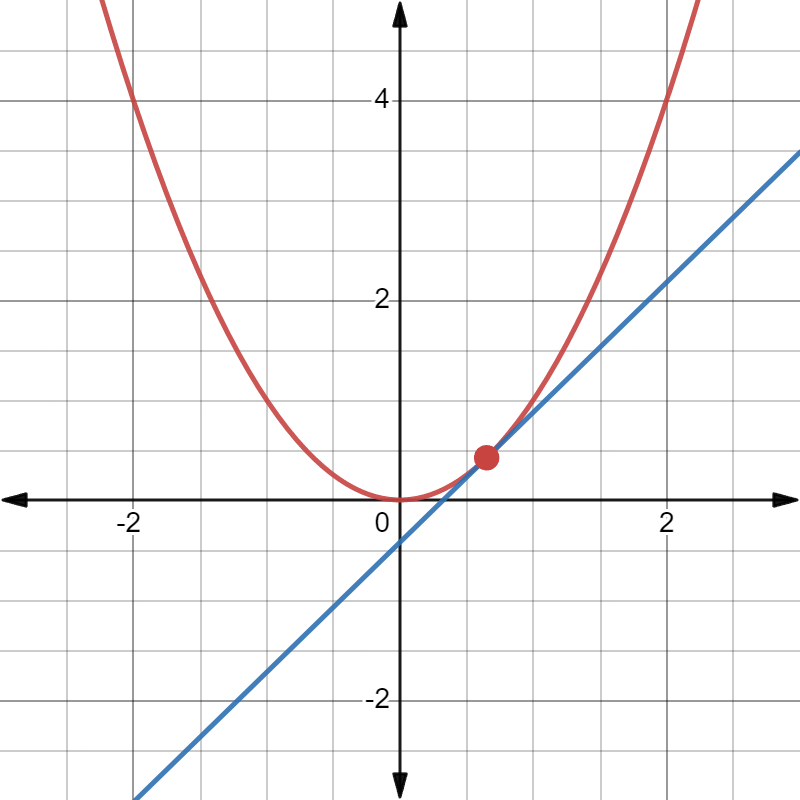The blue line is a tangent line because it is tangent to the function!
Scientific Notation Format
Control the way very large and small numbers are displayed on this website. (Primarily intended for those of you who enjoy incremental games!)
What Is This Website?
A note about links on this page: Internal links (links that bring you to another spot on this page) are colored in light blue. External links (links that open a different website) are colored in dark blue. External links will always open in a new tab.
This webpage is my own attempt at explaining introductory calculus intuitively in an interactive way! Here are some of the features of this website:
- Lots of calculus! More than 100 sections across 10 calculus units that cover limits, derivatives, integrals, infinite series, and more! Most of the content in the AP® Calculus AB and BC curricula is covered on this page.
- Easy to understand explanations: Ever searched up a math concept just for the definition to make no sense? Fear not, because I’ve tried my best to make my explanations accessible even if you don’t understand tons of math jargon.
- Many diagrams: If you have a hard time picturing a calculus concept in your head, the many diagrams on this page can help you gain an intuitive understanding!
- Interactive elements: Some sections allow you to interact with the page itself in order to gain a stronger understanding of concepts.
- No ads or monetization: This website will forever remain free and will never have ads. This is a passion project I created to help people learn calculus, and I want everyone to have a seamless experience on this page!
- Lots of calculus! More than 100 sections across 10 calculus units that cover limits, derivatives, integrals, infinite series, and more! Most of the content in the AP® Calculus AB and BC curricula is covered on this page.
- Easy to understand explanations: Ever searched up a math concept just for the definition to make no sense? Fear not, because I’ve tried my best to make my explanations accessible even if you don’t understand tons of math jargon.
- Many diagrams: If you have a hard time picturing a calculus concept in your head, the many diagrams on this page can help you gain an intuitive understanding!
- Interactive elements: Some sections allow you to interact with the page itself in order to gain a stronger understanding of concepts.
- No ads or monetization: This website will forever remain free and will never have ads. This is a passion project I created to help people learn calculus, and I want everyone to have a seamless experience on this page!
- Beautiful math: All of the math equations and expressions on this page look neat thanks to the MathJax library that allows websites to easily display math professionally.
- Works well on all devices: This website runs well and looks good on computers, tablets, and mobile devices.
- Hide and show units and sections: To make navigation easier, you can hide specific units and sections. If you hide a section, it will stay hidden even after you refresh the page!
- Sidebar menu: The sidebar menu allows for quick navigation to any unit.
- Keyboard shortcuts: Quickly navigate your way through this huge website using your keyboard.
One of my favorite parts of this page is the interactive components. Here’s an example of what that might look like:
Multiply two numbers with these sliders!
Base: \(b =\)
Height: \(h =\)
Area: \(bh \approx \)
(The sliders on the rest of my website will actually be about calculus, not just about multiplying two numbers.)
If you want to view the popup that appears when you first visit this website, click here:
Click the “Show Personal Story” button if you want to know more about why I made this website and my goals with it, or feel free to move on if you just want to get straight into the calculus.
This is my own webpage that explains calculus, a subject that I’m passionate about! My goal with this page is to get people interested in the subject and also help those who don’t understand calculus well. I will try to explain calculus in an easy to understand way while also emphasizing the real-world uses of calculus (the answers to the question “why should I learn calculus?”). As I develop this website, I’m also going to try to add some interactivity to make it more engaging.
The precursor to this website is a page I created to explain a creative computer algorithm called Fast Inverse Square Root. That algorithm was super interesting to me and I really wanted to know how it worked and wanted to explain its intricacies on a webpage. It turns out that the algorithm involved a little bit of calculus, so I had to learn the basics of calculus in order to fully understand how the algorithm worked. This eventually inspired me to start creating a whole new webpage dedicated to explaining calculus since I loved explaining it so much!
Perhaps my biggest motivation to make this website is to help my friends and other people at my school succeed in their calculus classes. I started working on this website just before the summer of 2023. The next school year, many of my friends and classmates will be taking AP Calculus AB, and as a result, the order of concepts in this page is heavily influenced by the AP curriculum.
Here are my goals for the impact of this website, ordered from most realistic and attainable to least (in my opinion):
- Make understanding calculus concepts easier, less frustrating, and less boring by providing explanations more engaging than those they get from school
- Help students get better grades in their calculus class
- Help the students at my school study for and do better on the AP Calculus exam
- Get students genuinely interested in and passionate about calculus
- Get students genuinely interested in and passionate about math in general
- Ignite a passion for learning and self-study in students (in general, not just for math)
I know there are already many websites that explain calculus (making this one feel kinda pointless), but I’m going to try my best to make this page different in some ways so it isn’t just a worse version of those websites. This is the only calculus website I can call my own, so even if it’s not that good, it’s still meaningful to me! I also created this website while learning calculus myself, and I’ve been strongly motivated to learn it just so I can explain it on this page. So making this website has still helped me strengthen my math knowledge along with my website creation and teaching skills.
As you read this page, you’ll notice that I write in a very conversational tone. That’s because I don’t want to scare people away by being too formal, and I think that too much formality makes things harder to understand. In school, I always prefer when my teachers are more informal, as it makes it easier to engage with the course content.
Anyways, thanks for visiting! :)
Before I had added all of AP Calc BC on this website, I used a table to keep track of my progress. Now that I’m done with all of Calc BC, this table isn’t as useful anymore. Nevertheless, I might add some more information to this progress table someday, so here it is:
This is a rough estimate of how much of the AP Calculus curriculum I’ve covered. It’s based on the Khan Academy curriculum and shows how many of Khan Academy’s lessons I’ve covered for each unit.
| Unit | AP Calc AB Progress | AP Calc BC Progress |
|---|---|---|
| 1. Limits and Continuity | 0/15 | 0/15 |
| 2. Derivative Basics | 0/11 | 0/11 |
| 3. Advanced Differentiation | 0/9 | 0/9 |
| 4. Derivatives in Context | 0/7 | 0/7 |
| 5. Analyzing Functions With Derivatives | 0/12 | 0/12 |
| 6. Integration and Accumulation of Change | 0/12 | 0/15 |
| 7. Differential Equations | 0/7 | 0/9 |
| 8. Applications of Integration | 0/12 | 0/13 |
| 9. Parametric, Vector-Valued, and Polar Functions | N/A | 0/8 |
| 10. Infinite Sequences and Series | N/A | 0/15 |
| All Units |
Before You Start Reading
Here are a few important notes before you start reading the rest of this page.
Prerequisites For Calculus
Calculus is related to many other branches of math! In order to succeed in calculus and understand everything on this website, you must have a strong foundation in other math concepts. Here is a non-exhaustive list of important math skills you will need to understand the concepts on this page:
- Algebra: How to manipulate complex algebraic expressions
- Algebra: Interval notation and the difference between open and closed intervals
- Algebra: Types of functions (polynomial, rational, exponential, logarithmic, piecewise, etc.)
- Algebra: Composite functions (functions that can be written in the form \(f(g(x))\)): what they are and how to decompose functions
- Algebra: What exponents and logarithms are and how to use exponent and logarithm properties
- Geometry: Some geometric formulas, such as the areas of shapes
- Trigonometry: Knowing what the trigonometric functions (\(\sin\), \(\cos\), \(\tan\), \(\csc\), \(\sec\), and \(\cot\)) are and how to evaluate expressions containing them, as well as the inverse trig functions
- Trigonometry: How to manipulate trigonometric expressions using trig identities
- Geometry / Trigonometry: What radians are and how to evaluate trig functions with radians
- AP Calculus BC only: Basic understanding of parametric equations, vectors, and polar coordinates
I will not spend a lot of time reviewing these concepts, so I highly recommend studying these topics if you have a hard time with them.
The Purpose of This Page
This page is not meant to contain a full explanation of every concept in introductory calculus. I will skip over some details, many of which are important to succeed in a calculus class. This website is more like a supplementary resource rather than a fully detailed textbook. This page is more focused on conceptual explanations rather than methods to solve specific problems (as I find explaining general concepts to be more fun!) In addition, this website does not teach calculus very rigorously.
What this page is NOT:
- A fully detailed calculus textbook with many practice problems
- A place to learn calculus rigorously
- A substitute for a calculus class or textbook
I am structuring this page to follow the Khan Academy AP Calculus AB curriculum, although a few topics are in different locations that I feel are more logical and better for learning.
Other Calculus Resources
I strongly recommend using other resources like Khan Academy for more specific details and practice problems. These resources will provide extra help you may need in your journey to learn calculus. This page alone is not a substitute for a calculus class, and if you want to maximize your learning, you should use other resources along with this page!
At the beginning of every unit, I will provide a link to Khan Academy’s coverage of that unit as well as what lessons from Khan Academy are covered on my website.
Khan Academy also has proofs of many properties and theorems that I mention and use on this page. Many of these proofs will not be on my page. I encourage you to look at these proofs if you’re the type of person who always wants to know why things work (like me)!
Khan Academy Links:Here are some other websites that teach calculus in an easy to understand way. My page isn’t the only calculus website out there, and it’s only fair if I showcased other websites that I like. You should check them out and use whatever resources are the easiest for you to understand... maybe you’ll like them more than my website! I’ll also give some of my opinions and criticism on each of these.
- A Gentle Introduction To Learning Calculus by Better Explained, hosted by Kalid Azad
- You can find more calculus articles on the bottom of that page, or you could access the full calculus course.
- A nontraditional take on teaching calculus, featuring many creative explanations and analogies you won’t see anywhere else! However, I feel that the author spends too much time criticizing traditional methods of teaching calculus, which distracts from the website’s main purpose.
- Introduction to Calculus by Math Is Fun
- Click here for all calculus pages by Math Is Fun.
- My personal favorite out of all of these websites. It explains calculus concepts in an extremely easy to understand way, requiring minimal background knowledge. It even uses interactivity in some of its pages! However, it goes into less detail than most other calculus websites.
- Paul’s Online Notes by Paul Dawkins
- An extremely detailed calculus website, going over basically every little thing you study in a calculus class! It also features many detailed practice problems, so it’s a good resource to study from. However, it is pretty formal, with many formulas and equations just being thrown at the reader without much context.
What Is Calculus? Why Learn Calculus?
You’re probably here because either you want to learn calculus or you’re taking a calculus class. Well, it’s my job to hype up calculus and make you interested in it! Here is an introduction to what calculus is and how it’s used in the real world.
The real world is a very busy place: everything is constantly changing. Can you think of a few things in the real world that frequently change? (Bonus points if these things can be measured or represented by numbers.)
Here are just a few examples:
- Motion: When an object moves, its position changes, and its velocity and acceleration might change as well.
- Money: The amount of money in your bank account changes quite a lot, and money circulates around the world all the time! In addition, stock and commodity prices change all the time.
- Games: If you’re playing an arcade game or another game with a scoring system, you usually want to get that score up as fast as possible. The higher your score (and the faster it increases), the better you’re doing!
- Population: The populations of cities and countries are growing and shrinking all the time. As an example, the world’s population has increased by about since you opened this page seconds ago (assuming a net increase of about 70 million per year).
In conclusion, change is everywhere in our world. And whenever a numeric value is continuously changing, we can analyze how it changes with calculus! Calculus is a branch of mathematics that is all about change. Let’s explore where calculus pops up in more detail.
When numeric values change, they change at a certain speed, and they either increase or decrease. The speed and direction in which a quantity changes is called its rate of change. Let’s see where rate of change appears in our four examples from before:
- Motion: Velocity describes how fast an object is moving and in what direction. Acceleration describes how fast an object’s velocity changes and if it’s increasing or decreasing.
- Money: Your income or salary describes how fast money is coming into your bank account. When you get a raise, your salary increases, and the frequency and size of your raises tells you how fast your salary is increasing.
- Games: In a game, you can keep track of how fast your score is increasing to get a sense of how well you’re playing.
- Population: Population growth is a useful metric for how fast a city or country is growing. It is usually expressed in percent per year, with negative values meaning the population is decreasing. For example, the world’s population growth rate in 2021 was 0.82% per year.
The first part of calculus is differential calculus, and it helps us describe how fast functions or quantities are changing. Differential calculus deals with rates of change, which can be visually represented as the slopes of functions.
This circle is moving across the screen. How can we mathematically describe its movement and speed at any given time? Differential calculus gives us the tools we need for this.
The focus of differential calculus is a concept called the derivative. A derivative is a function that tells you the slope (rate of change) of a function at every point.
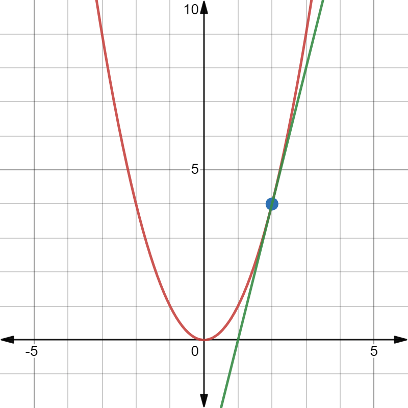The green line tells us the slope of the red function at the blue point. Finding this function’s derivative using differential calculus gives us a very quick way of finding this slope!
Because the slope of a function represents how fast it is changing (its rate of change), differential calculus is used to model how values change.
One example is in the world of business. A business might be able to model their profit as a function of some other variable. Differential calculus can tell them how their profits change when some other variable changes.
Differential calculus can be used to find the maximum or minimum value of a function, which can be used to help businesses maximize profits and minimize production costs.
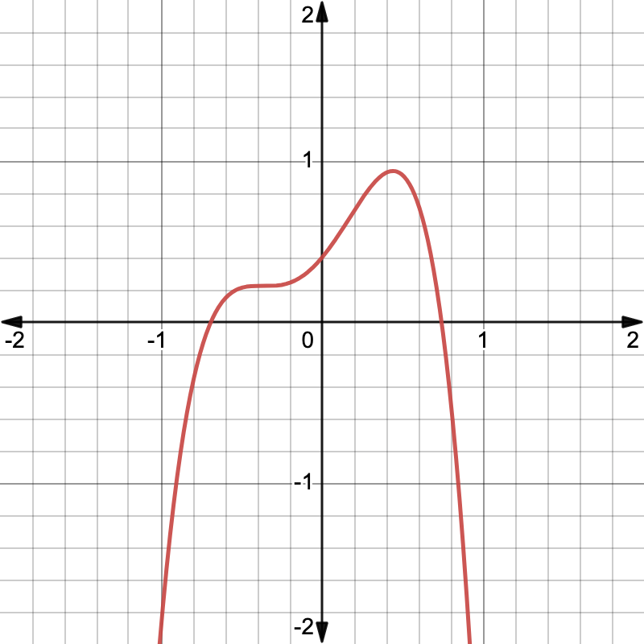Differential calculus can help us get an exact answer for the maximum value of this function.
Differential calculus also plays an important role in physics, since there are many variables in physics that change and interact with each other. The most basic example is that velocity describes how fast and in what direction your position is changing.
Whenever something is changing, we can describe how fast and in what direction it’s changing using differential calculus. But what if we know how fast something changes at every instant and we want to figure out the total amount it’s changed over a period of time (the total amount of accumulated change)?
Here are some examples where we would need to do this:
- Motion: You know an object’s velocity at every point in time within a time interval and you want to figure out the total amount its position has changed.
- Money: You’ve kept track of your salary at different points in time and you want to know the total amount of money you’ve made over a given time period.
- Games: You know how many points you’ve scored for each level and want to figure out your total score from that information.
- Population: You know how many people have immigrated to and emigrated from a country each day and you want to find the total amount the population has changed over a period of time.
Now we’re trying to do the reverse of what we could do with differential calculus: instead of using the value of a quantity at different points in time to find the rate of change, we are trying to use the rate of change over time to model how that value accumulates.
For these cases, we can use integral calculus: the second branch of calculus. It deals with accumulation of change, which can be represented as the areas under functions.
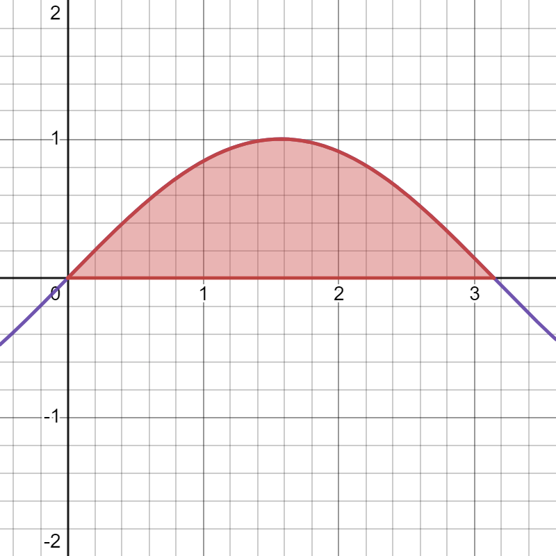Integral calculus can help us find the area of the red region very quickly! If the \(x\)-axis here represents time and the \(y\)-axis represents the velocity (speed and direction) of an object, then the area under the curve represents how much its position has changed in that period of time.
Integral calculus can be used to find the areas and volumes of 2D and 3D shapes.
As you explore calculus further, you will find that differential calculus and integral calculus are actually very closely related! Specifically, you will learn about this through the fundamental theorem of calculus.
Unit 1: Limits and Continuity
Unit Information
Khan Academy Link: Limits and continuity
All topics covered in Khan Academy:
Green underlined topics are topics at least partially covered on my website and red topics are topics not yet covered on my website. Note that even green topics might not be covered in full detail on my page.
- Defining limits and using limit notation
- Estimating limit values from graphs
- Estimating limit values from tables
- Determining limits using algebraic properties of limits: limit properties
- Determining limits using algebraic properties of limits: direct substitution
- Determining limits using algebraic manipulation
- Selecting procedures for determining limits
- Determining limits using the squeeze theorem
- Exploring types of discontinuities
- Defining continuity at a point
- Confirming continuity over an interval
- Removing discontinuities
- Connecting infinite limits and vertical asymptotes
- Connecting limits at infinity and horizontal asymptotes
- Working with the intermediate value theorem
- (Optional) Formal definition of limits
The Tangent Line Problem
Calculus is all about change! In the world of calculus, we often deal with very small changes. And I mean very, very small changes, even changes that are infinitely small. But what does that even mean? How do we define “infinitely small”?
Let’s start our journey with one of the most important problems in calculus, the tangent line problem. But before we get into it, let’s see an example of this problem coming up in real life. It’s always good to relate the math concepts you learn to the real world!
Mathematics is a way for us to quantitatively describe our world. It might feel like knowing math is just knowing how to manipulate numbers and symbols to solve abstract problems, but math is used all the time around us to describe real-world situations and solve all sorts of problems related to them. And often, new math concepts are introduced to solve new types of problems.
For example, let’s say that you were on a road trip one day and you drove 120 miles between 4 and 6 PM. How fast have you been driving on average during those 2 hours? We can represent this situation with a simple equation, using the fact that speed is distance divided by time:
Simple arithmetic is enough to describe this situation. But what if you wanted to know exactly how fast you were driving at a specific time, say, 5:02 PM? Not some sort of average over a time period, but your exact speed at that instant. In this hypothetical scenario, you were driving on a freeway during this time, so you suspect your speed was greater than 60 miles per hour.
One idea is to use a very small time period to estimate your speed at 5:02 PM. Because speed is equal to distance divided by time, you could take the distance that you traveled between 5:02 and 5:03 PM and divide that by the time elapsed, 1 minute (1/60 of an hour). Let’s say you traveled 1.1 miles within that 1 minute. Using this information, we can once again calculate an average speed.
But this doesn’t tell you exactly how fast you were going at 5:02, that just tells you your average speed between 5:02 and 5:03. How could we do better?
We could use an even smaller time period, like 1 second, and now we would be taking the distance traveled between 5:02:00 and 5:02:01 PM and dividing by 1 second (1/3,600 hour). This will get us closer to our speed at 5:02, but it still won’t be exact.
Here’s what it might hypothetically look like if we calculated our speed over smaller and smaller time intervals:
| Time Interval | Speed |
|---|---|
| 2 hours | 60 mph |
| 1 minute | 66 mph |
| 1 second | 65.2 mph |
| 0.1 seconds | 65.1 mph |
| 0.01 seconds | 65.02 mph |
As our time interval gets smaller and smaller, we get closer and closer to the true answer of how fast we were moving at exactly 5:02 PM. (Think about it, our average speed in the last second should be closer to our current speed than our average speed in the last minute.) Looking at the table, it seems like our true speed at 5:02 is 65 mph, but how could we know for sure?
To solve this problem, we need a way to repeat this process to infinity. In other words, we need a way to measure our speed over an infinitely small time interval.
We might try an interval of 0 seconds, but then we run into a problem: no matter how fast we travel, over a period of 0 seconds, we travel a distance of 0 miles, because anything multiplied by 0 is 0. Let’s try finding the speed with our distance over time formula:
As you can see, using a time interval of zero doesn’t work out. So we need a way to measure speed over a time interval that isn’t zero but is also as small as possible. This is where normal arithmetic breaks down. We need a new branch of mathematics to help us. That branch is calculus!
Let’s go back to the tangent line problem. In our speed problem, we were trying to find our speed at a single instant of time. The tangent line problem boils down to the same question, but in a more abstract context:
How do we find the slope of a function at a single point?
Knowing the exact slope (or rate of change) of a function at a single point has many applications. The slope at a point tells us how fast the function is increasing or decreasing at that point — exactly how fast it’s changing at that particular instant! If we had this knowledge, we could model how functions change with better accuracy and precision than ever.
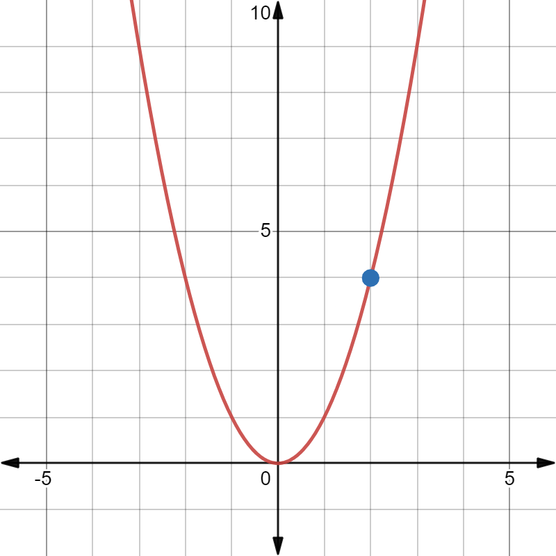How can we find the slope of the red function at the blue point? In other words, how fast is the red function increasing at the blue point?
Finding the slope of a line between two points is simple: you simply calculate the change in \(y\) between the two points divided by the change in \(x\), or “rise over run”.
But what if we want to find the slope of a function at just one point? The rise over run formula won’t work in this case — it gives the average rate of change between two points, but not the exact slope at a single point. We need a way to define what we mean by “slope at a single point”.
Here’s an idea: to find the slope at a single point, we take a second point on the function and move it closer and closer to the first point. Then, we determine what the slope between those two points approaches.
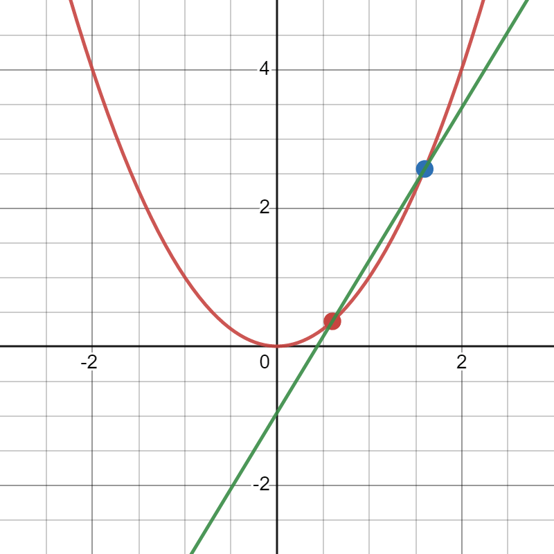We are trying to find the slope of the function at the red point, and to do that, we are moving the blue point closer and closer to the red point. As we do that, the slope of the green line approaches a certain value. If we could find this value, we could say that this value is the slope at the red point!
How do we mathematically describe this situation? The blue point is moving closer to the red point, but how close do the two points have to be before the slope of the green line actually reaches the slope at the red point?
It turns out that no matter how close the points are to each other, the green line will never reach the actual slope we are trying to find (as it changes a little each time we move the second point). So is all hope lost?
No: there is a way to make sense of this. Notice that the distance between the points is getting smaller and smaller; in other words, it is approaching zero. We need a way to describe what happens to the slope as the distance between the points approaches zero, and this introduces us to a fundamental tool of calculus - the limit!
I will go into more detail about limits in the next section, Intro to Limits.
Intro to Limits
In our attempt to find the slope at one point, we took a second point and moved that second point closer and closer to the first point. We are trying to find what the slope between the two points approaches. But how do we define “approach”? We use something called a limit.
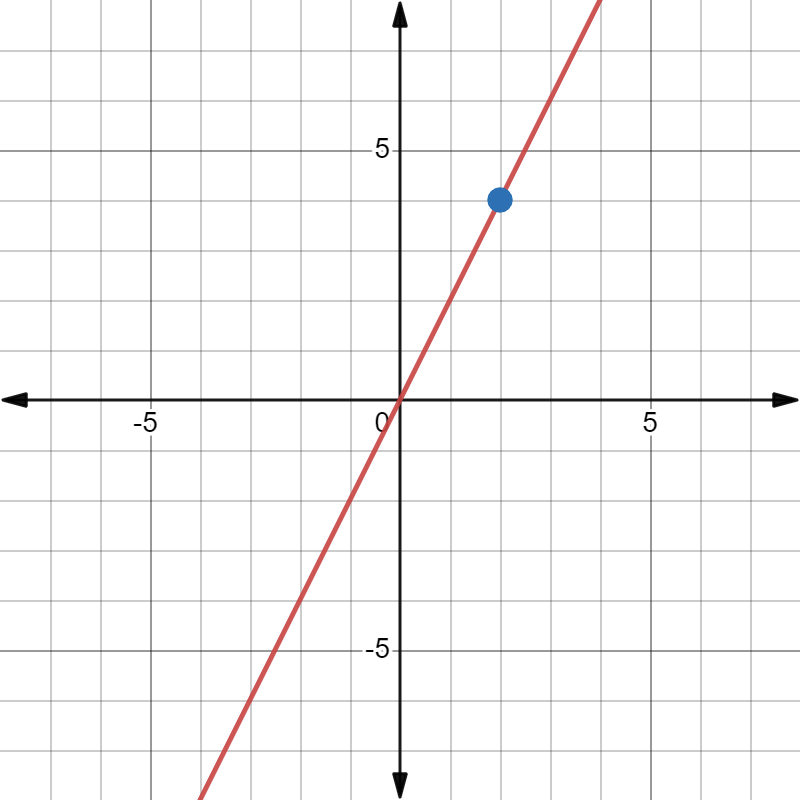This is the graph of \(f(x) = 2x\). What happens to the \(y\)-value as \(x\) approaches 2? We can use a limit to answer this question.
Use the slider below to explore what happens to \(f(x) = 2x\) as \(x\) approaches 2:
The point \(\class{blue}{(x, f(x))}\) is plotted above.
\(x =\)
\(f(x) =\)
As \(x\) approaches 2, what number does \(f(x)\) approach?
\(f(x)\) approaches 4 as \(x\) approaches 2. However, we only tested what happens if \(x\) starts at a value smaller than 2 and increases towards 2. Let’s see what happens if \(x\) starts above 2:
\(x =\)
\(f(x) =\)
What happens to \(f(x)\) as \(x\) approaches 2 from the other side?
\(f(x)\) still approaches 4. Let’s summarize our results in the language of mathematics now!
A limit in mathematics is the value an expression or function approaches as a variable approaches a certain value. For example, the “limit of \(\class{red}{2x}\) as \(\class{blue}{x}\) approaches 2” is 4, because as \(\class{blue}{x}\) gets closer to 2, the value of \(\class{red}{2x}\) gets closer to 4. This is written in mathematical notation as:
Importantly, we can make \(2x\) as close to 4 as we want (“arbitrarily close” to 4) as we move \(x\) closer to 2. Also, it doesn’t matter if \(x\) is increasing or decreasing towards 2, \(2x\) will approach 4 either way. These two conditions are required for a limit to exist.
| \(x\) | \(2x\) |
|---|---|
| 1.9 | 3.8 |
| 1.99 | 3.98 |
| 1.999 | 3.998 |
| ... | ... |
| \(x\) | \(2x\) |
|---|---|
| 2.1 | 4.2 |
| 2.01 | 4.02 |
| 2.001 | 4.002 |
| ... | ... |
\(\displaystyle\lim_{x\to 2} 2x = 4\) because as shown by the tables, we can make \(2x\) as close to 4 as we want by moving \(x\) closer and closer to 2. It doesn’t matter if \(x\) is increasing (1.9 → 1.99 → 1.999 → ...) or decreasing (2.1 → 2.01 → 2.001 → ...), \(2x\) will approach 4 either way.
It is super important that both of these tables approach the same value (4)! If these tables approached different values, the limit would not exist. In general, a limit must approach the same value from both sides in order to be considered a valid limit.
You might have noticed that using a limit was unnecessary here because we could have just plugged in \(x = 2\) into the expression \(2x\) to get the same answer 4. However, limits become much more powerful when we can’t just plug in the \(x\)-value into the expression.
One example of a function that can be problematic is \(f(x) = \frac{x^2}{x}\). If we plug \(x = 0\) into this function, we get \(\frac{0}{0}\), which is undefined! However, limits can come to the rescue here. Use these sliders to see what happens to \(f(x) = \frac{x^2}{x}\) as \(x\) approaches 0.
What happens to \(f(x)\) when \(x\) increases towards 0?
\(x =\)
\(f(x) =\)
Tip: Don’t focus on what happens when \(x = 0\), focus on what happens to the function’s value as \(x\) approaches 0 from both sides.
Does the same thing happen when \(x\) decreases towards 0?
\(x =\)
\(f(x) =\)
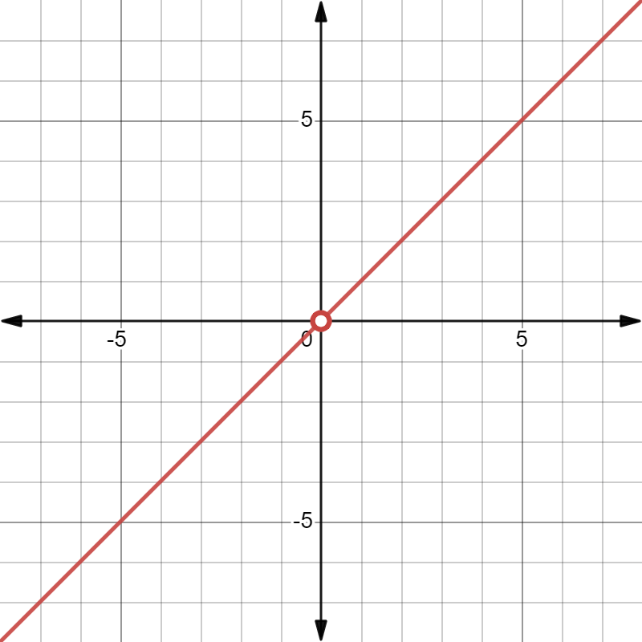
This is the graph of \(f(x) = \frac{x^2}{x}.\) This function is undefined at \(x = 0\), but we can still describe what happens near \(x = 0\) by using a limit! Looking at the graph, what happens to \(f(x)\) as \(x\) approaches 0 from either side? (The open circle at \((0, 0)\) means that \(f(x)\) is undefined at \(x = 0\).)
Limits are especially useful in situations where we would otherwise be dividing by 0. In this situation, we found that as \(x\) approaches 0, \(\frac{x^2}{x}\) also approaches 0 from both sides. This means that \(\displaystyle\lim_{x \to 0}{\frac{x^2}{x}} = 0\).
Notice how we were still able to get an answer for the limit as \(x\) approaches 0 even though the function is undefined at \(x = 0\). That’s because, importantly, the value of \(f(0)\) is not relevant when taking the limit as \(x\) approaches 0. The limit describes what happens when we approach 0, not what happens when we actually get to 0.
That’s a very important thing to keep in mind: for any value \(c\), the value of \(f(c)\) or whether it is defined or not will never have an impact on the limit as \(x\) approaches \(c\). This next example will make this very clear.
Here is a mysterious function \(f(x)\), designed to test your knowledge of limits. Use these two sliders to figure out the limit of \(f(x)\) as \(x\) approaches 2.
\(x =\)
\(f(x) =\)
\(x =\)
\(f(x) =\)
Here is a table of the function’s value at a few points. \(f(x)\) is equal to 100 if \(x = 2\) and is equal to \(2x\) otherwise.
| \(x\) | \(f(x)\) |
|---|---|
| 1.9 | 3.8 |
| 1.99 | 3.98 |
| 1.999 | 3.998 |
| 2 | 100 |
| 2.001 | 4.002 |
| 2.01 | 4.02 |
| 2.1 | 4.2 |
Don’t be fooled! Even though the value of \(f(x)\) at \(x = 2\) is 100, that has no impact on the limit as \(x\) approaches 2. Remember, limits describe what happens as you approach a value, not what happens when you reach it! \(\displaystyle\lim_{x\to 2} f(x)\) is equal to 4 in this case.
I said previously that if a limit approached different values from both sides, the limit would not exist. Are there any other situations where limits don’t exist? Keep reading to find out in the next section!
Limits Won’t Always Exist
There’s one very important thing to keep in mind about limits. In some cases when trying to find a limit, a limit simply won’t exist (there is no value that could reasonably be considered the limit). There are three situations where a limit will not exist.
For each of these three situations, I will have an example function that you can explore using some sliders. Try to figure out why the limit doesn’t exist in all three of these examples!
Example 1
Use these two sliders to explore this function. Can you figure out why the limit as \(x\) approaches 0 doesn’t exist?
\(x =\)
\(f(x) =\)
\(x =\)
\(f(x) =\)
The function you just played with is \(f(x) = \frac{|x|}{x}\). As \(x\) approaches 0 from the left, \(f(x)\) approaches -1, but as \(x\) approaches 0 from the right, \(f(x)\) approaches 1. Because these two values (-1 and 1) are different, \(\displaystyle\lim_{x\to 0} \frac{|x|}{x}\) does not exist.
In general, if a function approaches a different value as \(x\) approaches \(c\) from the left and right, \(\displaystyle\lim_{x \to c}f(x)\) doesn’t exist.
Example 2
Use these two sliders to explore this function. Can you figure out why the limit as \(x\) approaches 0 doesn’t exist?
\(x =\)
\(f(x) =\)
\(x =\)
\(f(x) =\)
This function is \(f(x) = \frac{1}{x}\). The limit doesn’t exist because \(f(x)\) increases or decreases without bound as \(x\) approaches 0 instead of approaching a finite value. As \(x\) approaches 0 from the left, \(f(x)\) decreases without bound, and as \(x\) approaches 0 from the right, \(f(x)\) increases without bound.
Example 3
Use these two sliders to explore this function. Can you figure out why the limit as \(x\) approaches 0 doesn’t exist?
\(x =\)
\(f(x) =\)
\(x =\)
\(f(x) =\)
This function is \(f(x) = \sin(\frac{1}{x})\). The limit doesn’t exist because \(f(x)\) oscillates between different values as \(x\) approaches 0 and does not approach a single value. In this case, as \(x\) approaches 0, \(f(x)\) oscillates between -1 and 1 more and more rapidly.
To summarize, here are the 3 causes for limits not existing:
- The limit from the left side is different from the limit from the right side. In other words, \(f(x)\) approaches a different value if \(x\) increases towards \(c\) than if \(x\) decreases towards \(c\).
- \(f(x)\) increases or decreases without bound as \(x\) approaches \(c\). In other words, \(f(x)\) increases or decreases forever as \(x\) gets closer to \(c\) and never approaches a finite value. This is known as approaching positive or negative infinity.
- \(f(x)\) oscillates between different values as \(x\) approaches \(c\). In other words, as \(x\) gets closer to \(c\), \(f(x)\) bounces up and down between different values but never approaches one specific value.
One-Sided Limits
One of the reasons a limit might not exist is if the limit is different from both sides. However, in these cases, we can still describe what happens as \(x\) approaches some value from the left side and right side separately. We just have to use one-sided limits.
Consider the piecewise function \(f(x) = \begin{cases} x + 2 & \text{if } x > 0 \\ x - 1 & \text{if } x < 0 \\ 1 & \text{if } x = 0 \\ \end{cases}\)
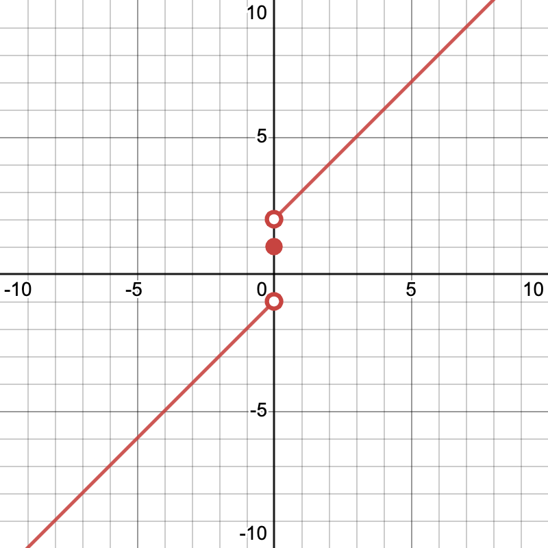What is \(\displaystyle\lim_{x \to 0}{f(x)}\)? Let’s break it down. As \(x\) approaches 0 from the left side (meaning that it starts below 0 and increases towards 0), \(f(x)\) is equal to \(x - 1\) (since \(x\) is always less than 0). This means the limit as \(x\) approaches 0 is -1 from the left side.
| \(x\) | \(f(x)\) |
|---|---|
| -1 | -2 |
| -0.1 | -1.1 |
| -0.01 | -1.01 |
| -0.001 | -1.001 |
| ... | ... |
As \(x\) approaches 0 from the right side (starting above 0 and decreasing towards 0), \(f(x)\) is equal to \(x + 2\) (since \(x\) is always greater than 0). This means the limit as \(x\) approaches 0 from the right side is 2.
| \(x\) | \(f(x)\) |
|---|---|
| 1 | 3 |
| 0.1 | 2.1 |
| 0.01 | 2.01 |
| 0.001 | 2.001 |
| ... | ... |
Important reminder: the value of \(f(x)\) at \(x = 0\) is not relevant to either of these limits.
To find these one-sided limits, we looked at the piecewise function and only paid attention to the parts that were relevant for each limit. For example, to find the right-side limit, we only looked at what \(f(x)\) is equal to when \(x\) is greater than 0 (since \(x\) will be greater than 0 when approaching 0 from the right).
In this case, \(\displaystyle\lim_{x \to 0}{f(x)}\) does not exist because the limit from the left side is different from the limit from the right side. However, we can still describe the two conflicting limits separately with one-sided limits.
In this case, the left-side limit is \(\displaystyle\lim_{x \to \class{red}{0^-}}{f(x)} = -1\) and the right-side limit is \(\displaystyle\lim_{x \to \class{blue}{0^+}}{f(x)} = 2\). Notice the “-” and “+” next to the 0 in each limit expression that shows whether it is a left-side or right-side limit.
Intro to Continuity
Look at the two sets of functions below. What is the main difference between them?
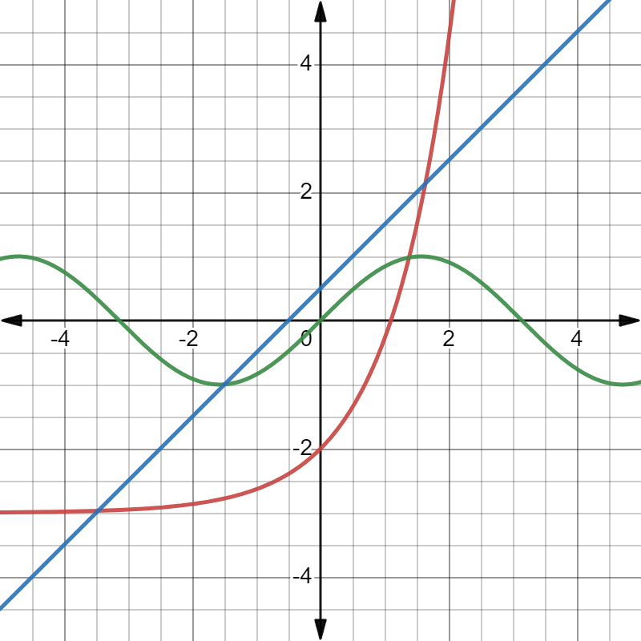 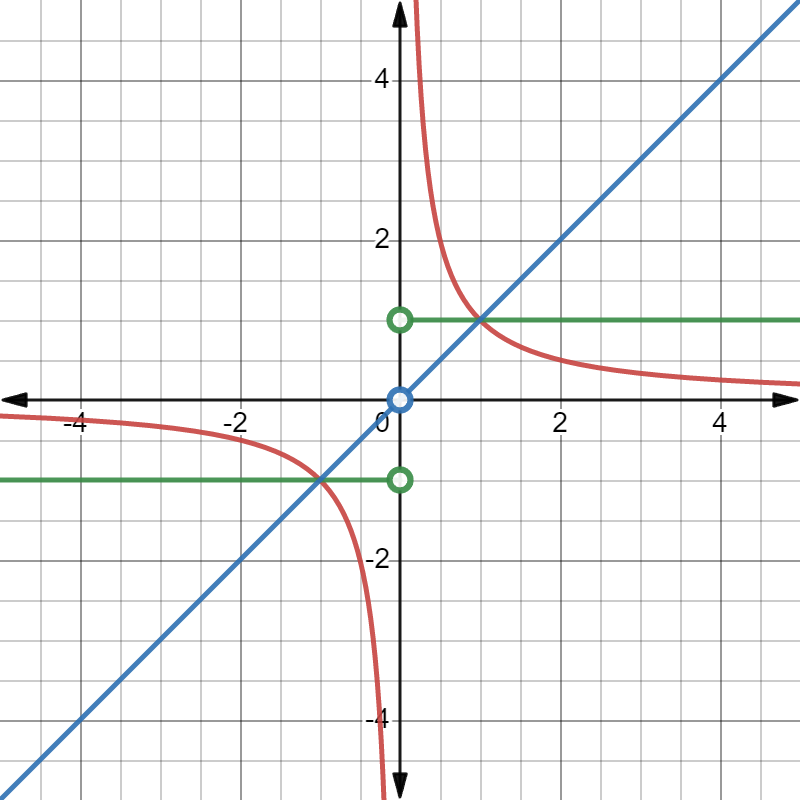The first set of functions don’t have any gaps in them, unlike the second set of functions. You could draw each of the first set of functions on a piece of paper without lifting your pencil, which is something you can’t say for the second set of functions.
The mathematical term for this is continuity. The first graph shows continuous functions and the second graph shows discontinuous functions.
There are three main types of discontinuities, or ways that a function can become discontinuous. All three ways are shown in the second graph.
- Point discontinuities / removable discontinuities: a single hole in the graph, as shown by the blue function in the second graph above. They are “removable” because you can remove the discontinuity just by adding a single point (at the hole) to the function.
- Jump discontinuities: when the graph suddenly jumps from one \(y\)-value to another, as shown by the green function in the second graph above.
- Asymptotic discontinuities / infinite discontinuities: a vertical asymptote; when the graph goes up to infinity or down to negative infinity, as shown by the red function in the second graph above.
An example of each of the three main types of discontinuities.
The function \(f(x) = \frac{1}{x}\) is continuous over the open interval \((0, 10)\). Can you figure out why?
A function is continuous over an interval if there are no discontinuities in that interval. For example, the function \(f(x) = \frac{1}{x}\) is continuous over the interval \((0, 10)\) because there are no discontinuities between \(x = 0\) and \(x = 10\). (Because \((0, 10)\) is an open interval [meaning it doesn’t include the start and end values, as shown by the parentheses around \((0, 10)\)], the function’s behavior at \(x = 0\) and \(x = 10\) is not relevant. This means the discontinuity at \(x = 0\) doesn’t affect the continuity over this interval.)
More formally, a function \(f(x)\) is continuous at the point \(x = c\) if \(\displaystyle\lim_{x \to c}{f(x)} = f(c)\). In other words, \(f(x)\) is continuous at \(x = c\) if the limit as \(x\) approaches \(c\) from both sides is equal to the function’s actual value at \(x = c\).
Try finding the limit as \(x\) approaches 0 for each of these discontinuous functions - they won’t equal the function’s value at \(x = 0\). (In fact, all three functions are undefined at \(x = 0\).)
The value of \(f(x) = x^2\) at \(x = 2\) is 4, and the limit as \(x\) approaches 2 of \(f(x)\) is also 4, so \(f(x)\) is continuous at \(x = 2\).
Here are some examples of functions that are continuous across their entire domain:
- Power functions with positive exponents: \(x\), \(x^2\), \(3x^3\), etc.
- Polynomials: \(x^2 + 3x\), \(x^4 - 30x + 2\), etc. (Remember, polynomials cannot contain negative exponents.)
- Exponential functions: \(e^x\), \(2^x\), etc.
- Logarithmic functions: \(\ln(x)\), \(\log_{10}(x)\), etc.
- Sine and cosine functions: \(\sin(x)\), \(\cos(2x)\), etc.
Continuity: Intermediate Value Theorem
This is a graph of the continuous function \(f(x) = x^3 + 1\). We will only focus on the interval \([-1, 1]\) (the blue region in the image above). Notice how as the function progresses through this interval, the function takes on every single \(y\)-value between 0 and 2 at some point (every \(y\)-value in the green region). Why 0 and 2? Because \(f(-1) = 0\) and \(f(1) = 2\). Those are the \(y\)-values of \(f(x)\) at the start and end of this interval.
This is an example of the intermediate value theorem (IVT). It states that if a function \(f(x)\) is continuous over an interval \([a, b]\), it will take on every value between \(f(a)\) and \(f(b)\) somewhere in that interval. In our example above, our interval is \([-1, 1]\), so \(a = -1\), \(b = 1\), \(f(a) = 0\), and \(f(b) = 2\). \(a\) and \(b\) are the bounds of the blue region, and \(f(a)\) and \(f(b)\) are the bounds of the green region in the graph above. The intermediate value theorem only applies if \(f(x)\) is continuous over the interval \([a, b]\)!
The intermediate value theorem makes sense intuitively, since if a function is continuous over the interval \([a, b]\), there’s no way for it to skip over any \(y\)-value in between \(f(a)\) and \(f(b)\). (In order for a function to skip over a \(y\)-value, you need to pick up your pencil when drawing its graph, creating a discontinuity!)
You should try it yourself: try drawing a function in the above graph that is continuous and passes through \((-1, 0)\) and \((1, 2)\) (the bottom left and top right corners of the square). You will find that the function will take on every \(y\)-value between 0 and 2 at some point within the square!
More formally, the intermediate value theorem states that if \(f(x)\) is continuous over \([a, b]\), then for every value \(L\) between \(f(a)\) and \(f(b)\), you can find at least one value \(c\) in the interval \([a, b]\) where \(f(c) = L\). In the above example where \(f(x) = x^3 + 1\), for every \(y\)-value \(L\) between 0 and 2, there is at least one corresponding \(x\)-value \(c\) between -1 and 1 where \(f(c) = L\).
For example, if \(L = 1\), then there is a corresponding value \(c = 0\) where \(f(\class{blue}{c}) = \class{green}{L}\) since \(f(\class{blue}{0}) = \class{green}{1}\). If \(L = 1.5\), then \(c \approx 0.794\), since \(f(\class{blue}{0.794}) \approx \class{green}{1.5}\). Because of the intermediate value theorem, I will be able to find a corresponding \(c\)-value between -1 and 1 for every value of \(L\) between 0 and 2. Remember, \(L\) is a \(y\)-value of the function and \(c\) is an \(x\)-value of the function where \(f(\class{blue}{c}) = \class{green}{L}\).
Looking at this continuous function \(\class{red}{f(x)}\), for every \(L\)-value in the interval \(\class{green}{[0, 2]}\), there are one or more corresponding \(c\)-values in the interval \(\class{blue}{[-1, 1]}\) where \(f(\class{blue}{c}) = \class{green}{L}\).
Try selecting a value of \(L\) with the slider below. For every value of \(L\) between 0 and 2, there is a value of \(c\) between -1 and 1. This is due to the intermediate value theorem!
\(L =\)
\(c \approx\)
\(f(\)\() \approx\)Here’s an example problem where we can use the intermediate value theorem. We have a function \(f(x) = x^2 - 2x\) and we want to know if \(f(x) = 0\) at some point between \(x = -1\) and \(x = 1\).
The first thing we need to check before using IVT is the function’s continuity. \(f(x)\) is continuous everywhere, so we can use IVT. The intermediate value theorem tells us that from \(x = -1\) to \(x = 1\), \(f(x)\) will take on every \(y\)-value from \(f(-1)\) to \(f(1)\).
\(f(-1) = \class{red}{3}\) and \(f(1) = \class{blue}{-1}\), so we know \(f(x)\) will take on every value between -1 and 3 within the interval \([-1, 1]\). This means that there must be some value \(c\) between -1 and 1 where \(f(c) = 0\), because 0 is in between -1 and 3. To answer our original question, there is in fact a point between \(x = -1\) and \(x = 1\) where \(f(x) = 0\). (That point turns out to be \(x = 0\).)
Finding Limits: Direct Substitution
Now that you know what a limit is, it’s time to start solving for some limits! Sometimes it’s very easy to find a limit: all you have to do is plug in an \(x\)-value into the function. This is known as direct substitution.
This technique will only work if our \(x\)-value approaches a point \(x = c\) that is continuous in our function. This is because if \(f(x)\) is continuous at \(x = c\), then \(\displaystyle \lim_{x \to c}{f(x)} = f(c).\) Remember, this is the formal definition of continuity!
For example, for the function \(f(x) = 2x\), the value of \(\displaystyle\lim_{x \to \class{red}{2}}f(x)\) is simply \(f(\class{red}{2}) = 4\), since \(f(x) = 2x\) is continuous at \(x = \class{red}{2}\).
The function \(f(x) = 2x\) is continuous at \(x = 2\), so to find the limit of \(f(x)\) as \(x\) approaches 2, we just need to plug \(x = 2\) into \(f(x)\)! You can tell by the graph that \(\displaystyle \lim_{x \to 2}{f(x)} = f(2)\).
Here are some more examples where you can use direct substitution:
Note that direct substitution won’t always work! Consider this example:
We get \(\frac{0}{0}\) which is undefined! However, this doesn’t mean the limit doesn’t exist, it just means that direct substitution doesn’t work in this case. There are other ways to solve for limits that you will learn later, and in the next section, you will find out how to algebraically show that this limit is actually equal to 8.
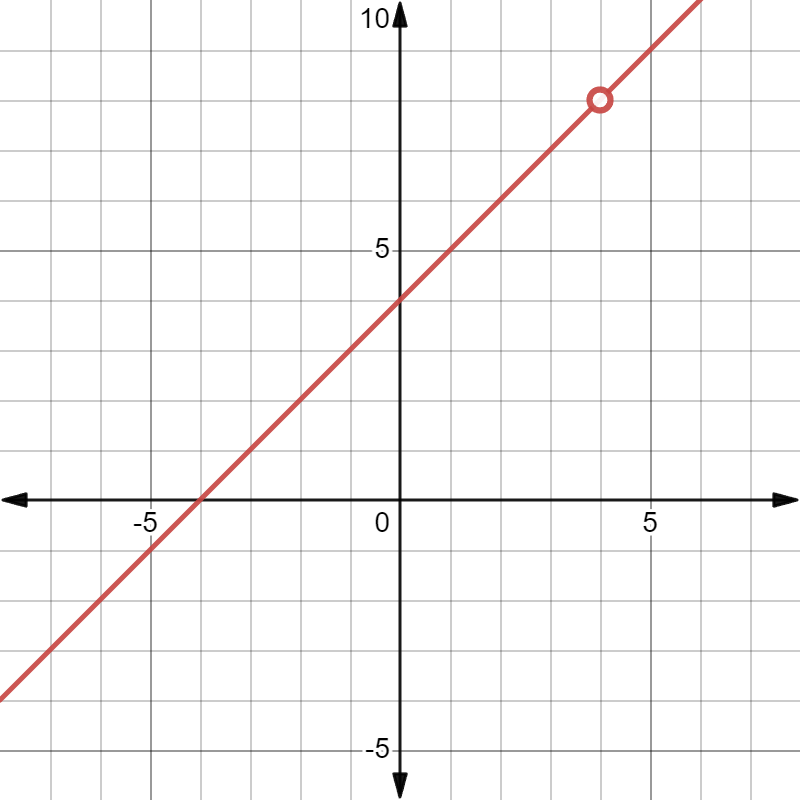The graph of \(f(x) = \frac{x^2 - 16}{x - 4}\) is undefined at \(x = 4\), which is why direct substitution doesn’t work. You can still tell graphically that the limit as \(x\) approaches 4 is is 8.
When you use direct substitution and get a result of \(\frac{0}{0}\), that means it’s an indeterminate form. In this case, you need to do more work to find out what the limit is (if it even exists). If you get a nonzero numerator divided by 0, that means that the limit doesn’t exist, usually because of a vertical asymptote in the function’s graph.
Finding Limits: Algebraic Manipulation
Let’s go back to our previous example, \(\displaystyle\lim_{x \to 4}\frac{x^2 - 16}{x - 4}\). We can’t use direct substitution here because that results in a division by 0, so let’s try rewriting the expression \(\frac{x^2 - 16}{x - 4}\) in an equivalent form that does let us use direct substitution. We will use factoring:
It is important to include \(x \ne 4\) in the final expression because the original expression \(\frac{x^2 - 16}{x - 4}\) is undefined when \(x = 4\). However, when we are taking the limit as \(x\) approaches 4, the value at \(x = 4\) does not matter! So we can ignore the domain restriction \(x \ne 4\) when we solve for the limit.
| \(x\) | \(\frac{x^2-16}{x-4}\) |
|---|---|
| 3.9 | 7.9 |
| 3.99 | 7.99 |
| 3.999 | 7.999 |
| ... | ... |
| \(x\) | \(\frac{x^2-16}{x-4}\) |
|---|---|
| 4.1 | 8.1 |
| 4.01 | 8.01 |
| 4.001 | 8.001 |
| ... | ... |
For \(x \ne 4\), \(\frac{x^2-16}{x-4}\) is equal to \(x + 4\). The value of that expression at \(x = 4\) is irrelevant when we take the limit as \(x\) approaches 4, so we can use direct substitution here.
All that’s left now is to substitute \(x = 4\) into the expression \(x + 4\) to get our limit of 8. This result agrees with the graph in the previous section!
We can also use a similar technique to solve limits involving square roots. Here’s an example:
Using direct substitution gives \(\frac{0}{0}\), so we need to rewrite this in an equivalent form. To do that, we will multiply both the numerator and denominator by the conjugate of the numerator in order to get rid of the square root.
A conjugate is what you get when you switch the sign in between two terms. In this case, the conjugate of \(\sqrt{x - 3} \class{red}{-} 1\) is \(\sqrt{x - 3} \class{blue}{+} 1\). When we multiply the two conjugates together, we get \((\sqrt{x-3})^2 - 1^2 = (x - 3) - 1\), since \((a + b)(a - b) = a^2 - b^2\). (In this case, \(a\) is \(\sqrt{x - 3}\) and \(b\) is 1.)
Now we can use direct substitution because it won’t result in a division by 0.
We can also use trigonometric identities to create equivalent expressions. In the example below, we use the identity \(\sin(2x) = 2 \sin(x) \cos(x)\). List of trigonometric identities
The key is to use direct substitution whenever possible and only use algebraic manipulation if needed. If direct substitution gives you \(\frac{0}{0}\), simplify the expression further using algebraic manipulation (if possible) and use direct substitution again. Repeat this process until direct substitution gives you either a real number or a fraction in the form \(\frac{b}{0}\) where \(b \ne 0 \). If you get a real number, you found the limit! If you get \(\frac{b}{0}\), that means the limit doesn’t exist.
Finding Limits: Limit Properties
Let’s say we are evaluating a limit that involves two functions, like \(\displaystyle\lim_{x \to c} [f(x) + g(x)]\). How do we do that? We use the following limit properties:
The last property only works if \(\displaystyle\lim_{x \to c}{g(x)}\) exists and \(f(x)\) is continuous at the point \(x = \displaystyle\lim_{x \to c}{g(x)}\).
These properties work exactly the way you would expect them to, so there’s not much to memorize! Here’s an example:
We can use the multiplication of two functions property to split the limit into two limits, then multiply them:
Here’s another example. Let’s say that for some function, we know that \(\displaystyle\lim_{x \to c}{f(x)} = 7\). In that case, what is \(\displaystyle\lim_{x \to c}[5 \cdot f(x)]\)?
We can use the multiplication by constant rule to rewrite the limit as \(5 \cdot \displaystyle\lim_{x \to c}{f(x)}\). We know that \(\displaystyle\lim_{x \to c}f(x) = 7\), so we can find that the limit is \(5 \cdot 7 = 35\).
Finding Limits: Squeeze Theorem
What is the limit of \(\class{red}{f(x)}\) as \(x\) approaches 0? Based on the graph, we can estimate the limit to be 0, but graphs aren’t precise enough to tell you the exact limit for sure. I’ll give you a few more pieces of information just so you can be sure:
- For all values of \(x\), \(\class{green}{g(x)} \ge \class{red}{f(x)} \ge \class{blue}{h(x)}\). In other words, the value of \(\class{red}{f(x)}\) is always in between the values of \(\class{blue}{h(x)}\) and \(\class{green}{g(x)}\).
- \(\displaystyle\lim_{x \to 0}{\class{green}{g(x)}} = 0\) and \(\displaystyle\lim_{x \to 0}{\class{blue}{h(x)}} = 0\).
Now, can you be sure that \(\displaystyle\lim_{x \to 0}{\class{red}{f(x)}} = 0\)? Yes, because of the squeeze theorem! Notice how \(\class{red}{f(x)}\) is being “squeezed” in between \(\class{green}{g(x)}\) and \(\class{blue}{h(x)}\). Because we know the limits of \(\class{green}{g(x)}\) and \(\class{blue}{h(x)}\) are 0 as \(x\) approaches 0, we can conclude that the limit of \(\class{red}{f(x)}\) as \(x\) approaches 0 is also 0 because the value of \(\class{red}{f(x)}\) has to be in between the other two functions as \(x\) approaches 0. This means the only possible value for \(\displaystyle\lim_{x \to 0}{\class{red}{f(x)}}\) is 0.
More formally, the squeeze theorem states that for any functions \(\class{red}{f(x)}\), \(\class{green}{g(x)}\), and \(\class{blue}{h(x)}\), if \(\class{green}{g(x)} \ge \class{red}{f(x)} \ge \class{blue}{h(x)}\) is always true over some interval including \(c\) (the three functions do not necessarily have to be defined at \(x = c\)), and \(\displaystyle\lim_{x \to c}{\class{green}{g(x)}} = \lim_{x \to c}{\class{blue}{h(x)}} = L\), then \(\displaystyle\lim_{x \to c}{\class{red}{f(x)}} = L\).
Let’s use the squeeze theorem to find a famous limit: \(\displaystyle\lim_{x \to 0}{\frac{\sin(x)}{x}}\). In order to find this limit, we’re first going to have to do some geometry. Let’s draw a unit circle with a positive angle \(x\) in radians between 0 and \(\frac{\pi}{2}\) (between 0 and 90 degrees).
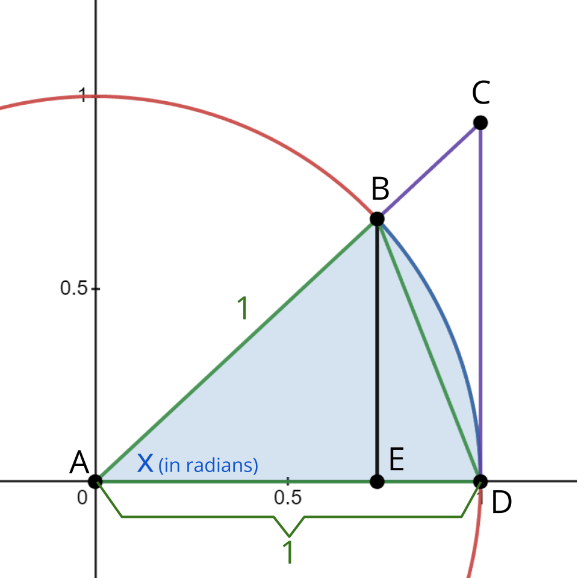Looking at \(\triangle ABE\), \(\displaystyle\sin(x) = \frac{\text{opposite}}{\text{hypotenuse}} = \; \)\(\displaystyle \frac{BE}{1} = BE\). Looking at \(\triangle ACD\), \(\displaystyle\tan(x) = \frac{\text{opposite}}{\text{adjacent}} = \;\)\(\displaystyle \frac{CD}{1} = CD\). Here is the same image with both of these lengths labeled:
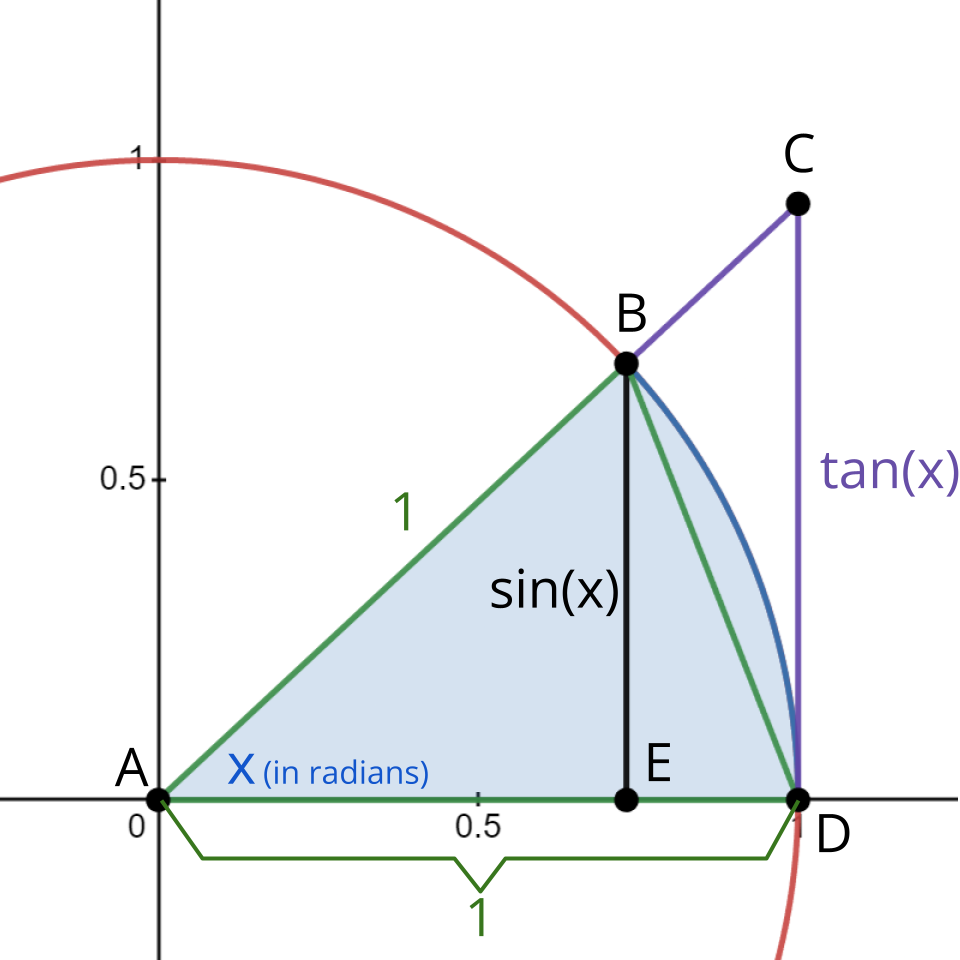The image shows that \(\class{green}{\text{area of }\triangle ABD} \le \; \)\(\class{blue}{\text{area of sector }ABD} \le \; \)\(\class{purple}{\text{area of }\triangle ACD}\). This will be true for any \(x\) between 0 and \(\frac{\pi}{2}\) radians (0 to 90 degrees). The area of \(\class{green}{\triangle ABD}\) is \(\frac{1}{2}bh = \frac{1}{2} \cdot 1 \cdot \sin(x) = \frac{1}{2} \sin(x).\) Similarly, the area of \(\class{purple}{\triangle ACD}\) is \(\frac{1}{2}bh = \frac{1}{2} \cdot 1 \cdot \tan(x) = \frac{1}{2} \tan(x).\)
Now for the area of sector ABD. Because there are \(2\pi\) radians in a circle, the fraction of the circle that sector ABD takes up is \(\frac{x}{2\pi}\). The area of a unit circle is \(\pi r^2 = \pi(1)^2 = \pi\), so the area of sector ABD is \(\pi \cdot \frac{x}{2\pi} = \frac{1}{2}x\).
Our inequality can thus be rewritten as \(\class{green}{\frac{1}{2}\sin(x)} \le \class{blue}{\frac{1}{2}x} \le \class{purple}{\frac{1}{2}\tan(x)}\). Multiplying the inequality by 2 gives us \(\sin(x) \le x \le \tan(x)\). Using the identity \(\tan(x) = \frac{\sin(x)}{\cos(x)}\) gives us \(\sin(x) \le x \le \frac{\sin(x)}{\cos(x)}\).
We will then take the reciprocal of all three terms in the inequality. When we do this, we need to flip the signs of the inequality because all three terms have the same sign. (If \(x\) is positive and between 0 and \(\frac{\pi}{2}\) radians, then \(\sin(x)\) and \(\frac{\sin(x)}{\cos(x)}\) will also be positive.) To explain why we need to flip the signs of the inequality, consider the inequality \(1 \le 2 \le 3\). If we take reciprocals, we need to switch the signs to keep the inequality true (\(1 \ge \frac{1}{2} \ge \frac{1}{3}\)). Taking the reciprocal of \(\sin(x) \le x \le \frac{\sin(x)}{\cos(x)}\) gives us \(\frac{1}{\sin(x)} \ge \frac{1}{x} \ge \frac{\cos(x)}{\sin(x)}\).
Multiplying the inequality by \(\sin(x)\), we arrive at \(1 \ge \frac{\sin(x)}{x} \ge \cos(x)\). We just showed that this inequality is true for \(0 < x < \frac{\pi}{2}\). This inequality is also true for some negative values of \(x\): because \(\frac{\sin(-x)}{-x} = \frac{\sin(x)}{x}\) and \(\cos(-x) = \cos(x)\), it’s also true for \(-\frac{\pi}{2} < x < 0\), meaning that the inequality is true for any \(x\) between \(-\frac{\pi}{2}\) and \(\frac{\pi}{2}\), excluding \(x = 0\).
Now let’s get back to the limit \(\displaystyle\lim_{x \to 0}{\frac{\sin(x)}{x}}\). Because we are trying to find the limit of \(\class{red}{\frac{\sin(x)}{x}}\) as \(x\) approaches 0, and we know the inequality \(\class{green}{1} \ge \class{red}{\frac{\sin(x)}{x}} \ge \class{blue}{\cos(x)}\) is always true for values of \(x\) near 0, we can finally use the squeeze theorem! We know that \(\displaystyle\lim_{x \to 0}\class{green}{1}\) and \(\displaystyle\lim_{x \to 0}{\class{blue}{\cos(x)}} = \cos(0)\) are both equal to 1. This means that \(\displaystyle\lim_{x \to 0}\class{red}{\frac{\sin(x)}{x}}\) must equal 1! Here’s a diagram showing \(\frac{\sin(x)}{x}\) being “squeezed”:
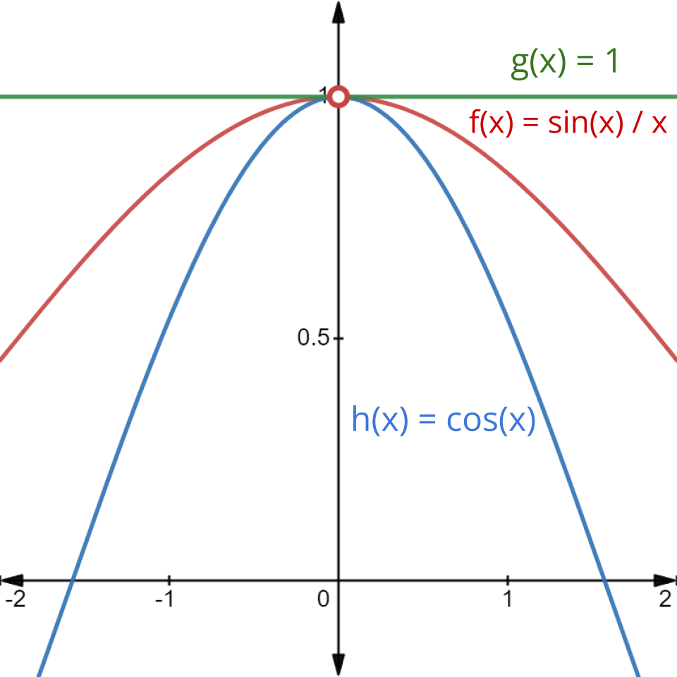\(x =\)
\(g(x) =\) 1
\(f(x) ≈\)
\(h(x) ≈\)
And here are tables that demonstrate the limit:
| \(x\) | \(\frac{\sin(x)}{x}\) |
|---|---|
| -1 | 0.841471 |
| -0.1 | 0.998334 |
| -0.01 | 0.999983 |
| ... | ... |
| \(x\) | \(\frac{\sin(x)}{x}\) |
|---|---|
| 1 | 0.841471 |
| 0.1 | 0.998334 |
| 0.01 | 0.999983 |
| ... | ... |
This limit will show up again as you learn calculus, so stay tuned! For example, this limit means that for small values of \(x\), \(\sin(x) \approx x\) (because for small values of \(x\), \(\frac{\sin(x)}{x} \approx 1\)), an important fact in calculus.
Using this limit, another important limit in calculus can be found, \(\displaystyle\lim_{x \to 0}{\frac{1 - \cos(x)}{x}}\).
First, we multiply the numerator and denominator by \(1 + \cos(x)\), the conjugate of \(1 - \cos(x)\).
Then, we use the Pythagorean identity \(\sin^2(x) = 1 - \cos^2(x)\) to simplify the numerator.
We can split up the fraction into two fractions being multiplied together, then further split that up into two limits.
Finally, we know that \(\displaystyle\lim_{x \to 0}{\frac{\sin(x)}{x}} = 1\) and we can use direct substitution for the other limit.
Continuity: Removing Discontinuities
Remember that point discontinuities or “holes” in a graph are also called removable discontinuities. In this section, you’ll see why.
Let’s say that we have a function with a removable discontinuity, like \(f(x) = \frac{x^2-7x+12}{x-4}\). Here’s a graph of that function:
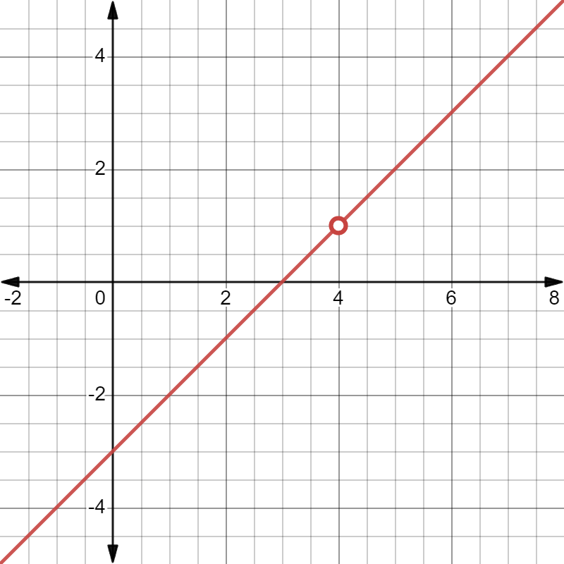This function has a removable discontinuity at \(x = 4\).
The name “removable” suggests that we can remove this discontinuity somehow. And we could by just adding a single point to the function. So the question is, what value should \(f(4)\) take on in order to make \(f(x)\) continuous everywhere?
Remember that by definition, a function is continuous at a point if the limit as \(x\) approaches that point equals the function’s actual value at that point. In this case, in order for \(f(x)\) to be continuous at \(x = 4\), \(\displaystyle\lim_{x \to 4}{f(x)}\) must equal \(f(4)\). So the question is essentially just asking for the limit of \(f(x)\) as \(x\) approaches 4. We can use factoring to solve that.
Looking at the graph above, to make the function continuous, we just need to fill in the point at \((4, 1)\). This means a value of \(f(4) = 1\) will make the function continuous. Notice that the \(y\)-value of this point is just \(\displaystyle\lim_{x \to 4}{f(x)}\). Here’s our new continuous function if we make this change:
What if we have a piecewise function that we want to make continuous? Let’s say we have this function:
Notice how \(f(x)\) isn’t defined at \(x = 2\). What value should \(f(x)\) take at this value to make it continuous?
How can we make this function continuous? We can do the same thing we did before: find the limit of \(f(x)\) as \(x\) approaches \(\class{red}{2}\). Using direct substitution, the limit from the left is \(\class{red}{2} + 2 = 4\) and the limit from the right is \(-\class{red}{2} + 6 = 4\). So the overall limit is 4 and that’s the value we need to set \(f(2)\) to in order to make the function continuous.
Infinite Limits
Here is the function \(f(x) = \frac{1}{x^2}\). What is \(\displaystyle\lim_{x \to 0}{f(x)}\)?
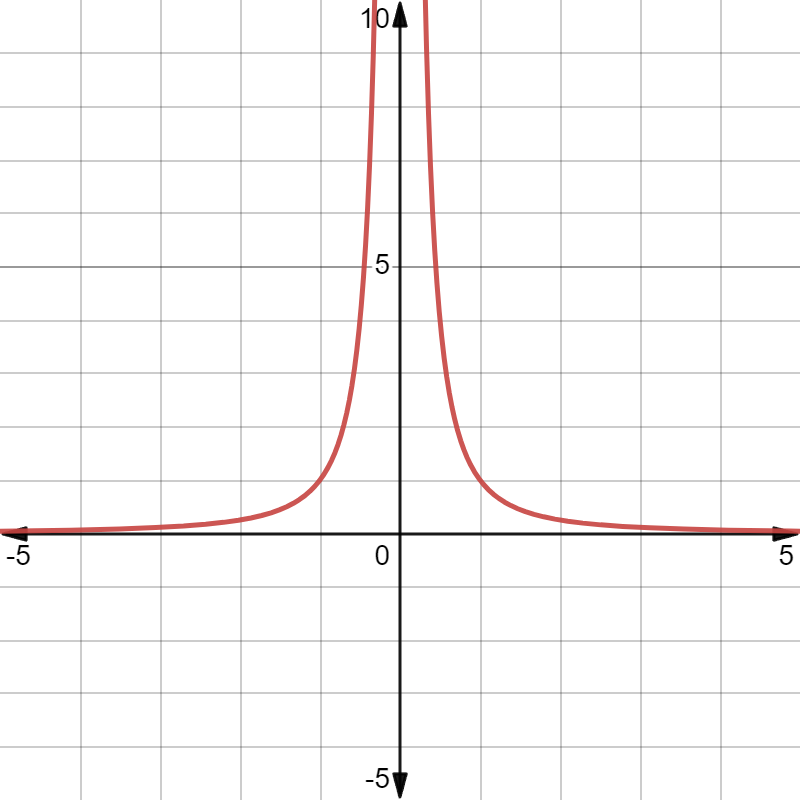\(x =\)
\(f(x) =\)
\(x =\)
\(f(x) =\)
| \(x\) | \(f(x)\) |
|---|---|
| -1 | 1 |
| -0.1 | 100 |
| -0.01 | 10,000 |
| ... | ... |
| \(x\) | \(f(x)\) |
|---|---|
| 1 | 1 |
| 0.1 | 100 |
| 0.01 | 10,000 |
| ... | ... |
Since \(f(x)\) goes up forever as \(x\) approaches 0, we would normally say that the limit doesn’t exist, but that doesn’t give us too much information. Saying that “the limit does not exist” doesn’t tell us why the limit doesn’t exist or exactly what happens to the function as \(x\) approaches that value. We can use infinite limits to give us a little bit more information.
Notice how as \(x\) approaches 0 from either side, \(f(x)\) increases forever without bound. This is known as “approaching positive infinity”. We write this as \(\displaystyle\lim_{x \to 0}{f(x)} = \infty\). If a function \(f(x)\) keeps decreasing without bound as \(x\) approaches \(c\), we write that as \(\displaystyle\lim_{x \to c}{f(x)} = -\infty\), since it approaches negative infinity. Infinite limits can appear whenever we have a vertical asymptote. In this case, \(f(x) = \frac{1}{x^2}\) has a vertical asymptote at \(x = 0\), which explains the infinite limit as \(x\) approaches 0.
Note that in both these cases, the limit still doesn’t exist by our definition of a limit! That’s because in both cases, the function isn’t approaching any specific number (infinity isn’t considered to be a number). Saying that a limit equals \(\infty\) or \(-\infty\) is just a notation that we use to describe the idea of increasing or decreasing without bound.
Here’s another function with a vertical asymptote: \(f(x) = \frac{1}{x}\). What is \(\displaystyle\lim_{x \to 0}{f(x)}\)?
\(x =\)
\(f(x) =\)
\(x =\)
\(f(x) =\)
The function approaches negative infinity from the left, but it approaches positive infinity from the right. In this case, we can’t even use our new infinite limit notation because there are two different limits from both sides. So all we can say is that the limit does not exist.
We can still use one-sided limits to describe the function’s behavior from either side: \(\displaystyle\lim_{x \to 0^-}{f(x)} = -\infty \) and \(\displaystyle\lim_{x \to 0^+}{f(x)} = \infty \).
Let’s get some practice finding infinite limits. What are the one-sided limits of \(f(x) = \frac{1}{x - 3}\) as \(x\) approaches 3?
Limit from the left: as \(x\) approaches 3 from the left, the denominator \(x - 3\) approaches 0 from the left side (meaning it stays negative but gets closer and closer to 0). This means that the fraction \(\frac{1}{x-3}\) is going to get bigger and bigger in absolute value, approaching negative infinity.
\(x =\)
\(x - 3 =\)
\(\frac{1}{x - 3} =\)
Limit from the right: as \(x\) approaches 3 from the right, \(x - 3\) approaches 0 from the right (staying positive), meaning that \(\frac{1}{x-3}\) gets larger and larger, approaching positive infinity.
\(x =\)
\(x - 3 =\)
\(\frac{1}{x - 3} =\)
Limits at Infinity
Let’s continue analyzing our classic function \(f(x) = \frac{1}{x}\). What happens to \(f(x)\) as \(x\) gets larger and larger?
\(x =\)
\(f(x) =\)
| \(x\) | \(f(x)\) |
|---|---|
| -1 | -1 |
| -10 | -0.1 |
| -100 | -0.01 |
| -1000 | -0.001 |
| ... | ... |
| \(x\) | \(f(x)\) |
|---|---|
| 1 | 1 |
| 10 | 0.1 |
| 100 | 0.01 |
| 1000 | 0.001 |
| ... | ... |
As \(x\) gets larger and larger, it gets closer and closer to 0. With another extension of our limit notation, we can describe this using a limit: \(\displaystyle\lim_{x \to \infty}{f(x)} = 0\). In this case, \(x \to \infty\) simply means “as \(x\) gets larger and larger without bound”, described more concisely as “approaching positive infinity”. Similarly, \(\displaystyle\lim_{x \to -\infty}{f(x)} = 0\), because as \(x\) keeps decreasing, approaching negative infinity, \(f(x)\) also approaches 0.
Just like how infinite limits are associated with vertical asymptotes, limits at infinity are associated with horizontal asymptotes. In this case, \(f(x) = \frac{1}{x}\) has a horizontal asymptote at \(y = 0\), which explains why both limits at infinity are equal to 0.
Here is a technique for evaluating limits at infinity without using a graph or table. Consider this example:
This might look scary at first, but all you have to pay attention to are the most dominant terms. Let’s look at the numerator \(5x^5 + 4x^3 + 20x^2\) first.
As \(x\) gets larger and larger, the \(5x^5\) term will become much larger than the \(4x^3\) and \(20x^2\) terms. For example, here’s what these terms equal at \(x = 10\):
- \(5x^5 = \text{500,000}\)
- \(4x^3 = \text{4,000}\)
- \(20x^2 = \text{2,000}\)
You can clearly see that \(5x^5\) is much larger than the other terms. As \(x\) heads towards infinity, this difference will only get larger and larger, to the point where \(5x^5\) is the only term that actually matters. So when we take the limit at infinity, we can ignore the less dominant terms \(4x^3\) and \(20x^2\).
When we deal with polynomials, the most dominant term is the term with the highest exponent. Coefficients are not relevant to determining the dominant term.
We can do the same with the denominator. The most dominant term in the denominator is \(x^5\), since as \(x\) goes to infinity, \(x^5\) will very quickly become much larger than 1000 (the other term in the denominator).
This means that for large values of \(x\), \(\large{\frac{5x^5 + 4x^3 + 20x^2}{x^5 + 1000}}\) is approximately equal to \(\large{\frac{5x^5}{x^5}}\), which can be simplified to just 5. That means the limit of that expression as \(x\) approaches infinity is simply 5.
Here’s another example:
We can ignore the \(-5x\) and \(7\) in the denominator since they are less dominant than the \(3x^3\) term. That gives us \(\large{\frac{2x^2}{3x^3}}\) as our approximation for large values of \(x\). (I’m using “large” in this context to mean negative numbers with a large absolute value, like -1,000 or -10,000. I’m not referring to positive values of \(x\), since we are taking the limit as \(x\) approaches \(-\infty\).) The approximation \(\large{\frac{2x^2}{3x^3}}\) can be further simplified to \(\large{\frac{2}{3x}}\). As \(x\) approaches \(-\infty\), the denominator \(3x\) approaches \(-\infty\), meaning that we’re dividing by negative numbers with a larger and larger magnitude. As the denominator’s absolute value gets larger and larger, \(\frac{2}{3x}\) approaches 0, meaning our limit is 0.
Here’s one final example:
Ignoring the less dominant terms, this expression is approximately equal to \(\large{\frac{x^4}{6x^3}}\) for large values of \(x\), which can be simplified to \(\large{\frac{x}{6}}\). However, as \(x\) approaches \(-\infty\), \(\large{\frac{x}{6}}\) will not approach any finite value, instead approaching negative infinity. This means that the limit does not exist, or more precisely, the limit is \(-\infty\).
Formal Definition of a Limit (Epsilon-Delta Definition)
I’ve said that the limit of a function \(f(x)\) at some point \(x = c\) is the value that \(f(x)\) approaches as \(x\) approaches \(c\). But what exactly do we mean by “approach”? How can we mathematically describe this idea of a limit?
This is our current definition of a limit:
“The value that \(f(x)\) approaches as \(x\) approaches \(c\)”
We can improve this a little bit by rewording it like this:
“The value that \(f(x)\) is close to when \(x\) is close to \(c\)”
Why does this help us? Because we can write down mathematically what it means for two numbers to be close to each other. The distance between two numbers is the absolute value of the difference between them. For example, the distance between 3.8 and 4 is 0.2 because \(|3.8 - 4| = 0.2\).
The smaller the distance between two numbers, the closer they are. So two numbers \(a\) and \(b\) are close if \(|a-b|\) is small.
Now that we have this definition of closeness, we can make our definition more mathematical. If we say that \(L\) is the limit of \(f(x)\) as \(x\) approaches \(c\), then our definition of a limit becomes:
“The value \(L\) such that \(|f(x)-L|\) is small when \(|x-c|\) is small”
But we still need to be more specific. How small exactly do we want these two values to be?
One important part of a limit \(L\) is that the function \(f(x)\) can be arbitrarily close to \(L\): in other words, we can make the distance between \(f(x)\) and \(L\) as small as we want. So let’s say we want \(f(x)\) to be within \(\epsilon\) (the Greek letter epsilon) units of \(L\). Let’s add that into our definition:
“The value \(L\) such that \(|f(x)-L| \lt \epsilon\) when \(|x-c|\) is small”
The value \(\epsilon\) represents how close we want \(f(x)\) to be to the limit \(L\). For example, if we want \(f(x)\) to be within 0.1 of \(L\), we should choose \(\epsilon = 0.1\), and if we want \(f(x)\) to be within 0.01 of \(L\), we should use \(\epsilon = 0.01\).
Because we want \(f(x)\) to be able to get arbitrarily close to \(L\), this condition should be satisfied no matter how small of an \(\epsilon\) we choose. If \(L\) is truly the limit of \(f(x)\) as \(x\) approaches \(c\), for any \(\epsilon\) greater than 0, our condition should be satisfied. We will add this to our definition:
“The value \(L\) such that \(|f(x)-L| \lt \epsilon\) for every \(\epsilon \gt 0\) when \(|x-c|\) is small”
Finally, how small do we want \(|x-c|\) to be? We want \(f(x)\) to be close to \(L\) (i.e. \(|f(x)-L| \lt \epsilon\)) as long as \(c\) is within some distance of \(x\). We will call this distance \(\delta\) (the Greek letter delta).
We want to choose our \(\delta\) such that if \(x\) is within \(\delta\) units of \(c\), it is guaranteed that \(f(x)\) will be within \(\epsilon\) units of \(L\).
However, because the value of \(f(c)\) is irrelevant to the limit of \(f(x)\) as \(x\) approaches \(c\), we don’t want \(\delta\) to equal 0 (because that would imply that \(x = c\)). To avoid this, we will simply add on the requirement that \(\delta\) must be greater than 0.
This gives us our final definition of a limit. If \(\displaystyle\lim_{x\to c}f(x) = L\), then:
For every \(\epsilon \gt 0\) (no matter how small), we can find a \(\delta \gt 0\) such that if \(0 \lt |x-c| \lt \delta\), it is guaranteed that \(|f(x)-L| \lt \epsilon\).
This is sometimes known as the epsilon-delta definition of a limit.
Here’s a simple example of how to use this definition to formally prove a limit.
Problem: Consider the function \(f(x) = x\). Prove that \(\displaystyle\lim_{x \to 1}f(x) = 1\) using the formal definition of a limit.
This limit might seem very obvious, but I’m just trying to get you familiar with this definition of a limit.
Our goal is to prove that for any positive number \(\epsilon\), we can find a positive number \(\delta\) that meets our requirement. The easiest way to do this is to come up with a formula that gives a valid \(\delta\) in terms of \(\epsilon\). This formula works as a sort of “\(\delta\)-generator” that we can use to generate a \(\delta\) for any value of \(\epsilon\) that we give it.
To create this \(\delta\)-generator, let’s start off with what we want to achieve. We want \(|f(x) - L| \lt \epsilon\), so let’s plug in the values of \(f(x)\) and \(L\). In this case, our function \(f(x)\) is equal to \(x\), and \(L\) is equal to 1 (since we are trying to prove that the limit is 1).
The symbol \(\implies\) means “implies” (i.e. if the preceding statement is true, then the following statement must be true). You’ll see that symbol a lot in this section!
Remember that we want this to be true when \(0 \lt |x - c| \lt \delta\). Because we are trying to find the limit as \(x\) approaches 1, \(c\) is equal to 1.
This is interesting because we want \(|x-1| \lt \epsilon\) when \(0 \lt |x-1| \lt \delta\). This means that if we simply set \(\delta = \epsilon\), \(0 \lt |x-1| \lt \delta\) would automatically imply that \(|x-1| \lt \epsilon\). This means that our \(\delta\)-generator is simply \(\delta = \epsilon\).
To finish our proof, we just need to show that \(0 \lt |x-c| \lt \delta\) implies that \(|f(x) - L| \lt \epsilon\). Every epsilon-delta proof ends in this way.
Just like that, we have proven that \(\displaystyle\lim_{x\to 1}x = 1\)! It’s quite a bit of work for such an obvious limit, but that’s just what you need to do if you want to be rigorous.
Use this slider to better understand the epsilon-delta definition of a limit. This is what happens if we set \(\epsilon = 0.2\). If \(\epsilon = 0.2\), that means \(\delta = 0.2\).
\(x =\)
\(f(x) = x =\)
\(|x - c| = \)
\(|f(x) - L| =\)
Remember that \(\class{red}{c = 1}\) and \(\class{blue}{L = 1}\), because we are trying to prove that \(\displaystyle\lim_{x\to \class{red}{1}}f(x) = \class{blue}{1}\).
Notice that whenever \(|x-c|\) is less than \(\delta\) (and greater than 0), \(|f(x)-L|\) is less than \(\epsilon\). This is true not just for \(\epsilon = 0.2\), but for any positive value of \(\epsilon\) (as long as \(\delta = \epsilon\)). Because of this, the limit of \(f(x)\) as \(x\) approaches \(c\) is \(L\) (in this case, \(\displaystyle\lim_{x\to 1}x = 1\)).
Now let’s try a harder limit to prove:
Problem: Consider the function \(f(x) = x^2\). Prove that \(\displaystyle\lim_{x \to 3}f(x) = 9\) using the formal definition of a limit.
Just like the last problem, we will start with \(|f(x) - L| \lt \epsilon\) and try to find a \(\delta\)-generator.
We want to manipulate this expression into the form \(|x-c| \lt \text{[something]}\) so that we can find a value of \(\delta\) in terms of any \(\epsilon\). Remember, we want \(0 \lt |x-c| \lt \delta\) to imply that \(|f(x) - L| \lt \epsilon\).
Here, it might seem that \(\delta = \frac{\epsilon}{|x+3|}\) could work, but we want our formula for \(\delta\) to only be in terms of \(\epsilon\) (and not \(x\)). How can we eliminate the \(x\) in this formula?
Here, we are finding the limit as \(x\) approaches 3, so we can assume that \(x\) will be somewhere near 3. Let’s assume that \(x\) is within 1 unit of 3 (i.e. \(\delta \lt 1\)). This means that \(2 \lt x \lt 4\), which implies that \(5 \lt |x+3| \lt 7\) (keep this in mind). Let’s keep going to find bounds for \(\frac{\epsilon}{|x+3|}\):
When we take the reciprocals of all three terms, we must reverse the equality.
Doing this gives us an upper bound for \(\frac{\epsilon}{|x+3|}\): we can be sure it’s less than \(\frac{\epsilon}{7}\). If we set \(\delta\) equal to this upper bound \(\frac{\epsilon}{7}\), we can complete our proof! I will demonstrate by starting with \(0 \lt |x-c| \lt \delta\) and getting to \(|f(x) - L| \lt \epsilon\):
Note that this won’t work if \(\epsilon\) is greater than 7, because that would cause \(\delta\) to be greater than 1, which violates the assumption we made. In that case, we could just set \(\delta = 1\). Note that \(\delta = 1\) still implies that \(5 \lt |x+3| \lt 7\). Here’s the proof for the case where \(\delta = 1\):
In conclusion, given any \(\epsilon\), we should set \(\delta\) equal to 1 or \(\frac{\epsilon}{7}\), whichever is smaller. Doing so will guarantee that \(0 \lt |x-3| \lt \delta\) implies that \(|x^2-9| \lt \epsilon\), so \(\displaystyle\lim_{x\to 3}x^2 = 9\).
This slider shows what happens with a value of \(\epsilon = 0.7\) and \(\delta = \frac{\epsilon}{7} = 0.1\). What do you notice when \(|x-c| \lt \delta\)?
\(x =\)
\(f(x) = x^2 \approx\)
\(|x - c| = \)
\(|f(x) - L| =\)
Whenever \(|x-c| \lt 0.1\), it is guaranteed that \(|f(x)-L| \lt 0.7\). In general, whenever \(|x-c| \lt \delta\), it is guaranteed that \(|f(x)-L| \lt \epsilon\), assuming that we set \(\delta\) to the minimum of 1 and \(\frac{\epsilon}{7}\). Because we have a way to generate a valid \(\delta\) given any \(\epsilon \gt 0\), we have proved that \(\displaystyle\lim_{x\to 3}x^2 = 9\).
The formal definition of a limit is important because it allows us to rigorously prove all of the limit properties that will make our lives a lot easier as we learn more calculus!
Unit 1 Summary
- Limits describe what happens to a function \(f(x)\) as \(x\) approaches a specific value \(c\).
- The limit of \(f(x)\) as \(x\) approaches \(c\) doesn’t exist if \(f(x)\) doesn’t approach a finite value or approaches two different values from the left and right side of \(c\).
- One-sided limits describe what happens to \(f(x)\) as \(x\) approaches \(c\) either from the left or from the right.
-
\[ \text{Limit from the left:} \lim_{x \to c^{-}}f(x) \] \[ \text{Limit from the right:} \lim_{x \to c^{+}}f(x) \]
- A function is continuous if its graph is a single line without any gaps or holes (i.e. you can draw the graph without lifting your pencil).
- A function \(f(x)\) is continuous at a point \(x = c\) if the limit as \(f(x)\) approaches \(c\) equals \(f(c)\).
- There are three main types of discontinuities (things that make a function not continuous): point discontinuities, jump discontinuities, and infinite discontinuities.
- The intermediate value theorem states that if a function \(f(x)\) is continuous over an interval \([a, b]\), it will pass through every \(y\)-value in between \(f(a)\) and \(f(b)\).
- To find limits, you can use direct substitution (directly plugging in the \(x\)-value into the limit expression), algebraic manipulation, limit properties, and/or the squeeze theorem.
-
The squeeze theorem states that if you have three functions \(f(x)\), \(g(x)\), and \(h(x)\), and \(g(x) \ge f(x) \ge h(x)\) for all points near a point \(x = c\), then \(\displaystyle\lim_{x \to c}{f(x)} = \lim_{x \to c}{g(x)} = \lim_{x \to c}{h(x)}\).
- Important limits:
-
\[ \lim_{x \to 0}\frac{\sin(x)}{x} = 1 \] \[ \lim_{x \to 0}\frac{1 - \cos(x)}{x} = 0 \]
- If a function \(f(x)\) has a removable discontinuity at \(x = c\), you can remove it by redefining \(f(c)\) to be \(\displaystyle\lim_{x \to c}{f(x)}\).
- Infinite limits describe what happens when a function \(f(x)\) increases or decreases without bound as \(x\) approaches a value \(c\). If \(\displaystyle\lim_{x \to c}{f(x)} = \infty \), then \(f(x)\) increases forever as \(x\) approaches \(c\), and if \(\displaystyle\lim_{x \to c}{f(x)} = -\infty \), then \(f(x)\) decreases forever as \(x\) approaches \(c\).
- Limits at infinity describe what happens to a function \(f(x)\) as \(x\) increases or decreases without bound. \(\displaystyle\lim_{x \to \infty}{f(x)}\) is the value \(f(x)\) approaches as \(x\) increases forever, and \(\displaystyle\lim_{x \to -\infty}{f(x)}\) is the value \(f(x)\) approaches as \(x\) decreases forever.
Unit 2: Derivative Basics
Unit Information
Khan Academy Link: Differentiation: definition and basic derivative rules
All topics covered in Khan Academy:
Green underlined topics are topics at least partially covered on my website and red topics are topics not yet covered on my website. Note that even green topics might not be covered in full detail on my page.
- Defining average and instantaneous rates of change at a point
- Defining the derivative of a function and using derivative notation
- Estimating derivatives of a function at a point
- Connecting differentiability and continuity: determining when derivatives do and do not exist
- Applying the power rule
- Derivative rules: constant, sum, difference, and constant multiple: introduction
- Derivative rules: constant, sum, difference, and constant multiple: connecting with the power rule
- Derivatives of \(\cos(x)\), \(\sin(x)\), \(e^x\), and \(\ln(x)\)
- The product rule
- The quotient rule
- Finding the derivatives of tangent, cotangent, secant, and/or cosecant functions
Intro to Derivatives
In the Intro to Limits section, I gave a preview into the tangent line problem. In this unit, we’re going to actually solve it!
I mentioned a way to find the slope of a function at a single point: You take a second point and move it closer and closer to the first point, then calculate what the slope between the two points approaches.
In this animation, the green line is known as a secant line: a line that passes through two points on a function. A secant line tells you the average rate of change between two points: how fast the function is increasing between those two points on average.
The slope of a secant line can be calculated as the change in \(y\) divided by the change in \(x\). Therefore, a secant line that passes through two points on a function’s curve \((a, f(a))\) and \((b, f(b))\) has a slope of:
But the green line in the animation is approaching what is known as a tangent line: the line that just barely touches the function at a certain point.
The blue line is a tangent line because it is tangent to the function!
A tangent line tells you the exact slope of a function at a given point — exactly how fast the function is increasing at that instant! Because of this, the slope’s value is known as the function’s instantaneous rate of change at that point.
For example, if the red function in the image above represented your position over time, the slope of a line tangent to a point on the function would tell you your velocity (speed and direction) at that time, because velocity describes how fast your position is changing at a given instant (and in what direction).
Specifically, velocity is the instantaneous rate of change of position. This means that your velocity at any point in time describes how fast and in what direction your position is changing in that instant.
This circle is moving across the screen. What is the relationship between its position and velocity?
Position: pixels
Velocity: pixels/second
This circle’s velocity is the instantaneous rate of change of its position.
Graph of circle’s position:
The slope of the tangent line tells you the circle’s velocity at that point in time.
To find the slope of a secant line, we can use basic arithmetic. However, finding the slopes of tangent lines is more complicated and will require us to use calculus.
This is the main idea behind derivatives: they tell you how to find the slopes of tangent lines. The process of finding a derivative is called differentiation. To differentiate a function is to find its derivative. In the next few sections, you’ll find out exactly what derivatives are and how to find them!
Derivatives are essentially like speedometers for functions, because they describe how fast functions change and in what directions. As you learn more calculus, you’ll see derivatives pop up in many places, from solving optimization problems (that require you to find the maximum or minimum value of a function) to evaluating integrals (another huge calculus concept that is closely related to differentiation).
Differentiation is extremely useful to describe how a function behaves, and it’s used in physics to describe the motion of objects (since motion is really just about change!)
Remember, derivatives and differentiation are all about slope and rate of change!
Derivatives: An Example
(Note: In this section, I will use the word “slope” to refer to instantaneous rate of change.)
What is the slope of the tangent line of \(\class{red}{f(x) = x^2}\) at \(\class{blue}{x = 2}\)?
Consider the function \(f(x) = x^2\). What is the slope at \(x = 2\)?
To find this slope, first, we’ll choose two points on the function with \(x\)-values close to 2. We’ll choose the points with \(x\)-values of 2 and 2.1, which are \((2, 4)\) and \((2.1, 4.41)\). (Remember, the \(y\)-values of these points are equal to \(x^2\), because that’s our function!)
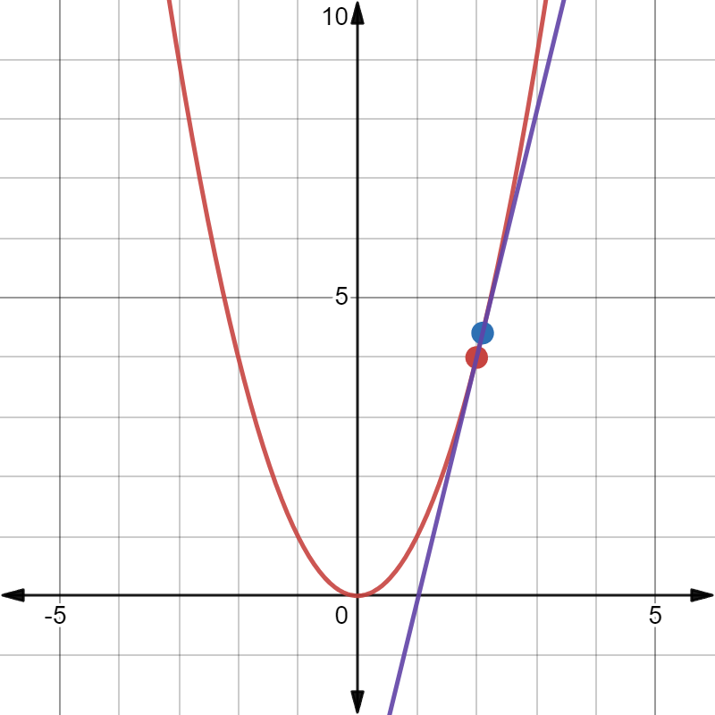The purple line is the secant line between the points \(\class{red}{(2, 4)}\) and \(\class{blue}{(2.1, 4.41)}\).
Let’s find the slope of the secant line between these two points. Remember, slope is defined as “rise over run”, or change in \(y\) divided by change in \(x\).
Now let’s move the second point closer to the first point. We’ll change the \(x\)-value of the second point to 2.01, giving us the point \((2.01, 4.0401)\). Let’s calculate the slope between this point and our other point \((2, 4)\).
If we do this slope calculation again with the even closer points \((2, 4)\) and \((2.001, 4.004001)\), we get a slope of 4.001.
Here is a table summarizing our results, as well as testing what happens when the second point is to the left of the first point:
| 1st Point | 2nd Point | Change in \(x\) (“run”) | Slope of secant line |
|---|---|---|---|
| (2, 4) | (2.1, 4.41) | 0.1 | 4.1 |
| (2, 4) | (2.01, 4.0401) | 0.01 | 4.01 |
| (2, 4) | (2.001, 4.004001) | 0.001 | 4.001 |
| (2, 4) | (2, 4) | 0 | ??? |
| (2, 4) | (1.999, 3.996001) | -0.001 | 3.999 |
| (2, 4) | (1.99, 3.9601) | -0.01 | 3.99 |
| (2, 4) | (1.9, 3.61) | -0.1 | 3.9 |
Using this slider, explore how the position of the second point changes the slope of the secant line. What happens to the slope as the change in \(x\) approaches 0 from either side?
1st Point: (2, 4)
2nd Point:
Change in \(x\) (“run”) =
Slope of secant line =
The table and slider show that as the points get closer and closer, the slope gets closer and closer to 4. In fact, we can make the slope as close to 4 as we want (arbitrarily close to 4) by moving the points closer and closer to each other. Because of this, 4 is defined as the slope of the function at \(x = 2\). That is the limit of the slope of the secant line as the distance between the two points approaches 0.
Importantly, just like with limits, the slope of the secant line must approach the same value whether the second point is approaching from the left or from the right. If the slope approaches a different value from the left than from the right, the slope at that point does not exist.
The slope of \(f(x) = x^2\) at \(x = 2\) is 4. This is shown with the green tangent line, which has a slope of 4.
Let’s try finding the slope of this function at some other points. For simplicity, I’m not going to go through all the steps again, I’m just going to show the results in this table:
| \(x\) | Slope at \(x\) |
|---|---|
| 2 | 4 |
| 3 | 6 |
| 10 | 20 |
| -1 | -2 |
| -2 | -4 |
| 0 | 0 |
Take a moment to think about what this table is telling us. For example, the slope is greater at \(x = 3\) than at \(x = 2\), which makes sense because if you look at the graph of \(f(x) = x^2\), it is increasing faster at \(x = 3\) than at \(x = 2\).
At negative values of \(x\), the graph of \(f(x) = x^2\) is decreasing, which explains why the slopes at negative values of \(x\) are also negative. At \(x = 0\), the parabola turns around, meaning it is neither increasing nor decreasing at that point, hence the slope of 0.
Did you notice a pattern in the table? It turns out that for any \(x\)-value on the function \(f(x) = x^2\), the slope at \(x\) is always equal to \(2x\). (In a future section, you will learn how to prove this!)
This means that the derivative of \(f(x) = x^2\) is \(f'(x) = 2x\). (I will explain in more detail what \(f'(x)\) means in the next section. For now, just know that it represents the derivative of \(f(x)\).) A derivative of a function is an expression that tells you the slope of that function at any particular \(x\)-value.
For example, if a function has a derivative of \(3x\), at \(x = 10\), that function has a slope of \(3 \cdot 10 = 30\). At \(x = 100\), that function has a slope of \(3 \cdot 100 = 300\).
Explore how the tangent line to \(f(x) = x^2\) changes as you change \(x\):
\(x =\)
\(f'(x)\) (Derivative) =
The derivative \(f'(x)\) gives the slope of the tangent line at that \(x\)-value.
Another way to think of this derivative of \(2x\) is that if I changed \(x\) by a tiny amount (let’s call it \(\Delta x\) for “change in \(x\)”, pronounced “delta x”), then the value of \(x^2\) would change by approximately \(\Delta x\) times our derivative \(2x\), or \(2x\Delta x\). For most functions, this approximation involving the derivative will get more accurate as \(\Delta x\) gets smaller.
For example, for the function \(f(x) = x^2\), at \(\class{red}{x = 10}\), the derivative is \(2\class{red}{x} = 2 \cdot \class{red}{10} = 20\). If I increased \(\class{red}{x}\) by a tiny amount \(\class{blue}{\Delta x}\), let’s say 0.1, then the value of \(f(x)\) would increase by about \(2\class{red}{x}\class{blue}{\Delta x} = 2\cdot \class{red}{10} \cdot \class{blue}{0.1} = 2\). This is the derivative at \(\class{red}{x = 10}\) (which is equal to 20) multiplied by \(\class{blue}{\Delta x}\).
In fact, the value of \(f(10 + 0.1)\) is 2.01 greater than \(f(10)\), so our approximation was really good! To summarize, the derivative tells us how much a function’s output value will change in response to small changes to its input value.
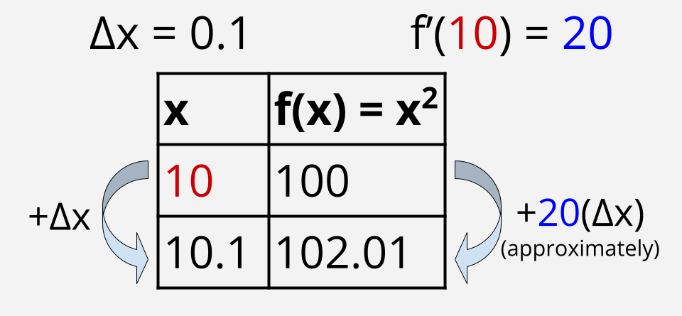Changing \(x\) by \(\Delta x\) increases \(f(x)\) by about \(\class{blue}{20} \cdot \Delta x\), since 20 is the derivative of \(f(x)\) at \(x = \class{red}{10}\). The derivative gives us the number we need to multiply \(\Delta x\) by to calculate the change in \(f(x)\).
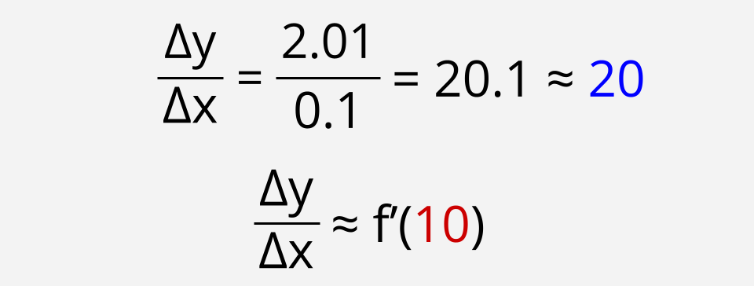The change in \(f(x)\) (written as \(\Delta y\)) divided by the change in \(x\) is approximately equal to \(f'(\class{red}{10})\), the derivative of \(f(x)\) at \(x = \class{red}{10}\). The deriviative is the limit of \(\frac{\Delta y}{\Delta x}\) as \(\Delta x\) approaches 0.
I said that the derivative of \(x^2\) is \(2x\), but to be more precise, I should have said that the derivative of \(x^2\) with respect to \(x\) is \(2x\). What this means is that as I change \(x\) by some amount, the value of \(x^2\) also changes, and the rate of change of \(x^2\) as I change \(x\) is the derivative \(2x\).
However, in the world of calculus, we won’t always be differentiating with respect to \(x\)! For example, if I referred to the derivative of some hypothetical function with respect to \(y\), I would be describing how that function responds to changes in the variable \(y\).
Often in real-world problems, you’ll be differentiating with respect to the variable \(t\), which represents time. The derivative of a function with respect to \(t\) tells you how that function changes as time passes. For example, if \(f(t)\) gives you the altitude of a plane at time \(t\), the derivative of \(f(t)\) represents how fast the plane’s altitude changes as \(t\) increases (i.e. as time goes on).
Derivatives: Notation
Wait, what does \(f'(x)\) even mean? \(f'(x)\) means the derivative of \(f(x)\), and is pronounced “f-prime of x”. But that’s not the only way of notating a derivative. This \(f'(x)\) notation is known as Lagrange’s notation, after Joseph-Louis Lagrange. An expression like \(f'(2)\) means the derivative of \(f(x)\) at \(x = 2\), or the slope of the function at \(x = 2\).
Another way of denoting a derivative is Leibniz’s notation, named after Gottfried Leibniz. Here’s the logic behind it.
The first step to finding the derivative at a point is to take two points on the function and then find the slope of the secant line through those two points. The slope is defined as \(\frac{\Delta y}{\Delta x}\), where \(\Delta y\) means change in \(y\) (the difference in \(y\) between the two points) and \(\Delta x\) means change in \(x\) (the difference in \(x\) between the two points). To find the slope at a single point, we take the limit of the slope as the second point approaches the first. As we move the second point towards the first, \(\Delta x\) will approach 0. The limit can thus be written like this:
This notation can be shortened to:
Therefore, in this notation, the derivative of a variable \(y\) with respect to \(x\) is written as \(\dv{y}{x}\). For example, if \(y = x^2\), then \(\dv{y}{x} = 2x\).
You can think of the \(d\) as meaning “differential”, “derivative”, or even “delta”. You can think of \(\dv{y}{x}\) of the ratio of the change in \(y\) to change in \(x\) when we change \(x\) by an infinitesimal (infinitely small) amount \(\dd{x}\).
\(\dv{y}{x}\) may look like a fraction, but it’s not really a regular fraction since \(\dd{y}\) and \(\dd{x}\) don’t represent specific numbers. There are some places in calculus where you can essentially treat \(\dv{y}{x}\) as a fraction, but you have to be very careful and only do this when it’s allowed.
The derivative operator, which takes in a function and outputs its derivative, is written as \(\dv{}{x}\). So the derivative of a function \(f(x)\) is written as \(\dv{}{x}f(x)\) or \(\dv{[f(x)]}{x}\). As an example, \(\dv{}{x}(\class{red}{x^2}) = \class{blue}{2x}\) because \(\class{blue}{2x}\) is the derivative of \(\class{red}{x^2}\) with respect to \(x\).
The derivative operator can also be used with variables other than \(x\). For example, \(\dv{\class{red}{t}}f(\class{red}{t})\) represents the derivative of \(f(\class{red}{t})\) with respect to \(\class{red}{t}\). The variable after the \(d\) in the “denominator” of the derivative operator is the variable we are differentiating with respect to.
Likewise, the \(\dv{y}{x}\) notation can be used with any two variables, not just \(y\) and \(x\). For example, \(\dv{a}{b}\) represents the derivative of \(a\) with respect to \(b\), or how the variable \(a\) responds to changes in \(b\).
Throughout this page, I will be switching between these two notations depending on which is most convenient, so it’s important to understand both of them. There are more ways to denote derivatives, but these are the most common.
Interactive Demo: Understanding Derivatives
This isn’t a lesson on its own, but rather an interactive demo I’ve created to help you understand a concept better.
Here, you can experiment with how different values of \(x\) affect the function \(f(x) = x^2\) and its derivative \(f'(x) = 2x\). Here are some important questions to consider:
- What happens to \(f'(x)\) as \(x\) takes on different values?
- When is \(f'(x)\) negative?
- What does it mean when \(f'(x)\) is negative?
- When is the value of \(f'(x)\) the largest?
- What does it mean when \(f'(x)\) is large?
- What happens to \(f(x)\) and \(f'(x)\) when \(x = 0\)? What does this mean?
Try figuring these out on your own first, then use the “Give me some hints...” button if you get stuck.
Use this slider to control the value of \(x\):
Or enter a value for \(x\):
\(x =\)
\(f(x) = x^2 = \)
\(f'(x) = 2x =\)
The value of the derivative \(f'(x)\) is currently .
This means that the value of the original function \(f(x)\) as you increase \(x\).
Remember that the derivative \(f'(x)\) describes how fast and in what direction \(f(x)\) changes when you change \(x\).
A positive value of \(f'(x)\) means that the slope of the original function \(f(x)\) is positive. This means that \(f(x)\) is increasing. A negative value of \(f'(x)\) corresponds to a negative slope for \(f(x)\), meaning that \(f(x)\) is decreasing.
Derivatives: Limit Definition
Imagine if we had to go through the process detailed in Derivatives: An Example every time we wanted to find a derivative! That’s simply just too much work. We need a more mathematical way of describing derivatives that we can use to find derivatives quickly.
Let’s start with the first step of our process: if we want to find the derivative of a function \(f(x)\) at a certain \(x\)-value, we choose two points on the function: one point on the function at that exact \(x\)-value and another point that is nearby on the function. Now, our two points are separated by some amount, so let’s call the horizontal distance between these two points \(h\).
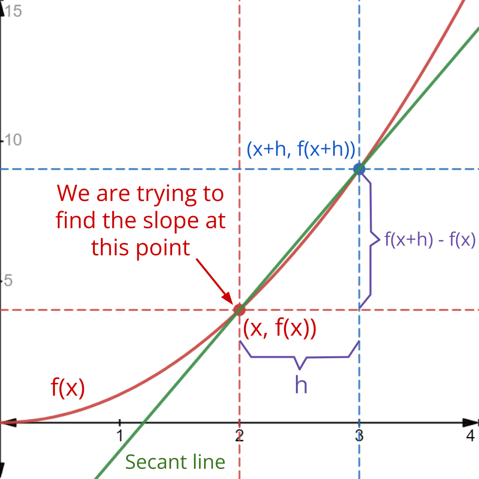This means the first point has an \(x\)-value of \(\class{red}{x}\) and the second point has an \(x\)-value of \(\class{blue}{x+h}\). To get the \(y\)-values of these points, we plug in their \(x\)-values into the function \(f(x)\). By doing this, we can figure out that the coordinates of the two points are \(\class{red}{(x, f(x))}\) and \(\class{blue}{(x+h, f(x+h))}\).
Now let’s find the slope of the secant line between these points. The “rise”, or change in \(y\), between the points is \(f(x+h) - f(x)\), and the “run”, or change in \(x\), is simply \(h\) by our definition. Let’s plug these values into the slope formula:
To actually find the slope (instantaneous rate of change) at the first point, we need to move the second point closer and closer to the first point. Let’s try an example where we do just that!
To find the derivative of \(f(x) = x^2\) at \(x = 2\), we move another point towards the point \((2, 4)\). Pay attention to the value of \(h\). What happens to \(h\) as you do this?
| Expression | What This Means | Value |
|---|---|---|
| \(x\) | \(x\)-coordinate of 1st point | 2 |
| \(h\) | change in \(x\) (run) | |
| \(f(x+h) - f(x)\) | change in \(y\) (rise) | |
| \(\displaystyle\frac{f(x+h) - f(x)}{h}\) | slope of secant line |
The points \(\class{red}{(x, f(x))}\) and \(\class{blue}{(x+h, f(x+h))}\) are plotted on the graph above.
As the points get closer to each other, \(h\) will get smaller and smaller, approaching 0. So to get an expression for instantaneous rate of change, we need to take the limit of the secant line’s slope as \(h\) approaches 0:
Now we have an expression that we can use to find the slope of any function at any point! Let’s try using it with \(f(x) = x^2\) and \(x = 5\):
We can’t use direct substitution here to solve for this limit because that would result in a division by 0. Let’s try simplifying this further:
Now we can use direct substitution, giving us a final slope of \(\displaystyle\lim_{h \to \class{red}{0}}({10 + h}) = 10 + \class{red}{0} = 10\). What this means is that the slope (instantaneous rate of change) of \(f(x) = x^2\) at \(x = 5\) is 10. It also means that the slope of the line tangent to \(f(x) = x^2\) at \(x = 5\) is 10.
Being able to find the slope at one point mathematically is cool, but what’s much more powerful is being able to find the slope at any \(x\)-value. We can do that with our slope equation simply by not substituting any specific value for \(x\). Let’s try this with \(f(x) = x^2\):
What this means is that for any \(x\)-value on the function, the slope is equal to \(2x\). This is the derivative of \(f(x) = x^2\)! Using this limit definition of a derivative, we can find the derivative of many different functions.
There is an alternative definition of a derivative that also uses a limit. Let’s take the diagram from above and make some small changes:
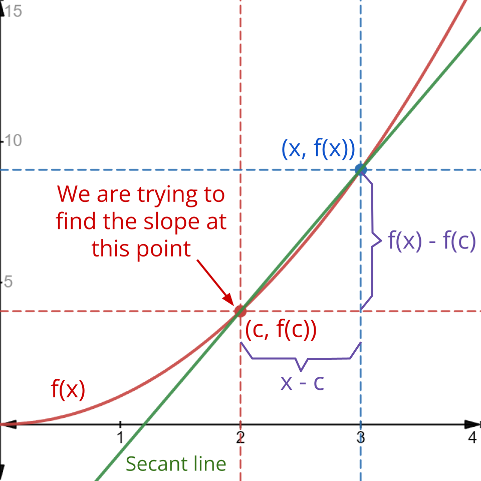We are now trying to find the slope at \(x = c\) (the red point). Now instead of defining \(h\) as the horizontal distance between the points, we give the first point an \(x\)-value of \(c\) and the second point an \(x\)-value of \(x\), making the horizontal distance between them \(x - c\). Let’s find the slope of the secant line using the slope formula.
We are still moving the second point towards the first point, so now \(x\) is changing instead of \(h\) as we move the second point closer to the first. As we do this, the value of \(x\) approaches \(c\). So to get the slope of the tangent line, we need to take the limit as \(x\) approaches \(c\):
This is an expression that gives us the slope of \(f(x)\) at \(x = c\). This alternative definition of the derivative is sometimes easier to work with, although the previous definition is used more often when finding derivatives.
We will now use the alternate definition of the derivative to find the derivative of \(f(x) = x^2\) at \(x = 2\). What do you notice? What value does \(x\) approach as the two points become closer together?
| Expression | What This Means | Value |
|---|---|---|
| \(c\) | \(x\)-coordinate of 1st point | 2 |
| \(x\) | \(x\)-coordinate of 2nd point | |
| \(x - c\) | change in \(x\) (run) | |
| \(f(x) - f(c)\) | change in \(y\) (rise) | |
| \(\displaystyle\frac{f(x) - f(c)}{x - c}\) | slope of secant line |
The points \(\class{red}{(c, f(c))}\) and \(\class{blue}{(x, f(x))}\) are plotted on the graph above.
Derivatives: Estimating Derivatives
Let’s say you were tasked to determine the current speed of a car. You are given three pieces of information: the average speed of the car over the last 10 minutes, over the last 2 minutes, and over the last 2 seconds. What is the best guess for the current speed of the car?
The answer is the average speed of the car over the last 2 seconds. Why do you think this is the best answer?
Well, the average speed of the car over the last 10 minutes (or even the last 2 minutes) likely won’t tell us much about the car’s current speed. These average speeds might be close to the current speed if the car has maintained a constant speed for a long time, but if the car was driving through a city, its speed would be constantly changing. This means that its current speed is probably nowhere near its average speed over the last few minutes.
However, the average speed of the car over the last 2 seconds is likely to be very close to its current speed, since the car is not very likely to have sped up or slowed down in the last 2 seconds. If we knew the car’s average speed over the last 0.2 seconds, that would be an even better estimate of the car’s current speed.
The idea is that the smaller the interval we look at, the better we can estimate how fast something is changing (the instantaneous rate of change). We can use this concept to estimate derivatives of a function at a point when we have limited information.
Let’s say we have a function \(f(x)\), and we only know its values at a few points. (Maybe this data came from a scientific experiment, and values were only measured every once in a while.)
| \(x\) | \(f(x)\) |
|---|---|
| 0 | 0 |
| 1 | 2 |
| 2 | 8 |
| 3 | 11 |
These points are the only information we have of \(f(x)\).
Our task is to estimate this function’s derivative at \(x = 1.5\) (i.e. estimate the value of \(f'(1.5)\)). How can we come up with the best possible estimate?
Since we only know the function’s value at a few points, we’re going to have to use average rates of change to come up with our estimate. We could find the average rate of change from \(x = 0\) to \(x = 4\), but we could do better.
My analogy with the car demonstrates that looking at a smaller interval gives a more accurate estimate. So to get the best estimate, we need to look at the smallest interval possible.
We are trying to estimate \(f'(1.5)\), so within the points we do know the values of, we need to find the smallest interval that includes \(x = 1.5\).
That interval is between \(x = 1\) and \(x = 2\). We can’t choose an interval that is smaller than this because we don’t know the values of any points on the function between \(x = 1\) and \(x = 2\).
The best estimate for the derivative at \(x = 1.5\) is the slope of the secant line, or average rate of change, between \(x = 1\) and \(x = 2\). We can calculate that with the slope formula:
To be clear, we don’t actually know what the derivative is at \(x = 1.5\). Instead, we’re making an educated guess based on the average rate of change around that point. Most likely, the actual slope of the function at \(x = 1.5\) is somewhere near this average rate of change.
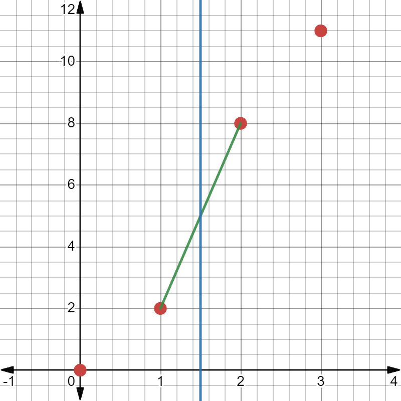We don’t know what the slope of the function is at \(\class{blue}{x = 1.5}\), but we can make an educated guess based on the slope of the secant line between \(x = 1\) and \(x = 2\). Unless the function behaves erratically, \(f'(1.5)\) should be near the slope of the secant line.
Derivatives: Differentiability
Just like when finding limits, when trying to finding derivatives, sometimes these derivatives just don’t exist. Differentiability is whether or not a function has a derivative (a slope/instantaneous rate of change) at a certain point.
When will derivatives not exist? There are three main conditions that will cause a derivative to not exist at a point.
The first is if a function has a vertical tangent line at a point. A vertical tangent line doesn’t have a defined slope, so a function is not differentiable at a point if it has a vertical tangent at that point. Here’s an example:
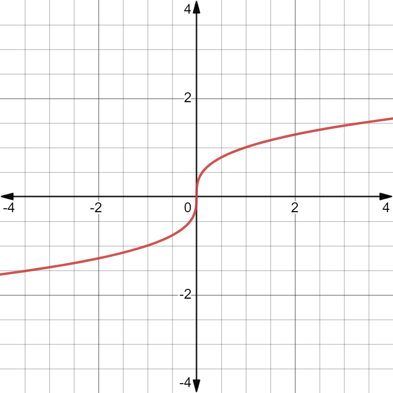What is the derivative of \(f(x) = \sqrt[3]{x}\) at \(x = 0\)?
We’ll try to find the derivative at \(x = 0\) by finding what slope the secant line approaches as a second point approaches \(x = 0\).
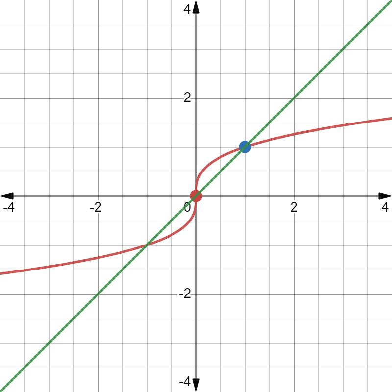If the second point approaches from the right, the slope of the secant line seems to keep increasing without bound.
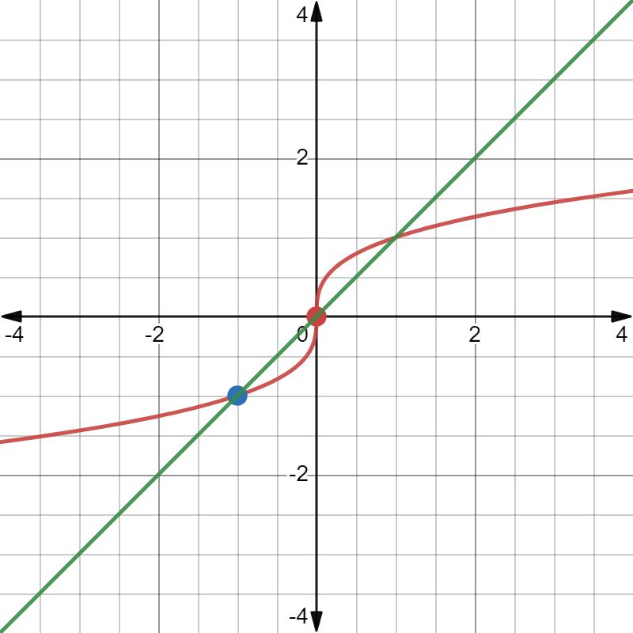The same happens if the second point approaches from the left.
Is it possible to find the derivative of \(f(x) = \sqrt[3]{x}\) at \(x = 0\)? What happens to the secant line as the second point approaches the first? Explore these questions with this slider!
Change in \(x\) (“run”) =
Slope of secant line =
It turns out that the tangent line to \(x = 0\) is a vertical line. That means that its slope is undefined at \(x = 0\), so the function is not differentiable there.
The second way a function can be not differentiable is if there is a sharp turn in its graph. Here’s an example:
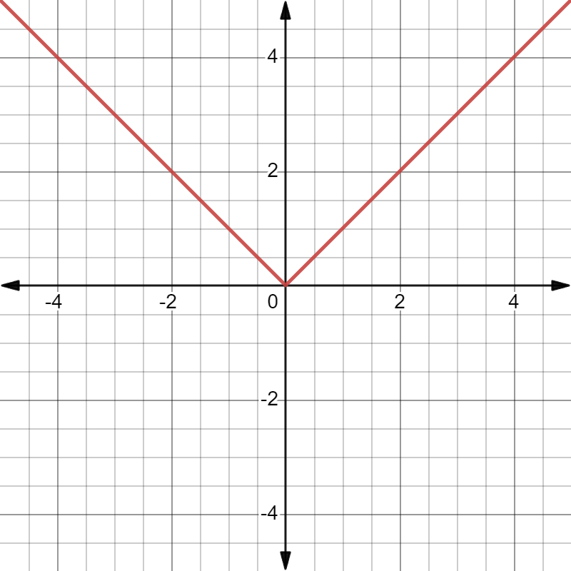What is the derivative of \(f(x) = |x|\) at \(x = 0\)?
Let’s use the same technique to find the slope of this function at \(x = 0\).
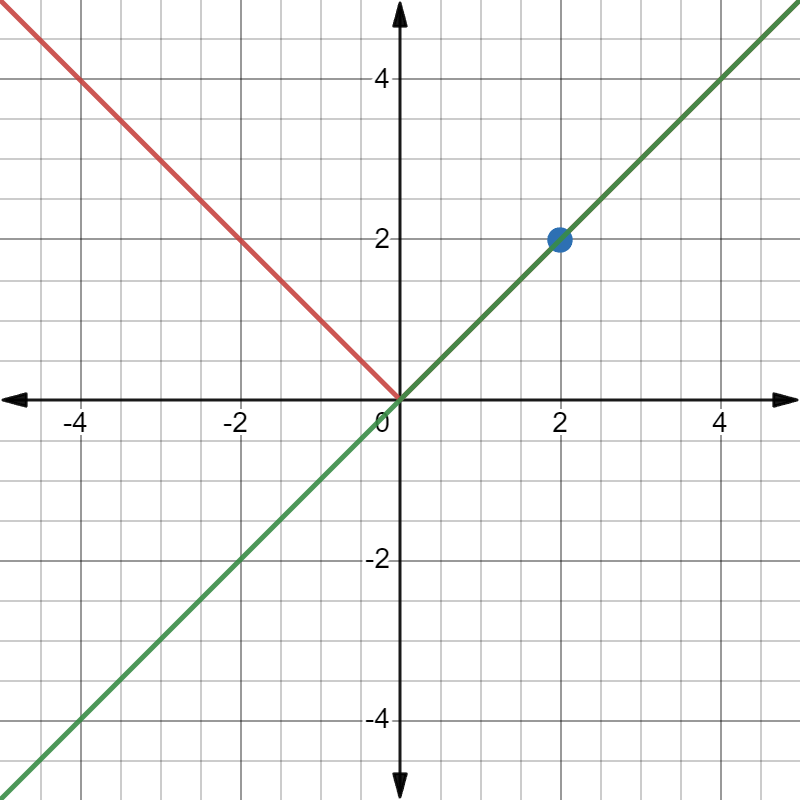From the right side, the slope of the secant line approaches 1. (In fact, it stays at 1 the entire time.)
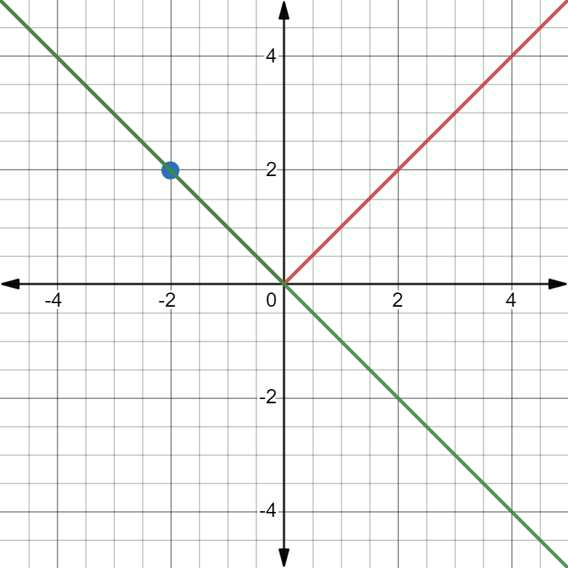And from the left side, the slope of the secant line approaches -1.
Is the function \(f(x) = |x|\) differentiable at \(x = 0\)? What happens to the slope of the secant line as the second point approaches \(x = 0\) from both the left and right?
Change in \(x\) (“run”) =
Slope of secant line =
Because the slope approaches a different value from the left than from the right, the function does not have a slope at \(x = 0\), making it not differentiable at that point. In fact, you can draw an infinite number of “tangent” lines that just barely touch the function at \(x = 0\). But a function can’t have infinitely many slopes at a point, so its slope is undefined at \(x = 0\).
The third and final thing that can cause a function to not be differentiable is if it is not continuous at that point. I will go into more detail in the next section!
Derivatives: Continuity and Differentiability
We’ve explored what affects differentiability and when derivatives won’t exist. Now let’s explore how continuity affects differentiability.
Let’s say a function is undefined at a certain \(x\)-value. That means that it is discontinuous at that point. That also means there is no way to find its derivative at that point. (It doesn’t make sense for a function to have a slope where it’s undefined!) So in this case, the function is discontinuous and also not differentiable.
But just because a function is discontinuous at a point doesn’t necessarily mean it’s undefined at that point. Let’s see what happens to a derivative if a function is discontinuous at a point yet still defined at that point.
Remember, there are three main ways a function can be discontinuous. (You can review them in the Intro to Continuity section.) The first is a point discontinuity - a hole in a function’s graph.
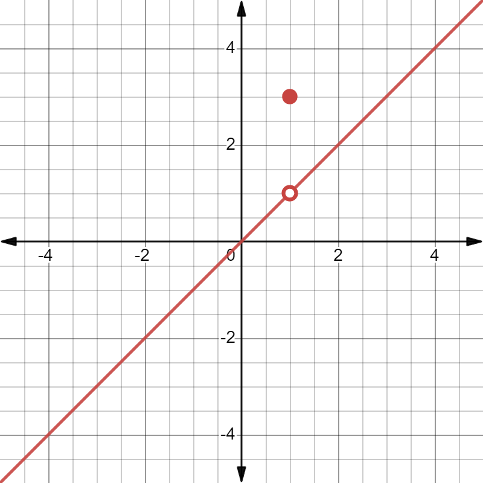This function has a point discontinuity at \(x = 1\).
Let’s try to find the derivative at \(x = 1\) by taking a second point and moving it closer and closer to the first point.
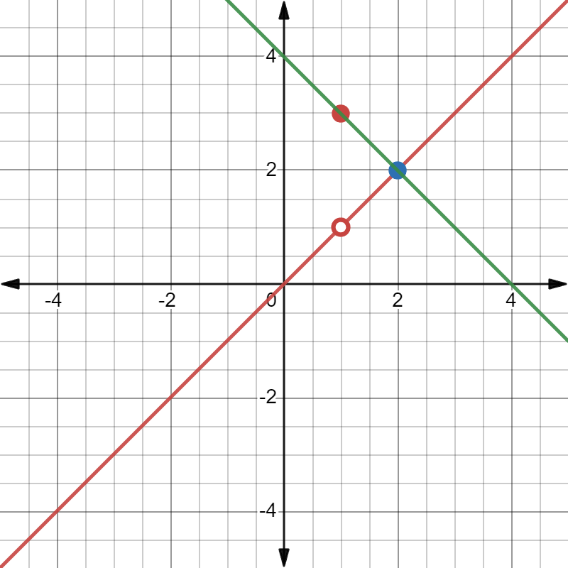With the second point coming from the right side, the slope of the secant line approaches negative infinity. Now let’s try from the left side...
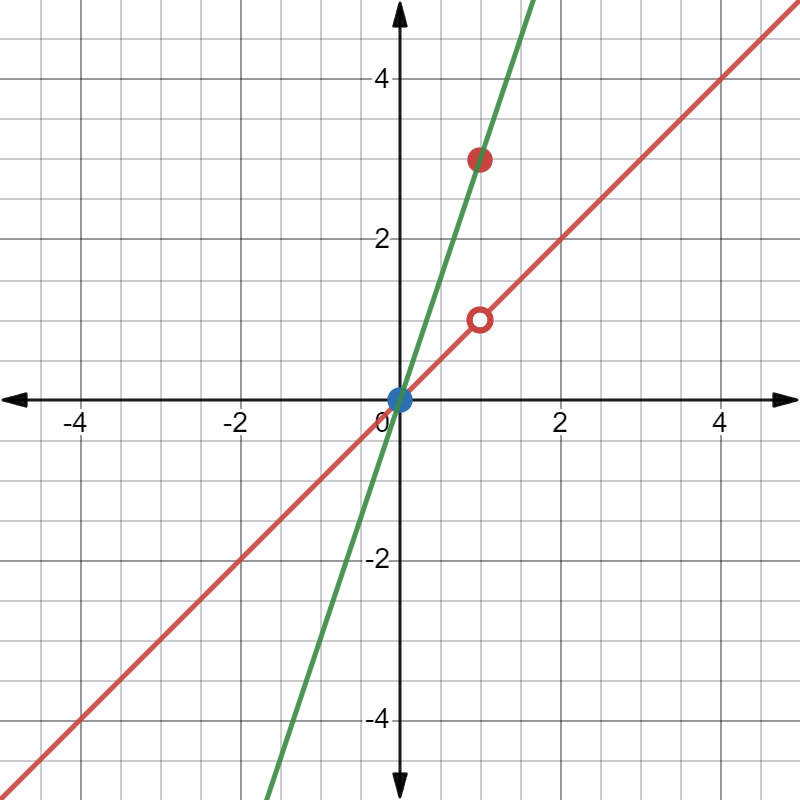Now the slope approaches positive infinity! Because we can’t find a finite slope at the point \(x = 1\), this function is not differentiable at \(x = 1\). So a point discontinuity makes a function not differentiable at that point.
What happens to the slope of the secant line as the second point approaches the first?
Change in \(x\) (“run”) =
Slope of secant line =
Now let’s see how a jump discontinuity affects differentiability.
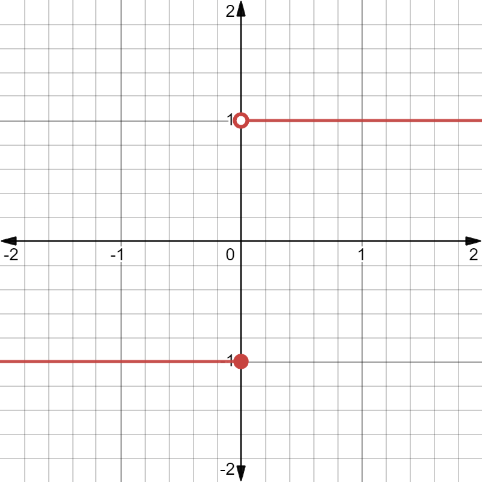This function has a jump discontinuity at \(x = 0\).
Let’s bring in our second point and try to find the slope at \(x = 0\).
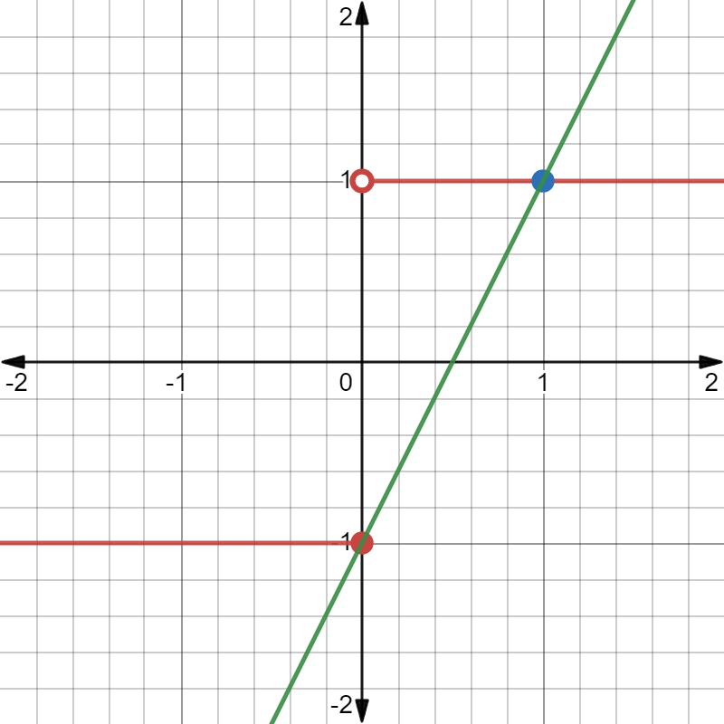From the right side, the slope of the secant line approaches positive infinity.
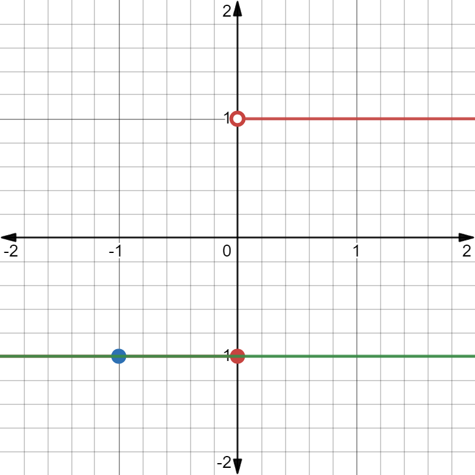From the left side, the slope of the secant line is 0.
Because we have two different limits for the slope (the secant line approaches a different slope from the left than from the right), the function does not have a derivative at \(x = 0\). This means that jump discontinuities also make a function not differentiable.
Change in \(x\) (“run”) =
Slope of secant line =
For our last example, let’s see what happens with a vertical asymptote.
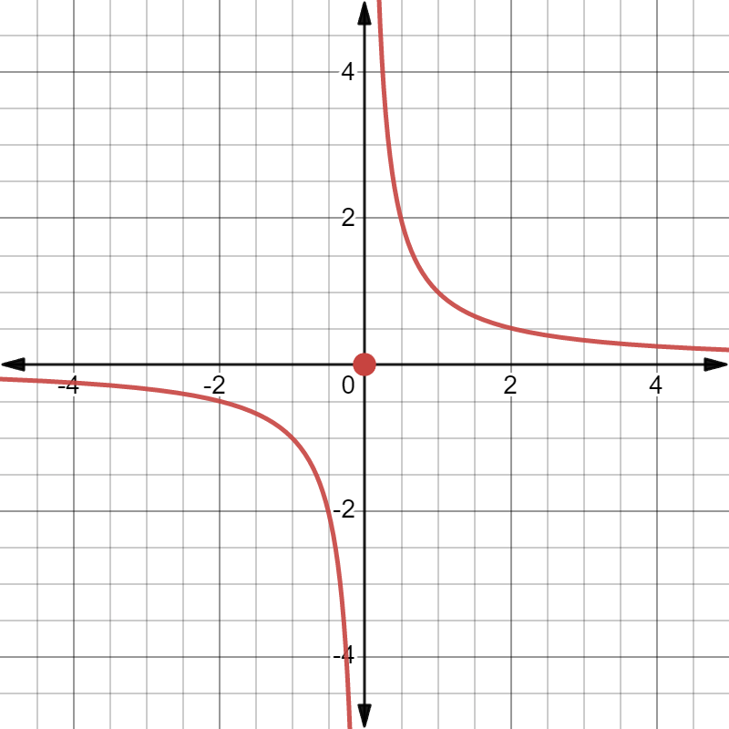This function has a vertical asymptote at \(x = 0\), but is still defined at \(x = 0\).
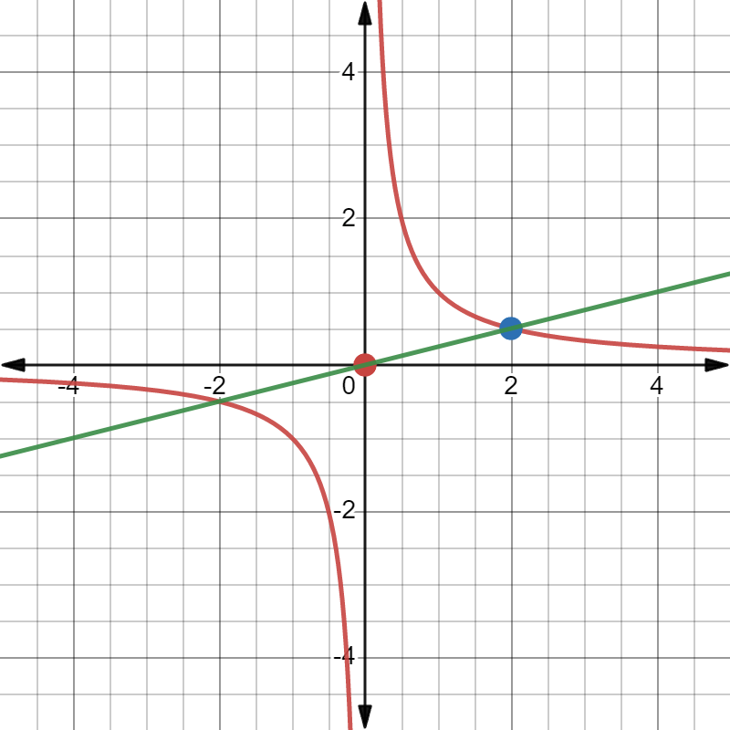From the right, the slope approaches positive infinity.
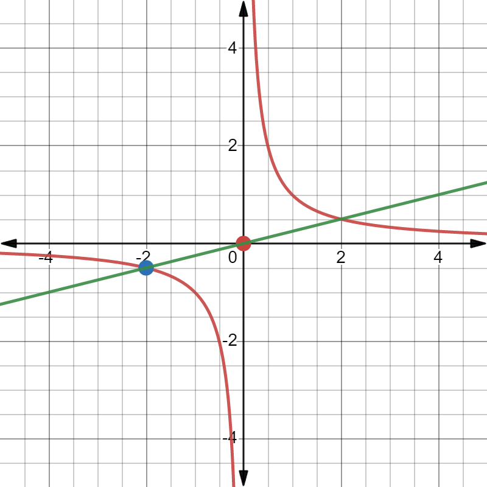And from the left, the slope also approaches positive infinity.
The slope does not approach any finite value, so the function is not differentiable at \(x = 0\). So a vertical asymptote also results in a loss of differentiability.
Change in \(x\) (“run”) =
Slope of secant line =
What we’ve seen is that all three types of discontinuity lead to the derivative not existing at the discontinuity. This means that if a function is not continuous at a point, it is also not differentiable. This also means that if a function is differentiable at a point, it must also be continuous at that point. In other words, differentiability implies continuity.
However, this does not mean that if a function is continuous, then it must be differentiable! We’ve seen an example in the previous section with the absolute value function \(f(x) = |x|\). That function is continuous everywhere but not differentiable at \(x = 0\).
So differentiability implies continuity, but continuity does not imply differentiability! In other words, a function must be continuous in order to have a chance at being differentiable, but not all continuous functions are differentiable.
Derivatives: Power Rule
Now that we know how to find derivatives using the limit definition, let’s try out a few more derivative examples. We’ve already figured out that the derivative of \(x^2\) is \(2x\). But what is the derivative of \(f(x) = x^3\)? Let’s try figuring it out.
The binomial theorem comes in handy for expanding \((x+h)^3\).
We find that the derivative of \(x^3\) is \(3x^2\). Let’s try finding the derivative of \(x^4\) now. Maybe some pattern will appear with these derivatives, who knows?
Here are the derivatives we’ve found so far:
| \(f(x)\) | \(f'(x)\) |
|---|---|
| \(x^2\) | \(2x\) |
| \(x^3\) | \(3x^2\) |
| \(x^4\) | \(4x^3\) |
Do you see a pattern? Each time we increase the exponent of \(f(x)\) by 1, both the coefficient and exponent of \(f'(x)\) increase by 1.
Can you think of a way to generalize the derivative of \(x^n\) for any \(n\)? In other words, can you write the derivative of \(x^n\) in terms of \(x\) and \(n\)? Give it a try!
With Lagrange’s notation:
With Leibniz’s notation:
This result is known as the power rule, and it is an extremely important tool we can use to find derivatives! This is the first derivative rule you’ve learned, and you will continue to learn more rules that make your life easier. (Imagine if you had to use the limit definition every time you wanted to find a derivative! That would surely be annoying.)
The power rule works for any real number exponent, including fractions and irrational numbers. Here are some examples:
The last example should make intuitive sense. \(f(x) = x\) is simply a line that always has a slope of 1, so it makes sense that its derivative is 1.
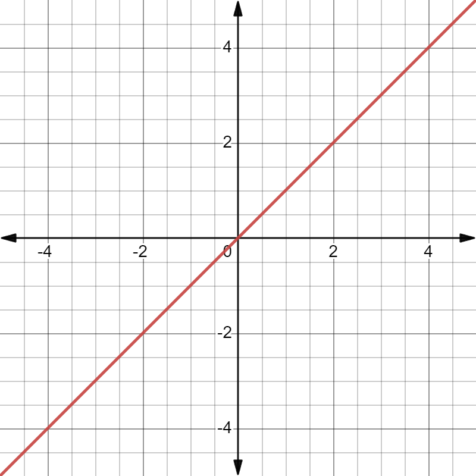The graph of \(f(x) = x\) always has a slope of 1, so its derivative is 1.
Here is a proof of the power rule for positive integer values of \(n\).
In this proof, we will be using the binomial theorem, which looks like this:
The notation \(n \choose k\) is pronounced “n choose k”, and it tells you how many unique ways there are to choose \(k\) objects out of a group of \(n\) objects. The formula for this is:
\(n!\) is pronounced “n factorial”, and equals the product of all positive integers less than or equal to \(n\): \(n! = n(n-1)(n-2) \cdots (2)(1)\).
Importantly, if both \(n\) and \(k\) are positive integers and \(k\) is less than or equal to \(n\), \(n \choose k\) will equal a positive integer. If \(k = 1\), \(n \choose k\) equals:
Now we’re ready to start our proof. We start by using the limit definition of the derivative.
Here, we can use the binomial theorem to expand \((x+h)^n\).
Here, we can factor out an \(h\) from the numerator:
We know that \(n \choose 1\) is always \(n\), so we can simplify.
Now we can use direct substituion to find this limit.
We know that if \(k\) is a positive integer and is less than \(n\), than \(n \choose k\) will also be a positive integer. In other words, the values of \(n \choose 2\), \(n \choose 3\), ... up to \(n \choose {n-1}\) will all be positive integers. This means that we can get rid of all the terms with a 0 in it since they will evaluate to 0 without any problems.
Derivatives: Other Basic Rules
The power rule is cool, but it’s not the only rule we need if we want to differentiate polynomials like \(2x^2 + 7x + 4\). Here are some more basic derivative rules that will come in handy.
First of all, the derivative of any constant is 0. That’s because if you have a function that always gives a constant value, it isn’t changing at all, meaning that the rate of change, or derivative, has to always be 0.
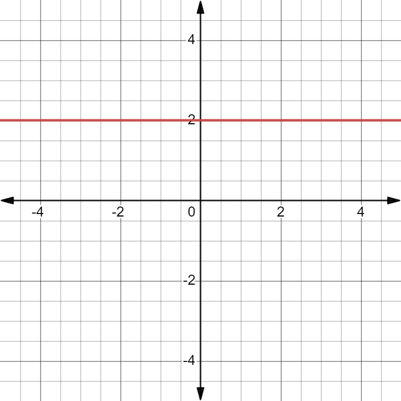This is the graph of \(f(x) = 2\). 2 is a constant, so the derivative of \(f(x)\) is 0. You can tell because the graph has a slope of 0 everywhere (it’s a horizontal line).
This next rule deals with constant multiples of functions. It says that if you multiply a function by a constant \(k\), then the derivative of that function is also multiplied by \(k\).
For example, the derivative of \(2x^2\) is 2 times the derivative of \(x^2\). This makes sense because if you imagine taking the graph of \(x^2\) and doubling every \(y\)-value to get the graph of \(2x^2\), you would expect the slope at every point to also double.
Multiplying each point’s \(y\)-value by 2 doubles the slope at each point.
The constant \(k\) can also be -1. This means that for example, the derivative of \(-x^3\) is -1 times the derivative of \(x^3\).
This also means that the derivative of \(kx\) where \(k\) is a constant is \(k \cdot \dv{}{x}(x)\), or simply \(k\). For example, the derivative of \(5x\) is 5, and the derivative of \(\pi x\) is \(\pi\). After all, the slope of a function \(f(x) = kx\) is always \(k\) no matter what.
Finally, we have the sum and difference rules, which tell us how to find derivatives of multiple functions or terms being added or subtracted together:
For example, the derivative of \(2x^2 + 3x\) is the derivative of \(2x^2\) plus the derivative of \(3x\). We can then use the power rule and the multiplication by a constant rule to find those derivatives.
Derivatives: Differentiating \(\sin(x)\) and \(\cos(x)\)
We will continue our journey of finding the derivatives of common functions. Now we’re going to try finding the derivatives of two trigonometric functions, \(\sin(x)\) and \(\cos(x)\). We can’t use any of our previous rules here, so we’re going to have to start from scratch.
This is the graph of \(\sin(x)\), where \(x\) is in radians. Try to estimate the slope of the function at some points!
Let’s estimate the slope of this function at some points. At \(x = 0\), it seems that the slope of \(\sin(x)\) is about 1. When the sine function reaches its maximum at \(x = \frac{\pi}{2}\), the slope is 0. At \(x = \pi\), the slope is down to about -1. And at \(x = \frac{3\pi}{2}\), the slope goes back to 0 as the sine function reaches its minimum.
This is the graph of \(\sin(x)\) with some tangent lines showing the slope of the function at certain points.
See what happens to the tangent line to \(\sin(x)\) as you change \(x\):
\(x =\)
\(\dv{x}\sin(x) \approx\) (Slope of tangent line)
| \(x\) | \(\dv{}{x}\sin(x)\) |
|---|---|
| \(-\pi\) | -1 |
| \(-\frac{\pi}{2}\) | 0 |
| 0 | 1 |
| \(\frac{\pi}{2}\) | 0 |
| \(\pi\) | -1 |
| \(\frac{3\pi}{2}\) | 0 |
This table shows the derivative of \(\sin(x)\) at some points.
Does this table seem familiar to you? Let’s graph the slopes we’ve found so far:
Now this shape should look familiar. What is the derivative of \(\sin(x)\)? Try figuring it out yourself!
The derivative of \(\sin(x)\) is \(\cos(x)\)! It’s very interesting how these two trig functions are actually closely related in this way. (This is actually one reason radians are so important in math - this is only true when \(x\) is in radians!)
Now let’s try to find the derivative of \(\cos(x)\). Let’s draw some tangent lines again and make a table:
See what happens to the tangent line to \(\cos(x)\) as you change \(x\):
\(x =\)
\(\dv{x}\cos(x) \approx\) (Slope of tangent line)
| \(x\) | \(\dv{}{x}\cos(x)\) |
|---|---|
| \(-\pi\) | 0 |
| \(-\frac{\pi}{2}\) | 1 |
| 0 | 0 |
| \(\frac{\pi}{2}\) | -1 |
| \(\pi\) | 0 |
| \(\frac{3\pi}{2}\) | 1 |
Let’s graph the slopes once again:
It’s your turn to find the derivative of \(\cos(x)\). What does this function look like to you?
The derivative of \(\cos(x)\) is \(-\sin(x)\). Notice the negative symbol in front of \(\sin(x)\): \(\sin(x)\) and \(\cos(x)\) are not derivatives of each other!
Use this button to view a formal proof of these derivatives:
We will start with the limit definition of the derivative as usual. Then, we will use the trig identity \(\sin(a+b) = \sin(a)\cos(b) + \cos(a)\sin(b)\) and some limit properties to manipulate the expression into something we can evaluate.
As \(h\) approaches 0, \(\sin(x)\) and \(\cos(x)\) are unaffected, so we can take them out of the limits.
We know that \(\displaystyle\lim_{h\to 0}\frac{\sin(h)}{h} = 1\) and \(\displaystyle\lim_{h\to 0}\frac{1-\cos(h)}{h} = 0\), so we can substitute those values for the limits.
The derivative of \(\cos(x)\) can be proved in a similar way, except this time we’re using the trig identity \(\cos(a+b) = \cos(a)\cos(b) - \sin(a)\sin(b)\).
Derivatives: Differentiating \(e^x\) and \(\ln(x)\)
In a previous math class, you might have heard of the mysterious number \(e\), an irrational number with an infinitely long decimal expansion, \(2.718281828459045...\)
But what exactly is this number \(e\) and why is it so important? You may have seen it being used in the continuously compounded interest formula, \(A = Pe^{rt}\). But \(e\) is much more useful than just compound interest. In fact, so many things related to exponential functions relate to \(e\), specifically the function \(e^x\).
One way to calculate \(e\) is with a limit:
Here’s a slider to show that this limit does indeed approach \(e\):
\(n =\)
\((1 + \frac{1}{n})^n \approx\)
\(e \approx 2.718282\)
This definition is interesting, but how could this number defined in such a strange way possibly be so useful? The answer lies in differential calculus!
This is the graph of \(e^x\). We’re going to do the same thing we did with \(\sin(x)\) and \(\cos(x)\) in order to find its derivative. Try to find the slope at a few points, like \(x = -1\), \(x = 0\), and \(x = 1\).
Explore what happens to the tangent line to \(e^x\) as you change \(x\):
\(x =\)
\(\dv{x}e^x \approx\) (Slope of tangent line)
| \(x\) | \(\dv{}{x}(e^x)\) |
|---|---|
| -2 | 0.135 |
| -1 | 0.368 |
| 0 | 1 |
| 1 | 2.718 |
| 2 | 7.389 |
Let’s graph the slopes now...
Wait, doesn’t that look very familiar? Try to figure out what the derivative of \(e^x\) is!
The derivative of \(e^x\) is... well, itself! This is fascinating and is one of the most important facts in calculus. This is one of the reasons why the constant \(e\) is so important in mathematics! It is the only base that when raised to the \(x\)th power creates a function that is its own derivative. In other words, \(e^x\) is the only function of the form \(a^x\) that is its own derivative. For example, the derivative of \(2^x\) is not \(2^x\), because 2 is not equal to \(e\).
Exponential functions are important in mathematics, but the function \(e^x\) is so important that it is sometimes referred to as simply “the exponential function” (or the “natural exponential function” to distinguish it from other exponential functions).
You may also remember the natural logarithm \(\ln(x)\) from a previous math class. It’s simply a logarithm with a base of \(e\) (i.e. \(\ln(x) = \log_e(x)\)). This is also really important in calculus, and we’ll see why.
Let’s try differentiating the inverse of \(e^x\): the natural logarithm \(\ln(x)\). Here’s what its graph looks like:
Let’s find the slopes of some tangent lines:
Explore what happens to the tangent line to \(\ln(x)\) as you change \(x\):
\(x =\)
\(\dv{x}\ln(x) \approx\) (Slope of tangent line)
| \(x\) | \(\dv{}{x}\ln(x)\) |
|---|---|
| 0.5 | 2 |
| 1 | 1 |
| 2 | 0.5 |
| 3 | 0.333 |
And let’s graph the slope.
The derivative of \(\ln(x)\) is \(\frac{1}{x}\). It is the only logarithmic function in the form \(\log_b(x)\) with such a simple derivative of \(\frac{1}{x}\). (\(\ln(x)\) can be rewritten as \(\log_e(x)\).) This derivative should make sense because the rate of change of \(\ln(x)\) decreases as \(x\) increases. In other words, as \(x\) gets bigger, \(\ln(x)\) increases more and more slowly, which explains the derivative \(\frac{1}{x}\).
Use this button to view a formal proof of these derivatives:
Before we start, let’s define what the number \(e\) is first. One of the most common definitions (and the one you probably learned first) is this:
Something we can do with limits like this is define a new variable and rewrite the limit in terms of that new variable. This is known as a change of variable.
We’re going to try a change of variable here. Let’s define a new variable \(a\) that is equal to \(\frac{1}{n}\). Because \(a = \frac{1}{n}\), we can conclude that \(n = \frac{1}{a}\). This means we can rewrite the limit as:
The problem is that we are still evaluating the limit as \(n\) approaches infinity. Can we change our limit so that \(a\) approaches some value instead of \(n\)?
The answer is yes. Remember that \(a = \frac{1}{n}\), so as \(n\) approaches infinity, \(a\) approaches 0 from the right. This means we can write our limit as:
Now that the entire limit is in terms of \(a\), because the specific letter we use for the variable doesn’t matter, we can change the \(a\)’s to \(n\)’s and the limit will stay the same. (We are no longer using the substitution \(a = \frac{1}{n}\); we are just replacing the variable \(a\) with the variable \(n\).)
It turns out that the limit as \(n\) approaches 0 from the left side is also \(e\), so we can define \(e\) as the limit as \(n\) approaches 0 from either side.
We’ve just found a different way to write the limit for \(e\)! We’re going to use this definition of \(e\) in our derivative proofs. If you’re not convinced that this limit is equivalent to the one we started with, these tables show that the limits are equivalent:
| \(n\) | \((1+\frac{1}{n})^n\) | Decimal |
|---|---|---|
| 1 | \((1+1)^1\) | 2 |
| 2 | \((1+0.5)^2\) | 2.25 |
| 5 | \((1+0.2)^5\) | 2.48832 |
| 10 | \((1+0.1)^{10}\) | 2.593742 |
| 100 | \((1+0.01)^{100}\) | 2.704814 |
| 1,000 | \((1+0.001)^\text{1,000}\) | 2.716924 |
| \(n \to \infty\) | \(\displaystyle\lim_{n \to \infty}(1+1/n)^{n}\) | \(e \approx 2.718282\) |
| \(n\) | \((1+n)^{1/n}\) | Decimal |
|---|---|---|
| 1 | \((1+1)^1\) | 2 |
| 0.5 | \((1+0.5)^2\) | 2.25 |
| 0.2 | \((1+0.2)^5\) | 2.48832 |
| 0.1 | \((1+0.1)^{10}\) | 2.593742 |
| 0.01 | \((1+0.01)^{100}\) | 2.704814 |
| 0.001 | \((1+0.001)^\text{1,000}\) | 2.716924 |
| \(n \to 0\) | \(\displaystyle\lim_{n \to 0}(1+n)^{1/n}\) | \(e \approx 2.718282\) |
The limit of \((1+n)^{1/n}\) as \(n\) approaches 0 from the left side is also \(e\).
Now we’re ready to jump into the proof of the derivative of \(e^x\). Like every other derivative proof, we will start with the limit definition of a derivative. We will then do some algebraic manipulation.
\(e^x\) does not change as \(h\) approaches 0, so we can take it out of the limit.
Let’s now focus on finding the limit \(\displaystyle\lim_{h\to 0}\frac{e^h-1}{h}\). To find this limit, we will do a change of variable.
We will define \(n\) as \(e^h-1\) so that the numerator of our limit becomes simply \(n\). If \(n = e^h-1\), we can find that \(e^h = 1 + n\) and \(h = \ln(1+n)\). As \(h\) approaches 0, \(n\) approaches \(e^0 - 1 = 0\), so we will write our expression as the limit as \(n\) approaches 0.
Previously, we figured out that the limit \(\displaystyle\lim_{n\to 0}(1+n)^{1/n}\) is equal to \(e\). (We can move the limit inside the natural logarithm because \(\ln(x)\) is continuous at \(x = e\) and \(\frac{1}{x}\) is continuous at \(x = 1\).)
Using this substitution, we can simplify our expression further.
What happens to \(\frac{e^h-1}{h}\) as \(h\) approaches 0 from either side? Find out with these sliders!
\(h =\)
\(\frac{e^h-1}{h} \approx\)
\(h =\)
\(\frac{e^h-1}{h} \approx\)
Finally, we can substitute the value of this limit to arrive at the derivative of \(e^x\).
Now let’s find the derivative of \(\ln(x)\). Again, we will start with the limit definition of the derivative and a few algebraic manipulations.
It’s time for a change of variable! We will define \(n = \frac{h}{x}\), meaning that \(h = nx\). As \(h\) approaches 0, \(n\) approaches \(\frac{0}{x} = 0\). Using this change of variable, we can finish the proof.
Derivatives: Product Rule and Quotient Rule
These next two rules are used for differentiating a product or quotient of two functions. They are known as the product rule and quotient rule respectively. (Remember, \(\class{green}{f'(x)}\) means the derivative of \(\class{red}{f(x)}\) and \(\class{purple}{g'(x)}\) means the derivative of \(\class{blue}{g(x)}\).)
Let’s start by using the limit definition of a derivative to write out what the derivative of the product of two functions looks like.
Some of that looks very similar to the derivative of \(f(x)\), which is \(\displaystyle\lim_{h \to 0}\frac{f(x+h)-f(x)}{h}\). What if we can manipulate our expression to get this to appear?
It doesn’t seem like there’s much we can do here, but there’s a trick we can use: we can rewrite the numerator in a way that doesn’t change its value.
\(\class{red}{- f(x)g(x+h) + f(x)g(x+h)}\) is equal to zero, so we can add that in the numerator without changing its value.
Now we can finish the proof! Our goal is to get \(\displaystyle\lim_{h \to 0}\frac{f(x+h)-f(x)}{h}\) and \(\displaystyle\lim_{h \to 0}\frac{g(x+h)-g(x)}{h}\) to appear so we can replace them with simply \(f'(x)\) and \(g'(x)\). We can do that with some factoring and limit properties.
We know that \(\displaystyle\lim_{h \to 0}g(x+h) = g(x)\) because \(g(x)\) is continuous (since it is differentiable).
Here’s an example: find the derivative of \(h(x) = x^2\sin(x)\). First, realize that \(h(x)\) is actually just two functions being multiplied together, \(x^2\) and \(\sin(x)\). Let’s call these functions \(\class{red}{f(x) = x^2}\) and \(\class{blue}{g(x) = \sin(x)}\). Then, break \(h(x)\) down into these two functions: \(h(x) = \class{red}{f(x)}\class{blue}{g(x)}\). Finally, use the product rule:
The next section will give an example of the quotient rule being used to find the derivative of \(\tan(x)\)!
Derivatives: Other Trig Functions
The quotient rule gives us the ability to find the derivatives of the other four trig functions: \(\tan(x)\), \(\cot(x)\), \(\csc(x)\), and \(\sec(x)\)! All four of these functions can be rewritten as quotients involving \(\sin(x)\) and \(\cos(x)\):
As a reminder, here is the quotient rule:
Let’s use it to find the derivative of \(\tan(x)\), which can be rewritten as \(\frac{\sin(x)}{\cos(x)}\):
The same procedure can be used to find the derivatives of \(\cot(x)\), \(\csc(x)\), and \(\sec(x)\). The results are summarized in the table below:
| \(f(x)\) | \(f'(x)\) | \(f'(x)\) Simplified |
|---|---|---|
| \(\tan(x) = \frac{\sin(x)}{\cos(x)}\) | \(\frac{1}{\cos^2(x)}\) | \(\sec^2(x)\) |
| \(\cot(x) = \frac{\cos(x)}{\sin(x)}\) | \(-\frac{1}{\sin^2(x)}\) | \(-\csc^2(x)\) |
| \(\csc(x) = \frac{1}{\sin(x)}\) | \(-\frac{\cos(x)}{\sin^2(x)}\) | \(\small{-\cot(x)\csc(x)}\) |
| \(\sec(x) = \frac{1}{\cos(x)}\) | \(\frac{\sin(x)}{\cos^2(x)}\) | \(\small{\tan(x)\sec(x)}\) |
Unit 2 Summary
- A secant line is a line that crosses through two points on a function. It describes the function’s average rate of change between those two points.
- A tangent line is a line that just touches a function at a single point. It describes the function’s instantaneous rate of change at that point.
-
A derivative describes how fast a function is changing at any given \(x\)-value. Specifically, it describes the function’s slope (AKA instantaneous rate of change) at any point. A function’s derivative at a point is the slope of the tangent line that touches that point.
- Example: the function \(f(x) = x^2\) has a derivative of \(f'(x) = 2x\). This means that at any \(x\)-value, \(f(x)\) is changing at a rate of 2 times that \(x\)-value. For example, at \(x = 2\), \(f(x)\) has a slope (instantaneous rate of change) of \(2 \cdot 2 = 4\).
- The derivative of a function \(f(x)\) is denoted by \(f'(x)\) or \(\dv{}{x}f(x)\). The derivative of a variable \(y\) with respect to \(x\) is denoted by \(\dv{y}{x}\). These notations can be used with other variables, not just \(x\) or \(y\).
- The slope of a secant line that goes through two points can be calculated with this expression. \(x\) is the \(x\)-coordinate of the first point on the function, and \(h\) is the second point’s \(x\)-coordinate minus the first point’s \(x\)-coordinate.
-
\[ \frac{f(x+h)-f(x)}{h} \]
- The slope of a secant line can also be calculuated with this expression, where \(c\) is the \(x\)-coordinate of the second point on the function.
-
\[ \frac{f(x)-f(c)}{x-c} \]
- The derivative, or slope of a tangent line, can be calculated by either of these limits:
-
\[ \lim_{x \to 0}{\frac{f(x+h)-f(x)}{h}} \] \[ \lim_{x \to c}{\frac{f(x)-f(c)}{x-c}} \]
-
A function is differentiable at a point if it has a derivative (instantaneous rate of change) at that point.
- If a function is differentiable at a point, then it is definitely continuous at that point, but if a function is continuous at a point, then it may or may not be differentiable.
- If a function is discontinuous at a point, it is also not differentiable at that point.
- The power rule states that the derivative of a function \(f(x) = x^n\) (where \(n\) is any real number) is \(f'(x) = nx^{n-1}\).
- Other basic derivative rules: (\(k\) can be any constant)
-
\[ \dv{}{x}(k) = 0 \] \[ \dv{}{x}[k \cdot f(x)] = k \cdot \dv{}{x}f(x) \] \[ \dv{}{x}[-f(x)] = -\dv{}{x}f(x) \] \[ \dv{}{x}[f(x) + g(x)] = \dv{}{x}f(x) + \dv{}{x}g(x) \] \[ \dv{}{x}[f(x) - g(x)] = \dv{}{x}f(x) - \dv{}{x}g(x) \]
- Common derivatives:
-
\[ \dv{}{x}\sin(x) = \cos(x) \] \[ \dv{}{x}\cos(x) = -\sin(x) \] \[ \dv{}{x}e^x = e^x \] \[ \dv{}{x}\ln(x) = \frac{1}{x} \]
- Product and quotient rules:
-
\[ \dv{}{x}[f(x) \cdot g(x)] = f'(x)g(x) + f(x)g'(x) \] \[ \dv{}{x}\left[\frac{f(x)}{g(x)}\right] = \frac{f'(x)g(x) - f(x)g'(x)}{[g(x)]^2} \]
- Derivatives of other trig functions:
-
\[ \dv{}{x}\tan(x) = \frac{1}{\cos^2(x)} = \sec^2(x) \] \[ \dv{}{x}\cot(x) = -\frac{1}{\sin^2(x)} = -\csc^2(x) \] \[ \dv{}{x}\csc(x) = -\frac{\cos(x)}{\sin^2(x)} = -\cot(x)\csc(x) \] \[ \dv{}{x}\sec(x) = \frac{\sin(x)}{\cos^2(x)} = \tan(x)\sec(x) \]
Unit 3: Advanced Differentiation
Unit Information
Khan Academy Link: Differentiation: composite, implicit, and inverse functions
All topics covered in Khan Academy:
Green underlined topics are topics at least partially covered on my website and red topics are topics not yet covered on my website. Note that even green topics might not be covered in full detail on my page.
- The chain rule: introduction
- The chain rule: further practice
- Implicit differentiation
- Differentiating inverse functions
- Differentiating inverse trigonometric functions
- Selecting procedures for calculating derivatives: strategy
- Selecting procedures for calculating derivatives: multiple rules
- Calculating higher-order derivatives
- Further practice connecting derivatives and limits
Derivatives: Chain Rule
Now it’s time to learn some advanced techniques that can help you differentiate more complicated functions. Here’s a function we don’t know how to differentiate yet: \(\sin^2(x)\)
The trick to finding the derivative of this function is actually to break it down into two functions! We need to notice that \(\sin^2(x) = [\sin(x)]^2\) can be expressed as a composition of two other functions. (As a refresher, function composition is when you have two functions nested inside each other, like \(f(g(x))\).)
In this case, if we define \(\class{red}{f(x) = x^2}\) and \(\class{blue}{g(x) = \sin(x)}\), then \(\class{red}{f(}\class{blue}{g(x)}\class{red}{)} = \class{red}{[}\class{blue}{\sin(x)}\class{red}{]^2}\). Let’s call this function \(h(x)\), so \(h(x) = [\sin(x)]^2\).
Now we’re going to do something a bit strange. Instead of finding the derivative of \(h(x)\) with respect to \(x\), we’re going to find the derivative of \(h(x)\) with respect to \(\sin(x)\). In other words, we will find how much \(h(x)\) changes as \(\sin(x)\) changes by a tiny amount.
We know that the derivative of \(x^2\) with respect to \(x\) is \(2x\). But what is the derivative of \([\sin(x)]^2\) with respect to \(\sin(x)\)? To solve this, let’s define a variable \(y\) that is equal to \(\sin(x)\). Then this is the same as asking what the derivative of \(y^2\) is with respect to \(y\), which is simply \(2y\). Writing that in terms of \(x\), we find that the derivative of \([\sin(x)]^2\) with respect to \(\sin(x)\) is \(2 \sin(x)\).
(When I write something like \(\displaystyle\dv{[\sin^2(x)]}{[\sin(x)]}\), I mean the derivative of \(\sin^2(x)\) with respect to \(\sin(x)\).)
What does this even mean? This means that if \(\sin(x)\) changes by a tiny amount \(h\), \([\sin(x)]^2\) will change by about \(2\sin(x)\cdot h\).
If we change \(x\) by some tiny amount \(\Delta x\), \(\sin(x)\) will change by some amount (I’m calling that amount \(h\)). When that happens, \(\sin^2(x)\) will also change by some amount (in this case, approximately \(2\sin(x)h\)). The ratio in change in \(\sin^2(x)\) to change in \(\sin(x)\) is about \(\frac{2\sin(x)h}{h} = 2\sin(x)\). This is because the derivative of \(\sin^2(x)\) with respect to \(\sin(x)\) is \(2\sin(x)\).
We haven’t arrived at the derivative of \(h(x)\) yet though, because \(2 \sin(x)\) is the derivative of \(h(x)\) with respect to \(\sin(x)\), not \(x\). To arrive at our final derivative, we need to multiply \(2 \sin(x)\) by the derivative of \(\sin(x)\) with respect to \(x\), which is simply \(\cos(x)\). That means that the derivative of \(h(x) = \sin^2(x)\) with respect to \(x\) is \(h'(x) = 2\sin(x)\cos(x)\).
This is an application of the chain rule, which can be written like this in Leibniz’s notation:
What does this mean? It means that to find the derivative of \(y\) with respect to \(x\), you find the derivative of \(y\) with respect to some other expression \(u\), then multiply it by the derivative of that expression \(u\) with respect to \(x\).
\(x\), \(y\), and \(u\) can be any variables you want. In this case, \(u\) doesn’t even have to be a variable: it can be an expression like \(\sin(x)\)!
In simpler terms, \(\dv{y}{u}\) tells us how much \(y\) changes when we change \(u\) by a tiny amount. \(\dv{u}{x}\) tells us how much \(u\) changes when we change \(x\) by a tiny amount. The chain rule tells us that \(\dv{y}{x}\), the amount that \(y\) changes when \(x\) changes by a tiny amount, is the product of these two amounts (\(\dv{y}{u}\) and \(\dv{u}{x}\)).
In our previous example, when we found the derivative of \(\sin^2(x)\) with respect to \(x\), here’s what we did:
We first found the derivative of \(\class{red}{\sin^2(x)}\) with respect to \(\class{green}{\sin(x)}\) (which is \(2\sin(x)\)), then we multiplied that by the derivative of \(\class{green}{\sin(x)}\) with respect to \(\class{blue}{x}\) (which is \(\cos(x)\)). We multiplied those two derivatives together to find that the derivative of \(\class{red}{\sin^2(x)}\) with respect to \(\class{blue}{x}\) is \(2\sin(x)\cos(x)\).
Let’s rewrite the chain rule in Lagrange’s notation. First, we’ll start with the chain rule written in Leibniz’s notation, then replace \(y\) with \(f(g(x))\) and \(u\) with \(g(x)\). We’ll also let \(h(x) = f(g(x))\).
Now we can directly convert this into Lagrange’s notation to get:
(Remember, \(h(x) = f(g(x))\).)
This version of the chain rule is more straightforward to use. Simply decompose your function \(h(x)\) into \(f(g(x))\), find the derivatives of the two functions \(f'(x)\) and \(g'(x)\), then substitute into the chain rule formula \(f'(g(x)) \cdot g'(x)\).
In the next section, we’re going to use the chain rule to differentiate functions in the form \(a^x\), where \(a\) is any positive base! You can also use the button below to view a proof of the quotient rule using the chain rule.
Using the product rule and the chain rule, we can derive the quotient rule.
Derivatives: Differentiating \(a^x\) and \(\log_a(x)\)
Now that we’ve learned the chain rule, we’ve unlocked the ability to differentiate \(a^x\) for any positive base \(a\). Can you figure out how? Remember, we already know how to differentiate \(e^x\). Can you think of a way to use the chain rule to differentiate \(a^x\) for other bases of \(a\)?
The trick is to rewrite \(a^x\) in the form of \(e^\text{something}\). How do we do that? Try it yourself: as an example, try to rewrite \(2^x\) as \(e\) raised to the power of something.
The first step is to write the number 2 as \(e\) raised to something. \(e\) raised to what power equals 2? (Remember your exponent and logarithm properties!)
We can generalize this to any positive base \(a\):
Now we can finally use the chain rule! Notice that \(e^{x \ln(a)}\) can be rewritten as a composition of two functions. If we set \(f(x) = e^x\) and \(g(x) = x \ln(a)\), then \(f(g(x)) = e^{x \ln(a)}\).
Now all that’s left is to use the chain rule formula. First, let’s find the derivatives of \(f(x)\) and \(g(x)\). The derivative of \(f(x) = e^x\) is \(f'(x) = e^x\), and the derivative of \(g(x) = x \ln(a)\) is \(g'(x) = \ln(a)\), since for any specific value of \(a\), \(\ln(a)\) is a constant, and the derivative of any constant multiplied by \(x\) is simply that constant.
This means that the derivative of \(a^x\) is \(a^x \cdot \ln(a)\). For example, the derivative of \(2^x\) is \(2^x \cdot \ln(2)\), or about \(0.693 \cdot 2^x\).
Try experimenting with the value of \(a\). What happens to the derivative as you change \(a\)?
\(a =\)
\(\dv{}{x}a^x \approx\)
Now let’s move on to the derivative of \(\log_a(x)\), where \(a\) is a positive base not equal to 1. This one is a lot simpler: we just have to use the change-of-base formula \(\log_a(b) = \frac{\log_c(b)}{\log_c(a)}\), where \(c\) is any valid logarithm base.
Using the change-of-base formula, we can rewrite \(\log_a(x)\) as \(\frac{\ln(x)}{\ln(a)} = \frac{1}{\ln(a)}\cdot\ln(x)\). The derivative of this is the derivative of \(\ln(x)\) multiplied by \(\frac{1}{\ln(a)}\), since \(\frac{1}{\ln(a)}\) is a constant when we’re dealing with a specific value of \(a\). We know the derivative of \(\ln(x)\) is \(\frac{1}{x}\), so the derivative of \(\frac{1}{\ln(a)}\cdot\ln(x)\) is \(\frac{1}{\ln(a)} \cdot \frac{1}{x} = \frac{1}{x \ln(a)}\).
In conclusion, the derivative of \(\log_a(x)\) is \(\frac{1}{x \ln(a)}\). For example, the derivative of \(\log_{10}(x)\) is \(\frac{1}{x \ln(10)}\), or approximately \(\frac{1}{2.303x}\). You can experiment with the value of \(a\) here:
\(a =\)
\(\dv{}{x}\log_a{x} \approx\)
Derivatives: Differentiation Strategies
As a reminder, here is when you should use each of the derivative rules.
- Power rule: monomials (e.g. \(x^4\), \(3x^5\)) and polynomials (e.g. \(x^3 + 3x^2\)). The exponents can also be negative (e.g. \(x^{-3}\), \(3x^{-4} - 6x^{-6}\)).
-
Product rule: the product of two functions (when one function is being multiplied by another).
- Examples: \(\sin(x)\cos(x)\), \(e^x \cdot 2x^4\)
-
Quotient rule: the quotient of two functions (when one function is being divided by another).
- Examples: \(\displaystyle\frac{e^x}{2x^2}\), \(\displaystyle\frac{2}{\sin(x)}\)
-
Chain rule: composite functions (when one function is nested inside another; i.e. the output of one function is the input of another function).
- Examples: \(\ln(\sin(x))\), \(e^{\cos(x)}\), \(\displaystyle\frac{1}{x + 4}\)
- A common alternative notation for \(e^x\) is \(\exp(x)\). If it helps, you can write \(e^{\text{[something]}}\) as \(\exp(\text{[something]})\) to make it easier to spot composite functions. For example, \(e^{\cos(x)}\) can also be written as \(\exp(\cos(x))\), which looks more like a composite function.
- Fractions like \(\frac{1}{x+4}\) are also considered composite functions. If \(f(x) = \frac{1}{x}\) and \(g(x) = x+4\), then \(f(g(x)) = \frac{1}{x+4}\).
Here are some strategies to make differentiating complicated functions easier:
-
Expanding a product: Sometimes we can expand a product so that we can use the power rule instead of the product rule.
- Example: \(f(x) = (2x + 1)(x + 2)\) can be rewritten as \(f(x) = 2x^2 + 5x + 2\), which can then be differentiated using the power rule to get \(f'(x) = 4x + 5\). (It’s perfectly acceptable to use the product rule here, but using the power rule takes less work sometimes.)
-
Simplifying a quotient: The same simplification can be done with fractions.
- Example: \(f(x) = \frac{2x^5 - 6x^4}{2x^2}\) can be simplified down to \(f(x) = x^3 - 3x^2\) so that you don’t have to use the quotient rule. Now you can simply use the power rule on \(f(x)\) to arrive at \(f'(x) = 3x^2 - 6x\).
-
Factoring a quotient: Factoring can also help with simplifiying fractions.
- Example: \(f(x) = \frac{x^2 + 3x + 2}{x + 2}\) can be simplified down to \(f(x) = \frac{(x+2)(x+1)}{x + 2} = x + 1\). The derivative of this function is \(f'(x) = 1\). (However, you do have to keep in mind that \(f(x)\) and \(f'(x)\) are both undefined at \(x = -2\), since we would be dividing by zero in the original function.)
-
Simplifying fractions and radicals: For some functions involving fractions and radicals, you also don’t have to use the quotient rule.
- Example: You can rewrite \(f(x) = \frac{\sqrt{x}}{x^3}\) as \(f(x) = \frac{x^{1/2}}{x^3} = x^{-5/2}\), then use the power rule to find the derivative: \(f'(x) = -\frac{5}{2}x^{-7/2}\).
-
Rewriting quotients as products: if you dislike using or memorizing the quotient rule, you can always rewrite quotients as products.
- Example: \(f(x) = \frac{2x}{\sin(x)}\) can be rewritten as \(f(x) = 2x \cdot \frac{1}{\sin(x)} = 2x[\sin(x)]^{-1}\), which can then be differentiated with the product and chain rules. (Note: \([\sin(x)]^{-1} = \frac{1}{\sin(x)}\) is not to be confused with the inverse sine function \(\sin^{-1}(x) = \arcsin(x)\)).
Sometimes we will have to use multiple rules to differentiate a function. An example is \(h(x) = \cos(2x\ln(x))\). This function is both a composite function (it has a natural log inside the cosine function) and involves a product of two functions (\(2x\ln(x)\)), so we need to use both the product and chain rule here.
We can define \(f(x) = \cos(x)\) and \(g(x) = 2x\ln(x)\) so that \(h(x) = f(g(x)) = \cos(2x\ln(x))\). Then we could use the chain rule:
But we still need to find \(g'(x)\). To do that, we use the product rule:
Now we can finally put everything together.
Sometimes we will have a composite function involving three functions. An example of this that we’re going to differentiate is \(h(x) = \frac{1}{\cos(x^2)}\). In cases like these, we need to use the chain rule twice.
For the first application of the chain rule, we can set \(f(x)\) to the outermost function and \(g(x)\) to whatever’s inside that outermost function. So \(f(x) = \frac{1}{x} = x^{-1}\) and \(g(x) = \cos(x^2)\). Just to check, \(h(x) = f(g(x)) = \frac{1}{\cos(x^2)}\), which matches our original definition of \(h(x)\).
To find \(g'(x)\), we use the chain rule once again. The chain rule tells us that \(g'(x) = -\sin(x^2)\cdot 2x\) \(= -2x \sin(x^2)\).
Derivatives: Implicit Differentiation
So far we’ve learned how to differentiate many different types of functions and we’ve learned many different strategies to differentiate complex functions. So let’s try differentiating an equation for a circle. It shouldn’t be that hard, right?
How can we make sense of the derivative of the equation \(x^2 + y^2 = 1\)?
Wait! That isn’t even a function! How can we take the derivative of something that isn’t a function?
Well, circles can still have tangent lines, right? So we can use differentiation to find the slope of the line tangent to any point on this circle.
Even though \(x^2+y^2=1\) isn’t a function, we can still use differentiation to find the slope of the tangent line at certain points.
One way to differentiate this is to rewrite \(x^2+y^2=1\) as \(y = [\text{something}]\), then split it into two functions:
\[ x^2 + y^2 = 1\] \[ y^2 = -x^2 + 1\] \[ y = \pm\sqrt{-x^2 + 1}\] \[ \text{Function 1: } y = \sqrt{-x^2 + 1} \] \[ \text{Function 2: } y = -\sqrt{-x^2 + 1} \]
Then we could differentiate each of these functions using the chain rule. But doing all of this is a lot of work. There’s an easier way to do this, and it’s called implicit differentiation.
Before we dive into it, let’s first discuss where the name “implicit differentiation” comes from. A function is explicit when it is in the form \(y = [\text{something involving }x]\), like \(y = x^2\) or \(y = 3\cos(x)\). An explicit function explicitly tells you how to solve for \(y\) when you’re given a value for \(x\). However, when a function or relation is implicit, it’s not in the form \(y = [\text{something involving }x]\). Examples of implicit relations are \(x + y = 3\), \(\sin^2(x) + \cos(y) = 1.2\), and \(x^2 + y^2 = 1\). So our circle equation is an implicit relation.
Implicit differentation is when we differentiate an equation involving an implicit relation. The main idea behind implicit differentiation is to differentiate both sides of the equation with respect to \(x\). To differentiate \(x^2 + y^2 = 1\), we would start by taking the derivative of both sides:
Here we have an interesting situation. How do we differentiate \(y^2\) with respect to \(x\)? The derivative of \(y^2\) with respect to \(y\) is \(2y\), but we’re trying to differentiate with respect to \(x\).
In this situation, we can use the chain rule! The derivative of \(y^2\) with respect to \(x\) is equal to the derivative of \(y^2\) with respect to \(y\) multiplied by the derivative of \(y\) with respect to \(x\).
The derivative of \(y^2\) with respect to \(y\) is \(2y\), and the derivative of \(y\) with respect to \(x\) is what we’re trying to solve for in the first place! So we can write \(\dv{}{x}(y^2)\) as \(2y \cdot \dv{y}{x}\).
We’ve arrived at our derivative, but what does this mean? This means that the slope of the line tangent to any point \((x, y)\) on our circle is \(-\frac{x}{y}\). For example, the slope of the line tangent to \((0.6, 0.8)\) is \(-\frac{0.6}{0.8} = -\frac{3}{4}\).
The slope of the line tangent to \(\class{red}{(0.6, 0.8)}\) is \(-\frac{3}{4}\).
Derivatives: Inverse Trig
One of the most powerful things we can do with implicit differentiation is to find the derivatives of inverse functions. Let’s use it to find the derivatives of inverse trig functions.
We’re going to start with inverse sine (also known as arcsine). The trick to differentiating this is to turn an explicit equation into an implicit one.
(Note: \(\arcsin(x)\) is an alternative notation for \(\sin^{-1}(x)\). The \(\text{arc-}\) prefix represents the inverse of any trig function: \(\arccos(x) = \cos^{-1}(x)\) and \(\arctan(x) = \tan^{-1}(x)\).)
Now we can proceed with implicit differentiation by taking the derivative of both sides.
The second step is an application of the chain rule. Now let’s rewrite \(\frac{1}{\cos(y)}\) in terms of \(x\). We can do this using the Pythagorean trig identity.
Because we started with \(y = \arcsin(x)\), we know that \(\sin(y) = x\), so we can replace \(\sin^2(y)\) with \(x^2\).
We have two possibilities for what \(\cos(y)\) can equal. Let’s consider both of them for now. We know that our derivative \(\dv{y}{x}\) is equal to \(\frac{1}{\cos(y)}\), so let’s replace \(\cos(y)\) with its equivalent in terms of \(x\):
Well, a derivative can’t be both \(\frac{1}{\sqrt{1 - x^2}}\) and \(-\frac{1}{\sqrt{1 - x^2}}\) at the same time, so let’s check to see which one is correct.
The graph of \(\arcsin(x)\) is always increasing within its domain, so its derivative has to always be positive.
Our derivative has to always be positive. By the definition of the square root symbol, \(\sqrt{1 - x^2}\) cannot be negative. This means that \(\frac{1}{\sqrt{1 - x^2}}\) has to be positive for all values of \(x\) in its domain and \(-\frac{1}{\sqrt{1 - x^2}}\) always has to be negative. Because we are looking for a positive derivative, \(\frac{1}{\sqrt{1 - x^2}}\) is the correct derivative.
We can use the same process to find the derivative of inverse cosine.
Inverse cosine is always decreasing within its domain, so its derivative is always negative. This gives us our final result of:
Inverse tangent is a little different. We start as usual:
The way we simplify this is by using the trig identity \(\tan^2(y) + 1 = \sec^2(y)\), derived by taking \(\sin^2(y) + \cos^2(y) = 1\) and dividing both sides by \(\cos^2(y)\).
Therefore:
Let’s find the derivative of \(\arccot(x)\) now. The proof for this one looks very similar to how we found the derivative of \(\arctan(x)\).
We can divide both sides of the trig identity \(\sin^2(y) + \cos^2(y) = 1\) by \(\sin^2(y)\) to find that \(\csc^2(y) = 1 + \cot^2(y)\).
Now it’s time for the derivative of \(\arccsc(x)\).
We know that \(\csc^2(y) = 1 + \cot^2(y)\). Let’s solve for \(\cot(y)\) in terms of \(\csc(y)\) because we can replace \(\csc(y)\) with \(x\).
Now that we have an expression for \(\cot(y)\) in terms of \(x\), we can write our derivative purely in terms of \(x\).
The function \(\arccsc(x)\) is decreasing across its entire domain, so the derivative of \(\arccsc(x)\) always has to be negative. This means that the denominator \(\pm x\sqrt{x^2 - 1}\) always has to be positive. To ensure that, we must take the absolute value of \(x\).
The graph of \(\arccsc(x)\) is always decreasing, so its derivative is always negative.
The process for finding the derivative of \(\arcsec(x)\) is very similar.
Using the trig identity \(\sec^2(y) = 1 + \tan^2(y)\), we can solve for \(\tan(y)\) in terms of \(x\):
Now we can rewrite \(\dv{y}{x}\) in terms of just \(x\).
Because \(\arcsec(x)\) is increasing across its entire domain, its derivative has to always be positive, so we have to take the absolute value of \(x\) to ensure the derivative is positive.

The graph of \(\arcsec(x)\) is always increasing, so its derivative is always positive.
Summary of additional inverse trig derivatives:
Summary of this section:
Derivatives: Inverse Functions
The potential of implicit differentiation isn’t just limited to inverse trig functions: using it, we can find the derivative of the inverse of any function! Here’s how.
What it means for two functions \(f(x)\) and \(g(x)\) to be inverses is that \(f(g(x)) = g(f(x)) = x\). So let’s set \(g(f(x))\) equal to \(x\) and use implicit differentiation.
If \(f(x)\) and \(g(x)\) are inverses, then...
We’ve found a rule to differentiate a function if we know the derivative of its inverse! We can also use this formula to differentiate the inverse of a function we know.
Here’s an example: the inverse of \(e^x\) is \(\ln(x)\). Let’s say we forgot what the derivative of \(\ln(x)\) was. Luckily, we can still figure it out if we know the derivative of its inverse, \(e^x\)! Just use the formula with \(f(x) = \ln(x)\) and \(g(x) = e^x\):
Here’s a problem that our formula can help out with:
Problem: The function \(g(x)\) is the inverse of the function \(f(x) = x^3 + x\). The point \((2, 1)\) lies on the curve of \(g(x)\). What is the slope of the line tangent to \(g(x)\) at the point \((2, 1)\)?
We are trying to find the slope of the line tangent to \(g(x)\) at the point \((2, 1)\), which is \(g'(2)\). Your first instinct might be to find a formula for \(g(x)\), but we don’t actually need to do this. The power of our inverse derivative formula is that it allows us to come up with an expression for this derivative in terms of \(f'(x)\).
Because the point \((2, 1)\) is on the curve of \(g(x)\), we know that \(g(2) = 1\).
Now we can simply differentiate \(f(x)\), then evaluate the derivative at \(x = 1\) to get the value of \(g'(2)\)!
Derivatives: Second Derivatives and Higher-Order Derivatives
What happens if we find a function’s derivative, and then we take the derivative of that derivative? That gives us a second derivative.
For example, if we have the function \(f(x) = x^4\), we can differentiate it to get \(f'(x) = 4x^3\), then differentiate that again to get \(f''(x) = 12x^2\).
While a first derivative tells you how fast a function is changing, a second derivative tells you how fast that function’s derivative is changing.
The notation for a second derivative is \(f''(x)\) in Lagrange’s notation. But what about in Leibniz’s \(\dv{}{x}\) notation?
Well, a second derivative could be written as \(\dv{}{x}\left(\dv{}{x}f(x)\right)\), but that’s kind of a mess, so it’s shortened to \(\dv{^2}{x^2}f(x)\). The second derivative of \(y\) with respect to \(x\) is thus written as \(\dv{^2y}{x^2}\).
If we take the derivative of a second derivative, we get a third derivative, which describes how the second derivative changes. Taking the derivative of a third derivative gives us a fourth derivative, and so on.
Third derivatives and beyond are represented in Leibniz’s notation as \(\dv[3]{y}{x}\), \(\dv[4]{y}{x}\), and so on. In Lagrange’s notation, higher derivatives can be represented by \(f'''(x)\), \(f''''(x)\), and so on, but they are also sometimes written as \(f^{(3)}(x)\), \(f^{(4)}(x)\), etc. for better readability.
We can also find the second derivatives of implicit equations. We previously found that for the equation \(x^2 + y^2 = 1\), the derivative of \(y\) with respect to \(x\) was \(-\frac{x}{y}\).
Now we can take the derivative of both sides again to find the second derivative of \(y\) with respect to \(x\).
Here, we can use the quotient rule to find the derivative of the right side.
We know that \(\dv{y}{x} = -\frac{x}{y}\), so let’s substitute that in.
Interactive Demo: Calculus Dimensions
Here is a mysterious game about antimatter. I promise, it’s related to calculus and derivatives.
You have 10 antimatter.
You have 0 1st dimensions.
You have 0 2nd dimensions.
You have 0 3rd dimensions.
To start, try buying a 1st dimension for 10 antimatter. Who knows what will happen next?
This is a very primitive (and modified) version of the game Antimatter Dimensions by Hevipelle and others. If you enjoyed this demo, I recommend you check out the full game here!
Limits: Derivatives in Disguise
Here’s a limit that seems hard to evaluate at first:
You could try algebraic manipulation, but getting an answer that way is really hard. Instead, you should try looking at it from a different perspective... (Hint: Why do you think this is in the “Advanced Differentiation” section and not the “Limits and Continuity” section? And what about the title of this section, “Derivatives in Disguise”?)
Recall the limit definition of a derivative:
That seems really familiar to our limit, right? How can we convert our limit into a derivative?
Let’s look at the limit definition of a derivative.
We’re going to try to get this expression to look like our limit. Let’s set \(f(x) = e^x\):
Then we’ll set \(x = 2\):
Now this looks really familiar to our original limit:
The only difference is that the variable is \(x\) instead of \(h\). But that doesn’t matter: the limit will still stay the same no matter what the variable is called.
What we’ve concluded is that the value of \(f'(2)\) is exactly equal to the value of the limit we are trying to evaluate. That means all we have to do is evaluate \(f'(2)\) to get our answer.
We defined \(f(x)\) as \(e^x\), so \(f'(x)\) is also \(e^x\), since \(e^x\) is its own derivative. So \(f'(2) = e^2\), which is the value of our limit.
What we just did is realize that this limit could be written as the value of a function’s derivative at a certain \(x\)-value, then use derivative rules to find the derivative and evaluate it. Instead of using limits to find derivatives (like we would usually do), we just used derivatives to find a limit!
Limits: L’Hôpital’s Rule
(Note: In the AP Calculus curriculum, L’Hôpital’s rule is taught in Unit 4 instead of Unit 3, but I’ve placed it here because it feels more logical.)
In the last section, we’ve seen one way we can use derivatives to evaluate limits. But that strategy only helps us in very specific cases when the limit just so happens to look like the limit definition of a derivative.
There is another rule involving derivatives that can help us more often, and that is L’Hôpital’s rule! It can be used to find tough limits where direct substitution doesn’t work.
For example, consider the limit \(\displaystyle\lim_{x \to 0}{\frac{\sin(x)}{x}}\) that we previously found using the squeeze theorem to be 1. Let’s see if L’Hôpital’s rule can be used to find this limit much more quickly.
L’Hôpital’s rule can be used whenever direct substitution gives a result of \(\frac{0}{0}\). In this case, substituting 0 for \(x\) gives \(\frac{\sin(0)}{0} = \frac{0}{0}\), so we can use the rule here.
Using L’Hôpital’s rule is simple: all we have to do is differentiate the numerator and denominator, then find the limit of that expression. In this case, differentiating both the numerator and denominator of \(\frac{\sin(x)}{x}\) gives \(\frac{\cos(x)}{1} = \cos(x)\).
Now, we just have to find the limit of \(\cos(x)\) as \(x\) approaches 0, which is simply \(\cos(0) = 1\). As we can see, using L’Hôpital’s rule gives us the same result as using the squeeze theorem!
(Note that we can’t use L’Hôpital’s rule to actually prove that \(\displaystyle\lim_{x \to 0}{\frac{\sin(x)}{x}} = 1\), since proving that the derivative of \(\sin(x)\) is \(\cos(x)\) requires you to figure out this limit first.)
More formally, L’Hôpital’s rule states that we have two differentiable functions \(f(x)\) and \(g(x)\), if \(\displaystyle\lim_{x \to c}f(x) = 0\) and \(\displaystyle\lim_{x \to c}g(x) = 0\), then \(\displaystyle\lim_{x \to c}\frac{f(x)}{g(x)} = \lim_{x \to c}\frac{f'(x)}{g'(x)}\) (if \(\displaystyle\lim_{x \to c}\frac{f'(x)}{g'(x)}\) exists).
Sometimes we will have to use the rule multiple times. Here’s an example:
Direct substitution gives us \(\frac{0}{0}\), so let’s use L’Hôpital’s rule to get:
Direct substitution still gives us \(\frac{0}{0}\), so we have to use the rule again, giving us:
Now we can use direct substitution.
It is possible to find this limit using trig identites and algebraic manipulation, but oftentimes L’Hôpital’s rule is a less messy alternative.
L’Hôpital’s rule can also be used for limits at infinity when using direct substitution gives an indeterminate form involving infinity, such as \(\frac{\infty}{\infty}\) or \(\frac{-\infty}{\infty}\). Here’s an example:
Both the numerator and denominator approach infinity as \(x\) approaches infinity, so we need to use L’Hôpital’s rule. Taking the derivative of both the numerator and denominator gives us:
Now we can evaluate the limit normally. As \(x\) approaches infinity, \(e^x\) approaches infinity, so \(\frac{1}{e^x}\) approaches 0, which is our limit.
We will not be proving the most general form of L’Hôpital’s Rule (because it is much harder to prove), but rather a special case. This proof only applies for the case where direct substitution gives \(\frac{0}{0}\). In other words, if we have the limit \(\displaystyle\lim_{x \to c}\frac{f(x)}{g(x)}\) and we substitute in \(x = c\) into both \(f(x)\) and \(g(x)\), we get 0 out of both functions (i.e. \(f(c) = g(c) = 0\)).
We will show that if \(f(c) = g(c) = 0\), the limit \(\displaystyle\lim_{x \to c}\frac{f(x)}{g(x)} = \lim_{x \to c}\frac{f'(x)}{g'(x)}\).
To perform the last step, we need to assume that the derivatives \(f'(x)\) and \(g'(x)\) are continuous. This means that this proof requires the original functions \(f(x)\) and \(g(x)\) to be continuously differentiable, meaning their derivatives are continuous (although the general form of L’Hôpital’s Rule doesn’t require this).
In addition, this proof requires that \(g'(c) \ne 0\), so it does not prove that you can use L’Hôpital’s Rule multiple times in succession.
Derivatives: Logarithmic Differentiation
There is another way to differentiate complicated functions, and it’s called logarithmic differentiation. The concept is to take the natural logarithm of both sides, then use implicit differentiation.
Problem: Find the derivative of \(f(x) = \displaystyle\frac{x^5}{e^x\sin(x)}\).
We could use the product and quotient rules to differentiate this, but let’s instead try taking the logarithm of both sides first. This allows us to use logarithm properties to simplify the right side:
Now we can implicitly differentiate both sides without having to use the product or quotient rule! We do still have to use the chain rule to differentiate \(\ln(f(x))\).
We know from the original problem that \(f(x) = \frac{x^5}{e^x\sin(x)}\), so we can substitute that in.
Logarithmic differentiation can also help us differentiate functions where both the base and exponent have \(x\) in them.
Problem: Find the derivative of \(f(x) = x^x\).
One way to find this derivative is to rewrite \(x^x\) as \((e^{\ln(x)})^x = e^{x\ln(x)}\), then use the chain rule. Alternatively, we could also use logarithmic differentiation.
Here, we can use the product rule and the chain rule. Using the chain rule, the derivative of \(\ln(f(x))\) is \(\frac{f'(x)}{f(x)}\).
Unit 3 Summary
- The chain rule tells us how to differentiate a composite function in the form \(f(g(x))\).
-
\[ \dv{x}f(g(x)) = f'(g(x)) \cdot g'(x) \] \[ \dv{y}{x} = \dv{y}{u} \cdot \dv{u}{x} \]
- Exponential and logarithmic derivatives:
-
\[ \dv{x}a^x = a^x \ln(a) \] \[ \dv{x}\log_a(x) = \frac{1}{x\ln(a)} \]
- If we have the equation of a curve such as \(x^2 + y^2 = 1\), we can differentiate both sides of the equation using implicit differentation. This will require us to use the chain rule.
- Inverse trig derivatives:
-
\[ \dv{x}\arcsin(x) = \frac{1}{\sqrt{1 - x^2}} \] \[ \dv{x}\arccos(x) = -\frac{1}{\sqrt{1 - x^2}} \] \[ \dv{x}\arctan(x) = \frac{1}{1 + x^2} \]
- Derivatives of inverse functions: if \(f(x)\) and \(g(x)\) are inverses, then:
-
\[ f'(x) = \frac{1}{g'(f(x))} \]
- The derivative of a derivative is known as a second derivative, denoted by \(\dv[2]{x}f(x)\) or \(f''(x)\).
- L’Hôpital’s Rule: if using direct substitution on a limit yields \(\frac{0}{0}\) or both the numerator and denominator are infinite, you can take the derivative of both the numerator and denominator and the limit will stay the same.
Unit 4: Derivatives in Context
Unit Information
Khan Academy Link: Contextual applications of differentiation
All topics covered in Khan Academy:
Green underlined topics are topics at least partially covered on my website and red topics are topics not yet covered on my website. Note that even green topics might not be covered in full detail on my page.
- Interpreting the meaning of the derivative in context
- Straight-line motion: connecting position, velocity, and acceleration
- Rates of change in other applied contexts (non-motion problems)
- Introduction to related rates
- Solving related rates problems
- Approximating values of a function using local linearity and linearization
- Using L’Hôpital’s rule for finding limits of indeterminate forms*
The Meaning of the Derivative
We’ve been doing a lot of math related to derivatives, but it’s easy to get so focused on manipulating numbers and symbols that we forget what differentiation actually means. So let’s take a break from all of these differentiation techniques and stop to analyze the real-world meaning of derivatives.
I’ve said that derivatives describe how a function changes, but let’s go into some specific examples to make this concept clearer.
Here’s a button. Click it as fast as you can!
You have clicked this button 0 times.
You are currently clicking at a rate of 0 clicks per second.
You have been clicking this button for 0 seconds.
Your average clicking speed has been 0 clicks per second.
Knowing that derivatives represent how fast something is changing, in this situation, what do you think is the derivative of the number of clicks with respect to time? (Remember, “with respect to time” means “how does this variable change as time changes?”)
That would be your current clicking speed! Your clicking speed represents how fast the number of clicks is changing. The faster you click, the faster the number of clicks increases, the higher the derivative is. Because of this, we say that the current clicking speed is the derivative of the number of clicks with respect to time. In other words, as time changes, the number of clicks also changes, and the rate of change of the number of clicks as time changes is the clicking speed.
Don’t be fooled by the average clicking speed. Derivatives represent instantaneous rate of change: how fast something is changing in a single instant. Derivatives don’t describe average rates of change. In this case, the derivative of the number of clicks with respect to time represents how fast you’re clicking at any particular moment, not your average clicking speed over a span of time.
Notice that as you click the button, the current clicking speed changes a lot more than the average clicking speed. This is because unless you’re a robot, you won’t be clicking at exactly the same speed the entire time. Small variations in your click timings can have a large effect on your current clicking speed. This is because the current clicking speed describes instantaneous rate of change, which is more prone to change than the average rate of change, but also more accurately describes how fast you are clicking right now.
Notice that the unit for clicking speed is clicks per second. In general, the unit for a derivative is the unit for the dependent variable divided by the unit for the independent variable. (As a reminder, the independent variable is what you change, and the dependent variable is what changes as a result of the independent variable changing.) In this case, the independent variable is time (measured in seconds) and the dependent variable is the number of clicks, so the derivative is measured in clicks per second.
Let’s look at a different example. Let’s say that hypothetically, I spent some time building a website that explains calculus concepts to students and curious readers. Sounds familiar?
Let’s say that I graphed my progress over time and I found that the percentage of the website that was completed as time went on could be modeled by the equation \(p(t) = 0.5t^2 + 5t\) for \(0 \le t \le 10\). \(t\) is the number of weeks since I started and \(p(t)\) is the percentage of the website I was done with at that time, with 0 meaning no part of the website was done and 100 meaning the website was fully completed.
Problem: The function \(p(t) = 0.5t^2 + 5t\) models my website progress over time. What can this function tell us?
The percentage of the website done as time went on, modeled by the equation \(p(t) = 0.5t^2 + 5t\). (Note: This is fictitious and doesn’t accurately represent the development of the website you’re on right now.)
Being the curious person I am, I want to know how my development speed has changed over these 10 weeks. To do that, all I need to do is take the derivative of this function, and it will tell me my development speed at every point in time.
Using the power rule and sum rule, I quickly figure out that the derivative of this function is \(p'(t) = t + 5\).
This is the derivative of \(p(t)\), which describes how much the progress on my website changes over time. In other words, it describes how fast I work on my website as time passes.
From this graph of \(p'(t)\) alone, I can learn a lot. First of all, the line isn’t flat, meaning the speed that I made my website at was constantly changing. I notice that \(p'(t)\) is increasing, meaning that I’ve been working faster and faster as time passed. This makes sense because as I made more progress on my website, I became more and more familiar with website development, allowing me to work more efficiently.
The unit of \(p'(t)\) is percent per week, because the independent variable is time (measured in weeks) and the dependent variable is progress (measured in percent of the website completed). At \(t = 0\), \(p'(t)\) is 5, meaning that when I started working on the website, I was working at an instantaneous rate of 5% per week. At \(t = 10\), \(p'(t)\) is 15, meaning that by the time I finished my website 10 weeks after I started, I was completing 15% per week, 3 times faster than when I started!
I was only able to figure all of this out thanks to the power of differentiation. Differential calculus is useful because it can give you all sorts of insights into how things are changing, whether that is an object’s position, someone’s bank account, or in this case, the progress being made on something!
One more important application of derivatives is in economics, with the idea of marginal cost. Marginal cost is the amount of money it will cost a business to produce one more unit of a certain item.
If you have a function \(C(x)\) for the total cost to produce \(x\) units of an item, then taking the derivative of that function will tell you how fast that cost increases as the number of units increases: in other words, how much it costs to produce one more unit.
This information can help a business determine the optimal number of units to produce to maximize their profit. They might decide to stop producing at a certain point if they find that producing additional units would be too expensive (the derivative is too high).
Derivatives: Position, Velocity, and Acceleration
It is summer and you are going on a road trip to your favorite vacation destination! As you sit in the car, the driver gets on the freeway, and you feel a burst of acceleration for a few seconds.
This is a classic example of a real-world situation that can be modeled with calculus! Notice that there are two main variables that are continuously changing in this story: the total distance you’ve traveled and the car’s speed. This calls for differential calculus!
Problem: Let’s say the distance the car has traveled (its position) can be modeled by \(f(t) = t^2 + 10t\) for \(0 \le t \le 10\), where \(f(t)\) represents distance in meters and \(t\) represents time elapsed in seconds. What can we learn about the car’s movement?
This graph represents the car’s position over time.
Now let’s use calculus to break this down. If we take the derivative of position with respect to time, it tells us how fast our position is changing, which is our velocity! Our velocity is our speed and direction described in one number. Positive velocity means we’re moving forwards and negative velocity means we’re moving backwards, and the absolute value of our velocity tells us our speed.
Using the power rule and sum rule, the derivative of \(f(t)\) is \(f'(t) = 2t + 10\). This means the velocity of our car at any given time is \(2t + 10\) meters per second, where \(t\) is the number of seconds that have elapsed.
This graph represents the car’s velocity over time.
By taking the derivative of our position, we can find that our car accelerated from 10 meters per second all the way up to 30 meters per second. We can also find our velocity at specific moments: at \(t = 3.5\) seconds, our velocity was \(f'(3.5) = 17\) meters per second.
What if we take it a step further and find the derivative of this derivative? That would describe how fast our velocity is changing, which is our acceleration. Assuming our velocity is positive, positive acceleration means we’re speeding up and negative acceleration means we’re slowing down.
Using the power rule again, the derivative of \(f'(t)\) is \(f''(t) = 2\). This is the second derivative of position with respect to time. What this means is that our acceleration (change in velocity) throughout the 10 seconds was constant at 2 meters per second per second, or 2 meters per second squared. Notice how the unit has changed once again because we’re describing how fast our velocity is changing, not how fast our position is changing. (Meters per second squared, or \(\text{m/s}^2\), is the unit of acceleration. You may have seen this unit previously in a physics class.)
This graph represents the car’s acceleration over time.
Problem: Here’s a more complicated example. The function \(f(t) = t^4 - 3t^3 + 3t\) represents the position of a particle over time relative to its starting position. What can differential calculus tell us about this particle’s motion?
This graph represents the particle’s position over time.
Taking the derivative of this gives us the particle’s velocity over time.
This graph represents the particle’s velocity over time. \(f'(t) = 4t^3 - 9t^2 + 3\)
What does this graph tell us? It tells us that at first, the particle was moving forwards (as indicated by its positive velocity), then it started moving backwards for a short time (when its velocity was negative), then it started moving forwards again. Notice that when its velocity is positive, its position is increasing, and when its velocity is negative, its position is decreasing.
In general, a negative derivative means that some variable is decreasing and a positive derivative means that some variable is increasing.
This graph represents the particle’s acceleration over time. \(f''(t) = 12t^2 - 18t\)
At first, the particle’s acceleration was negative, which means that it was slowing down (since its velocity was positive). But then the velocity reached 0 and started going negative, meaning the particle actually started speeding up at that point (negative velocity and negative acceleration means its speed is actually increasing). When its acceleration became positive, the particle started slowing down until its velocity became positive, after which it started speeding up.
Remember, acceleration only means something is speeding up if it has the same sign as the velocity (both acceleration and velocity are positive or both acceleration and velocity are negative).
In conclusion, the first derivative of an object’s position with respect to time is its velocity, and the second derivative of position with respect to time is acceleration.
Derivatives: Related Rates
Often times, two variables are dependent on a third variable that changes. There are many real-world problems that involve variables like these, and they are known as related rates problems. One example is a growing circle: both its area and its radius are dependent on time (how long has elapsed since the circle started growing).
Problem: Let’s say we have a circle with a radius of 2 meters, and its radius is currently increasing by 1 meter per second. How fast is its area growing right now? In other words, what is the derivative of the circle’s area with respect to time?
How fast is the circle’s area growing?
Both the area and radius of the circle can be represented as functions of time, as they both depend on how much time has elapsed. We’ll represent the area of the circle with the function \(A(t)\) and the radius with the function \(r(t)\). To answer our question, we need to find the value of \(A'(t)\) at this particular instant.
The area directly depends on the radius, so let’s relate the area and the radius of our circle by taking the equation \(A = \pi r^2\) and substituting our functions in.
We are trying to find the rate of change of the area, or \(A'(t)\), so we’re going to take the derivative of both sides next. Note that because we’re differentiating with respect to time (as \(A(t)\) and \(r(t)\) are functions of time), you’ll see \(\dv{}{t}\) instead of \(\dv{}{x}\).
The third step is an application of the chain rule. The derivative of \([r(t)]^2\) with respect to \(t\) is the derivative of \([r(t)]^2\) with respect to \(r(t)\) multiplied by the derivative of \(r(t)\) with respect to \(t\).
Now we have an equation for the area’s growth rate at any point in time \(t\) if we know \(r(t)\) and \(r'(t)\).
To solve our problem, we’ll call the current time \(t_0\) (when the circle’s radius is 2 meters and it’s growing by 1 meter per second). We know that the radius of the circle is currently 2 meters, so \(r(t_0) = 2\). The radius is growing by 1 meter per second, so \(r'(t_0) = 1\). Now all we have to do is substitute \(r(t_0)\) and \(r'(t_0)\) into our equation to find \(A'(t_0)\).
What this means is that our circle’s area is currently growing at a speed of \(4\pi\) square meters per second! Note that this speed is itself increasing as the circle gets bigger, since the radius \(r(t)\) is increasing at a rate of 1 meter per second. But at this instant, the instantaneous rate of change of the circle’s area is \(4\pi\) square meters per second.
Here is a simulation of the circle. Pay attention to what happens at the time \(t_0\)!
When you start the simulation, the circle will appear below:
\(r(t) =\)
Time relative to \(t_0\):
(The simulation runs at 50% speed; a time of 0 seconds means that the simulation is at the time \(t_0\) right now.)
The circle’s area is currently \(A(t) \approx\) square meters.
The circle’s area is growing at a rate of \(A'(t) \approx\) \(\pi\) square meters per second.
Here’s a more complicated related rates problem.
Problem: Imagine we have two moving cars, Car A and Car B, and we want to know how fast the distance between them is shrinking. Car A and Car B are heading towards the same perpendicular intersection. Car A, which is currently 200 meters from the intersection, is moving 15 meters per second south. Car B, which is currently 300 meters from the intersection, is moving 10 meters per second west. How fast is the distance between the cars changing at this instant?
For related rates problems, it helps to assign variables to all of the values in the situation. Let’s make a list of what we know:
- The intersection is perpendicular
- Car A is 200m from the intersection
- Car B is 300m from the intersection
- Car A is moving at 15 m/s towards the intersection
- Car B is moving at 10 m/s towards the intersection
We’ll say that \(A(t)\) is Car A’s distance from the intersection, \(B(t)\) is Car B’s distance from the intersection, and \(D(t)\) is the distance between the two cars at any time \(t\). Once again, we’ll call the current time \(t_0\), meaning that \(A(t_0) = 200\) and \(B(t_0) = 300\). \(D(t_0)\) will tell us how far the cars are apart right now (at time \(t_0\)).
It also helps to make a diagram of the situation as it will make it much easier to figure out what to do next. Here’s a diagram of this situation:
Recalling the meaning of a derivative, \(A'(t_0)\) represents how fast Car A’s distance from the intersection is changing now. Because Car A is moving towards the intersection, this distance is decreasing, so \(A'(t_0)\) is negative. The magnitude of \(A'(t)\) tells you the car’s speed. In this case, \(A'(t_0) = -15\) because the car is moving at 15 m/s towards the intersection. Likewise, \(B'(t_0) = -10\).
Now let’s set up an equation. Looking at the diagram, we could use the Pythagorean Theorem here (since the intersection is perpendicular and thus forms a right angle). At any point in time, \([A(t)]^2 + [B(t)]^2 = [D(t)]^2\).
We’re ready to start solving for our answer. First, we need to know what variable we’re even solving for. The answer asks for how fast the distance \(D(t)\) between the cars is decreasing at this moment \(t_0\), so that would be \(D'(t_0)\). It’s important to always keep in mind which value the problem asks you to solve for! Then, use the equations you have to find an expression for this value.
In this case, we can differentiate our equation \([A(t)]^2 + [B(t)]^2 = [D(t)]^2\) to get an equation for \(D'(t)\). Once again, we have to use the chain rule.
We’re talking about the current time \(t_0\), so we can replace all instances of \(t\) with \(t_0\), then substitute the values we know.
We can find \(D(t_0)\) with our original Pythagorean equation.
We can ignore the negative solution for \(D(t_0)\) since distance is always positive. Now we can put everything together.
The distance between the cars is currently decreasing at a rate of about 16.641 meters per second.
Derivatives: Local Linearity
If a function is differentiable, it possesses a very interesting property: if you zoom in on it enough, it will approach a straight line! This property is known as local linearity.
This function \(f(x) = x^2\) looks like a curve, but if you zoom in enough...
It looks like a line. This property actually comes in very useful, because it means that if we have a differentiable function, we can approximate a small region of it as a linear function.
The green line closely approximates the red function in this region.
How do we find this line though? It’s simple: it’s simply the line tangent to a point on the function! In this example, the green line is the tangent line to the function \(f(x) = x^2\) at \(x = 2\).
Using this tangent line, we can approximate values of \(f(x)\) for values of \(x\) near 2. For example, if we wanted to approximate \(f(1.9)\), we could find the \(y\)-value of the point on the tangent line with an \(x\)-value of 1.9.
Problem: How do we approximate \(f(1.9)\) using local linearity?
The derivative of \(f(x) = x^2\) is \(f'(x) = 2x\), so the slope of the tangent line at \(x = 2\) is \(2 \cdot 2 = 4\). Using point-slope form, the equation of the tangent line is \(y - 4 = 4(x - 2)\). Plugging in \(x = 1.9\) into this equation and solving for \(y\) gives us our approximation for \(f(1.9)\).
The true value of \(f(1.9)\) is \(1.9^2 = 3.61\), which is very close to our approximation of 3.6.
This technique is especially useful if our function is more complicated and its value at a certain point is hard to calculate. In fact, computers often use this property of local linearity to quickly calculate values of certain functions such as square roots. (You can learn more about this in the next section about Newton’s method!)
Derivatives: Newton’s Method
Did you know that calculus was used by clever programmers to make the first-person shooter game Quake III Arena run faster? It’s true, and the secret involves a calculus technique known as Newton’s method!
Before I explain what Newton’s method is, let’s first talk about the problem that led Newton’s method to be implemented in this game in the first place.
Because Quake III Arena was a 3D game, it had to do many graphics calculations per second. The problem is that the game was released in 1999 when computers were much slower than they are today. The calculations were often too much for computers in the 1990s to handle, so it was important that each calculation could be done as fast as possible.
One calculation that was done frequently was calculating the reciprocal of the square root of a number. Algebraically, given a number \(x\), the number \(\frac{1}{\sqrt{x}}\) needed to be calculated. (If you’re interested in the details, this calculation was used to convert vectors of any magnitude to unit vectors, which are vectors of magnitude 1.)
The reciprocal square root \(\frac{1}{\sqrt{x}}\) was often used in 3D rendering, such as the lighting calculations required to render this cube.
Numbers in computers are stored in binary, a number system that uses only the digits 0 and 1. Programmers in the 1990s came up with a very clever way to approximate \(\frac{1}{\sqrt{x}}\) by manipulating the binary representation of numbers in computers. This trick worked very well and computers could perform the trick extremely quickly, but there was a problem.
The approximation that this algorithm produced was not exact: sometimes it could be off by more than 3% of the true value of \(\frac{1}{\sqrt{x}}\). The programmers wanted a way to get a more accurate result while still keeping the algorithm fast. Their problem was essentially:
Problem: Given an approximation of \(\frac{1}{\sqrt{x}}\) for a certain value of \(x\), how can we make our approximation better without doing many calculations (i.e. without directly calculating \(\frac{1}{\sqrt{x}}\))?
Here’s an example: let’s say we’re trying to calculate \(\frac{1}{\sqrt{2}}\) as a decimal, and our best guess for its value is 1. How could we get a closer estimate?
One way we can do this is by using Newton’s method, named after Isaac Newton. To use it, we need to set up a function \(f(x)\) that has a zero at \(\frac{1}{\sqrt{2}}\) (i.e. \(f(\frac{1}{\sqrt{2}}) = 0\)). One function that meets this property is \(f(x) = \frac{1}{x^2} - 2\).
The function \(f(x) = \frac{1}{x^2} - 2\) has a zero at \(x = \frac{1}{\sqrt{2}}\).
Our goal is to find the approximate \(x\)-coordinate of this zero (since we want to find an approximation for \(\frac{1}{\sqrt{2}}\)). Let’s start off by plotting the point on the function corresponding to our initial guess \(x = 1\):
The point \((1, -1)\) corresponds to our initial guess \(x = 1\).
Using this point \((1, -1)\), how can we come up with a better guess of one of the zeros of this function? In other words, what calculations can we do to get closer to \(x = \frac{1}{\sqrt{2}}\)? (Hint: we can use the idea of local linearity!)
The trick is to draw the line tangent to the function at \(x = 1\), which will give us a linear approximation of the curve \(f(x)\). Here’s what that looks like:
The tangent line to \(f(x)\) can give us a better approximation!
If we look at the zero (\(x\)-intercept) of the tangent line, its \(x\)-coordinate is slightly closer to \(x = \frac{1}{\sqrt{2}}\) than our starting guess \(x = 1\). This means that the tangent line’s zero is a better approximation of the function’s zero \(x = \frac{1}{\sqrt{2}}\) than our original guess of \(x = 1\).
We can solve for the zero of the tangent line. Using point-slope form, the equation of a line that passes through \((1, -1)\) is \(y + 1 = m(x - 1)\). To find the slope of the tangent line, we need to differentiate \(f(x)\) first.
The slope of the tangent line is \(f'(1)\), which is equal to \(-\frac{2}{1^3} = -2\). This means the equation of the tangent line is \(y + 1 = -2(x - 1)\). To find the zero of this tangent line, we want to find where \(y = 0\), so we will substitute \(y = 0\) and solve for \(x\).
This means the zero of the tangent line (which is our improved estimate for \(\frac{1}{\sqrt{2}}\)) is \(x = \frac{1}{2}\). This is slightly closer to \(x = \frac{1}{\sqrt{2}}\) than our initial guess \(x = 1\)!
The beauty of Newton’s method is that we can start this process all over again to get a more accurate result. If we draw the line tangent to \(f(x)\) at \(x = \frac{1}{2}\), we can get an even better approximation of \(\frac{1}{\sqrt{2}}\).
Let’s find a general equation for the line tangent to the function \(f(x) = \frac{1}{x^2} - 2\) at any point \(x = a\). We will start off with point-slope form:
The tangent line passes through the point \((a, f(a))\), so let’s substitute that in for \((x_1, y_1)\).
The slope of the tangent line is \(f'(a)\), so we will substitute that for \(m\).
We know that \(f(x) = \frac{1}{x^2} - 2\) and \(f'(x) = -\frac{2}{x^3}\).
Now we have an equation for the line tangent to \(f(x)\) at \(x = a\). If we plug in \(x = \frac{1}{2}\) and solve for the zero of that line (by setting \(y = 0\)), we can get a better approximation of \(\frac{1}{\sqrt{2}}\).
If we’re going to use Newton’s method multiple times, it’s useful to write an explicit equation for the next more accurate \(x\)-value in terms of the current \(x\)-value (i.e. a function that takes in an approximation and gives a more accurate approximation). To do that, we can just solve for \(x\) in our general tangent line equation.
We want to set \(y = 0\) to find the zero of the tangent line:
Given an initial approximation \(a\), this formula will output a better approximation \(x\) of the value of \(\frac{1}{\sqrt{2}}\). For example, plugging in \(a = \frac{1}{2}\) will give us \(x = \frac{5}{8}\). If we then plug in \(a = \frac{5}{8}\), we get an even better approximation \(x = \frac{355}{512} \approx 0.693359\).
What’s neat about this equation is that it only has multiplication and subtraction, meaning that it’s very easy for calculators and computers to use it. (\(\frac{3}{2}\) can be stored as a constant and \(a^2\) is just \(a\) times \(a\).)
Each time we use this formula to get a better approximation, we call it an iteration. The more iterations we do, the closer we get to \(\frac{1}{\sqrt{2}}\), as shown by this table:
| Iterations | Approximation |
|---|---|
| 0 | 1 |
| 1 | 0.5 |
| 2 | 0.625 |
| 3 | 0.693359 |
| 4 | 0.706708 |
| 5 | 0.707106 |
| 6 | 0.707107 |
The true value of \(\frac{1}{\sqrt{2}}\) is about 0.707107.
Let’s say that instead of approximating \(\frac{1}{\sqrt{2}}\), we want to approximate \(\frac{1}{\sqrt{b}}\) for any value of \(b\). What formula could we use to do that?
The function \(f(x) = \frac{1}{a^2} - b\) has a root at \(\frac{1}{\sqrt{b}}\), so if we can find the zeros of the line tangent to that curve, we can find a formula that will allow us to calculate the reciprocal square root of any number \(b\).
We can figure out the tangent line to this curve just like we did before:
By setting \(y = 0\), we can find the zero of this tangent line:
This was the formula that Quake III Arena used to calculate the reciprocal square root quickly! With one iteration of Newton’s method, it was able to get the maximum error of its algorithm down from over 3% to under 0.2%.
The full algorithm involving both the binary manipulation and Newton’s method is known as Fast Inverse Square Root, and it remains a famous example of a creative algorithm in computer science.
Want to learn more about Fast Inverse Square Root? Luckily, I’ve written an entire page about it!
Now let’s try to generalize Newton’s method for any function \(f(x)\). The slope of the tangent line to the point \((a, f(a))\) for any function \(f(x)\) is \(f'(a)\).
By substituting this point and the slope of the tangent line into the point-slope formula, we can get a general expression for the zero of the tangent line.
Sometimes you will see Newton’s method written like this:
In this equation, \(x_{n+1}\) is the next approximation of one of the zeros of \(f(x)\), which is usually a better approximation than \(x_n\).
The idea behind Newton’s method is to approximate a function \(\class{blue}{f(x)}\) with a tangent line, then find the \(x\)-intercept of that tangent line to approximate one of the zeros of the function. The zero of the tangent line is \(x = a - \frac{f(a)}{f'(a)}\).
Not only does Newton’s method allow us to approximate numbers, it also lets us find approximate solutions to some equations that were previously unsolvable!
Problem: Find an approximate solution to the equation \(x = \cos(x)\).
To use Newton’s method, we need an equation in the form \(f(x) = 0\). By subtracting \(x\) from both sides, we can get our equation into this form.
Now we can use the Newton’s method formula to find where the function \(x - \cos(x)\) equals zero!
First, we need an initial guess for the solution of \(x = \cos(x)\). If we do a quick sketch, we can find that the lines \(y = x\) and \(y = \cos(x)\) intersect somewhere between \(x = 0\) and \(x = \frac{\pi}{2}\). So let’s use the midpoint \(x_0 = \frac{\pi}{4}\) as our initial guess.
The solution to \(x = \cos(x)\) is somewhere in between \(x = 0\) and \(x = \frac{\pi}{2}\).
Our first approximation \(x_1\) is about 0.739536. If we run through this same process to get \(x_2\), we find that \(x_2\) is about 0.739085. Doing one more iteration to get \(x_3\) once again gives us a value of about 0.739085.
Because we got two approximations in a row \(x_2\) and \(x_3\) that agree to 6 decimal places, we can be confident that the solution to \(x = \cos(x)\) is very close to 0.739085.
Sometimes, Newton’s method will fail to work. Its failure might be caused by certain functions (for example, it can’t be used to find the zero of \(f(x) = \sqrt[3]{x}\)), or it might fail if the initial approximation is too far off. In addition, sometimes the sequence of approximations never converges to a value or you will run into a division by zero (if \(f'(x_n) = 0\)).
Unit 4 Summary
- The derivative of a function represents a function’s instantaneous rate of change, or how fast and in what direction it is changing at any \(x\)-value.
- The derivative of an object’s position is its velocity (speed and direction), and the derivative of an object’s velocity is its acceleration.
-
If you zoom into the graph of a differentiable function, it will eventually look similar to a straight line. This is known as local linearity.
- You can use the line tangent to a differentiable function at a point \(x = a\) to approximate the value of that function for values of \(x\) near \(a\).
Unit 5: Analyzing Functions With Derivatives
Unit Information
Khan Academy Link: Applying derivatives to analyze functions
All topics covered in Khan Academy:
Green underlined topics are topics at least partially covered on my website and red topics are topics not yet covered on my website. Note that even green topics might not be covered in full detail on my page.
- Using the mean value theorem
- Extreme value theorem, global versus local extrema, and critical points
- Determining intervals on which a function is increasing or decreasing
- Using the first derivative test to find relative (local) extrema
- Using the candidates test to find absolute (global) extrema
- Determining concavity of intervals and finding points of inflection: graphical
- Determining concavity of intervals and finding points of inflection: algebraic
- Using the second derivative test to find extrema
- Sketching curves of functions and their derivatives
- Connecting a function, its first derivative, and its second derivative
- Solving optimization problems
- Exploring behaviors of implicit relations
Derivatives: Mean Value Theorem
It’s road trip time again! (You can probably tell that I like road trip examples!)
This time, I’ve driven all the way from San Francisco to Los Angeles, a 380-mile drive. I completed my trip in 6 hours and 20 minutes, putting my average speed at 60 miles per hour.
Then one of my math friends, who is also studying calculus, tells me that since my average speed throughout the trip was 60 miles per hour, at some point during the drive, I must have been driving at exactly 60 miles per hour.
It turns out my friend actually used a calculus theorem, the mean value theorem, to make that conclusion!
The mean value theorem states that if a function is continuous in the closed interval \([a, b]\) and differentible on the open interval \((a, b)\), then at some point on that function between \(x = a\) and \(x = b\), the slope of that function is equal to the average rate of change between \(x = a\) and \(x = b\).
In my road trip example, let’s say \(f(t)\) represents the distance I’ve traveled so far as a function of time. Because my average speed was 60 miles per hour, the average rate of change of this function across the entire trip is 60 miles per hour.
What the mean value theorem tells me is that at some point on the trip (at some time between \(t = \text{0 minutes}\) and \(t = \text{6 hours 20 minutes}\)), my instantaneous speed was exactly 60 miles per hour.
Here’s a more theoretical example. Problem: Consider the function \(f(x) = x^3 + 3\). What does the mean value theorem tell us about this function between \(x = 0\) and \(x = 2\)?
In order to use the mean value theorem in this case, we need to make sure that \(f(x)\) is continuous over \([0, 2]\) and differentiable over \((0, 2)\). \(f(x)\) is continuous and differentiable everywhere, so we can use the mean value theorem here.
The average rate of change of \(f(x)\) between \(x = 0\) and \(x = 2\) is the slope of the secant line between those two points.
The secant line tells us the average rate of change between \(x = 0\) and \(x = 2\).
We can calculate the slope of the secant line with the rise over run formula, which will tell us the function’s average rate of change over the interval \([0, 2]\).
The mean value theorem tells us that at some point in this interval \((0, 2)\), this function’s instantaneous rate of change will be equal to the average rate of change, which is 4 in this case. In other words, at some value of \(x\) between 0 and 2, the function’s derivative is equal to 4. Let’s see if we can find this point.
The derivative of \(f(x) = x^3 + 3\) is \(f'(x) = 3x^2\). Let’s set that derivative equal to 4 and solve for \(x\).
One of the \(x\)-values, \(\frac{2}{\sqrt{3}}\), is in the interval \((0, 2)\), and that is the point we are looking for! At \(x = \frac{2}{\sqrt{3}}\), the slope of the tangent line is exactly 4. The mean value theorem guaranteed that we would find at least one of these points within the interval.
At \(x = \frac{2}{\sqrt{3}}\), the slope of the tangent line is exactly the same as the slope of the secant line. Because of this, the tangent line is parallel to the secant line. If the continuity and differentiability requirements for the mean value theorem are met, we will always be able to find a tangent line within an interval that is parallel to the secant line through the interval’s endpoints.
Continuity: Extrema and Extreme Value Theorem
After my road trip, my calculus-obsessed friend tells me that sometime during the trip, my car reached a maximum speed (i.e. the car was moving faster at that point in time than it was during the rest of the trip). Once again, there is a calculus theorem for this, and it’s known as the extreme value theorem. Before we get into the details, let’s talk about the extrema of functions.
One of the most important uses of derivatives is using them to identify the extrema of functions (their maxima and minima). Let’s review what those are first.
(Extrema, maxima, and minima are the plurals of extremum, maximum, and minimum respectively. The term “extrema” refers to both maxima and minima.)
A global (or absolute) maximum is simply the highest \(y\)-value a function reaches across its entire domain. A global minimum is the lowest \(y\)-value a function reaches. A local (or relative) maximum is a point on the function that is higher than the points nearby, and a local minimum is a point that is lower than all nearby points.
The red point is both a local and global minimum. This function has no global maximum because it approaches positive infinity at both ends.
Time for another value theorem! The extreme value theorem states that if a function is continuous over a closed and bounded interval (an interval that includes its endpoints and whose endpoints are finite), it has a maximum and minimum within that interval. This might sound obvious, but it’s an important theorem nevertheless.
Why does the function need to be continuous for the extreme value theorem to apply? Well, consider this discontinuous function.
Problem: What is the function’s maximum value in the interval \([-2, 2]\)?
You might say it’s 4, but there is no \(x\)-value for which \(f(x) = 4\) because of the hole at \((0, 4)\). You also might say a value very close to 4, but that also wouldn’t work. For example, if I said that the maximum value was 3.9, that would be incorrect because the function reaches values higher than 3.9. The same thing goes for 3.99, 3.999, etc. If I name any number less than 4, I can find another number greater than it that the function reaches.
What this means is that this function has no maximum in the interval \([-2, 2]\) because there is no reasonable value that could be the maximum (it can’t be 4, it can’t be less than 4, and it definitely can’t be greater than 4).
Another example that shows why the extreme value theorem only works on continuous functions is the function \(f(x) = \frac{1}{x}\). Think about it: what is its minimum and maximum value in the interval \([-1, 1]\)?
Discontinuous functions might not have extrema within a closed interval. But if a function is continuous, it will definitely have a maximum and minimum within any closed interval (that’s what the extreme value theorem says).
Derivatives: Critical Points
Local extrema have a very special property: If a function is differentiable at a local minimum or maximum, its tangent line will be horizontal at that extremum. That means that the derivative at an extremum will be 0 (if it is defined at all).
The function has a derivative of 0 at both its local minimum and local maximum. This is shown by the horizontal tangent lines.
Note that just because a function has a local extremum doesn’t guarantee that its derivative at that point is 0. Sometimes the derivative is undefined, like in this example:
This function is not differentiable at its maximum because it has a sharp turn.
And sometimes that extremum is just at the edge of a function’s domain:
This function has a minimum, but it is at the endpoint of its domain, so its derivative isn’t necessarily 0.
In addition, just because a function’s derivative is 0 at some point doesn’t necessarily mean that the function has an extremum at that point. Sometimes, the function can flatten out like this:
This function has a horizontal tangent line at a point that isn’t a maximum or minimum.
So let’s say that we want to use a function’s derivative to find its local maxima and minima. How would we do that?
The first thing to notice is that if a function has an extremum somewhere, its derivative is either 0 or undefined (if the extremum isn’t at the edge of a function’s domain; we’re not going to worry about that case for now).
So clearly there’s something special about these points where the derivative is 0 or undefined. We call these points critical points: points in the domain of a function \(f(x)\) where \(f'(x)\) is either 0 or undefined. These are points that could potentially be local maxima or minima.
Importantly, critical points must be in the original function’s domain. Even if a function’s derivative is undefined at a point, it’s not a critical point unless the original function is defined at that point.
If a function has a local extremum that is not on the edge of its domain, that point will be a critical point, but not all critical points are extrema.
Finding critical points is simple: just take the derivative of a function and find where its derivative is undefined or equal to 0.
Example problem: find the critical points of \(f(x) = \sqrt[3]{x} - x\).
First we find the derivative of this function. \(f(x)\) can be rewritten as \(f(x) = x^{1/3} - x\), allowing us to use the power rule next.
Now we find the \(x\)-values for which \(f'(x)\) is 0 or undefined. First, let’s find the undefined points first. \(f'(x)\) is undefined when the denominator in the fraction, \(3 \cdot \sqrt[3]{x^2}\), is zero:
That gives us our first critical point. Now let’s find where the derivative is equal to zero:
Now we have to confirm that all three of our potential critical points are in the original function’s domain. \(f(x) = \sqrt[3]{x} - x\) is defined for all real numbers, so all three of our points, \(x = 0\), \(x = \frac{1}{\sqrt{27}} \approx 0.192\), and \(x = -\frac{1}{\sqrt{27}} \approx -0.192\), are critical points.
Now we know that the function’s local extrema can only happen on these three points. However, we would still need to do some additional checking to verify that these points are actually local extrema and whether they are minima or maxima.
Use this slider to explore what happens to the derivative at the function’s critical points!
(Note: because of rounding, \(f'(x)\) won’t be exactly 0 at \(x = -0.192\) and \(x = 0.192\).)
\(x =\)
\(f(x) = \)
\(f'(x) =\)
Derivatives: Increasing and Decreasing Intervals
The derivative tells us the rate of change of a function. But importantly, it also tells us what direction a function is changing in. If a function’s derivative is positive, that function is increasing, and if the derivative is negative, the function is decreasing.
The blue function is the derivative of the red function. I’ve shaded the areas where the red function is increasing and decreasing. Notice how the function’s derivative is positive when the function is increasing and negative when the function is decreasing.
Differential calculus allows us to find these increasing and decreasing intervals easily just by taking the derivative of a function and finding where it is positive and negative.
Problem: Let’s say we want to find where the function \(f(x) = -x^3 + x\) is increasing and decreasing.
First, we take the derivative of this function to get \(f'(x) = -3x^2 + 1\).
Now we need to find where this derivative \(f'(x)\) is positive and negative. To do this, we can utilize the function’s critical points, points where the derivative is 0 or undefined. These are places where the derivative can change sign, from positive to negative or negative to positive.
The critical points for this function are \(\frac{1}{\sqrt{3}}\) and \(-\frac{1}{\sqrt{3}}\). That means that we can split the function into three regions:
- \(x < -\frac{1}{\sqrt{3}}\)
- \(-\frac{1}{\sqrt{3}} < x < \frac{1}{\sqrt{3}}\)
- \(x > \frac{1}{\sqrt{3}}\)
The sign of the derivative will stay the same within each of these regions. Now we just need to figure out what the sign of each region is. We can do that by plugging in one \(x\)-value from each region (shown in the second column of the table below) into the derivative and seeing whether it’s positive or negative.
| Interval | \(x\) | \(f'(x)\) | \(f'(x)\) Sign |
|---|---|---|---|
| \(x < -\frac{1}{\sqrt{3}}\) | -1 | -2 | Negative |
| \(-\frac{1}{\sqrt{3}} < x < \frac{1}{\sqrt{3}}\) | 0 | 1 | Positive |
| \(x > \frac{1}{\sqrt{3}}\) | 1 | -2 | Negative |
\(x =\)
\(f(x) = \)
\(f'(x) =\)
\(f'(x)\) is
Function is
What this means is that the derivative is negative when \(x < -\frac{1}{\sqrt{3}}\) or \(x > \frac{1}{\sqrt{3}}\), and positive when \(-\frac{1}{\sqrt{3}} < x < \frac{1}{\sqrt{3}}\).
The function is increasing when its derivative is positive, so the function’s increasing interval is \(-\frac{1}{\sqrt{3}} < x < \frac{1}{\sqrt{3}}\). Its decreasing intervals are the places where the derivative is negative: \(x < -\frac{1}{\sqrt{3}}\) and \(x > \frac{1}{\sqrt{3}}\).
Derivatives: Finding Local/Relative Extrema (First Derivative Test)
We’ve seen that critical points are points that could potentially be local extrema. But how do we tell if a critical point is a maximum, minimum, or neither? Let’s go back to this diagram from the last section:
The blue function is the derivative of the red function.
Look at the local maximum of the red function. The function is increasing before it reaches the maximum and decreasing after. Its derivative is positive before it reaches the maximum and negative after.
Now look at the function’s local minimum. We see the exact opposite: the function is decreasing before it reaches the minimum (its derivative is negative), then the function is increasing after (its derivative is positive).
Whenever a function hits a critical point, one of three things can happen:
- Its derivative goes from positive to negative. This means that the function hit a local maximum.
- Its derivative goes from negative to positive. This means that the function hit a local minimum.
- The sign of the derivative doesn’t change. This means that the function did not reach a local extremum.
Let’s go back to the example in the previous section with the function \(f(x) = -x^3 + x\). Here’s the table from the previous section showing the sign of the derivative in each interval:
| Interval | \(x\) | \(f'(x)\) | \(f'(x)\) Sign |
|---|---|---|---|
| \(x < -\frac{1}{\sqrt{3}}\) | -1 | -2 | Negative |
| \(-\frac{1}{\sqrt{3}} < x < \frac{1}{\sqrt{3}}\) | 0 | 1 | Positive |
| \(x > \frac{1}{\sqrt{3}}\) | 1 | -2 | Negative |
We can actually use this table to find the local extrema of this function! At \(x = -\frac{1}{\sqrt{3}}\), the derivative changes from negative to positive, meaning that the function reaches a local minimum. At \(x = \frac{1}{\sqrt{3}}\), the derivative goes from positive to negative, meaning that the function reaches a local maximum.
Try experimenting with the slider below and you’ll find that \(f(x)\) reaches a local minimum at \(x = -\frac{1}{\sqrt{3}} \approx -0.577\) and a local maximum at \(x = \frac{1}{\sqrt{3}} \approx 0.577\). Notice that \(f'(x) = 0\) at these points.
(Note: because of rounding, \(f'(x)\) won’t be exactly 0 when you click the buttons above.)
\(x =\)
\(f(x) = \)
\(f'(x) =\)
\(f'(x)\) is
Function is
By plugging in \(x = -\frac{1}{\sqrt{3}}\) into \(f(x) = -x^3 + x\), we can find that \(f(x)\) has a local minimum value of \(-\frac{2\sqrt{3}}{9} \approx -0.385\). Similarly, we can find that the local maximum value is \(\frac{2\sqrt{3}}{9} \approx 0.385\).
The function’s local minimum occurs at \((-0.577, -0.385)\) and its local maximum occurs at \((0.577, 0.385)\).
Note that even if a function’s derivative swaps signs, it’s only a local extremum if the function is defined at that point. Be sure to verify that the function is defined at a point before concluding that it is a local extremum.
Derivatives: Finding Global/Absolute Extrema
We can now find the local minima and maxima of a function, which tells us where a function is greater than or less than all other points around it. But it would be even more useful if we could find global extrema: the lowest or highest point a function reaches within an entire interval.
Problem: Let’s say we want to find the global extrema of the function used in our previous examples, \(f(x) = -x^3 + x\), within the interval \([-1, 2]\).
There are two possibilities for where each global extremum could be:
- On one of the endpoints of the interval.
- In between the endpoints of the interval. In this case, the global extremum also has to be a local extremum, meaning it has to occur on a critical point.
This means that to find the global extrema of a function within an interval, we need to check the function at the endpoints of the interval and at the function’s critical points.
We’ve already figured out the function’s critical points: \(x = -\frac{1}{\sqrt{3}}\) and \(x = \frac{1}{\sqrt{3}}\). So we just have to check the value of the function at these two points along with the endpoints of the interval, \(x = -1\) and \(x = 2\). These are our candidates for global extrema.
| \(x\) | \(f(x)\) |
|---|---|
| -1 | 0 |
| \(-\frac{1}{\sqrt{3}}\) | -0.385 |
| \(\frac{1}{\sqrt{3}}\) | 0.385 |
| 2 | -6 |
The largest \(f(x)\) value in this table is 0.385, which corresponds to an \(x\)-value of \(\frac{1}{\sqrt{3}}\). Therefore, 0.385 is the global maximum of \(f(x)\) within the interval \([-1, 2]\), which occurs at \(x = \frac{1}{\sqrt{3}} \approx 0.577\). The smallest \(f(x)\) value is -6, which corresponds to an \(x\)-value of 2. Therefore, the global minimum within this interval is -6, which occurs at \(x = 2\).
The global maximum of \(f(x)\) within the interval \([-1, 2]\) occurs around \((0.577, 0.385)\) while the global minimum within this interval occurs at \((2, -6)\).
This tells us how to find global extrema over an interval, but how do we find global extrema across a function’s entire domain? That will tell us how low or how high a function’s value ever gets.
The first thing we have to do is to consider the end behavior of a function: what happens to \(f(x)\) as \(x\) approaches positive infinity and negative infinity.
What is the global extrema of the function \(f(x) = -x^3 + x\)? Well, \(f(x)\) approaches \(-\infty\) as \(x\) approaches \(\infty\) and \(f(x)\) approaches \(\infty\) as \(x\) approaches \(-\infty\). What this means is that \(f(x)\) has no global minimum or maximum because the function can take on an arbitrarily high or low value.
Let’s try a different function instead. Problem: What are the global extrema of \(f(x) = x \ln(x)\) across its entire domain?
To find the global extrema of this function across its entire domain \(x > 0\), we once again need to find its critical points first.
Differentiating the function with the product rule gives us \(f'(x) = \ln(x) + 1\). Let’s find the critical points where \(f'(x) = 0\).
Now let’s find the function’s increasing and decreasing intervals using the critical points.
| Interval | \(x\) | \(f'(x)\) | \(f'(x)\) Sign |
|---|---|---|---|
| \(0 < x < \frac{1}{e}\) | 0.1 | -1.303 | Negative |
| \(x > \frac{1}{e}\) | 1 | 1 | Positive |
Let’s imagine starting at the left endpoint of the domain of \(f(x)\), \(x = 0\). Our function will keep decreasing until it hits a local minimum at \(x = \frac{1}{e}\), then it will keep increasing forever. This means that \(x = \frac{1}{e}\) must be where \(f(x) = x \ln(x)\) hits a global minimum, since its value never goes lower than that. The function’s value at its global minimum is \(\frac{1}{e}\ln(\frac{1}{e}) = \frac{1}{e} \cdot -1 = -\frac{1}{e}\). Thus, the global minimum of \(f(x)\) occurs at \((\frac{1}{e}, -\frac{1}{e}) \approx (0.368, -0.368)\).
Does \(f(x)\) have a global maximum? Because \(f(x)\) approaches infinity as \(x\) approaches infinity, \(f(x)\) does not have a global maximum as it can reach any arbitrarily high value.
The global minimum of \(f(x) = x \ln(x)\) occurs around \((0.368, -0.368)\). There is no global maximum because \(f(x)\) grows without bound as \(x\) approaches infinity.
Derivatives: Concavity and Inflection Points
When a differentiable function has a local minimum, its curve usually looks something like this: (By “differentiable”, I mean differentiable at the local minimum.)
And when a differentiable function has a local maximum, it typically looks like this:
How would you describe these shapes? The local minimum looks like a U shape and the local maximum looks like an upside-down U (\(\cap\)) shape. What is a more mathematical way of describing these shapes?
Let’s look at the first shape, the local minimum shape. Starting from the left side, at first, the function is decreasing very quickly, but then it decreases less quickly until eventually it hits the local minimum and starts increasing faster and faster. This means that its derivative is constantly increasing.
The blue function is the derivative of the red function. Notice how the derivative is constantly increasing.
The opposite is true when we have a local maximum. The function increases, but it increases slower and slower until it eventually starts decreasing faster and faster. The derivative of the function is constantly decreasing in this case.
The blue function is the derivative of the red function. Notice how the derivative is constantly decreasing.
Mathematically, we call the U shape concave up and the \(\cap\) shape concave down. In other words, a function is concave up when its derivative is increasing and a function is concave down when its derivative is decreasing. Whether a function is concave up or concave down at a certain point is called its concavity.
We can also express concavity in terms of a function’s second derivative. A function is concave up when its second derivative is positive and concave down when its second derivative is negative.
What this means is that if we want to find where a function is concave up and down, we just need to analyze the sign of its second derivative. Let’s analyze the concavity of the example function we’ve used in the last few lessons, \(f(x) = -x^3 + x\).
Problem: When is the function \(f(x) = -x^3 + x\) concave up and concave down?
First, we have to find the second derivative of this function.
Now we need to find out when this second derivative is negative. The process we’re going to use is very similar to finding the increasing and decreasing intervals of a function. After all, we’re trying to find where our first derivative is increasing and decreasing!
To do this, we first need to find the places where the second derivative is 0 or undefined. These are points where the concavity (or sign of the second derivative) could potentially switch. A function’s derivative could potentially switch from increasing to decreasing or vice versa at these points.
I’m going to call these points “candidate inflection points”. Finding these is just like finding critical points, except we’re dealing with the second derivative instead of the first derivative.
In this case, \(f''(x) = 0\) when \(x = 0\), and there are no points where \(f''(x)\) is undefined. Now let’s find the sign of the second derivative before and after this candidate inflection point of \(x = 0\). We’ll do that by plugging in an \(x\)-value less than 0 and another \(x\)-value greater than 0 into \(f''(x) = -6x\).
| Interval | \(x\) | \(f''(x)\) | \(f''(x)\) Sign |
|---|---|---|---|
| \(x < 0\) | -1 | 6 | Positive |
| \(x > 0\) | 1 | -6 | Negative |
Our function is concave down where \(f''(x)\) is negative and concave up where \(f''(x)\) is positive. This means that \(f(x)\) is concave up when \(x < 0\) and concave down when \(x > 0\).
The point at which a function switches concavity is known as an inflection point. In this case, \(x = 0\) is the only inflection point of \(f(x)\).
This graph shows when the function \(f(x) = -x^3 + x\) is concave up and concave down. The switch in concavity occurs at the inflection point \((0, 0)\).
This slider shows what happens as \(x\) changes. Notice what happens to \(f'(x)\) and \(f''(x)\) when \(x = 0\).
\(x =\)
\(f(x) = \)
\(f'(x) =\)
\(f''(x) =\)
\(f''(x)\) is
\(f'(x)\) is
Derivatives: Second Derivative Test
I mentioned at the beginning of the last section that when a differentiable function has a local minimum, it is concave up, and when a function has a local maximum, it is concave down. Relating concavity to local extrema like this means that we can use a function’s concavity to identify whether a function’s local extremum is a minimum or maximum!
As a reminder, a differentiable function is concave up around a local minimum and concave down around a local maximum.
If we know a function has a local extremum somewhere and it is concave up around that point, then the extremum must be a local minimum. If the function is concave down around the point, it must be a local maximum.
In fact, just knowing that a function has a critical point somewhere and that the function is concave up around that point is enough to ensure that the critical point is a local minimum. (The same is true with concave down and local maxima.) If we could describe this observation mathematically, we could create a fast way of identifying when a critical point is a local minimum or maximum.
Mathematically, “concave up” means that a function’s second derivative is positive and “concave down” means that the second derivative is negative. Because of this, we’re going to create a test involving the second derivative, and we’re going to call it the second derivative test. This test will help us determine if a local extremum is a minimum or maximum.
A critical point occurs when a function’s first derivative is 0 or undefined. If the first derivative is undefined, then the second derivative will also be undefined, so we’re not going to worry about critical points where the first derivative is undefined because the second derivative won’t be able to help us in that case.
This means our test will only be useful when the first derivative of a function is 0. In addition, since this test is based on the second derivative, the second derivative must exist at this critical point where the first derivative is 0.
If we use our test at a point \(x = c\), the two conditions to use our test are:
- \(f'(c) = 0\)
- \(f''(c)\) exists
If both conditions are met, all we have to do to use the second derivative test is to check whether \(f''(c)\) is positive or negative. There are three possibilities:
- If \(f''(c)\) is positive (i.e. \(f(x)\) is concave up at \(x = c\)), then the point \((c, f(c))\) is a local minimum.
- If \(f''(c)\) is negative (i.e. \(f(x)\) is concave down at \(x = c\)), then the point \((c, f(c))\) is a local maximum.
- If \(f''(c) = 0\), then the test is inconclusive - it doesn’t tell us anything.
Here’s an example: consider the function \(f(x) = x^4 + x^3\). Problem: How can we use the second derivative test to find the local extrema of this function?
With some work, we can find that the function’s first derivative \(f'(x) = 4x^3 + 3x^2\) is equal to 0 at \(x = 0\) and \(x = -\frac{3}{4}\). The second derivative \(f''(x) = 12x^2 + 6x\) is defined for all \(x\)-values, so we can use the second derivative test for both of these points. We just need to plug in \(x = 0\) and \(x = -\frac{3}{4}\) into \(f''(x)\).
| \(x\) | \(f''(x)\) | \(f''(x)\) Sign | Conclusion |
|---|---|---|---|
| 0 | 0 | Zero | Inconclusive |
| \(-\frac{3}{4}\) | \(\frac{9}{4}\) | Positive | Local Minimum |
We’ve found that a local minimum happens at \(x = -\frac{3}{4}\), since the second derivative is positive (the function is concave up). The function’s value at this point is \(-\frac{27}{256} \approx -0.105\).
Note that we can’t determine for sure using the second derivative test what happens at \(x = 0\) because it is inconclusive. There could be a local minimum, maximum, or neither. We also can’t guarantee that there isn’t a local extremum at \(x = 0\).
For the function \(f(x) = x^4 + x^3\), a local minimum occurs at about \(\class{red}{(-0.75, -0.105)}\). This makes sense since the function is concave up at \(x = -0.75\). The second derivative test is inconclusive for the point \(\class{blue}{(0, 0)}\), and it turns out there isn’t a local extremum there (although that isn’t guaranteed whenever the second derivative test is inconclusive).
Derivatives: Graphs of Functions and Their Derivatives
Let’s summarize everything we’ve learned about the connection between functions and their derivatives using graphs.
If we have a graph of a function’s first derivative, \(f'(x)\), what does it tell us about \(f(x)\)?
What does the graph of \(f'(x)\) tell us about \(f(x)\)?
We’ll start with the basics. By the meaning of a derivative, when \(f'(x)\) is positive, \(f(x)\) is increasing. When \(f'(x)\) is negative, \(f(x)\) is decreasing. When \(f'(x)\) crosses the \(x\)-axis from negative to positive, that’s a local minimum for \(f(x)\), and when \(f'(x)\) crosses from positive to negative, that’s a local maximum. If all you know is that \(f'(x) = 0\) at an extremum point, then you can use the second derivative test to identify if it is a local minimum or maximum.
When \(f'(x)\) is increasing, that means that \(f(x)\) is concave up, and when \(f'(x)\) is decreasing, \(f(x)\) is concave down. In addition, when \(f'(x)\) has a local extremum, \(f(x)\) has an inflection point. This is because an inflection point occurs when the derivative switches from decreasing to increasing or vice versa, which happens when the derivative has a local extremum.
The intervals where \(f(x)\) is increasing are highlighted in green, and the intervals where \(f(x)\) is decreasing are highlighted in red. Notice what happens to \(f(x)\) when \(f'(x)\) crosses the \(x\)-axis and when \(f'(x)\) reaches its minimum.
What about the second derivative of \(f(x)\)? The second derivative, \(f''(x)\), tells us about the concavity of \(f(x)\). When \(f''(x)\) is positive, \(f(x)\) is concave up, and when \(f''(x)\) is negative, \(f(x)\) is concave down. When \(f''(x)\) crosses the \(x\)-axis, that’s an inflection point for \(f(x)\).
This graph is shaded according to the sign of \(f''(x)\). Pay attention to the behavior of \(f(x)\) when \(f''(x)\) is positive, when \(f''(x)\) is negative, and when \(f''(x)\) crosses the \(x\)-axis.
Here’s a table that summarizes all this information:
| \(f''(x)\) | \(f'(x)\) | \(f(x)\) |
|---|---|---|
| Positive | Increasing | Concave up |
| Negative | Decreasing | Concave down |
| Crosses \(x\)-axis (from negative to positive) |
Local minimum | Inflection point (from concave down to concave up) |
| Crosses \(x\)-axis (from positive to negative) |
Local maximum | Inflection point (from concave up to concave down) |
Derivatives: Curve Sketching
Calculus gives us the power to graph complicated functions by hand using what we know about derivatives! And no, we’re not going to just plug in a bunch of \(x\)-values and plot them. We’re going to use differential calculus to make our lives easier!
We’ll be exploring how we can use calculus to graph a polynomial function. To do this, we’re going to use derivatives to analyze some of the properties of this function.
Problem: How can we graph the function \(f(x) = \frac{1}{3}x^3 + x^2 - 3x\) without a graphing calculator?
You will need to click the “Previous Step” and “Next Step” buttons below to move through the steps of graphing this function. As you do this, more details will appear on the graph below.
We start with a blank graph. The first thing we need to do to analyze this function is find the function’s critical points: points that could potentially be a local minimum or maximum.
The function’s critical points are found by setting \(f'(x)\) to 0 (\(f'(x)\) will never be undefined since it’s a polynomial).
Let’s plot those critical points in our graph. We find the \(y\)-values of them simply by plugging them into our function \(f(x)\). In this case, the points are \((-3, 9)\) and \((1, -\frac{5}{3})\). Click “Next Step” to view the critical points on the graph.
Now we’re also going to find candidate inflection points, as those points are also interesting. To do that, we find the points where the second derivative \(f''(x)\) is equal to 0 (it will never be undefined in this case).
Here, the candidate inflection point is \((-1, \frac{11}{3})\). We’re going to graph that point!
In order to know what our function does around our critical points, we are going to analyze the function’s concavity at these points. To do that, we find what the second derivative is at those points.
This shows us that \(f(x)\) is concave up around \(x = 1\) and concave down around \(x = -3\). Using the second derivative test, this means that \(x = 1\) is a local minimum and \(x = -3\) is a local maximum. Let’s draw that on our graph.
Now we’re going to focus on the candidate inflection point at \(x = -1\). To check if it actually is an inflection point, we need to check the concavity on either side of it. Luckily, we already know that \(f(x)\) is concave down at the local maximum \(x = -3\) and concave up at the local minimum \(x = 1\), so we know that the function does indeed change concavity at \(x = -1\).
Let’s find the slope of \(f(x)\) at this inflection point so we can accurately draw the curve around it.
\(f'(-1)\) is -4, so the slope of \(f(x)\) at the inflection point \(x = -1\) is -4.
Now all that’s left is to complete the curve as best as we can using what we know! The curve should get steeper and steeper as \(x\) increases to \(\infty\), because the graph is concave up for \(x \gt -1\). Likewise, the curve should get steeper in the negative direction as \(x\) decreases to \(-\infty\), because the graph is concave down for \(x \lt -1\). Click “Next Step” to view the completed graph.
This is a graph of \(f(x) = \frac{1}{3}x^3 + x^2 - 3x\). Using differential calculus the way we just did, we can draw a decently accurate version of this graph by hand!
Derivatives: Optimization
Let’s say you run a business, and naturally you want to maximize the profit that you’re making. Believe it or not, calculus is a good tool for this!
Problem: Let’s say you’re selling study books to help people ace their calculus class. (Don’t worry, I won’t monetize this website; it will stay free forever!) You sell each book for $20, so your revenue (in thousands of dollars) can be modeled by the function \(R(x) = 20x\), where \(x\) is the number of books you sell, in thousands.
However, calculating the cost to produce all these books is not as simple. You shouldn’t expect it to be a linear function, as there are costs that don’t scale linearly with the number of books produced, such as labor costs. You figure out that the cost (in thousands of dollars) to produce \(x\) thousand books is \(C(x) = 0.1x^3 + 0.3x^2 + 10x + 5\).
How many books should you sell to maximize your profit?
Profit is simply revenue minus costs, so your profit can be modeled by the function \(P(x) = R(x) - C(x)\).
To maximize our profits, we just need to find where this function is the highest! In math speak, this means finding the global maximum of \(P(x)\) within its domain \(x \ge 0\).
To do that, we find the critical points of \(P(x)\). We take the derivative \(P'(x)\) and set it equal to 0:
There are no points where \(P'(x)\) is undefined. We can ignore the negative value of \(x\) since the domain of \(P(x)\) is \(x \ge 0\) (you can’t sell negative books, after all). So our only relevant critical point occurs at \(x \approx 4.859\).
Let’s make sure that this point is a global maximum first. We’re going to use the second derivative test to do this.
The second derivative is negative at the critical point \(x \approx 4.859\), so it’s a local maximum! There are no other critical points, which means that this point must also be a global maximum (as the function doesn’t go to infinity as \(x\) goes to infinity). This means that our maximum profit occurs at \(x \approx 4.859\), so we can maximize our profit by producing and selling 4,859 books. Doing this generates a profit of \(P(4.859) \approx 25.035\) thousand dollars, or $25,035.
The maximum profit occurs at the point \(\class{green}{(4.859, 25.035)}\), representing 4,859 books sold for a $25,035 profit.
Let’s move on to a more complicated example.
Problem: I want to create a flyer for this calculus website, and I need to have 72 square inches of text on a piece of paper with 1-inch margins. To save money and resources (because I want to be environmentally friendly), I want to find the smallest piece of paper that meets these requirements (the piece of paper with the minimum area).
What is the minimum area of this piece of paper? What are the dimensions of the piece of paper with the minimum area?
Let’s define \(w_p\) as the width of the paper and \(w_t\) as the width of the text on the paper. We’ll also define \(h_p\) as the height of the paper and \(h_t\) as the height of the text.
Because of the two 1-inch margins on the left and right, the width of the text is 2 inches less than the width of the paper. The same can be said about the height of the text and paper. So \(w_t = w_p - 2\) and \(h_t = h_p - 2\). We know that the area of the text is 72 square inches, so \(w_t \cdot h_t = 72\).
We want to minimize the area of the paper, which is \(w_p \cdot h_p\). To optimize this function, we need to write it in terms of one variable. Let’s choose \(w_p\) as that one variable, meaning that we need to rewrite \(h_p\) in terms of \(w_p\).
Now we find the critical points of \(A(w_p)\).
\(A'(w_p)\) is undefined at \(w_p = 2\), but a paper with a width of 2 inches would have a text width of 0 inches, so this can’t be our answer. We can ignore the critical point \(w_p = -\sqrt{72} + 2\) since it’s negative.
That leaves us with one critical point, \(w_p = \sqrt{72} + 2\). Let’s use the second derivative test to confirm this is a local minimum:
If we plug any value of \(w_p\) greater than 2 into \(A''(w_p)\), then both the numerator and denominator will be positive, meaning that \(A''(w_p)\) is positive for all values of \(w_p > 2\). This means that our critical point \(w_p = \sqrt{72} + 2\) is a local minimum. By checking the end behavior of \(A(w_p)\), we can confirm that it is also a global minimum across the domain \(w_p > 2\).
This means that our minimum paper area occurs with a paper width of \(\sqrt{72} + 2\) inches. Let’s find the paper height now using our expression for \(h_p\) in terms of \(w_p\):
It turns out the optimal paper height is also \(\sqrt{72} + 2\) inches. This means the paper with the minimum area that meets our requirements is a square with dimensions \(\sqrt{72} + 2\) inches by \(\sqrt{72} + 2\) inches (about 10.485 by 10.485 inches).
With this slider, you can control the value of \(w_p\), and the values of \(h_p\) and \(A(w_p)\) required to have 72 square inches of text will update. Notice when the value of \(A(w_p)\) is at its minimum.
Width of paper: \(w_p =\) inches
Height of paper: \(h_p =\) inches
Area of paper: \(A(w_p) =\) square inches
Derivatives: Analyzing Implicit Relations
We’re going to take a deeper dive into implicit differentiation and see how we can analyze the properties of implicit curves.
Problem: Consider the relation \(x^2 + xy + y^2 = 1\). Let’s say we want to know all the spots where the tangent line to this curve is horizontal. How could we do that?
Well, a horizontal tangent line just means that the derivative \(\dv{y}{x}\) is zero. So we need to differentiate this equation, then find the locations where \(\dv{y}{x} = 0\). (If you need to review implicit differentiation, you can do so here.)
This equation for \(\dv{y}{x}\) now tells us the slope of the tangent line at any point \((x, y)\) on the curve. Now we just need to find when this slope is equal to 0.
\(\dv{y}{x}\) will be equal to 0 when the numerator \(2x + y\) is equal to 0 but not the denominator \(x + 2y\) (since \(\frac{0}{0}\) is undefined). This means that to find when the derivative is 0, we set the numerator equal to 0.
We will first write \(y\) in terms of \(x\) so that we can rewrite our implicit equation fully in terms of \(x\).
Now we can solve for \(x\) normally.
We have two possible \(x\)-values where the tangent line could be horizontal. Let’s focus on the first one, \(x = \frac{1}{\sqrt{3}}\). We can use the equation \(y = -2x\) we figured out earlier to find the \(y\)-value for this point.
This means that the tangent line to the point \((\frac{1}{\sqrt{3}}, -\frac{2}{\sqrt{3}})\) could be horizontal. If we plug in the \(x\) and \(y\)-values back into the expression for \(\dv{y}{x}\), we can confirm that this does not cause a division by zero, showing that the tangent line is indeed horizontal. Doing the same for the other possible \(x\)-value, we find that the tangent line is also horizontal at \((-\frac{1}{\sqrt{3}}, \frac{2}{\sqrt{3}})\).
The tangent lines are horizontal at the points \((\frac{1}{\sqrt{3}}, -\frac{2}{\sqrt{3}}) \approx (0.577, -1.155)\) and \((-\frac{1}{\sqrt{3}}, \frac{2}{\sqrt{3}}) \approx (-0.577, 1.155)\).
Problem: Now let’s say we want to know when the tangent line to the curve is vertical.
A vertical tangent line occurs when the denominator of our expression for \(\dv{y}{x}\) is zero and the numerator is not zero. In other words, if plugging in \(x\) and \(y\) into our equation \(\dv{y}{x} = -\frac{2x + y}{x + 2y}\) gives a result \(\frac{a}{0}\) where \(a\) is nonzero, then the tangent line to \((x, y)\) is vertical.
The first step is to find values of \(x\) and \(y\) where the denominator \(x + 2y = 0\). This is a very similar process to what we did when finding horizontal tangent lines.
Now that we have our possible \(x\)-values, we can find the corresponding \(y\)-values using our equation \(y = -\frac{x}{2}\). For the first \(x\)-value \(x = \frac{2}{\sqrt{3}}\):
This gives us our first point \((\frac{2}{\sqrt{3}}, -\frac{1}{\sqrt{3}})\). Doing the same for our other \(x\)-value, we get the point \((-\frac{2}{\sqrt{3}}, \frac{1}{\sqrt{3}})\).
We should plug these points back into the equation for \(\dv{y}{x}\) to make sure that the numerator is not also zero. Doing that, we can confirm that the tangent line is indeed vertical at these two points.
The tangent lines are vertical at the points \((\frac{2}{\sqrt{3}}, -\frac{1}{\sqrt{3}}) \approx (1.155, -0.577)\) and \((-\frac{2}{\sqrt{3}}, \frac{1}{\sqrt{3}}) \approx (-1.155, 0.577)\).
Unit 5 Summary
- The mean value theorem states that if a function \(f(x)\) is continuous over an interval \([a, b]\) and differentiable over \((a, b)\), there is a point \(c\) in \((a, b)\) where \(f'(c)\) equals the average rate of change of \(f(x)\) from \(x = a\) to \(x = b\).
- \[ f'(c) = \frac{f(b) - f(a)}{b - a} \]
- A local minimum (or maximum) is when a point on a function is lower (or higher) than all points nearby. A global minimum (or maximum) is a function’s lowest (or highest) point in its entire domain. An extremum (plural: extrema) is a minimum or maximum.
- The extreme value theorem states that if a function \(f(x)\) is continuous over an interval \([a, b]\), \(f(x)\) has a maximum and minimum within that interval.
- Critical points are points where a function’s derivative is 0 or undefined and the original function is defined.
- A function is increasing when its derivative is positive and decreasing when its derivative is negative. You can find a function’s increasing and decreasing intervals by splitting it into regions using its critical points and finding the sign of the derivative at one point in each region.
- A function hits a local minimum when its derivative goes from negative to positive at a critical point and hits a local maximum when its derivative goes from positive to negative at a critical point.
- Concavity is whether a function is concave up or concave down. A function is concave up if its derivative is increasing (its second derivative is positive) and concave down if its derivative is decreasing (its second derivative is negative).
- An inflection point is where a function switches concavity. Inflection points happen when a function’s first derivative hits a local extremum or the second derivative crosses the \(x\)-axis.
-
The second derivative test allows us to find local minima and maxima. For a point \(x = c\) on a function \(f(x)\), if \(f'(c) = 0\) and \(f''(c)\) exists, we can use the second derivative test. The second derivative test says that:
- If \(f''(c)\) is positive, \(x = c\) is a local minimum.
- If \(f''(c)\) is negative, \(x = c\) is a local maximum.
- If \(f''(c)\) is zero, the test is inconclusive.
Unit 6: Integration and Accumulation of Change
Unit Information
Khan Academy Link (Calc AB): Integration and accumulation of change
Khan Academy Link (Calc BC): Integration and accumulation of change
All topics covered in Khan Academy:
Green underlined topics are topics at least partially covered on my website and red topics are topics not yet covered on my website. Note that even green topics might not be covered in full detail on my page.
- Exploring accumulations of change
- Approximating areas with Riemann sums
- Riemann sums, summation notation, and definite integral notation
- The fundamental theorem of calculus and accumulation functions
- Interpreting the behavior of accumulation functions involving area
- Applying properties of definite integrals
- The fundamental theorem of calculus and definite integrals
- Finding antiderivatives and indefinite integrals: basic rules and notation: reverse power rule
- Finding antiderivatives and indefinite integrals: basic rules and notation: common indefinite integrals
- Finding antiderivatives and indefinite integrals: basic rules and notation: definite integrals
- Integrating using substitution
- Integrating functions using long division and completing the square
- (Calc BC only) Using integration by parts
- (Calc BC only) Integrating using linear partial fractions
- (Calc BC only) Evaluating improper integrals
Intro to Accumulation of Change and Definite Integrals
Let’s say that I go on a long walk for 3 hours. I walk at 2 miles per hour (mph) for the first hour, 4 mph for the second hour, and 3 mph for the third hour. How many miles have I walked in total?
We know that \(\text{speed} = \text{distance}/\text{time}\), so we can rearrange that equation to get \(\text{distance} = \text{speed} \cdot \text{time}\). For example, if we walk at 2 miles per hour for 1 hour, the distance we’ve traveled is \(\text{2 miles per hour} \cdot \text{1 hour} = \text{2 miles}\).
So all we have to do to solve this problem is to multiply the speeds at which we’ve walked at by their respective durations.
| Hour # | Speed | Duration | Distance |
|---|---|---|---|
| 1 | 2 mph | 1 hour | 2 miles |
| 2 | 4 mph | 1 hour | 4 miles |
| 3 | 3 mph | 1 hour | 3 miles |
Now we just sum up the distances to get the total distance of 9 miles.
Let’s use graphs to represent this situation. Here is a graph of our speed over time:
In the first hour, I traveled at 2 mph, and my distance over that hour was \(\text{2 mph} \cdot \text{1 hour} = \text{2 miles}\). We can represent that distance as the area under the graph from \(x = 0\) to \(x = 1\), or more precisely, the area between the graph and the \(x\)-axis from \(x = 0\) to \(x = 1\). (From now on, whenever I say “area under the graph” or “area under the function”, I really mean the area between the graph and the \(x\)-axis.)
The area under the graph from \(x = 0\) to \(x = 1\) represents how far I’ve walked in the first hour.
We can do the same for the other 2 hours:
The total distance I’ve traveled is the sum of all of these areas. What this means is that the distance I’ve walked over these 3 hours can be represented as the area under the function that represents my walking speed from \(x = 0\) to \(x = 3\).
What we essentially did is split the area under the function into 3 rectangles, find the area of each rectangle using the formula \(\text{area} = \text{length} \cdot \text{width}\), then sum the areas of all the rectangles.
The distance I’ve walked, 9 miles, is known as an accumulation of change. This is because the distance I’ve traveled really just represents how much my position has changed over time. Over 3 hours, I’ve accumulated a total of 9 miles of position change (i.e. distance).
In fact, for any time \(t\) between 0 and 3 hours, the total distance I’ve walked from time 0 to \(t\) is equal to the area under the graph from \(x = 0\) to \(x = t\).
Explore this fact using this slider:
\(t =\) hours
Shaded area =
Distance walked = miles
Here’s a harder problem where my speed is constantly changing.
Problem: My walking speed \(t\) hours after I start is modeled by the function \(f(t) = 0.5t + 2\). How many miles did I walk in the first 3 hours?
You might think that we could just find the area under the function again. But first, we need to check if this idea of finding the area actually gives us the right answer in situations where the speed is continuously changing.
Since we don’t know for sure how to calculate the distance traveled when our speed is constantly changing, we’re going to approximate the situation so that we can convert it to something more similar to our first distance problem (which we know how to solve).
Our speed in the first hour varied between 2 and 2.5 mph, but let’s assume that we walked at a constant speed of 2 mph the entire first hour, the lower bound of our speed during this interval. During the second hour, our speed was between 2.5 and 3 mph, so let’s assume that we walked at 2.5 mph for the second hour. Finally, we’re going to use a speed of 3 mph for the third hour.
| Time | Actual Speed | Approximated Speed |
|---|---|---|
| 0 to 1 hour | 2.0 to 2.5 mph | 2.0 mph |
| 1 to 2 hours | 2.5 to 3.0 mph | 2.5 mph |
| 2 to 3 hours | 3.0 to 3.5 mph | 3.0 mph |
This simplified model of the situation gives us a graph that looks like this:
Our simplified model is represented by the blue function.
We can then find the distance we traveled by finding the area under the blue function as we did before. We can do this by splitting the area under the blue function into 3 rectangles (1 rectangle for each hour), then sum their areas.
This approximation gives us an area of 7.5, meaning that according to this approximation, we’ve walked 7.5 miles in 3 hours.
However, this model is not perfect. In the first hour, our speed started at 2 mph and increased all the way up to 2.5 mph, while our simplified model assumes a speed of 2 mph the entire time, which is lower than the true speed by as much as 0.5 mph. This means that our model underestimates the true distance we traveled.
What happens if we use smaller intervals for our approximation? For example, instead of assuming a constant speed for every hour, we could assume a constant speed for every half hour. So we assume a speed of 2 mph for the first 30 minutes, then a speed of 2.25 mph for the next 30 minutes, and so on.
| Time | Actual Speed | Approximated Speed |
|---|---|---|
| 0.0 to 0.5 hour | 2.00 to 2.25 mph | 2.00 mph |
| 0.5 to 1.0 hour | 2.25 to 2.50 mph | 2.25 mph |
| 1.0 to 1.5 hours | 2.50 to 2.75 mph | 2.50 mph |
| 1.5 to 2.0 hours | 2.75 to 3.00 mph | 2.75 mph |
| 2.0 to 2.5 hours | 3.00 to 3.25 mph | 3.00 mph |
| 2.5 to 3.0 hours | 3.25 to 3.50 mph | 3.25 mph |
Our new model approximates the actual speed much better than the old model. If we find the area under the function, we get a value of 7.875 miles, which is closer to the true distance than our old approximation of 7.5 miles.
Now our approximation becomes better since we’re not underestimating our speed by as much. At any point in time, our approximation is at most 0.25 mph below the true speed (instead of 0.5 mph with our old approximation). If we find the area under the blue function now, we will get a distance even closer to the actual distance traveled.
As we use smaller and smaller intervals, the error of our approximation will approach zero, getting closer and closer to the true distance we traveled. If we take the limit of our calculated distance as the size of these intervals approaches zero, we will get the true distance!
As our approximation gets better and better, eventually our graph will look something like this:
As our speed approximation gets better and better, it will eventually become indistinguishable from the actual speed.
And when we find the area under the approximated function (which gets closer and closer to the area under the actual function as our approximation gets better), it looks like this:
What this means is that the distance traveled really is equal to the area under the function, even if the function is constantly changing! So the question of “how many miles have I walked in 3 hours?” is the same as “what is the area under the function between \(t = 0\) and \(t = 3\)?”
In this case, we can find the area under the function by splitting it up into two shapes we know how to calculate the area of: a triangle and a rectangle.
The area under the function is equal to the area of the triangle plus the area under the rectangle.
The area of the triangle is \(\frac{1}{2}bh = \frac{1}{2} \cdot 3 \cdot 1.5 = 2.25\) and the area of the rectangle is \(3 \cdot 2 = 6\), so the total area under the function is \(2.25 + 6 = 8.25\). This means we walked a total of 8.25 miles in 3 hours.
This process of finding the area under a curve is known as integration. (Note: Functions are often called “curves” even if they aren’t actually curved.) Specifically, when we find the area under a function over a specific interval, it’s called a definite integral.
It’s important to realize that integration just tells you how much something has changed (the net change) and not the final conditions. For example, let’s say that the function \(f(t) = 2t\) shows you the rate in which water is being poured into a bucket.
The area under the curve between \(t = 0\) and \(t = 3\) is 9 liters, so you might jump to the conclusion that there are 9 liters of water in the bucket after 3 minutes. However, this is not necessarily true! What if there was already water in the bucket when we started adding water at \(t = 0\)? All we can conclude is that 9 liters of water were added to the bucket in 3 minutes. Always make sure to take these initial conditions into account when applying integration to real life.
Integrals: Riemann Sums and Trapezoidal Rule
Sometimes we can find a definite integral by splitting up the area under a curve into multiple shapes that we know how to find the areas of (e.g. a rectangle and a triangle). That’s what we did in the previous example. However, most of the time, it’s not that simple. Take this problem for example:
Problem: What is the area under the curve \(f(x) = x^2\) from \(x = 0\) to \(x = 2\)?
What is the area of the shaded region under \(f(x) = x^2\)?
In this case, we don’t have a simple formula to find the area of this shape. Instead, we need to go back to using rectangles to approximate the area. Let’s try splitting up this region into 4 rectangles that approximate the area under the function. This is known as a Riemann sum.
The 4 rectangles approximate the area under the red function.
Notice how we determine the height of each rectangle. We’re using the value of the function at the right boundary of each rectangle to determine its height. This is known as a right Riemann sum. But this isn’t the only way to make an approximation like this! We could have also used the left boundary of each rectangle or even the midpoint of each rectangle to determine its height.
To find the area of these rectangles, we find the width and height of each of them, then sum them up. We are splitting up the region between \(x = 0\) and \(x = 2\) into 4 rectangles, so the width of each rectangle is \(\frac{2}{4} = 0.5\).
| Width | Height | Area |
|---|---|---|
| 0.5 | \(f(0.5) = 0.25\) | 0.125 |
| 0.5 | \(f(1.0) = 1.00\) | 0.500 |
| 0.5 | \(f(1.5) = 2.25\) | 1.125 |
| 0.5 | \(f(2.0) = 4.00\) | 2.000 |
The total area of the rectangles comes out to be 3.75. However, as you can see in the diagram, our rectangles overestimate the true area by a decent amount, so the true area is less than 3.75.
To make our approximation better, let’s use more rectangles. We’re going to use 8 rectangles instead of 4 this time.
Using 8 rectangles instead of 4 approximates the area under the function better.
Let’s find the area of the rectangles:
| Width | Height | Area |
|---|---|---|
| 0.25 | \(f(0.25) = 0.0625\) | 0.0156 |
| 0.25 | \(f(0.50) = 0.2500\) | 0.0625 |
| 0.25 | \(f(0.75) = 0.5625\) | 0.1406 |
| 0.25 | \(f(1.00) = 1.0000\) | 0.2500 |
| 0.25 | \(f(1.25) = 1.5625\) | 0.3906 |
| 0.25 | \(f(1.50) = 2.2500\) | 0.5625 |
| 0.25 | \(f(1.75) = 3.0625\) | 0.7656 |
| 0.25 | \(f(2.00) = 4.0000\) | 1.0000 |
(Note: The areas are rounded to 4 decimal places.)
The total area of the rectangles is 3.1875. This value is much more accurate to the true value than our previous 4-rectangle approximation, as we aren’t overestimating by as much now.
Use this slider to explore what happens to the area as we use more and more rectangles:
# of Rectangles =
Area ≈
As we add more rectangles, the area approaches the true area under the function. In this case, the area approaches \(\frac{8}{3} \approx 2.667\). We can make our area approximation arbitrarily close to \(\frac{8}{3}\) by adding more rectangles, so we define \(\frac{8}{3}\) as the area under \(f(x) = x^2\) from \(x = 0\) to \(x = 2\) (the definite integral of \(f(x) = x^2\) from \(x = 0\) to \(x = 2\)).
Let’s try a different type of Riemann sum, where the rectangles’ heights are determined by the value of the function at the left boundary of each rectangle. This is known as a left Riemann sum. Let’s try it with 4 rectangles first.
Note: The leftmost rectangle has a height of 0, so it’s invisible.
| Width | Height | Area |
|---|---|---|
| 0.0 | \(f(0.0) = 0.00\) | 0.000 |
| 0.5 | \(f(0.5) = 0.25\) | 0.125 |
| 0.5 | \(f(1.0) = 1.00\) | 0.500 |
| 0.5 | \(f(1.5) = 2.25\) | 1.125 |
The total area in this case is 1.75. This approximation underestimates the true area under the function.
To make our approximation better, we will once again double the number of rectangles from 4 to 8.
| Width | Height | Area |
|---|---|---|
| 0.25 | \(f(0.00) = 0.0000\) | 0.0000 |
| 0.25 | \(f(0.25) = 0.0625\) | 0.0156 |
| 0.25 | \(f(0.50) = 0.2500\) | 0.0625 |
| 0.25 | \(f(0.75) = 0.5625\) | 0.1406 |
| 0.25 | \(f(1.00) = 1.0000\) | 0.2500 |
| 0.25 | \(f(1.25) = 1.5625\) | 0.3906 |
| 0.25 | \(f(1.50) = 2.2500\) | 0.5625 |
| 0.25 | \(f(1.75) = 3.0625\) | 0.7656 |
The total area comes out to be 2.1875. This still underestimates the true area, but not as much as the previous 4-rectangle approximation.
Explore what happens as the number of rectangles increases:
# of Rectangles =
Area ≈
The area still approaches \(\frac{8}{3}\). It doesn’t matter if we use a left Riemann sum or a right Riemann sum, as the number of rectangles approaches infinity, the area approaches the same value!
Now left and right Riemann sums and aren’t that accurate, especially if we’re using a smaller number of rectangles. A more accurate type of Riemann sum is a midpoint Riemann sum. Instead of using the function’s value at the left or right boundary of each rectangle to determine its height, we use the function’s value at the midpoint of each rectangle. Here’s what it looks like with 4 rectangles:
The midpoint Riemann sum more accurately approximates the area than the left or right Riemann sums in this case.
| Width | Height | Area |
|---|---|---|
| 0.5 | \(f(0.25) = 0.0625\) | 0.0312 |
| 0.5 | \(f(0.75) = 0.5625\) | 0.2812 |
| 0.5 | \(f(1.25) = 1.5625\) | 0.7812 |
| 0.5 | \(f(1.75) = 3.0625\) | 1.5312 |
The total sum of the rectangles’ areas is 2.625, which is much closer to the actual area (\(\frac{8}{3}\)) than the left or right Riemann sum with 4 rectangles. Let’s bump it up to 8 rectangles now:
| Width | Height | Area |
|---|---|---|
| 0.25 | \(f(0.125) \approx 0.0156\) | 0.0039 |
| 0.25 | \(f(0.375) \approx 0.1406\) | 0.0352 |
| 0.25 | \(f(0.625) \approx 0.3906\) | 0.0977 |
| 0.25 | \(f(0.875) \approx 0.7656\) | 0.1914 |
| 0.25 | \(f(1.125) \approx 1.2656\) | 0.3164 |
| 0.25 | \(f(1.375) \approx 1.8906\) | 0.4727 |
| 0.25 | \(f(1.625) \approx 2.6406\) | 0.6602 |
| 0.25 | \(f(1.875) \approx 3.5156\) | 0.8789 |
The total area is 2.65625, even closer to the true area of \(\frac{8}{3}\).
# of Rectangles =
Area ≈
Notice how it takes much fewer rectangles to get an accurate answer with a midpoint Riemann sum than with a left or right Riemann sum.
One last thing we can do to get a good approximation is to use trapezoids instead of rectangles. This is known as a trapezoidal sum or trapezoidal rule. Let’s see it in action with 4 trapezoids:
To find the area of each trapezoid, we use the formula \(A = \frac{a + b}{2} \cdot h\), where \(a\) and \(b\) are the side lengths of the trapezoid’s bases and \(h\) is the trapezoid’s height. However, in a trapezoidal sum, the trapezoids are flipped on their sides, so \(h\) is actually the width of the trapezoid and \(a\) and \(b\) are the heights of each side.
| \(h\) (Width) | \(a\) | \(b\) | Area |
|---|---|---|---|
| 0.5 | \(f(0.0) = 0.00\) | \(f(0.5) = 0.25\) | 0.0625 |
| 0.5 | \(f(0.5) = 0.25\) | \(f(1.0) = 1.00\) | 0.3125 |
| 0.5 | \(f(1.0) = 1.00\) | \(f(1.5) = 2.25\) | 0.8125 |
| 0.5 | \(f(1.5) = 2.25\) | \(f(2.0) = 4.00\) | 1.5625 |
The total area is 2.75. This approximation is more accurate than the left and right Riemann sums, but it’s not as accurate as the midpoint approximation with 4 rectangles. This is because in this case, the trapezoids consistently overestimate the area.
This is what the trapezoidal approximation looks like with 8 trapezoids:
| \(h\) (Width) | \(a\) | \(b\) | Area |
|---|---|---|---|
| 0.25 | \(f(0.00) = 0.0000\) | \(f(0.25) = 0.0625\) | 0.0078 |
| 0.25 | \(f(0.25) = 0.0625\) | \(f(0.50) = 0.2500\) | 0.0391 |
| 0.25 | \(f(0.50) = 0.2500\) | \(f(0.75) = 0.5625\) | 0.1016 |
| 0.25 | \(f(0.75) = 0.5625\) | \(f(1.00) = 1.0000\) | 0.1953 |
| 0.25 | \(f(1.00) = 1.0000\) | \(f(1.25) = 1.5625\) | 0.3203 |
| 0.25 | \(f(1.25) = 1.5625\) | \(f(1.50) = 2.2500\) | 0.4766 |
| 0.25 | \(f(1.50) = 2.2500\) | \(f(1.75) = 3.0625\) | 0.6641 |
| 0.25 | \(f(1.75) = 3.0625\) | \(f(2.00) = 4.0000\) | 0.8828 |
The total area is 2.6875. Again, not as accurate as the midpoint sum, but more accurate than the left and right Riemann sums. Just like with rectangular sums, trapezoidal sums get more accurate the more trapezoids you have.
# of Trapezoids =
Area ≈
Finally, here’s a slider that shows you how all four types of Riemann sums behave as the number of rectangles/trapezoids increases.
# of Rectangles/Trapezoids =
Actual Area ≈ 2.666667
Left Riemann Area ≈
Right Riemann Area ≈
Midpoint Riemann Area ≈
Trapezoidal Area ≈
In this case, the left Riemann sum underestimates the actual area and the right Riemann sum overestimates it. However, this is only true because \(f(x) = x^2\) is always increasing from \(x = 0\) to \(x = 2\). If the function was always decreasing over the interval we were looking at, the opposite would be true: the left Riemann sum would overestimate the area and the right Riemann sum would be an underestimation.
In each of our examples, all of the rectangles/trapezoids have the same width, but that isn’t necessary in a Riemann sum; it’s just the simplest and most common way to set up Riemann sums.
Integrals: Riemann Sums and Trapezoidal Rule in Sigma Notation
Often in math, the solution to a problem requires us to sum a lot of numbers. For example, what is the sum of the integers from 1 to 100? We’re not going to focus on the answer, but rather how mathematicians would write this problem down.
Your first thought might to just write something like \(1 + 2 + 3 + \text{...} + 100\), and that would work, but there are a few problems with that.
Not only is that notation clunky and long, but it’s also imprecise - it’s fair to assume that the “...” covers all integers from 4 to 99, but it’s not guaranteed unless you clarify it somewhere else.
What would be more precise is if we said “the sum of all integers from 1 to 100, inclusive”, but that’s a lot of words, and it would be nice if we could describe this with only symbols.
The notation that mathematicians have decided on is known as sigma notation (or summation notation). In this notation, to describe the sum of all integers from 1 to 100, we would write this:
The sigma symbol \(\sum\) indicates that we are doing a summation. The \(\class{red}{n}\) under the sigma symbol is just a variable that we will use within the sigma notation expression. This variable is known as an index, and it can be any letter we want. The \(\class{blue}{1}\) is what value the variable \(\class{red}{n}\) starts at. We will increase \(\class{red}{n}\) by 1 each time, and the \(\class{green}{100}\) on top means that we stop after \(\class{red}{n}\) reaches 100 (we still include \(n = 100\)).
This means that we will cycle through all values of \(\class{red}{n}\) from \(\class{blue}{1}\) to \(\class{green}{100}\), including 1 and 100. The expression after the sigma symbol, in this case \(\class{purple}{n}\), tells us what we are summing up. In this case, we are cycling through \(n = 1\) to \(100\), and we are adding \(\class{purple}{n}\) each time.
The end result is that we add up all integer values of \(n\) from 1 to 100, or \(1 + 2 + 3 + \text{...} + 100\).
This is a simple example, but sigma notation is much more useful when we do more complicated things. For example, we can use sigma notation to describe the sum of the first 100 perfect squares:
In this case, we are still going from \(n = 1\) to \(100\), but we are squaring \(n\) each time and adding that to the running total.
We can also have other variables in a sigma notation expression - in that case, the sum is in terms of those other variables.
Summation notation is very similar to the idea of for loops in programming languages. Here is the sigma expression \(\displaystyle\sum_{\class{red}{n}=\class{blue}{1}}^{\class{green}{100}}\class{purple}{n^2}\) represented with code in two different programming languages. Both programs print out the value of the summation, which is 338350.
Python:
total = 0
for n in range(1, 100 + 1):
total += n ** 2
print(total)
JavaScript:
var total = 0;
for (var n = 1; n <= 100; n++) {
total += n ** 2;
}
console.log(total);
In general, the summation \(\displaystyle\sum_{\class{red}{n}=\class{blue}{a}}^{\class{green}{b}}\class{purple}{f(n)}\) can be represented like this:
Python:
total = 0
for n in range(a, b + 1):
total += f(n)
print(total)
JavaScript:
var total = 0;
for (var n = a; n <= b; n++) {
total += f(n);
}
console.log(total);
How does any of this relate to integration? Well, the Riemann sum involves taking the sum of a bunch of areas, so this is the perfect opportunity to use sigma notation!
Let’s go back to our previous example of finding the area under \(f(x) = x^2\) from \(x = 0\) to \(x = 2\). We’ll use a right Riemann sum with 4 rectangles.
How can we use sigma notation to express the sum of the rectangles’ areas?
Because there are 4 rectangles, our Riemann sum will index from 1 to 4. We’ll let \(j\) be our index and \(A(j)\) denote the area of the \(j\)th rectangle. (In other calculus texts, you’ll typically see \(i\) used as the index of a Riemann sum, but I’m using \(j\) to avoid confusion with imaginary numbers.) This gives us the following sigma expression:
Now we need to find an expression for \(A(j)\), the area of the \(j\)th rectangle. Because we’re splitting up 2 units of the \(x\)-axis into 4 equal parts, the width of each rectangle is \(\frac{2}{4} = \frac{1}{2}\).
What about the height of each rectangle? Because this is a right Riemann sum, the height of each rectangle is the function evaulated at the right side of each rectangle. We’ll call the \(x\)-value at the right endpoint of the \(j\)th rectangle \(x_j\). So the function evaluated at the right side of the \(j\)th rectangle is \(f(x_j)\). This is the height of the \(j\)th rectangle.
This means that for the \(j\)th rectangle, the area is \(\text{width} \cdot \text{height} = \frac{1}{2}f(x_j)\). So we can rewrite our sigma expression like this:
Now all that’s left is to find an expression for \(x_j\) and \(f(x_j)\). The right boundary of the first rectangle is at \(x = \frac{1}{2}\). The right boundary of the second rectangle is at \(x = 1\), the third is at \(x = \frac{3}{2}\), and so on. \(x_j\) increases by \(\frac{1}{2}\) each rectangle, so the right edge of the \(j\)th rectangle is at an \(x\)-value of \(x_j = \frac{1}{2}j\).
Let’s plug this expression for \(x_j\) into our sigma expression:
Evaluating this sum, we get an answer of 3.75, which is the combined area of our 4 rectangles.
Now let’s generalize this process so that we can use it to find the area under any function over any interval using a right Riemann sum with any number of rectangles. First, we’re going to define some variables.
We’ll let \(f(x)\) be our function, \([a, b]\) be the interval we’re finding the area under, and \(n\) be the number of rectangles of equal width. We’ll call the width of each rectangle \(\Delta x\) and the right endpoint of the \(j\)th rectangle \(x_j\).
The height of the \(j\)th rectangle is \(f(x_j)\), and the width of each rectangle is \(\Delta x\). This means that the area of the \(j\)th rectangle is \(f(x_j)\cdot\Delta x\). The sum of the areas of all the rectangles is:
To find \(\Delta x\), we take the width of the interval we are finding the area under and divide it by the number of rectangles. The width of the interval is \(b - a\), so the width of each rectangle is \(\Delta x = \frac{b-a}{n}\).
For example, if we are finding the area under a function from \(x = \class{red}{0}\) to \(x = \class{blue}{2}\) with 4 rectangles, \(\Delta x\) will equal \(\frac{\class{blue}{2} - \class{red}{0}}{\class{green}{4}} = \frac{1}{2}\).
Now we need to find a formula for \(x_j\). Let’s consider the right endpoints of the first few rectangles. The 1st rectangle has a right endpoint of \(x_1 = a + \Delta x\), the 2nd rectangle’s right endpoint is \(x_2 = a + 2\cdot\Delta x\), and so on. This means the \(j\)th rectangle has a right edge at \(x_j = a + j\cdot\Delta x = a + j \cdot \frac{b-a}{n} \).
Here are some example values for \(x_j\) if we’re finding the area under a curve from \(x = 0\) to \(x = 2\) with 4 rectangles:
| Variable | Value |
|---|---|
| \(x_1\) | \(a + 1 \cdot \Delta x = 0.5\) |
| \(x_2\) | \(a + 2 \cdot \Delta x = 1\) |
| \(x_3\) | \(a + 3 \cdot \Delta x = 1.5\) |
| \(x_4\) | \(a + 4 \cdot \Delta x = 2\) |
Substituting our new formulas for \(\Delta x\) and \(x_j\), we get:
This is what a right Riemann sum looks like as a sigma expression. But what about a left Riemann sum?
The width of each rectangle, \(\Delta x\), stays the same, but the height of each rectangle is determined by the function evaluated at its left boundary instead of its right boundary. How does that change the sum?
Well, we defined \(x_j\) as the \(j\)th rectangle’s right boundary. The important thing to notice is that the left boundary of the 2nd rectangle is the right boundary of the 1st rectangle, the left edge of the 3rd rectangle is the right edge of the 2nd, and so on.
This means that the height of the 2nd rectangle is \(x_1\), the height of the 3rd is \(x_2\), and so on. In general, the height of the \(j\)th rectangle is \(x_{j-1}\) in a left Riemann sum. (This works for the 1st rectangle if you imagine a “zeroth rectangle” to the left of it! The right edge of the “zeroth rectangle” is the left edge of the 1st rectangle.)
Writing this in sigma notation gives us these expressions:
Now let’s move on to the trapezoidal rule. How could we write a trapezoidal sum in sigma notation?
How could we concisely represent the sum of the areas of the trapezoids?
As a reminder, the area of a trapezoid is \(\frac{A+B}{2}\cdot h\), where \(A\) and \(B\) are the lengths of the bases of the trapezoid and \(h\) is the “height” of the trapezoid (which in a trapezoidal sum is actually the width of each trapezoid).
When we find the area under a curve from \(x = a\) to \(x = b\), we are dividing \(b-a\) units of the \(x\)-axis into \(n\) trapezoids. This means the width of each trapezoid \(h\) is \(\frac{b-a}{n}\). We’ll call the right endpoint of the \(j\)th trapezoid \(x_j\) and the left endpoint of the 1st trapezoid \(x_0\).
How would we write the area of the first trapezoid? The left side of that trapezoid lies on \(x = x_0\), so the height of the left side is \(f(x_0)\). The right side of the trapezoid lies on \(x = x_1\), so its height is \(f(x_1)\).
This means that the area of the first trapezoid is:
The area of the second trapezoid is very similar. The left edge of the trapezoid lies on \(x = x_1\) and the right edge has an \(x\)-coordinate of \(x = x_2\), so the heights of the trapezoid’s edges are \(f(x_1)\) and \(f(x_2)\) respectively. The area of the 2nd trapezoid is:
We can continue the pattern. The third trapezoid will have area:
This means that if we are finding the combined area of \(n\) trapezoids in a trapezoidal sum, the sum will look like this:
We can actually simplify this a little further to make it easier for us to calculate this by hand.
We know that \(h = \frac{b-a}{n}\), so let’s make that substitution:
In summary, a right Riemann sum in summation notation looks like this:
A left Riemann sum looks like this:
And a trapezoidal sum looks like this:
If \([a, b]\) is the interval we are finding the area under, and \(n\) is the number of rectangles we are using, then for Riemann sums and the trapezoidal rule:
Integrals: Riemann Sums and Definite Integrals
When solving for definite integrals (the area under a function over a specific interval), it’s important to remember that a single Riemann sum is an approximation and doesn’t give us the actual area that we are trying to find. However, we can use Riemann sums in a different way to get the exact area.
Remember that Riemann sums get more accurate the more rectangles you use. In other words, as the number of rectangles gets larger and larger, the error of our area approximation approaches 0.
So if we want that error to be exactly 0, we have to use infinitely many rectangles. But how do we do that? We can’t just plug in \(n = \infty\) into our Riemann sum formula. Instead, we have to use a limit!
Let’s go back to our example of finding the area under \(f(x) = x^2\) from \(x = 0\) to \(x = 2\). We will use a right Riemann approximation with \(n\) rectangles, and we will use a limit to describe what happens as \(n\) approaches infinity.
The right Riemann sigma expression looks like this:
The interval that we are finding the area under is \([0, 2]\), so \(a = 0\) and \(b = 2\). We’ll keep \(n\) as a variable for now.
Now we want to take the limit as \(n\) approaches \(\infty\) in order to get the exact area under the curve (the exact definite integral)!
It doesn’t matter if we use a right or a left Riemann sum, because both of them approach the true area as \(n\) approaches \(\infty\).
Let’s see if we can generalize this process. We’ll go back to the general form of a right Riemann sum:
We want to take the limit as \(n\) approaches infinity:
Now this gives us a good definition of the definite integral. However, it’s still long and has a lot of symbols, so mathematicians have created an alternate shorter notation for this. It looks like this:
The sigma symbol \(\sum\) becomes an integral symbol \(\int\) to signify that we’re taking a definite integral (the sum of infinitely many rectangles). In addition, because \(\Delta x\) becomes infinitely small (\(\Delta x\) approaches 0), it is replaced with the symbol \(\dd{x}\) instead. Since the integral sign \(\int\) already implies we are taking the limit as the number of rectangles approaches infinity, we can get rid of the \(\displaystyle\lim_{n \to \infty}\).
The \(\dd{x}\) in the definite integral expression clarifies what variable we are integrating over (in this case \(x\)). If we had a function \(f(t)\), its definite integral would be \(\int_a^b f(t)\dd{t}\) instead.
The variables \(a\) and \(b\) on the top and bottom of the integral sign tell us the bounds of integration: the interval of the function we are finding the area under. For example, if we were finding the area under \(f(x) = x^2\) over the interval \([\class{red}{0}, \class{blue}{2}]\), we would write the integral like this:
We can convert from this integral notation into sigma notation and vice versa. Here’s an example: the area under \(f(x) = \sin(x)\) from \(x = \class{red}{1}\) and \(x = \class{blue}{3}\).
Now we have to find \(\Delta x\) and \(x_j\).
Now we plug these values into the sigma expression for a definite integral:
Integrals: Definite Integral Properties
Now that we know that a definite integral gives us the area under a function over a specific interval, let’s explore the properties of these integrals so that we can solve them more easily.
First, we’ll start simple. What is the area under any function \(f(x)\) from \(x = a\) to \(x = a\)? The lower and upper bounds are the same.
What is the area of the red region with a width of 0?
This is essentially asking what the area of a rectangle with a width of zero is, which is obviously 0. Therefore, no matter what \(f(x)\) is or what the value of \(a\) is, the area under \(f(x)\) from \(x = a\) to \(x = a\) is always 0.
What happens to the area under a function if we multiply that function by a constant? For example, let’s define \(g(x) = 2f(x)\). How does the area under \(g(x)\) compare to the area under \(f(x)\) over an interval \([a, b]\)?
The area under \(g(x) = 2f(x)\) is twice the area under \(f(x)\).
This isn’t only true when we’re multiplying by 2. If we multiply a function \(f(x)\) by any constant \(k\), the definite integral over any interval will also be multiplied by \(k\).
What if instead of multiplying \(f(x)\) by a constant, we added another function instead? In other words, if we have two functions \(f(x)\) and \(g(x)\), what is the definite integral of \(f(x) + g(x)\)? (When I say something like “the definite integral of \(f(x)\)”, I really mean the definite integral of \(f(x)\) over any interval.)
The area under \(\class{green}{f(x) + g(x)}\) is equal to the area under \(\class{red}{f(x)}\) plus the area under \(\class{blue}{g(x)}\).
The same thing is true with subtraction: the definite integral of \(f(x) - g(x)\) is equal to the definite integral of \(f(x)\) minus the definite integral of \(g(x)\).
To get some intuition for this next property, imagine your favorite shape. If we split that shape into two parts, that doesn’t change the total area of the shape - the total area of the shape is just the sum of the two parts.
We can split definite integrals similarly. If we have a definite integral from \(x = a\) to \(x = b\), and we split it at \(x = c\), then the total area from \(x = a\) to \(x = b\) is the sum of the two parts. Those two parts are the definite integral from \(x=a\) to \(x=c\) and the definite integral from \(x=c\) to \(x=a\).
The definite integral from \(x = a\) to \(x = c\) plus the definite integral from \(x = c\) to \(x = b\) is equal to the definite integral from \(x = a\) to \(x = b\).
It turns out this property works for any values of \(a\), \(b\), and \(c\), even if \(c\) isn’t in between \(a\) and \(b\)!
Test this property using the sliders below!
\(a = 0\)
\(b = \pi\)
\(c = \) 0
\(\class{red}{\int_a^c \sin(x) \dd{x}}\) (Red area) \(\approx\)
\(\class{blue}{\int_c^b \sin(x) \dd{x}}\) (Blue area) \(\approx\)
\(\int_a^b \sin(x) \dd{x} =\) 2
Notice how the sum of \(\int_a^c \sin(x) \dd{x}\) and \(\int_c^b \sin(x) \dd{x}\) is always equal to \(\int_a^b \sin(x) \dd{x}\) no matter what the value of \(c\) is.
So far, when we’ve talked about definite integrals, we’ve used examples where the upper bound \(b\) is greater than or equal to the lower bound \(a\). But believe it or not, that doesn’t have to be the case! Let’s see what happens with this integral:
In this case, \(a = 2\) and \(b = 0\). This doesn’t seem to make any sense! However, let’s look closer at the definition of a definite integral.
Remember, \(\Delta x = \frac{b-a}{n} \). If \(b\) is less than \(a\), all that means is that \(\Delta x\) becomes negative! What this means is that when we calculate the area of each rectangle \((f(x_j) \cdot \Delta x)\) in our summation, we get the negative of the actual area each time. This means that swapping the bounds \(a\) and \(b\) of a definite integral swaps the signs of the integral (i.e. multiplies it by -1).
Finally, what if we’re finding the definite integral of a function, but the function goes below the \(x\)-axis? It doesn’t make sense to talk about the “area under a curve” when that curve is below the \(x\)-axis.
Well, imagine I have a function that describes my velocity in miles per hour, \(f(t) = -3\). Let’s say that positive velocity means I’m walking to the right and negative velocity means I’m going to the left. What this means is that because my velocity is always -3, I’m walking to the left at 3 miles per hour.
If we find the definite integral of this function over say, \(t = 0\) to \(t = 2\), that will give us the total change in my distance over the first 2 hours. Because I’m walking to the left at 3 miles per hour, after 2 hours, I will have moved 6 miles to the left. Because negative values mean left, the definite integral should be -6.
In this case, this change in position can still be modeled by an area on the graph; we just need to be careful. Instead of looking at the area under the function, we are looking at the area above the function (between the function and the \(x\)-axis). In addition, because our function is below the \(x\)-axis, we need to count it as negative area.

The area between \(\class{red}{f(t)}\) and the \(x\)-axis over \(t = 0\) to \(t = 2\) is 6. However, because the function is below the \(x\)-axis, when we take the definite integral, we must consider this area to be negative. So \(\int_0^2 f(t)\dd{t} = -6\). This makes sense because since our velocity is negative, our change in position that is represented by the definite integral also has to be negative.
Let’s use some of these properties to find the value of a definite integral!
Problem: What is the value of the definite integral \(\displaystyle\int_{3}^{-2} 22(2x + 3)\dd{x}\)?
First, because the upper bound is less than the lower bound, let’s swap the bounds of the integral, remembering to add a negative sign before the integral:
Here, we could distribute the 22 inside the integral, but we could also just take the constant 22 out of the integral because of the multiplication by constant property.
We can then split the integral into two using the addition property. (This isn’t required to evaluate the integral, but I want to show that the property works.)
Now let’s evaluate \(\int_{-2}^3 2x\dd{x}\).
To find this integral, we can split it up into two integrals: one from -2 to 0 and another from 0 to 3.
The integral from -2 to 0 is the area of a triangle with a base of 2 and a height of 4. The area of that triangle is \(\frac{1}{2}bh = \frac{1}{2} \cdot 2 \cdot 4 = 4\). However, because this triangle is below the \(x\)-axis, we need to make this area negative, so the area is -4.
The integral from 0 to 3 is the area of a triangle with a base of 3 and height of 6. This area is \(\frac{1}{2} \cdot 3 \cdot 6 = 9\).
Now we need to find \(\int_{-2}^3 3\dd{x}\). This area is just a rectangle with width \(3 - (-2) = 5\) and height 3, so the area is 15.
The width of this rectangle is \(3 - (-2) = 5\) and the height is 3. Therefore, \(\int_{-2}^3 3\dd{x} = 15\).
Now we can finally put everything together to solve our integral.
We managed to show that \(\int_{3}^{-2} 22(2x + 3)\dd{x} = -440\) just using integral properties and a bit of geometry!
Integrals: The Fundamental Theorem of Calculus
We’ve learned one way to find definite integrals: to find the limit of a Riemann sum as the number of rectangles approaches infinity. There are two ways to evaluate this: you can do a lot of confusing algebraic manipulation with summations, or you can estimate the limit with a computer. The first method is outside the scope of this website, so let’s try the second method here.
We’re going to find the definite integral of \(\ln(x)\) from \(x = 1\) to \(x = 100\) using a right Riemann sum. Explore what happens as the number of rectangles in the Riemann sum increases:
# of Rectangles =
Area ≈
Now this isn’t the best way to calculate a definite integral. First of all, it takes a lot of calculations and processing power to get an accurate result. It might have taken a few seconds for your device to calculate the Riemann sum with 100 million rectangles. We’re lucky that computers are this powerful nowadays - this would have been impossible even a century ago!
We could have gotten better results with a midpoint or trapezoidal sum, but even then, it would be a pain to do this by hand before computers existed.
The other problem is that this method doesn’t give us an exact answer. In this case, the Riemann sum with a billion rectangles gives us an area of about 361.5170188. For reference, the actual area is about 361.5170186.
Luckily, there is a much, much better way to calculate definite integrals, and you might be surprised that it is actually related to differentiation. Let’s explore the connection between integrals and derivatives!
For the umpteenth time on this website, we’re going to use an example where we’ve traveled from one place to another. Let’s say that our distance at time \(t\) is modeled by the function \(d(t)\) and our speed at time \(t\) is \(v(t)\).
If we only had our distance function \(d(t)\), we could get our speed function \(v(t)\) by differentiating \(d(t)\).
However, let’s say we only had our speed function \(v(t)\). How do we find the total distance we’ve traveled at any given time?
If we want to know how far we’ve traveled by the end of the 2nd hour, we can find the definite integral of \(v(t)\dd{t}\) from \(t = 0\) to \(2\). In general, we can find the distance at any time \(x\) by finding the integral of \(v(t)\dd{t}\) from \(t = 0\) to \(x\). So we can recreate our distance function using just \(v(t)\):
\(d(x)\) gives us the distance we’ve traveled by time \(x\). \(v(t)\) gives us our speed at time \(t\).
What does all of this mean? Well, the derivative of our distance function gives us our speed function, and in a sense, the integral of our speed function gives us our distance function. This must mean that differentiation and integration are related in some way - they are essentially inverses in this case!
This is what the fundamental theorem of calculus tells us. It’s also known as the first fundamental theorem of calculus (because there’s a second part to it that I’ll cover in a future lesson). I’ll describe what the theorem states in more detail now.
To use the fundamental theorem of calculus, we need two things: a function \(f\) and an interval \([a, b]\) that the function is continuous over. We’ll only focus on this interval of the function for now, and not the entire function. As an example, we’ll use \(f(x) = 3x^2\) as our function and \([0, 1]\) as our interval.
This is the function \(f(x) = 3x^2\). We’re going to focus on the interval \([0, 1]\), but we could choose any interval that \(f(x)\) is continuous over.
Then we’re going to define a function \(F(x)\) that tells us the area under the curve from \(a\) to \(x\). The value of \(x\) must be in the interval \([a, b]\). Symbolically, that looks like this:
(We’re using \(t\) as the variable in \(f(t)\dd{t}\) because we’re already using \(x\) as the upper bound of the integral.)
In our example, \(F(x)\) would be defined as this:
For example, \(F(0.5)\) would give the area under the curve from \(x = 0\) to \(x = 0.5\).
Use this slider to change the value of \(x\) and explore what \(F(x)\) represents:
This is the graph of \(f(x)\) with the area under the curve from 0 to \(x\) shaded.
\(x =\)
\(F(x)\) (area under curve) \(\approx\)
Now, what is the derivative of this area function \(F(x)\)? Remember, the derivative tells you the rate of change of \(F(x)\) as you change \(x\) by an infinitesimal amount.
Let’s imagine increasing \(x\) by a tiny amount \(\Delta x\). How will that affect the value of \(F(x)\)?
Increasing \(x\) by \(\Delta x\) increases the area \(F(x)\) by the area of the green shaded region. That region has an area of approximately \(f(x) \cdot \Delta x\).
It can be proved that as \(\Delta x\) gets smaller and smaller, the area added must approach \(f(x) \cdot \Delta x\). What does this tell us?
We are trying to find the derivative of the area \(F(x)\) with respect to \(x\). Normally, a derivative tells you the slope of a function at any point: the ratio of the change in \(y\) to the change in \(x\) as the change in \(x\) approaches 0. However, in this case, because \(F(x)\) is measuring area, the derivative of \(F(x)\) is the ratio of the change in area to the change in \(x\) (\(\Delta x\)) as \(\Delta x\) approaches 0. This means that as \(\Delta x\) approaches zero, the rate of change (derivative) of \(F(x)\) must be \(\frac{f(x) \cdot \Delta x}{\Delta x} = f(x)\)!
In other words, the instantaneous rate of change of the area \(F(x)\) as you change \(x\) is equal to the function \(f\) evaluated at \(x\).
In conclusion, the derivative of \(F(x) = \int_0^x 3t^2\dd{t}\) is simply \(F'(x) = f(x) = 3x^2\). All we have to do is take the expression inside the integral and replace the variable \(t\) with \(x\). The derivative and integral essentially cancel out each other!
Use this slider to explore what happens to the values of \(f(x)\), \(F(x)\), and \(F'(x)\) as \(x\) changes.
This is the graph of \(f(x)\) with the area under the curve from 0 to \(x\) shaded.
\(x =\)
\(f(x) = 3x^2 \approx \)
\(F(x) = \int_0^x 3t^2\dd{t}\) (area under curve) \(\approx\)
\(F'(x) \approx\)
Notice how the value of \(F'(x)\) is always the same as the value of \(f(x)\)!
More generally, the fundamental theorem of calculus states that if we have an interval \([a, b]\) that \(f\) is continuous over, then the derivative of \(F(x) = \int_a^x f(t)\dd{t}\) for all \(x\) in the interval \([a, b]\) is simply \(F'(x) = f(x)\).
Let’s try another example. Problem: What is the derivative \(F'(x)\) of the function \(\displaystyle F(x) = \int_3^x \sqrt[3]{e^t + t}\dd{t}\)?
Well, \(f(t) = \sqrt[3]{e^t + t}\) is continuous for all values of \(t\), so we can use the fundamental theorem of calculus here. To get the derivative, all we have to do is replace all instances of \(t\) with \(x\) and remove the integral, so our answer is \(F'(x) = \sqrt[3]{e^x + x}\).
Here’s a harder function to differentiate:
Problem: Find the derivative \(F'(x)\) of the function \(\displaystyle F(x) = \int_0^{\sin(x)} t^2\dd{t}\).
Now we have \(\sin(x)\) instead of \(x\) as the upper bound of the definite integral. How do we solve this? We can use the chain rule here!
Let’s define a new area function with an upper bound of \(x\), \(g(x) = \int_0^x t^2\dd{t}\). This means that \(g'(x) = x^2\) by the fundamental theorem of calculus. We’ll also define \(h(x) = \sin(x)\).
The key realization to make here is that \(g(h(x)) = g(\sin(x)) = F(x)\). So differentiating \(F(x)\) is the same as differentiating \(g(h(x))\). We can do that with the chain rule.
So now we know the deep connection between derivatives and integrals. In the next few sections, we’ll discover how we can use this connection to calculate the value of definite integrals faster than ever!
Integrals: Analyzing Accumulation Functions
We’ve seen that we can analyze a function using its derivative. Since integrals are the inverse of derivatives, we can also analyze a function using its integral! We just have to remember that it works in reverse.
Let’s say we have a continuous function \(f(x)\) and we define a function \(F(x) = \int_a^x f(t) \dd{t}\). Because of the fundamental theorem of calculus, we know that \(F'(x) = f(x)\). Knowing this, we can analyze \(F(x)\) using \(f(x)\) and vice versa.
In this graph, \(\class{red}{F(x)} = \int_0^x \class{blue}{f(t)}\dd{t}\). In words, \(F(x)\) gives us the area under \(f(x)\) from 0 to \(x\). The background is colored according to the sign of \(f(x)\).
Use this slider to explore the relationship between \(f(x)\) and \(F(x)\). What do you notice?
\(x =\)
\(\class{blue}{f(x)} = x^2 - 4 \approx \)
\(\class{red}{F(x)} = \int_0^x \class{blue}{f(t)} \dd{t} \approx \)
\(\class{blue}{f(x)}\) is
\(\class{red}{F(x)}\) is
The graph of \(f(x)\), with the shaded area representing the value of \(F(x)\). Note: area counted as negative is shaded in red and area counted as positive is shaded in green. If \(x \lt 0\), then negative area is actually counted as positive and vice versa because of the property \(\int_b^a f(x) \dd{x} = -\int_a^b f(x) \dd{x}\).
If \(f(x)\) is positive, then \(F(x)\) is increasing, because if a function’s derivative is positive, that means the original function is increasing. Another way to think of it is that if \(f(x)\) is positive, the area under \(f(x)\) (which is given by \(F(x)\)) will increase as \(x\) increases. Likewise, if \(f(x)\) is negative, then \(F(x)\) is decreasing.
Whether \(f(x)\) is increasing or decreasing determines the concavity of \(F(x)\). If \(f(x)\) is increasing, \(F(x)\) is concave up, and if \(f(x)\) is decreasing, \(F(x)\) is concave down.
If \(f(x)\) crosses the \(x\)-axis from negative to positive, \(F(x)\) reaches a local minimum, and if \(f(x)\) crosses from positive to negative, \(F(x)\) reaches a local maximum. A local extremum in \(f(x)\) signifies an inflection point in \(F(x)\).
The key is to remember that \(f(x)\) is the derivative of \(F(x)\) and to use what you know about derivatives to make conclusions about \(f(x)\) and \(F(x)\).
| \(f(x) = F'(x)\) | \(F(x)\) |
|---|---|
| Positive | Increasing |
| Negative | Decreasing |
| Increasing | Concave up |
| Decreasing | Concave down |
| Crosses \(x\)-axis (from negative to positive) |
Local minimum |
| Crosses \(x\)-axis (from positive to negative) |
Local maximum |
| Local minimum | Inflection point (from concave down to concave up) |
| Local maximum | Inflection point (from concave up to concave down) |
Indefinite Integrals and the Second Fundamental Theorem of Calculus
A few lessons ago, I said that the fundamental theorem of calculus would lead to a faster way of finding definite integrals. We’re going to get to that now! In this lesson, we will explore how we can use the fundamental theorem of calculus to find the definite integral \(\int_{0.2}^{0.8} 3x^2\dd{x}\) without having to deal with Riemann sums.
Problem: How can we evaluate the definite integral \(\displaystyle\int_{0.2}^{0.8} 3x^2\dd{x}\) without using the limit of a Riemann sum?
Imagine we want to find the definite integral from \(a\) to \(b\) of a continuous function \(f\), or \(\int_a^b f(t)\dd{t}\). How can we do this?
First, let’s define an interval \([c, d]\) that the interval \([a, b]\) is contained within. In order for us to proceed, \(f(x)\) must be continuous over this interval \([c, d]\).
We are trying to find the area under the curve from \(a\) to \(b\). In this case, the function is \(f(x) = 3x^2\) and the interval \([a, b]\) is \([0.2, 0.8]\). The interval \([c, d]\), in this case \([0, 1]\), must be continuous and must contain the interval \([a, b]\).
Let’s focus on the area under the curve between \(c\) and \(b\). Due to the properties of definite integrals, we know this is equal to the area between \(c\) and \(a\) plus the area between \(a\) and \(b\).
We can rearrange this to solve for the area under the curve between \(a\) and \(b\), which is what we want to figure out.
In words, this means that the definite integral of \(f(t)\) from \(a\) to \(b\) is equal to the definite integral from \(c\) to \(b\) minus the definite integral from \(c\) to \(a\).
Now let’s define a function \(F(x)\) that gives the area under the curve from \(c\) to \(x\). This means that \(F(x) = \int_c^x f(t)\dd{t}\). We can rewrite the equation using this function:
This equation is known as the second fundamental theorem of calculus! But before we go into more detail about it, let’s talk about antiderivatives.
Because of the first fundamental theorem of calculus, we know that \(f(x)\) is the derivative of \(F(x)\). This means that \(F(x)\) is an antiderivative of \(f(x)\). An antiderivative of a function \(f(x)\) is a function that has a derivative of \(f(x)\). For example, \(x^2\) is an antiderivative of \(2x\) because the derivative of \(x^2\) is \(2x\). Finding antiderivatives is like finding derivatives but in reverse.
It turns out that in the equation for the second fundamental theorem of calculus, \(F(x)\) can be any antiderivative of \(f(x)\). In other words, \(F(x)\) can be any function that has a derivative of \(f(x)\).
For example, let’s find the definite integral of \(3x^2\) from 0.2 to 0.8, or \(\int_{0.2}^{0.8} 3x^2\dd{x}\). We can use the second fundamental theorem of calculus to come up with this expression:
All we have to do now is find what \(F(x)\) is. I said that \(F(x)\) could be any antiderivative of \(f(x)\). In this case, \(f(x) = 3x^2\). What is a function \(F(x)\) whose derivative is \(3x^2\)?
Your first thought might be that \(F(x) = x^3\), since it has a derivative of \(3x^2\). However, can you come up with another function with a derivative of \(3x^2\)?
It turns out there are infinitely many functions with a derivative of \(3x^2\)! For example, \(x^3 + 1\) has a derivative of \(3x^2\), and so does \(x^3 - 10\), \(x^3 + \pi\), and \(x^3 - 20e\). In fact, any function that is defined as \(x^3 + \text{[a constant]}\) is an antiderivative of \(3x^2\). This is because the derivative of a constant is zero.
Instead of writing \(\text{[a constant]}\), we just write \(C\) for short. So all antiderivatives of \(3x^2\) can be summarized with the expression \(x^3 + C\), where \(C\) is any constant. This \(C\) is known as the constant of integration.
This expression, \(x^3 + C\), is known as the indefinite integral of \(3x^2\). (Note: I will sometimes use the terms antiderivative and indefinite integral interchangeably.)
The notation for an indefinite integral is similar to the definite integral, except without any bounds:
Now we’re finally ready to solve the integral we’ve been looking at, \(\int_{0.2}^{0.8} 3x^2\dd{x}\). We can set \(F(x)\) to be any antiderivative of \(3x^2\), so let’s set \(F(x) = x^3\). Now we can plug into the equation we found previously with the second fundamental theorem of calculus:
That was a lot easier than using a Riemann sum! Sometimes you’ll see one of these notations as shorthand for \(F(0.8) - F(0.2)\):
I’ll be using the first notation from now on. Here’s one more example of this notation:
Notice how the \(C\) gets canceled out: this means that we can ignore \(C\) when calculating definite integrals with the second fundamental theorem of calculus.
Indefinite Integrals: Properties and Reverse Power Rule
In the last lesson, I gave an example of an indefinite integral: the indefinite integral of \(3x^2\) is \(x^3 + C\). But we only figured this out because we knew that the derivative of \(x^3\) is \(3x^2\). Is there a more algorithmic way to find this indefinite integral that we could also use to find, say, the indefinite integrals of \(x^{10}\) or \(x^{1000}\)?
Well, we know that the derivative of \(x^3\) is \(3x^2\) because of the power rule, and we also know that indefinite integrals are antiderivatives: finding an indefinite integral is like finding a derivative but in reverse. So what if we could just apply the power rule in reverse?
As a refresher, the power rule requires you to multiply by the exponent and then decrease the exponent by 1. Here’s an example on how to find the derivative of \(x^5\):
We know that the derivative of \(x^5\) is \(5x^4\), so the indefinite integral of \(5x^4\) is \(x^5 + C\). Let’s see if we can find this indefinite integral of \(5x^4\) by applying the power rule in reverse. To do that, we need to undo each step and apply the rules in reverse order. This means increasing the exponent by 1, then dividing by the new exponent. Here’s what that looks like:
As you can see, doing this actually reverses the differentiation process and gives us the correct indefinite integral! The antiderivative of \(5x^4\) is \(x^5 + C\), and we can find it by applying the power rule in reverse.
Now we just need a way to generalize this process. Luckily, since the steps are so simple, there is a formula for it:
This is known as the reverse power rule. Just like the regular power rule, the reverse power rule works for all real number exponents. Here are some examples:
You can verify these antiderivatives by differentiating them: you will get the original function back if you differentiate an antiderivative. For example, the derivative of \(-\frac{1}{2x^2} + C\) is indeed \(\frac{1}{x^3}\).
Now we know how to find the indefinite integrals of simple expressions like \(x^2\) and \(x^{-5}\), but to find the antiderivatives of more complicated expressions such as \(3x^2\) or \(4x^3 + x\), we need to learn about some indefinite integral properties.
The first rule is that if you have two functions added or subtracted together within an indefinite integral, you can split it up into two indefinite integrals being added or subtracted.
In addition, if you have a constant within an indefinite integral, you can take it out of the integral:
Notice how these properties are very similar to the properties of definite integrals and derivatives. Now that we know these properties, we can integrate more functions! Here is an example:
Remember that \(C\) doesn’t represent a specific number and is just shorthand for all possible constants. Because of this, we can combine the two \(C\)’s into one since two arbitrary constants added together is just another arbitrary constant. In addition, \(C\) multiplied or added by any constant remains \(C\).
Here is one more interesting integral:
Problem: \(\displaystyle\int \frac{x^2(3x)}{x^5}\dd{x}\)
How do we solve this? We don’t know of a product or quotient rule for integrals. Well, all we have to do is simplify the expression!
Indefinite Integrals of Common Functions
Now let’s explore the indefinite integrals of other common functions, specifically \(\frac{1}{x}\), \(e^x\), \(\cos(x)\), and \(\sin(x)\).
First, let’s tackle \(\frac{1}{x}\). Remember that an indefinite integral represents the antiderivatives of a function: functions that when differentiated give back the original function. So finding the indefinite integral of \(\frac{1}{x}\) is just asking, “what functions have a derivative of \(\frac{1}{x}\)?”
You might think that the indefinite integral of \(\frac{1}{x}\) is \(\ln(x) + C\), but this isn’t a perfect answer. It’s true that the derivative of \(\ln(x) + C\) is \(\frac{1}{x}\). However, the original function \(\frac{1}{x}\) is defined for all \(x\)-values except for 0, but \(\ln(x)\) is only defined for positive \(x\)-values. This means that the antiderivative \(\ln(x) + C\) only covers positive values of \(x\). Can you think of another antiderivative that covers the entire domain of \(\frac{1}{x}\)?
The function \(\ln(x)\) is undefined for negative values of \(x\), even though \(\frac{1}{x}\) is defined for those values. Can you think of a better indefinite integral of \(\frac{1}{x}\) that covers both positive and negative values of \(x\)?
The function \(\frac{1}{x}\) is always negative for negative values of \(x\), which means that the antiderivative must always be decreasing within that interval. In addition, the left half of the graph of \(\frac{1}{x}\) has a very similar shape to the right half, so the left half of the antiderivative might look similar to the right half.
Try sketching what an antiderivative of \(\frac{1}{x}\) could look like before trying to come up with a function. Remember, the graph of \(\frac{1}{x}\) describes the slope of this antiderivative. The more negative \(\frac{1}{x}\) is, the steeper the antiderivative should be.
Can you find the formula for the antiderivative in this graph?
The antiderivative is \(\ln(|x|) + C\). I’ll explain why we use an absolute value expression here.
Absolute value functions can be rewritten as piecewise functions. In this case, \(\ln(|x|) + C\) can be rewritten as:
If we take the derivative of both cases, we get:
As you can see, the derivative of \(\ln(|x|) + C\) is always \(\frac{1}{x}\), no matter if \(x\) is negative or positive. So \(\ln(|x|) + C\) is the best expression to represent the indefinite integral of \(\frac{1}{x}\).
Now I’m going to work out the indefinite integrals of \(e^x\), \(\cos(x)\), and \(\sin(x)\). Try to find them yourself first!
First, the indefinite integral of \(e^x\). This is an easy one: the derivative of \(e^x\) is still \(e^x\), so the indefinite integral of \(e^x\) is simply \(e^x + C\).
\(\cos(x)\) is also another easy one: we already know the derivative of \(\sin(x)\) is \(\cos(x)\), so the indefinite integral of \(\cos(x)\) is \(\sin(x) + C\).
The indefinite integral of \(\sin(x)\) is slightly more complicated. The derivative of \(\cos(x)\) is \(-\sin(x)\), but that’s not what we want (we want \(\sin(x)\)). Instead, we have to differentiate \(-\cos(x)\) in order to get \(\sin(x)\). So the indefinite integral of \(\sin(x)\) is \(-\cos(x) + C\).
Using the idea that the derivative of an indefinite integral gives back the original function, we can find a few more indefinite integrals based on the derivatives we already know. For example, here are some indefinite integrals related to trig functions:
The derivative of \(\tan(x)\) is \(\sec^2(x)\), so the indefinite integral of \(\sec^2(x)\) is \(\tan(x) + C\). The same is true for the other three examples here.
Here’s a question for you: what is the indefinite integral of \(a^x\) for any positive base \(a\)? (Hint: use what you know about the derivative of \(a^x\).)
We know the derivative of \(a^x\) is \(a^x \ln(a)\). However, we want to find a function whose derivative is just \(a^x\). To do that, we can simply add a factor of \(\frac{1}{\ln(a)}\) (which is a constant for any given value of \(a\))!
This means that the indefinite integral of \(a^x\) is \(\frac{1}{\ln(a)}\cdot a^x + C\), or simply \(\frac{a^x}{\ln(a)} + C\).
For example, the indefinite integral of \(2^x\) is \(\frac{2^x}{\ln(2)} + C\), which you can verify by differentiating \(\frac{2^x}{\ln(2)}\).
Summary of this section (the most important integrals to know):
Using Indefinite Integrals to Find Definite Integrals
I’ve already given an example of how to solve for definite integrals using the second fundamental theorem of calculus. As a refresher, the second fundamental theorem of calculus says that the definite integral from \(a\) to \(b\) of a function \(f(x)\) is \(F(b) - F(a)\), where \(F\) is the indefinite integral of \(f\). In this lesson, I’m going to be showcasing more examples of using indefinite integrals to find definite integrals. Here’s the first example:
Problem: \(\displaystyle \int_3^{12} \frac{5x^2 + 6x^3}{x^4} \dd{x}\)
To solve this, we first need to find the indefinite integral of the function \(f(x) = \frac{5x^2 + 6x^3}{x^4}\), or \(F(x)\):
Then, we find \(F(b) - F(a)\):
Here’s another example of a definite integral, this time involving a piecewise function.
Problem: \(f(x)\) is defined as a piecewise function: \(f(x) = \begin{cases} x^2 & x \le 0\\ \sin(x) & x \gt 0 \end{cases} \) . What is \(\displaystyle\int_{-1}^\pi f(x)\dd{x}\)?
In order to find this definite integral, we need to split it up into two parts: one for each part of the piecewise function. We need to evaluate the definite integral of \(f(x)\) for \(x \le 0\) separately from the definite integral for \(x \gt 0\).
Finally, here’s an example of a definite integral of an absolute value function.
Problem: \(\displaystyle\int_{-1}^1 |2x-1|\dd{x} \)
To solve this, we need to rewrite the absolute value function \(f(x) = |2x-1|\) as a piecewise function. \(2x-1\) is non-negative when \(x \ge \frac{1}{2}\), so \(|2x-1|\) simply equals \(2x-1\) when \(x \ge \frac{1}{2}\). However, when \(2x-1\) is negative, the absolute value will turn it positive, so \(|2x-1| = -(2x-1)\) when \(x \lt \frac{1}{2}\).
Now we can solve the definite integral the same way we would with a piecewise function: by splitting it into two parts.
Indefinite Integrals: \(u\)-substitution
We now know how to find the indefinite integrals of basic functions, but we still need to learn a few more integration techniques in order to integrate more complicated functions. Let’s think about this integral:
Problem: \(\displaystyle \int 2x \cos(x^2)\dd{x} \)
Remember that finding an indefinite integral of a function is just asking “what functions, when differentiated, give back this function?” Can you find a function that has a derivative of \(2x \cos(x^2)\)? (Hint: It has something to do with the chain rule.)
A function that differentiates to give \(2x \cos(x^2)\) is \(\sin(x^2)\). Using the chain rule, \(\dv{}{x}\sin(x^2) = 2x \cos(x^2)\), so \(\int 2x \cos(x^2)\dd{x} = \sin(x^2) + C\).
What is a more systematic way of finding indefinite integrals in these situations? We need to essentially find a way to reverse the chain rule.
The way to reverse the chain rule is a technique known as integration by substitution (or \(u\)-substitution). To use \(u\)-substitution, we need to first identify a function and its derivative within the integral expression. In this case, the function is \(\class{red}{x^2}\) and its derivative is \(\class{blue}{2x}\).
Important: integration by substitution will only work if the derivative is not nested inside another function. For example, \(\class{red}{x^2} \cos(\class{blue}{2x})\) cannot be integrated with substitution because the derivative, \(\class{blue}{2x}\), is nested inside another function.
Now we set the variable \(u\) equal to the function, so \(u = \class{red}{x^2}\) in this case.
We are going to do something strange next. Because \(u = \class{red}{x^2}\), we can say that the derivative \(\dv{u}{x} = \class{blue}{2x}\). We are going to multiply both sides of this equation by \(\dd{x}\) to get \(\dd{u} = \class{blue}{2x}\dd{x}\).
It might seem strange to multiply both sides of an equation by \(\dd{x}\), and normally you wouldn’t be able to do this, but in terms of \(u\)-substitution, this is just a notational trick that we’re allowed to do. After all, \(\dd{x}\) just means an infinitely small change in \(x\), so \(\dd{u} = 2x\dd{x}\) is really just saying “if we change \(x\) by a tiny amount \(\dd{x}\), the change in \(u\) is \(2x\) times \(\dd{x}\)”.
The next step is also a little strange: rearranging the terms within the integral. We want to move the \(2x\) and \(\dd{x}\) next to each other:
Now we substitute \(\class{red}{u}\) for \(\class{red}{x^2}\) and \(\class{blue}{\dd{u}}\) for \(\class{blue}{2x}\dd{x}\):
And then integrate with respect to \(u\):
Finally, we can substitute \(x^2\) back for \(u\):
And we got the same indefinite integral we figured out before! Let’s go over some more complicated examples now.
Problem: \(\displaystyle \int \sin(2x)\dd{x} \)
For this integral, \(2x\) seems to be a good candidate for \(u\), but the problem is that its derivative \(\dv{u}{x} = 2\) isn’t in the integral expression.
Luckily, using integral properties, we can manipulate the integral expression like this to have a 2 appear inside the integral:
Now we can use \(u\)-substitution as we normally would.
Now for our next example:
Problem: \(\displaystyle \int \tan(x) \dd{x} \)
At first glance, there isn’t an easy way to integrate this, but all we have to do is turn it into a quotient using the identity \(\tan(x) = \frac{\sin(x)}{\cos(x)}\).
You might think that we can use \(u\)-substitution by setting \(u = \sin(x)\) and \(\dd{u} = \cos(x)\dd{x}\), but then we’re dividing by the derivative \(\cos(x)\) (not multiplying by it), meaning that \(u\)-substitution won’t work. However, just like with the previous example, there is a workaround: by using integral properties, we can add two negative signs like this:
We can then apply \(u\)-substitution using our knowledge that the derivative of \(\cos(x)\) is \(-\sin(x)\).
We can use logarithm properties to simplify \(- \ln|\text{cos}(x)|\) down to \(\ln|\text{sec}(x)|\).
Notice how when using \(u\)-substitution, we can essentially treat \(\dd{x}\) and \(\dd{u}\) like variables and we can algebraically manipulate them the same way we would with normal variables. This might seem strange, but it is allowed during \(u\)-substitution.
And finally, for our last example:
Problem: \(\displaystyle \int \frac{\ln(x)}{x} \dd{x} \)
Here, the obvious choice for \(u\) is \(\ln(x)\), but its derivative \(\frac{1}{x}\) isn’t anywhere to be seen! Except if we do a little bit of rearranging...
There it is! Now we can proceed as usual:
Definite Integrals: \(u\)-substitution
We can also use \(u\)-substitution to solve definite integrals, but we have to be a bit more careful. There are two ways to solve a definite integral with \(u\)-substitution. Let’s say we have this definite integral:
Problem: \(\displaystyle \int_1^2 2(2x+1)^4 \dd{x} \)
The first strategy we can use is to find the indefinite integral first, then use that to evaluate the definite integral.
Now that we have the indefinite integral, we can use it to find the definite integral.
The second way to solve for this definite integral doesn’t require us to find the indefinite integral in terms of \(x\), but it does require us to be more careful with the bounds of integration. First, we perform the \(u\)-substitution directly on the definite integral:
Notice how even though our integral is now in terms of \(u\), the bounds of integration are still in terms of \(x\). That’s because we can’t just directly switch from the bounds being in terms of \(x\) to being in terms of \(u\); the variable that the bounds are associated with needs to remain the same if we’re keeping their numerical values the same.
To correctly switch the bounds to being in terms of \(u\), we need to find what values of \(u\) correspond to the bounds \(\class{green}{x = 1}\) and \(\class{purple}{x = 2}\). We set \(u = 2x+1\), so the lower bound becomes \(2(\class{green}{1}) + 1 = 3\) and the upper bound becomes \(2(\class{purple}{2}) + 1 = 5\).
Now we can find the indefinite integral in terms of \(u\) and then use it to evaluate the definite integral.
Indefinite Integrals: Long Division and Completing the Square
There are some more strategies we can use to find indefinite integrals when the other methods don’t work. The first is by using polynomial long division to simplify an expression.
Problem: \( \displaystyle\int \frac{4x^2 + 4x - 1}{2x - 1}\dd{x} \)
We need to simplify \(\frac{4x^2 + 4x - 1}{2x - 1}\) down to something we can integrate more easily. However, \(4x^2 + 4x - 1\) is not factorable, so we need to use polynomial long division:
We find that \(\frac{4x^2 + 4x - 1}{2x - 1} = \class{red}{2x + 3} + \frac{\class{blue}{2}}{\class{green}{2x - 1}}\). Now we can integrate that more directly:
To integrate \(\frac{2}{2x-1}\) in the last step, I used \(u\)-substitution:
The other strategy I’ll be going over is to use the derivatives of \(\arcsin(x) = \sin^{-1}(x)\) and \(\arctan(x) = \tan^{-1}(x)\) along with the “completing the square” technique from algebra. As a reminder, here are their derivatives:
Here’s our first indefinite integral that can be solved this way:
Problem: \( \displaystyle\int \frac{1}{x^2 + 4x + 20}\dd{x}\)
(Note: Sometimes you will see integrals like this where the numerator is 1 written as \(\int \frac{\dd{x}}{x^2 + 4x + 20}\) instead.)
We can get this expression to look like the derivative of \(\arctan(x)\). We first need to complete the square in the denominator to turn it into the form \((x + a)^2 + b^2\). Here’s how:
We want the denominator to be in the form \(1 + [\text{something}]^2\) (so our integral looks like the \(\arctan\) derivative), so we multiply both the numerator and denominator by \(\frac{1}{4^2}\) to get it into our desired form.
We want to use \(u\)-substitution here with the goal of turning the integral expression into \(\int \frac{1}{1+u^2}\dd{u}\). The best value to use for \(u\) here is \(\frac{x+2}{4}\), meaning that \(\dd{u} = \frac{1}{4}\dd{x}\). So we need to get a \(\frac{1}{4}\) in the numerator in order to use \(u\)-substitution. We can do that by taking out a factor of \(\frac{1}{4}\) from the integral.
We know the derivative of \(\arctan(u) = \frac{1}{1 + u^2}\), so the antiderivative of \(\frac{1}{1 + u^2}\) is \(\arctan(u) + C\).
If you don’t want to do all of this work, you can first complete the square, then use this formula:
Here’s how we would solve our integral with this formula:
Another very similar integral problem is this:
Problem: \( \displaystyle\frac{1}{\sqrt{-x^2 - 6x - 5}} \dd{x}\)
This is very similar to our last problem except we have a square root in the denominator. This means we’re going to need to transform this into something similar to the derivative of \(\arcsin(x)\), which is \(\frac{1}{\sqrt{1-x^2}}\). We can do this by completing the square again.
Now we have \(\sqrt{4 -[\text{something}]^2}\) in the denominator, but we want the constant before \([\text{something}]^2\) to be 1 since the derivative of \(\arcsin(x)\) has \(\sqrt{1 - x^2}\) in the denominator. We can fix this by dividing both the numerator and denominator by \(\sqrt{4}\) (which in this case is just 2).
Now we can use \(u\)-substitution to get the integral expression into the form \(\int\frac{1}{1-\sqrt{x}}\dd{x}\).
Since we know that the derivative of \(\arcsin(u)\) is \(\frac{1}{\sqrt{1 - u^2}}\), we can integrate \(\int \frac{1}{\sqrt{1 - u^2}}\dd{u}\) to get \(\arcsin(u) + C\).
Once again, there is a formula for integrals like these. It looks like this:
Here’s how we would use this formula for this integral:
Indefinite Integrals: Integration by Parts
This content is covered in AP® Calculus BC but not in AP® Calculus AB.
We’ve seen that \(u\)-substitution is how we reverse the chain rule, but is there a way to reverse the product rule for derivatives? Let’s experiment with this to see if we can discover a new way to find indefinite integrals.
Let’s start with the product rule formula:
Then we can integrate both sides and use the fundamental theorem of calculus so that the derivative on the left side cancels out.
Let’s try solving for one of the integrals on the right side.
Now this formula is very interesting because we essentially have a formula to integrate a product of a function and the derivative of another function. Using this formula is known as integration by parts. This formula might not seem that useful at first because there’s still an integral on the right side, but let’s experiment and see what we can do with it.
Problem: \(\displaystyle\int xe^x \dd{x}\)
Here we have two functions multiplied by each other, so we can use integration by parts. Remember that in the integration by parts formula we start off with a function (\(f(x)\)) multiplied by the derivative of another function (\(g'(x)\)). Here, we can set \(f(x) = x\) and \(g'(x) = e^x\) so that \(f(x)g'(x) = xe^x\). This is our starting point for integration by parts.
Here we need to find the expressions for \(f'(x)\) and \(g(x)\). \(f'(x)\) is simple: it’s just the derivative of \(f(x) = x\), which is \(f'(x) = 1\). \(g(x)\) is a little more complicated: we know that \(g'(x)\), the derivative of \(g(x)\), is \(e^x\). So to find \(g(x)\), we need to find the antiderivative of \(g'(x) = e^x\), which is \(e^x + C\). For integration by parts, we can use any antiderivative of \(g'(x)\), so we can set \(C = 0\), essentially getting rid of it.
Don’t forget to add \(+C\) at the end of the final integral!
As you can see, integration by parts did work in this case! The trick is that the integral on the right side, \(\int \class{green}{1}\class{purple}{e^x} \dd{x}\), is something we can easily solve. If used properly, integration by parts can take a hard integral and express it in terms of an easier integral.
When using integration by parts, you want to set \(f(x)\) and \(g'(x)\) very carefully. The key is to set \(f(x)\) to a function that becomes simpler when differentiated, so that the integral on the right side, \(\int f'(x)g(x) \dd{x}\), is easier to evaluate. In the previous example, if we set \(f(x) = e^x\) and \(g'(x) = x\), the integral on the right side would actually become harder to evaluate!
Sometimes we can use integration by parts in unexpected places.
Problem: \(\displaystyle\int \ln(x) \dd{x}\)
Here, we don’t have two functions multiplied together, but what we can do here is set \(g'(x) = 1\), since any function is itself multiplied by 1.
And sometimes we even have to use integration by parts multiple times!
Problem: \(\displaystyle\int x^2\sin(x) \dd{x}\)
We can’t solve the integral \(\int \class{green}{2x}[\class{purple}{-\cos(x)}] \dd{x}\) any other way, so we have to use integration by parts again.
Now we can substitute this result into our expression for \(\int x^2\sin(x) \dd{x}\).
Remember that subtracting \(C\) is the same as adding \(C\) since \(C\) is just any arbitrary constant, which can be positive or negative.
Finally, here’s one last example where we need to do something slightly different.
Problem: \(\displaystyle\int e^x\cos(x) \dd{x}\)
Notice that neither \(e^x\) nor \(\cos(x)\) gets simpler when you differentiate it. In this case, we can choose either of them to be \(f(x)\) and the other to be \(g'(x)\). Once again, for this integral, we need to use integration by parts twice.
Now we have a very interesting situation: we have \(\int e^x\cos(x) \dd{x}\) on both sides of the equation. In this case, we can actually just add that integral to both sides and solve for it.
Indefinite Integrals: Partial Fraction Decomposition
This content is covered in AP® Calculus BC but not in AP® Calculus AB.
From algebra, you might remember having to add two fractions with different denominators. In these cases, you have to rewrite both fractions with a common denominator, then add the numerators. Here’s an example:
But how would we do this in reverse? In other words, if we had a fraction like \(\frac{3x + 7}{x^2 + 5x + 6}\), how would we split it up into two fractions (like \(\frac{1}{x+2}\) and \(\frac{2}{x+3}\))?
We’ll be exploring this in our next integral example.
Problem: \(\displaystyle\int \frac{24x + 3}{8x^2 + 2x - 3} \dd{x}\)
Because the denominator here has a degree that is 1 higher than the numerator, we will need to decompose this fraction into two. The first step to doing that is to factor the denominator.
Now, we can express this fraction as the sum of two: one with a denominator of \(4x+3\) and another with a denominator of \(2x-1\). We don’t know what their numerators are yet, so we’ll call them \(A\) and \(B\) for now.
We can express the sum on the right as the sum of two fractions with a common denominator.
Now we can multiply both sides by the common denominator \((4x + 3)(2x - 1)\) to get rid of the denominators in the equation.
Once we get the equation looking like this, we need to isolate the \(x\) terms on the right side and the constants.
Here, we can see that \(2A + 4B\) must equal 24 and \(-A + 3B\) must equal 3. We can use this knowledge to set up and solve a system of equations to solve for \(A\) and \(B\).
Now that we know what \(A\) and \(B\) are, we can complete the partial fraction decomposition and solve the integral as usual!
Definite Integrals: Improper Integrals
This content is covered in AP® Calculus BC but not in AP® Calculus AB.
Normally when we find definite integrals, the bounds are finite numbers. For example, this is what the integral of \(e^{-x}\) from \(x = 0 \) to \(x = 2\) looks like:
This is a visual representation of \(\int_0^2 e^{-x}\dd{x}\).
But what if we wanted to find all of the area to the right of \(x = 0\)? In other words, what if we wanted to find the area of this function from \(x = 0\) to infinity?
What if we wanted to find the entire area right of \(x = 0\)? (The shaded region has an infinite width; it keeps going on forever to the right of \(x = 4\).)
How is that even possible? Shouldn’t a definite integral that goes on forever always have an infinite area?
Well, not always. Believe it or not, it’s actually possible for an area like this to be finite. (Want to learn more about how adding up infinitely many things can result in a finite sum? Check out my section on the sums of infinite series.)
How will we calculate this integral? We can see what happens as we change the upper bound, \(b\), to larger and larger numbers.
\(b =\)
\(\int_0^b e^{-x}\dd{x}\) (Shaded area) \(\approx\)
As we increase the upper bound, the integral area approaches 1 (and never exceeds it). This means that if we were to extend the upper bound to infinity, it would make sense to say, in a sense, that the area under \(x = 0\) to \(x = \infty\) is 1.
We can mathematically prove that the area approaches 1 as \(b\) approaches infinity. What we are trying to find is the limit of the integral as \(b\) approaches infinity, which is written as:
Using the fundamental theorem of calculus, we can rewrite the definite integral. (The indefinite integral of \(e^{-x}\) is \(-e^{-x}+ C\), which can be found using \(u\)-substitution.)
Now we can solve for the limit normally. As \(x\) approaches \(\infty\), \(e^{-x}\) approaches 0, so let’s make that substitution:
The entire area under the function to the right of \(x = 0\) is actually finite! The total area is 1.
What we just found is one type of improper integral. This type of improper integral involves one or more bounds that are not finite. In this case, our integral is written like this:
Notice how the upper bound is \(\infty\). This means we’re evaluating an improper integral.
However, this notation is really just shorthand for a limit:
There is also another type of improper integral. Here’s an example of this other type:
Problem: \( \displaystyle \int_0^1 \frac{1}{\sqrt{x}}\dd{x} \)
It might look normal at first, but the value of \(\frac{1}{\sqrt{x}}\) is undefined at the lower bound \(x = 0\) and unbounded as \(x\) approaches 0 from the right.
The value of \(\frac{1}{\sqrt{x}}\) approaches infinity as \(x\) approaches 0 from the right. Can we still find the shaded area?
However, we can still find a finite value for this integral! We just need to use limits again. We’ll try moving the lower bound, \(a\), closer and closer to 0 to see what happens.
\(a =\)
\(\int_a^1 \frac{1}{\sqrt{x}}\dd{x}\) (Shaded area) \(\approx\)
The value of the definite integral appears to approach 2. Now let’s find this limit algebraically:
This area is indeed finite, and it’s equal to 2 despite the function going infinitely high around \(x = 0\).
Sometimes when finding an improper integral, the area is unbounded or the limit doesn’t exist. In this case, we say that the improper integral is divergent. If the limit does exist, the improper integral is convergent.
Here are some more examples of improper integrals. Try to solve them yourself before looking at the solutions!
\(b =\)
\(\int_0^b \sin(x)\dd{x}\) (Shaded area) \(\approx\)
Because \(-\cos(b)\) oscillates forever as \(b\) approaches infinity, the limit does not exist, and so the improper integral \(\int_0^\infty \sin(x) \dd{x}\) is divergent.
\(a =\)
\(\int_a^0 e^x\dd{x}\) (Shaded area) \(\approx\)
Because the limit is finite, the improper integral is convergent.
\(b =\)
\(\int_1^b \frac{1}{x}\dd{x}\) (Shaded area) \(\approx\)
Because the limit is infinite (i.e. the area is unbounded), the improper integral is divergent.
\(b =\)
\(\int_1^b \frac{1}{x^2}\dd{x}\) (Shaded area) \(\approx\)
Because the limit is finite, the improper integral is convergent.
Trigonometric Integrals Involving Sine and Cosine
This section isn’t strictly part of the AP Calculus curriculum, but is still an important calculus concept.
In this section, we’ll be solving a variety of indefinite integrals involving the sine and cosine functions. We’re going to be using a lot of trig identities, so here are the first three that we’re going to use for now:
These formulas can be derived from the double-angle identities \(\sin(2x) = 2\sin(x)\cos(x)\) and \(\cos(2x) = \cos^2(x) - \sin^2(x)\).
In addition, these integrals, which can be found using \(u\)-substitution, will be very useful:
Let’s start off very simple:
Problem: Evaluate \(\displaystyle\int\sin^2(x)\dd{x}\).
To evaluate this integral, we can simply use the trig identity for \(\sin^2(x)\). After that, a bit of basic integral properties and \(u\)-substitution will help us complete the problem.
Now what happens if we increase the exponent of the sine by 1?
Problem: Evaluate \(\displaystyle\int\sin^3(x)\dd{x}\).
One way to solve this problem is to use the trig identity \(\sin^3(x) = \frac{3\sin(x) - \sin(3x)}{4}\), but if you don’t want to remember that, there is another way that doesn’t require you to know this identity.
There is a manipulation we can use in order to apply \(u\)-substitution here. Can you think of it?
It involves the substitution \(\dd{u} = -\sin(x) \dd{x}\) and the identity \(\sin^2(x) = 1 - \cos^2(x)\). How can we get \(-\sin(x) \dd{x}\) to appear in the integral?
We will use the substitution \(u = \cos(x)\) and \(\dd{u} = -\sin(x) \dd{x}\). By factoring out \(\sin(x)\) and adding a negative sign, we can get \(-\sin(x) \dd{x}\) to appear. We can then use the identity \(\sin^2(x) = 1 - \cos^2(x)\) to rewrite the rest of the integral in terms of cosines, which we can replace with \(u\).
This strategy will work whenever we have \(\sin(x)\) raised to an odd power. We can factor out \(\sin(x)\), then convert the rest of the sines into cosines using the Pythagorean identity.
Here’s another problem that can be solved in a very similar way.
Problem: Evaluate \(\displaystyle\int\sin^2(x)\cos^5(x)\dd{x}\).
This time, we’re going to be using the substitution \(\dd{u} = \cos(u) \dd{x}\).
The substitutions for this integral are \(u = \sin(u)\) and \(\dd{u} = \cos(u) \dd{x}\). We can factor out \(\cos(x)\), then convert the rest of the cosines into sines using the identity \(\cos^2(x) = 1 - \sin^2(x)\).
This strategy will work when the exponent on the cosine term is odd. Notice that if the cosine exponent was even, we would not be able to do this because after factoring, we would be left with \(\cos(x)\) raised to an odd power (which we would not be able to convert into sines).
So far we’ve already integrated \(\sin^2(x)\) and \(\sin^3(x)\), so let’s try integrating \(\sin^4(x)\)!
Problem: Evaluate \(\displaystyle\int\sin^4(x)\dd{x}\).
A substitution won’t work this time. Instead we’re going to have to use trig identities! Out of the three identities I mentioned at the beginning of this section, which one could be used here?
We can use the identity \(\sin^2(x) = \frac{1-\cos(2x)}{2}\) here.
Here we have a \(\cos^2(2x)\), which we can simplify with the identity \(\cos^2(x) = \frac{1+\cos(2x)}{2}\) here. Be careful: because we have \(\cos^2(2x)\) and not just \(\cos^2(x)\), using the identity will turn it into \(\frac{1+\cos(4x)}{2}\)!
Now for a problem where both the exponents on the sine and cosine are even.
Problem: Evaluate \(\displaystyle\int\sin^2(x)\cos^2(x)\dd{x}\).
Once again, we will need to use trig identites. There are actually two ways to evaluate this integral!
The first way to solve this problem is to use the identities for \(\sin^2(x)\) and \(\cos^2(x)\).
Alternatively, you could turn \(1 - \cos^2(2x)\) into \(\sin^2(2x)\) after the third step.
The second way to evaluate this integral is to use the identity \(\sin(x)\cos(x) = \frac{\sin(2x)}{2}\).
Before we get into our next example, here are some more useful identities:
These formulas can be derived from the angle addition and subtraction identities \(\sin(a \pm b) = \sin(a)\cos(b) \pm \cos(a)\sin(b)\) and \(\cos(a \pm b) = \cos(a)\cos(b) \mp \sin(a)\sin(b)\).
Here’s a problem that requires us to make use of these formulas:
Problem: Evaluate \(\displaystyle\int\sin(2x)\cos(3x)\dd{x}\).
This problem simply requires us to use the identity for \(\sin(a)\cos(b)\), with \(a = 2x\) and \(b = 3x\).
As shown by these examples, there is no single way to integrate all of these functions, and you might have to use different strategies depending on the situation.
Trigonometric Integrals Involving Other Trig Functions
This section isn’t strictly part of the AP Calculus curriculum, but is still an important calculus concept.
Here are some more integrals involving trig functions that aren’t sine or cosine! As a reminder, here are some important identities and derivatives:
Let’s hop straight into our first problem.
Problem: Evaluate \(\displaystyle\int \sec^3(x)\tan^3(x) \dd{x}\).
We can factor something out then use \(u\)-substitution for this integral. What would be the best expressions for \(u\) and \(\dd{u}\)?
We can factor out \(\sec(x)\tan(x)\), then use the \(u\)-substitution \(u = \sec(x)\) and \(\dd{u} = \sec(x)\tan(x) \dd{x}\).
This will work when the exponent on \(\tan(x)\) is odd, because after factoring, we are left with an even exponent on \(\tan(x)\) which we can convert into secants using the identity \(\tan^2(x) = \sec^2(x) - 1\).
Problem: Evaluate \(\displaystyle\int \sec^6(x)\tan^4(x) \dd{x}\).
This is similar to the last problem, except that the specific substitution \(\dd{u} = \sec(x)\tan(x) \dd{x}\) won’t work. What other substitution could we use here?
Since the substitution \(\dd{u} = \sec(x)\tan(x) \dd{x}\) won’t work, we could instead use \(u = \tan(x)\) and \(\dd{u} = \sec^2(x) \dd{x}\). First, we factor out \(\sec^2(x)\), then convert secants to tangents using the identity \(\sec^2(x) = \tan^2(x) + 1\).
This strategy will work whenever the exponent on the secant is even.
Problem: Evaluate \(\displaystyle\int \sec(x) \dd{x}\).
This one is tricky since there’s nothing we can factor out. Instead, try multiplying by a fraction that’s equal to 1. If we can get \(\sec^2(x)\) or \(\sec(x)\tan(x)\) to appear in the numerator, maybe we could use \(u\)-substitution!
Multiplying by \(\frac{\sec(x)}{\sec(x)}\) doesn’t work, nor does multiplying by \(\frac{\tan(x)}{\tan(x)}\). What we could do however is multiply by \(\frac{\sec(x)+\tan(x)}{\sec(x)+\tan(x)}\)! Doing this will allow us to use the substitutions \(u = \sec(x) + \tan(x)\) and \(\dd{u} = [\sec(x)\tan(x) + \sec^2(x)] \dd{x}\).
The indefinite integral of \(\csc(x)\) can be found in a very similar way.
Problem: Evaluate \(\displaystyle\int \tan^3(x) \dd{x}\).
We can’t factor out \(\sec^2(x)\) or \(\sec(x)\tan(x)\) in this case. However, the identity \(\tan^2(x) = \sec^2(x) - 1\) can still be useful in these cases!
We can factor out \(\tan(x)\), which allows us to convert the remaining \(\tan^2(x)\) into \(\sec^2(x) - 1\). We can then distribute and split the integral into two easier integrals.
We can evaluate \(\int \sec^2(x)\tan(x) \dd{x}\) using a simple \(u\)-substitution with \(u = \tan(x)\) and \(\dd{u} = \sec^2(x) \dd{x}\).
Finally, we already know that \(\int \tan(x) \dd{x} = \ln \lvert\sec(x) \rvert\) (I go over this in the Indefinite Integrals: \(u\)-substitution section).
Problem: Evaluate \(\displaystyle\int \sec^3(x) \dd{x}\).
Factoring out \(\sec^2(x)\) and converting it to \(\tan^2(x) + 1\) won’t actually get us anywhere. What other integration technique do we have for a product of functions?
We can use integration by parts here! First, let’s rewrite \(\sec^3(x)\) as \(\sec(x)\sec^2(x)\):
As a reminder, here’s the integration by parts formula:
We know that the derivative of \(\tan(x)\) is \(\sec^2(x)\), so \(\sec^2(x)\) is a good function to use as \(g'(x)\). Because of this, we must set \(f(x)\) to \(\sec(x)\). Now let’s do some integration by parts!
Here, we have \(\int \sec^3(x) \dd{x}\) on both sides of the integral, so we can add it to both sides.
The strategies we used will also work for integrals involving cotangent and cosecant, because the associated identities and derivatives are very similar:
Here’s an example of an integral involving cosecant and cotangent.
Problem: Evaluate \(\displaystyle\int \cot^6(x)\csc^6(x) \dd{x}\).
What should we factor out in order to use \(u\)-substitution? Take a look at the derivatives of \(\cot(x)\) and \(\csc(x)\).
By factoring out \(\csc^2(x)\), we can use the substitutions \(u = \cot(x)\) and \(\dd{u} = -\csc^2(x) \dd{x}\).
For completeness, here are the integrals of all six trig functions:
Integrals: Trigonometric Substitution
This section isn’t strictly part of the AP Calculus curriculum, but is still an important calculus concept.
Before we start doing any integration, let’s talk about the core idea behind trigonometric substitution, which will be useful in the integrals we’re going to do.
Let’s say we have a term like \(\sqrt{1 - 4x^2}\), and we want to use a substitution to rewrite it as a simpler term. How could we do that?
We could use the substitution \(u = 1 - 4x^2\) (which would turn \(\sqrt{1 - 4x^2}\) into \(\sqrt{u}\)), but in the context of integration, that would only be useful if \(\dd{u} = -8x \dd{x}\) appeared somewhere else in the integral. But what if \(-8x\) was nowhere to be seen in the integral?
That’s when we would need to use a different, more clever substitution. Recall this property of square roots:
(This is because if \(x\) is negative, squaring it and then taking the square root will turn \(x\) positive.)
This means that if we could somehow turn \(\sqrt{1 - 4x^2}\) into \(\sqrt{[\text{something}]^2}\), we could then simplify it down to \(|[\text{something}]|\) (the absolute value of \([\text{something}]\)).
What we’re looking for is a way to turn an expression in the form \(\class{red}{a^2} - \class{blue}{b^2x^2}\) (such as \(1 - 4x^2\)) into a single term squared. There is an identity that vaguely resembles this...
If we could set up a substitution for \(x\) in terms of another variable \(\theta\) that gets \(1 - 4x^2\) to look like \(1 - \sin^2(\theta)\), we could use this identity to simplify it! But what is this magic substitution?
We want to turn the \(4x^2\) into \(\sin^2(\theta)\). What substitution for \(x\) will accomplish this?
The substitution is \(x = \frac{1}{2}\sin(\theta)\). See what happens when we use this substitution:
What if our term was instead \(\sqrt{4-9x^2}\)? What substitution could we use to simplify this?
Instead of trying to turn the \(4-9x^2\) into \(1-\sin^2(\theta)\), try turning it into \(4-4\sin^2(\theta)\), because we could factor out a 4 after that.
The correct substitution for this is \(x = \frac{2}{3}\sin(\theta)\). By doing this, we can turn the \(9x^2\) into \(4\sin^2(\theta)\), factor out a 4, then convert \(1 - \sin^2(\theta)\) into \(\cos^2(\theta)\).
For the expression \(\sqrt{\class{red}{a}^2 - \class{blue}{b}^2x^2}\), the trig substitution \(x = \displaystyle\frac{\class{red}{a}}{\class{blue}{b}}\sin(\theta)\) will simplify the expression down to \(\lvert \class{red}{a}\cos(\theta) \rvert\).
Notice that in both of these cases we had the square root of a constant minus something involving \(x^2\). But trigonometric substitution works in more cases.
Problem: Simplify \(\sqrt{9x^2 - 16}\) using a trig substitution.
This time we want to turn an expression in the form \(\class{blue}{b^2x^2} - \class{red}{a^2}\) into a single term squared. To do that, we can use this identity that looks similar:
Our substitution is going to involve \(\sec(\theta)\) in some way. How can we turn \(9x^2 - 16\) into an expression involving \(\theta\) that allows us to use the identity \(\sec^2(\theta) - 1 = \tan^2(\theta)\)?
The substitution in this case is \(x = \frac{4}{3}\sec(\theta)\). This substitution converts the \(9x^2\) into \(16\sec^2(\theta)\).
The substitution for \(\sqrt{\class{blue}{b}^2x^2 - \class{red}{a}^2}\) is \(x = \displaystyle\frac{\class{red}{a}}{\class{blue}{b}}\sec(\theta)\).
Here’s one more problem that requires us to use a different trig substitution.
Problem: Simplify \(\sqrt{10+25x^2}\) using a trig substitution.
Finally, for expressions like these in the form \(\sqrt{\class{red}{a^2} + \class{blue}{b^2x^2}}\), this identity proves to be the most useful:
Our substitution will involve the square root of a number that isn’t a perfect square.
The substitution here is \(x = \frac{\sqrt{10}}{5}\tan(\theta)\). Note that the fraction in trig substitutions won’t always be a ratio of integers and sometimes we will need to include irrational terms like \(\sqrt{10}\).
The general substitution for \(\sqrt{\class{red}{a}^2 + \class{blue}{b}^2x^2}\) is \(x = \displaystyle\frac{\class{red}{a}}{\class{blue}{b}}\tan(\theta)\).
Here’s a table that shows the three different trig substitutions we can use depending on the form of the square root term:
| Form | Substitution | Identity |
|---|---|---|
| \(\sqrt{\class{red}{a}^2 - \class{blue}{b}^2x^2}\) | \(x = \displaystyle\frac{\class{red}{a}}{\class{blue}{b}}\sin(\theta)\) | \(1 - \sin^2(\theta) = \cos^2(\theta)\) |
| \(\sqrt{\class{blue}{b}^2x^2 - \class{red}{a}^2}\) | \(x = \displaystyle\frac{\class{red}{a}}{\class{blue}{b}}\sec(\theta)\) | \(\sec^2(\theta) - 1 = \tan^2(\theta)\) |
| \(\sqrt{\class{red}{a}^2 + \class{blue}{b}^2x^2}\) | \(x = \displaystyle\frac{\class{red}{a}}{\class{blue}{b}}\tan(\theta)\) | \(1 + \tan^2(\theta) = \sec^2(\theta)\) |
Now let’s use trig substitution to actually find an integral!
Problem: Evaluate \(\displaystyle\int \sqrt{1-4x^2} \dd{x}\).
We figured out before that using the substitution \(x = \frac{1}{2}\sin(\theta)\) allows us to turn \(\sqrt{1-4x^2}\) into \(\lvert \cos(\theta) \rvert\).
The problem here is that we are still integrating with respect to \(x\). To fix this, we will differentiate the substitution \(x = \frac{1}{2}\sin(\theta)\) with respect to \(\theta\) to find an expression for \(\dd{x}\) in terms of \(\dd{\theta}\).
Now we have another problem: the absolute value bars around \(\cos(\theta)\). In order to find this integral, we will need to drop the absolute value bars, which essentially means we have to assume \(\cos(\theta)\) is positive. Dropping the absolute value bars means our indefinite integral will only work for a certain range of \(x\)-values, but it does allow us to continue.
Now we have an answer, but it’s in terms of \(\theta\) instead of \(x\). How can we get an answer in terms of \(x\)?
The key is to use our original substitution \(x = \frac{1}{2}\sin(\theta)\). Using this, we can find that \(2x = \sin(\theta)\) and \(\theta = \arcsin(2x)\). To figure out what \(\cos(\theta)\) is in terms of \(x\), we can draw a right triangle:
We know that \(\sin(\theta) = 2x\), so we can draw a right triangle with opposite side \(2x\) and hypotenuse 1. Using the Pythagorean Theorem, we can solve for the adjacent side.
Using this triangle, we can find that \(\cos(\theta) = \sqrt{1-4x^2}\). (Alternatively, you can use the fact that \(\sin(\theta) = 2x\) and the identity \(\sin^2(\theta) + \cos^2(\theta) = 1\).) Now we can rewrite the integral in terms of \(x\)!
Here’s a problem involving a definite integral, which will require a slightly different strategy to solve.
Problem: Evaluate \(\displaystyle\int_0^{3/2} x^3\sqrt{9+4x^2}\dd{x}\).
We have a term of the form \(\sqrt{a^2+b^2x^2}\), so we can use the substitution \(x = \frac{a}{b}\tan(\theta)\). In this case, the substitution is \(x = \frac{3}{2}\tan(\theta)\).
Let’s perform this substitution on \(\sqrt{9+4x^2}\) to see what we can simplify it down to.
Now that we’re doing a definite integral, we can’t just drop the absolute value bars. Instead, we need to check if \(\sec(\theta)\) is positive or negative over the interval we’re integrating over. We can do this by rewriting the bounds of our integral in terms of \(\theta\).
To do this, we plug in the endpoints of the interval we’re integrating over (in this case \(x = 0\) and \(x = \frac{3}{2}\)) into our substitution and solve for \(\theta\).
Here’s our work for the lower bound \(x = 0\):
And here’s our work for the upper bound \(x = \frac{3}{2}\):
Each value of \(x\) gives us infinitely many corresponding values of \(\theta\). What values of \(\theta\) should we use here? The rule is that if we’re doing a tangent substitution (i.e. a substitution of the form \(x = \frac{a}{b} \tan(\theta)\)), then we choose values of \(\theta\) that are within the range of the inverse tangent function.
The range of the inverse tangent function is \(-\frac{\pi}{2} \lt \theta \lt \frac{\pi}{2}\), so in this case, our bounds in terms of \(\theta\) are \(\theta = 0\) and \(\theta = \frac{\pi}{4}\).
By plugging in these values of \(\theta\) into the secant function, we find that \(\sec(0)\) and \(\sec(\frac{\pi}{4})\) are positive, so we can conclude that \(\sec(\theta)\) is positive over the interval we’re integrating over. This means that we can safely rewrite \(\sqrt{9+4x^2}\) as \(3\sec(\theta)\).
To fully rewrite our integral in terms of \(\theta\), we need to find what \(\dd{x}\) equals in terms of \(\dd{\theta}\). Since \(x = \frac{3}{2}\tan(\theta)\), \(\dd{x} = \frac{3}{2}\sec^2(\theta)\dd{\theta}\). Now we have enough information to write our integral fully in terms of \(\theta\), and we can solve it!
We found the integral of \(\tan^3(\theta)\sec^3(\theta)\) in the previous section, so I’m not going to show the work for it.
Unit 6 Summary
- A definite integral tells you the area between a function and the \(x\)-axis over a given interval.
- The definite integral of a function that represents the rate at which a value is changing tells you the total change in that value. For example, the definite integral of a velocity function tells you the total change in position over a certain interval.
- A Riemann sum is a way to approximate the area under a curve using rectangles.
- The trapezoidal rule is a way to approximate the area under a curve using trapezoids.
- The definite integral can be defined as a limit of a Riemann sum as the number of rectangles approaches infinity.
- Properties of definite integrals:
- The fundamental theorem of calculus states that the derivative of a function \(F(x)\) that represents the area under the curve \(f(t)\) from \(t = a\) to \(t = x\) is \(f(x)\).
-
An antiderivative or indefinite integral of a function \(f(x)\) is a function whose derivative is \(f(x)\). For example, all of the antiderivatives of \(f(x) = 2x\) can be represented as \(x^2 + C\).
- The value \(C\) is the constant of integration, which can represent any arbitrary constant. When finding indefinite integrals, you must add \(C\) because any function has infinitely many antiderivatives that differ by a constant.
- The fundamental theorem of calculus also states that the indefinite integral of a function \(f(x)\) from \(x = a\) to \(x = b\) equals \(F(b) - F(a)\), where \(F(x)\) is an antiderivative of \(f(x)\).
- Properties of indefinite integrals:
- Reverse power rule:
- Indefinite integrals of common functions:
-
\(u\)-substitution is a way to find indefinite integrals of more complicated functions. It is a way to reverse the chain rule for derivatives.
- To use \(u\)-substitution, you identify an expression and its derivative within the function you are integrating. Define \(u\) as the inner expression, then differentiate it to find \(\dv{u}{x}\). Multiply by \(\dd{x}\) to find an expression for \(\dd{u}\), then substitute \(\dd{u}\) into your integral. Finally, integrate with respect to \(u\), then replace \(u\) with its definition in terms of \(x\).
- Polynomial long division and completing the square can help us find some indefinite integrals.
- Important inverse trig integrals:
- (Calc BC only) Integration by parts is an integration technique that is related to the product rule for derivatives.
- (Calc BC only) Partial fraction decomposition is when you take a fraction and express it as a sum of two simpler fractions. This can be used to integrate some functions more easily.
- (Calc BC only) Improper integrals are a special type of integral where either one of the bounds are infinite or the expression inside the integral is undefined at one of the bounds. These integrals can be evaluated by rewriting them as limits.
Unit 7: Differential Equations
Unit Information
Khan Academy Link (Calc AB): Differential equations
Khan Academy Link (Calc BC): Differential equations
All topics covered in Khan Academy:
Green underlined topics are topics at least partially covered on my website and red topics are topics not yet covered on my website. Note that even green topics might not be covered in full detail on my page.
- Modeling situations with differential equations
- Verifying solutions for differential equations
- Sketching slope fields
- Reasoning using slope fields
- (Calc BC only) Approximating solutions using Euler’s method
- Finding general solutions using separation of variables
- Finding particular solutions using initial conditions and separation of variables
- Exponential models with differential equations
- (Calc BC only) Logistic models with differential equations
Intro to Differential Equations
You’ve seen that derivatives and integrals can be used to model the real world, where derivatives describe how something changes and integrals describe how much something has changed by in a specific time frame.
But we have a third tool to describe situations where things are changing: differential equations. A differential equation is an equation involving variables and their derivatives with respect to each other.
Here’s an example of a situation where differential equations come in handy: compound interest. The way interest works is that the more money you have, the more interest you’re earning on it at any given time. So your balance is changing at a rate proportional to the amount of money you have.
If we say that \(B\) is your bank account balance, \(r\) is the interest rate, and \(t\) is the amount of time elapsed, we can model this situation with a differential equation:
(Note: this equation only works if the interest is continuously compounded.)
In words, this means that the balance is changing at a rate that is equal to the interest rate (\(r\)) times the balance (\(B\)). Remember, \(\dv{B}{t}\) just means how fast \(B\) changes with respect to time (\(t\)).
Here are some more examples of differential equations:
Unlike the solutions to a traditional algebraic equation (which are values), the solutions to a differential equation are functions. For example, a solution to the differential equation \(\dv{y}{x} = 2xy\) is \(y = e^{x^2}\). (Note: when you see an “exponent tower” like \(e^{x^2}\), it is evaluated from right to left. So \(e^{x^2} = e^{(x^2)}\).) We can verify this solution by differentiating the function:
Then, we plug these values into the differential equation to make sure the equality is always true:
The last line is always true no matter what value of \(x\) we put in, so \(y = e^{x^2}\) is indeed a solution to this differential equation. If the last line wasn’t true for all values of \(x\), then the function wouldn’t be a solution.
Differential equations can have multiple solutions: in fact, this differential equation has infinitely many! Any function of the form \(y = e^{x^2+C}\) where \(C\) is a constant is a solution to this differental equation.
One important skill is being able to take a real-world situation and model it with a differential equation. For example, let’s say that an object is moving at a speed that is inversely proportional to how far it has traveled, \(x\).
First, we need to identify what is changing. In this case, the object is moving, meaning that the total distance it has traveled is constantly changing. The rate at which the distance is changing is its speed, or the derivative of the distance with respect to time (\(\dv{x}{t}\)).
We know that the speed is inversely proportional to the distance. This means that the speed is proportional to the reciprocal of the distance, or \(\frac{1}{x}\). However, because all we know is that the speed is proportional to \(\frac{1}{x}\), we need to multiply the speed by \(k\), a constant of proportionality. This \(k\) could be any number since we don’t know the exact factor.
So our speed is equal to \(\frac{k}{x}\) and it’s also equal to \(\dv{x}{t}\) by definition. Setting these equal to each other, we get our differential equation:
Differential Equations: Slope Fields
One way to visualize a differential equation is to use a slope field. Here’s how it works.
Let’s say we have a differential equation like \(\dv{y}{x} = y\). To generate a slope field, we draw the slope (\(\dv{y}{x}\)) of the differential equation at every point on the coordinate grid.
For example, at the point \((1, 1)\), our slope \(\dv{y}{x}\) is 1 (since \(y = 1\)), so we would draw a line segment with a slope of 1. At \((2, -3)\), \(\dv{y}{x} = -3\), so we would draw a line with a slope of -3.
If we do this for many points on the coordinate plane, we get a slope field that looks like this:
The slopes of the short lines show the slope of this differential equation at different points. They show the value of \(\dv{y}{x}\) at different values of \(x\) and \(y\).
Here’s another example. This time, our differential equation is \(\dv{y}{x} = x - y\). To get the slope at a particular point \((x, y)\), we simply subtract the \(y\)-value from the \(x\)-value. Here are a few examples of the slope at specific points:
| \((x, y)\) | \(\dv{y}{x} = x - y\) |
|---|---|
| (0, 0) | 0 - 0 = 0 |
| (1, 2) | 1 - 2 = -1 |
| (-3, -4) | -3 - (-4) = 1 |
| (5, -7) | 5 - (-7) = 12 |
| (-6, 8) | -6 - 8 = -14 |
We can use slope fields to visualize solutions to differential equations. For example, let’s go back to our first slope field for \(\dv{y}{x} = y\). What is a solution to that differential equation that goes through the point \((0, 1)\)?
What is a solution to the differential equation \(\dv{y}{x} = y\) that goes through \(\class{red}{(0, 1)}\)?
Our slope field tells us that at \((0, 1)\), the slope of our solution is 1, and as our function goes higher and higher, the slope continues to increase. If we follow the lines of the slope field, we can sketch a solution that looks like this:
This is a solution to the differential equation \(\dv{y}{x} = y\). Notice how the slope at any point on the solution is given by the slope field. (The actual function for this solution is \(y = e^x\).)
We can find more solutions using this slope field. For example, here’s the solution that goes through \((0, -1)\):
The actual function for this solution is \(y = -e^x\).
Slope fields might not always be able to give us the exact solutions to a differential equation, but they’re a useful tool for approximating them. (I know the exact solutions because I used a technique to solve differential equations known as “separation of variables”. You’ll learn about this soon!)
Interestingly, the differential equation \(\dv{y}{x} = y\) can be written as \(f'(x) = f(x)\). This equation is essentially asking, “what functions are their own derivatives?” \(y = e^x\) and \(y = -e^x\), two of the solutions, are indeed examples of functions equal to their own derivatives!
Sometimes, slope fields can guide us towards the general solution of a differential equation. For example, here’s the slope field for \(\dv{y}{x} = -\frac{x}{y}\):
If you try to use this slope field to draw a solution, it will always be a circle (and the circle can be any radius). This means the general solution to this differential equation is \(x^2 + y^2 = C\), since this equation corresponds to a circle of any radius.
This makes sense because when we use implicit differentiation to differentiate the equation for a circle, we get \(\dv{y}{x} = -\frac{x}{y}\).
Differential Equations: Euler’s Method
This content is covered in AP® Calculus BC but not in AP® Calculus AB.
Slope fields are one way we can estimate a solution to a differential equation without having to solve it. There is another more precise way to numerically estimate a solution, and it’s called Euler’s method.
Let’s take a look at the differential equation \(\dv{y}{x} = y\) once again.
Problem: How can we use Euler’s method to estimate a solution of the differential equation \(\displaystyle\dv{y}{x} = y\)?
In order to come up with an estimation of a solution using Euler’s method, we need to start with an initial condition (i.e. a point that lies on the solution curve). Let’s say that our initial condition is \((0, 1)\), so that when \(x = 0\), \(y = 1\).
You will need to click the “Previous Step” and “Next Step” buttons below to move through the steps of Euler’s method.
To use Euler’s method, we need to create a table of points along with the derivative \(\dv{y}{x}\) at each point. Our first point is \((0, 1)\) and \(\dv{y}{x} = 1\) at that point (because \(\dv{y}{x} = y\) and the point has a \(y\)-value of 1).
| \(x\) | \(y\) | \(\dv{y}{x}\) |
|---|---|---|
| 0 | 1 | 1 |
This is a visual representation of the first point.
Even though \(\dv{y}{x}\) constantly changes as we change \(x\) and \(y\), to make our lives easier, we will assume that the derivative \(\dv{y}{x} = 1\) at the point \((0, 1)\) stays constant for a while as we increase \(x\). We’ll call the length of that “while” \(\Delta x\). \(\Delta x\) determines the accuracy of our estimation; a lower \(\Delta x\) means a more accurate estimate of our solution.
Let’s say that our \(\Delta x\) is 1. This means that we will assume that \(\dv{y}{x}\) stays constant all the way from \(x = 0\) (which is the \(x\)-value of our point \((0, 1))\) to \(x = 1\), a width of \(\Delta x = 1\) unit.
If our derivative or slope stays constant at 1, this means that if we increase \(x\) by 1, then \(y\) will also increase by 1. This allows us to find a second point simply by taking our first point \((0, 1)\) and increasing both the \(x\)- and \(y\)-values by 1.
Doing this gives us a new point \((1, 2)\). Note that because \(\dv{y}{x} = y\) for any point, the derivative at this point is different from the first point (it is 2 instead of 1). Let’s add this point to our table.
| \(x\) | \(y\) | \(\dv{y}{x}\) |
|---|---|---|
| 0 | 1 | 1 |
| 1 | 2 | 2 |
The graph with the new point added. The blue line has a slope of 1.
We can do the same thing for our second point \((1, 2)\) to get a third point. The slope at \((1, 2)\) is 2 and we will assume that the slope stays the same all the way up until \(x = 2\).
Because the slope is 2, when we increase \(x\) by 1 again, \(y\) will increase by 2. Adding 1 to the \(x\)-value of our point and adding 2 to the \(y\)-value of our point, we get another point \((2, 4)\).
Notice how to get the next point, we need to add \(\Delta x\) to the \(x\)-coordinate and \(\dv{y}{x} \cdot \Delta x\) to the \(y\)-coordinate. In this case, we are increasing the \(x\)-coordinate by \(\Delta x = 1\) and increasing the \(y\)-coordinate by \(\dv{y}{x} \cdot \Delta x = 2\).
We find that \(\dv{y}{x} = 4\) at the new point \((2, 4)\). Let’s add this new point to our table.
| \(x\) | \(y\) | \(\dv{y}{x}\) |
|---|---|---|
| 0 | 1 | 1 |
| 1 | 2 | 2 |
| 2 | 4 | 4 |
The graph with the new point added. The green line has a slope of 2.
We can do this yet again to get another point. We add \(\Delta x = 1\) to the \(x\)-value of our last point and add \(\dv{y}{x} \cdot \Delta x = 4\) to the \(y\)-value to get a new point \((3, 8)\) with a derivative of \(\dv{y}{x} = 8\).
| \(x\) | \(y\) | \(\dv{y}{x}\) |
|---|---|---|
| 0 | 1 | 1 |
| 1 | 2 | 2 |
| 2 | 4 | 4 |
| 3 | 8 | 8 |
The graph with the new point added. The purple line has a slope of 4.
Repeating this process over and over again, we can keep adding more and more points to our estimation.
| \(x\) | \(y\) | \(\dv{y}{x}\) |
|---|---|---|
| 0 | 1 | 1 |
| 1 | 2 | 2 |
| 2 | 4 | 4 |
| 3 | 8 | 8 |
| 4 | 16 | 16 |
| 5 | 32 | 32 |
| 6 | 64 | 64 |
| ... | ... | ... |
Here we can see a comparison between our estimated solution and the actual solution of the differential equation with initial condition \((0, 1)\): \(y = e^x\). (“Est.” means estimated in the table below.)
| \(x\) | \(y\) (Est.) | \(\dv{y}{x}\) (Est.) | \(y\) (True) | \(\dv{y}{x}\) (True) |
|---|---|---|---|---|
| 0 | 1 | 1 | 1 | 1 |
| 1 | 2 | 2 | 2.718 | 2.718 |
| 2 | 4 | 4 | 7.389 | 7.389 |
| 3 | 8 | 8 | 20.086 | 20.086 |
| 4 | 16 | 16 | 54.598 | 54.598 |
| 5 | 32 | 32 | 148.413 | 148.413 |
| 6 | 64 | 64 | 403.429 | 403.429 |
| ... | ... | ... | ... | ... |
Our estimated solution and the actual solution \(y = e^x\) graphed together.
As you can see, we can get a pretty good idea of the general shape of the solution function by doing this, but the actual numerical values weren’t very accurate. The solution to this is to just use a smaller value for \(\Delta x\)!
Let’s use a value of 0.5 for \(\Delta x\) this time. Once again, we start with the initial condition \((0, 1)\) in our table.
| \(x\) | \(y\) | \(\dv{y}{x}\) |
|---|---|---|
| 0 | 1 | 1 |
But this time instead of increasing \(x\) by 1 each time, we will be increasing \(x\) by 0.5 each time, since that’s what our \(\Delta x\) value is now.
To get our second point, we will assume that the derivative \(\dv{y}{x}\) will remain constant from \(x = 0\) up to \(x = 0.5\). This means that when we increase \(x\) by 0.5, our \(y\) will increase by \(\dv{y}{x}\cdot \Delta x = 0.5\).
| \(x\) | \(y\) | \(\dv{y}{x}\) |
|---|---|---|
| 0 | 1 | 1 |
| 0.5 | 1.5 | 1.5 |
To get our next point, we once again assume that the derivative of the last point \((0.5, 1.5)\) remains constant for the next 0.5 units. In this case, when we increase \(x\) by 0.5 again, \(y\) will increase by \(\dv{y}{x}\cdot \Delta x = 0.75\).
| \(x\) | \(y\) | \(\dv{y}{x}\) |
|---|---|---|
| 0 | 1 | 1 |
| 0.5 | 1.5 | 1.5 |
| 1 | 2.25 | 2.25 |
And we can keep repeating this process to get more and more points.
| \(x\) | \(y\) | \(\dv{y}{x}\) |
|---|---|---|
| 0 | 1 | 1 |
| 0.5 | 1.5 | 1.5 |
| 1 | 2.25 | 2.25 |
| 1.5 | 3.375 | 3.375 |
| 2 | 5.063 | 5.063 |
| 2.5 | 7.594 | 7.594 |
| 3 | 11.391 | 11.391 |
Our approximation is now closer to the true solution!
This table shows how our new approximation (the columns with “Est.” in their names) is more accurate than our old approximation.
| \(x\) | \(y\) (Est.) | \(\dv{y}{x}\) (Est.) | \(y\) (True) | \(\dv{y}{x}\) (True) |
|---|---|---|---|---|
| 0 | 1 | 1 | 1 | 1 |
| 0.5 | 1.5 | 1.5 | 1.649 | 1.649 |
| 1 | 2.25 | 2.25 | 2.718 | 2.718 |
| 1.5 | 3.375 | 3.375 | 4.482 | 4.482 |
| 2 | 5.063 | 5.063 | 7.389 | 7.389 |
| 2.5 | 7.594 | 7.594 | 12.182 | 12.182 |
| 3 | 11.391 | 11.391 | 20.086 | 20.086 |
Euler’s Method with \(\displaystyle \dv{y}{x} = y\) and initial condition \((0, 1)\)
Explore what happens as we decrease \(\Delta x\) using the slider below! Pay close attention to the bottom row of the table, which shows the estimated and true values for \(y\) when \(x = 1\).
Notes: The columns with “Est.” in their name represent the estimated solution using Euler’s method. Some rows might not be shown for small values of \(\Delta x\) in order to prevent the table from becoming too large. All numbers are rounded to 3 decimal places. “\(y\) Error” is the difference between the estimated \(y\)-value and the true \(y\)-value.
\(\Delta x \approx \)
| \(x\) | \(y\) (Est.) | \(\dv{y}{x}\) (Est.) | \(y\) (True) | \(\dv{y}{x}\) (True) | \(y\) Error |
|---|
As we decrease \(\Delta x\), the error of our approximation goes down! To get the most accurate results, we need to use a \(\Delta x\) that is as small as possible.
Here’s a question that checks if you truly understand how Euler’s method works.
Problem: Consider the differential equation \(\dv{y}{x} = x+y\). Let \(f(x)\) be the solution to this differential equation with initial condition \(f(2) = k\) where \(k\) is a constant. I use Euler’s method starting at \(x = 2\) with a step size of 0.5 and get the approximation \(f(3) \approx 16.25\). What is the value of \(k\)?
Note that “step size” refers to \(\Delta x\). Here, we’re using a \(\Delta x\) of 0.5.
To solve this, let’s put the initial condition \((2, k)\) into our table first. Because \(\dv{y}{x} = x+y\), the derivative at this point is \(k+2\).
| \(x\) | \(y\) | \(\dv{y}{x}\) |
|---|---|---|
| 2 | k | k + 2 |
To get our next point, we increase \(x\) by the step size \(\Delta x = 0.5\) and increase \(y\) by \(\dv{y}{x}\cdot \Delta x = (k+2)(0.5) = 0.5k+1\). This means that the \(y\)-value for our next point is \(k + (0.5k + 1) = 1.5k + 1\).
| \(x\) | \(y\) | \(\dv{y}{x}\) |
|---|---|---|
| 2 | k | k + 2 |
| 2.5 | 1.5k + 1 | 1.5k + 3.5 |
To get the next point after this, we once again increase \(x\) by 0.5 and \(y\) by \(\dv{y}{x}\cdot \Delta x = (1.5k + 3.5)(0.5)\) \( = 0.75k + 1.75\), giving us a new \(y\)-value of \(2.25k + 2.75\).
| \(x\) | \(y\) | \(\dv{y}{x}\) |
|---|---|---|
| 2 | k | k + 2 |
| 2.5 | 1.5k + 1 | 1.5k + 3.5 |
| 3 | 2.25k + 2.75 | 2.25k + 5.75 |
Now we know what the estimated \(y\)-value corresponding to \(x = 3\) is. We’re told in the problem that my Euler’s method estimation gave me a \(y\)-value of 19.25 when \(x = 3\), so that means that \(2.25k + 2.75 = 16.25\). Solving for \(k\), we get that \(k = 6\).
Here’s the table again, but not in terms of \(k\):
| \(x\) | \(y\) | \(\dv{y}{x}\) |
|---|---|---|
| 2 | 6 | 8 |
| 2.5 | 10 | 12.5 |
| 3 | 16.25 | 19.25 |
Just for fun, here’s a place to play around with \(\Delta x\) in this scenario with differential equation \(\dv{y}{x} = x+y\) and initial condition \((2, 6)\):
Euler’s Method with \(\displaystyle \dv{y}{x} = x + y\) and initial condition \((2, 6)\)
\(\Delta x \approx \)
| \(x\) | \(y\) (Est.) | \(\dv{y}{x}\) (Est.) | \(y\) (True) | \(\dv{y}{x}\) (True) | \(y\) Error |
|---|
Differential Equations: Separation of Variables
Now that we know what differential equations are and what they mean, it’s time to actually solve them so that we can unleash their power. One method for solving some differential equations is known as separation of variables.
Problem: What are the solutions to the differential equation \(\displaystyle\dv{y}{x} = \frac{y}{x^2}\)?
To use separation of variables, we first want to collect all of the \(y\) and \(\dd{y}\) terms on one side, with only the \(x\) and \(\dd{x}\) terms on another side. We’ll be multiplying by \(\dd{x}\) and \(\dd{y}\) in the process, just like with \(u\)-substitution.
Now that we have the \(y\) and \(\dd{y}\) terms together and the \(x\) and \(\dd{x}\) terms together on the other side, we can integrate both sides of the equation.
I’m using \(C_1\) and \(C_2\) for the constants because the two constants aren’t necessarily the same value. However, we can subtract \(C_1\) from both sides:
Because \(C_1\) and \(C_2\) are arbitrary constants, \(C_2 - C_1\) is also another arbitrary constant, so we can replace it with just \(C\).
Note that because of the absolute value, in the last step, we added a \(\pm\) symbol. This is because \(y\) could either be \(e^{-1/x\,+\,C}\) or \(-e^{-1/x\,+\,C}\). In addition, we could simplify this further if we wanted to:
\(e^C\) is just another arbitrary constant, so I replaced it with \(C\) in the second to last step. In addition, \(C\) can be either positive or negative, so we don’t need the \(\pm\) anymore.
And if we want, we can verify that our solution to the differential equation is correct by differentiating it.
We got back our original differential equation, so our solution was correct.
Here’s another problem, but in a slightly different format:
Problem: Find the solutions to the differential equation \(f'(x) = [f(x)]^2\).
To use separation of variables, we’re going to have to convert from Lagrange’s notation to Leibniz’s notation. To do that, we can define \(y = f(x)\) so that \(f'(x) = \dv{y}{x}\). If we do that, we can replace \(f(x)\) with \(y\) and \(f'(x)\) with \(\dv{y}{x}\).
Once we get the \(y\) and \(\dd{y}\) terms on one side, we can integrate both sides:
We got our solution! Let’s check our answer now:
We know our solution was correct because we got back the original differential equation.
One important thing to note is that not all differential equations can be solved with separation of variables. For example, the equation \(\dv{y}{x} = x + y\) can’t be solved with this method. Differential equations that can be solved using separation of variables are called separable differential equations.
Particular Solutions to Differential Equations
We now know how to find the general solutions of separable differential equations, but we can take it a step further and use what we know to find particular solutions to differential equations: specific values of \(x\) or \(y\) that satisfy a differential equation that goes through a specific point.
For example, consider this problem:
We are given what \(f'(x)\) and \(f(\pi)\) are, and we want to find what \(f(\frac{\pi}{2})\) is. You might think that this is easy: just find the antiderivative of \(f'(x)\) to get an expression for \(f(x)\), then plug in \(x = \frac{\pi}{2}\) to get your answer. However, it’s a little more complicated than that. To see why, let’s find the indefinite integral of \(f(x)\):
We have a \(C\) in the indefinite integral expression because there are infinitely many antiderivatives of \(f'(x)\). How do we know what value of \(C\) to use? Well, we know that \(f(\pi) = 3\), so we can plug that into our equation for \(f(x)\) to solve for \(C\).
We can then plug \(C = -3\) into our equation for \(f(x)\) to finally get an exact function.
Now all that’s left is to plug in \(x = \frac{\pi}{2}\) to get our answer!
Here’s another problem, this time involving a separable differential equation.
\(y(2) = 3\) means that \(y = 3\) when \(x = 2\). The problem is asking for the value of \(y\) when \(x = 0\).
The way to solve this is similar to the last problem. However, we need to perform separation of variables first.
Here, we have a choice: we can either solve for \(y\) or leave it as an implicit equation. For this example, I’m going to leave it as an implicit equation. Now, we solve for \(C\):
Finally, we can plug in \(C = -9\) into our implicit equation from before, then substitute \(x = 0\) to find \(y(0)\), which is what the problem is asking for.
Differential Equations: Exponential Models
In the Intro to Differential Equations section, I mentioned how compound interest could be modeled by a differential equation:
Here, \(r\) is the interest rate, \(B\) is the bank account balance, and \(t\) is time. This differential equation is just saying that the amount of interest you gain over time is proportional to your bank account balance.
Before we solve this differential equation, let’s simulate what this compound interest would look like. We will simulate a starting balance of $1,000 with a 10% interest rate for 50 years.
Simulation speed:
Years passed: 0
Account balance: $1,000
Currently gaining $100 per year (10% interest)
Notice how the money grows faster and faster as we build up more and more money in our account. In fact, our account balance is growing exponentially!
How would we describe our balance as a function of time? To answer this, we need to solve the differential equation \(\dv{B}{t} = rB\). We’ve seen that the money grows exponentially, so our solution should involve exponents.
\(e^C\) is an arbitrary constant, so I replaced it with just \(C\) in the last step. In addition, because our account balance is always positive, we can get rid of the absolute value bars to reach our final answer:
As we expected, we get an exponential function! This general equation works for any compound interest situation. But what is the formula for our specific case, where we start with $1,000 and a 10% interest rate?
Well, because \(r\) represents the interest rate, we know \(r = \text{10%} = 0.1\). That gives us this equation:
But what is \(C\)? We started off with a balance of $1,000, so \(B = 1000\) when \(t = 0\). Let’s solve for \(C\) using this information:
It turns out that \(C\) is just the starting amount! This is the last piece of information we need to finalize our compound interest equation:
This equation describes our account balance \(t\) years later in our compound interest example (with $1,000 and 10% interest)! For example, 50 years later, we will have \(1000e^{0.1 \cdot 50} = \text{\$148,413}\) in our account.
(You may have learned the continuously compounded interest formula \(A = Pe^{rt}\) before, which is the same equation as \(B = Ce^{rt}\) but with different letters for the variables.)
It turns out that the general equation \(B = Ce^{rt}\) can also be used to model other situations with exponential growth, such as population growth.
In general, whenever anything is growing exponentially, you can model it with this equation:
In this equation, \(f(t)\) is the amount after \(t\) years, \(C\) is the starting amount, and \(k\) is the growth rate. This equation is the general solution to the differential equation \(\dv{}{t}f(t) = k\cdot f(t)\).
Problem: A population of organisms starts at 50 and grows to 200 after 10 years. Assuming the growth is exponential, what is the exponential function \(f(t)\) that describes the population \(t\) years after it started growing? What is the population after 20 years?
The one variable that we don’t know yet is \(k\). We know that the starting amount, \(C\), is 50. We also know that \(f(10) = 200\). We can plug these two values into our general equation to solve for \(k\):
Now we simply plug this value of \(k\) as well as the value for \(C\) into our general equation:
If we wanted to, we could simplify this further:
Now we can use this equation to estimate the population at any time! For example, at \(t = 20\) years, the population is:
Differential Equations: Logistic Models
This content is covered in AP® Calculus BC but not in AP® Calculus AB.
I mentioned in the previous section about exponential models that they could be used to model population growth. However, an exponential model actually isn’t the most accurate model for this situation.
For example, let’s say we have a population of 1,000 organisms that grows at 20% per year. Watch what happens to the population as time goes on:
Simulation speed:
Years passed: 0
Population: 1,000
Currently increasing by 200 per year (20% growth rate)
The population increases into the billions in less than 100 years, which isn’t very realistic! In the real world, environments have a maximum population they can sustain (their carrying capacity).
To get a more accurate model for population growth, we need to make sure that the population doesn’t increase past the carrying capacity. But how can we do that?
One way is to make the population growth in our model slow down as the population gets close to the carrying capacity. Here’s what that would look like graphically:
The population grows quickly at first, almost exponentially, but then slows down as it approaches the carrying capacity.
How can we model this using a differential equation? The differential equation for exponential growth can be written like this:
\(r\) is the growth rate of the population, and \(P\) is the population at a given time.
For our revised model, we want the rate of change \(\dv{P}{t}\) to slow down as \(P\) approaches the carrying capacity (let’s call it \(K\)). How can we do this?
One way is to multiply the rate of change by a variable \(x\) that gets smaller as \(P\) approaches \(K\). This value \(x\) will serve as a multiplier that slows down the population growth as the population reaches its maximum. Our revised differential equation now looks like this:
Now we just need to find an expression for \(x\) that has the properties we want (small when \(P\) is close to the carrying capacity and larger when \(P\) is farther from the carrying capacity).
We could start by expressing the current population as a proportion of the carrying capacity. The expression \(\frac{P}{K}\) does exactly this. For example, if the population is at 90% of the maximum, then \(\frac{P}{K} = 0.9\).
But we want our multiplier \(x\) to be small when the population is very close to the carrying capacity (i.e. when \(\frac{P}{K}\) is very close to 1). To do this, we could subtract \(\frac{P}{K}\) from 1.
This expression makes \(x\) close to 1 when the population is small and close to 0 when the population is reaching its maximum.
Substituting this expression for \(x\) into our differential equation, we get:
This differential equation is known as the logistic differential equation, and it’s a more accurate way of modeling population growth compared to the exponential model.
Let’s see the logistic model in action with a growth rate \(r = 0.2\), an initial population of 1,000, and a maximum population \(K = \text{10,000}\).
Simulation speed:
Years passed: 0
Population: 1,000
Currently increasing by 200 per year
Let’s analyze some properties of the logistic model. First of all, \(\dv{P}{t}\) equals zero at \(P = 0\) and \(P = K\). This makes sense because if the population is zero, there are no organisms to reproduce, and at \(P = K\), the population can’t grow anymore because it’s at its carrying capacity. (In the real world, the population would probably bounce above and below the carrying capacity, but the logistic equation is just a model.)
The equation for \(\dv{P}{t}\) forms a parabola as \(P\) changes. That’s because \(\dv{P}{t}\) is actually a quadratic in terms of \(P\). We can see this by expanding the equation:
The vertex of this parabola represents when \(\dv{P}{t}\) is at its maximum (i.e. when the population is growing the fastest). Using the vertex formula for a parabola, \(x = -\frac{b}{2a}\), we can find when this happens.
This means that in a logistic model, the population is growing the fastest when the population is at exactly half of the carrying capacity.
Finally, in a logistic model, the limit of the population \(P\) as \(t\) approaches infinity is simply the carrying capacity.
Problem: the population of an animal species \(P\) in a particular area after \(t\) years can be modeled by the logistic differential equation \(\displaystyle \dv{P}{t} = P\left(\frac{1}{10}-\frac{P}{\text{10,000}}\right)\). What is the carrying capacity and at what value of \(P\) is the population growing the fastest?
To solve this problem, we need to get the logistic differental equation into the form \(rP(1-\frac{P}{K})\). To do that, we can take out a factor of \(\frac{1}{10}\).
Knowing that the general form of the logistic differential equation is \(rP(1-\frac{P}{K})\), we can see that the value for \(r\) in our case is \(\frac{1}{10}\) and the value for \(K\) is 1,000.
This means that the carrying capacity is \(K = \text{1,000}\) and the population grows the fastest when \(P = 500\) (since the population grows the fastest at exactly half of the carrying capacity).
If you want to view the solution to the logistic differential equation as well as how to solve it, click the button below. (Warning: lots of math ahead!)
First, we can use separation of variables: isolate the \(P\) terms on one side and \(t\) terms on another side, then integrate both sides.
To integrate the left side, we need to use partial fraction decomposition to split the fraction up into two fractions. The fraction \(\frac{1}{P(1-P/K)}\) can be written as the sum of two fractions, one with denominator \(P\) and the other with denominator \(1-\frac{P}{K}\). Their numerators are unknown, so we’ll call them \(A\) and \(B\) respectively and try to solve for them.
Here, the left side can be written as \(1 + 0P\), meaning that \(A\) must be equal to 1 and \(\frac{A}{K} - B\) must equal 0. Knowing these two facts, we can solve for \(B\):
Now that we know \(A\) and \(B\), we can finish the partial fraction decomposition.
We can substitute this sum of two fractions into our integral from before.
To solve the remaining integral, we use \(u\)-substitution:
Plugging this solution in, we can finish solving the differential equation.
I changed \(C\) to \(C_1\) here because I’m going to introduce the constants \(C_2\) and \(C_3\) later on.
The logistic model only makes sense when the population \(P\) is in between 0 and the carrying capacity, so we can assume that \(0 \lt P \lt K\). This means we can get rid of the absolute value bars since \(P\) and \(1-\frac{P}{K}\) will always be positive.
Keep in mind that our goal is to find an expression for the population \(P\), so we are trying to isolate \(P\) on the left side. Each step I do from now on gets us closer to finding an expression for \(P\).
Here, we’ll define the arbitrary constant \(C_2\) to be \(e^{C_1}\).
And here, we will define \(C_3\) to be \(\frac{1}{C_2}\).
We are almost there now! We now just have to figure out the value of \(C_3\) in terms of the other variables. Let’s call the initial population in our model \(P_0\). The population \(P\) is equal to the initial population \(P_0\) when \(t = 0\) (i.e. when our population starts to grow), so let’s substitute \(P_0\) for \(P\) and 0 for \(t\).
Now, we can finally substitute this expression for \(C_3\) to find an expression for \(P\) at any time \(t\).
I’ve changed \(P\) to \(P(t)\) because the population is a function of time.
Now we have a formula for the population \(P(t)\) at any time \(t \ge 0\). Remember, \(P_0\) is the initial population, \(K\) is the maximum population (carrying capacity), and \(r\) is the growth rate.
Unit 7 Summary
- A differential equation is an equation that relates functions and their derivatives. The solutions to a differential equation are functions, and there can be infinitely many solutions to a differential equation.
- Slope fields describe the slope (the value of \(\dv{y}{x}\)) of a differential equation at different points on the coordinate plane. Using slope fields, you can sketch an approximate solution to a differential equation.
- (Calc BC only) Euler’s method is a way to numerically estimate a solution to a differential equation. It involves making a table of values and estimating the \(y\)-value for each \(x\)-value of the solution function.
- Separation of variables is a way to solve some differential equations (separable differential equations). It involves moving all the \(x\) and \(\dd{x}\) terms to one side and all the \(y\) and \(\dd{y}\) terms to the other side, then integrating both sides.
- Particular solutions to differential equations can be found by performing integration or separation of variables, then solving for the correct value for the constant of integration \(C\).
- The exponential function \(f(t) = Ce^{rt}\) is a solution to the differential equation \(\dv{t}f(t) = r\cdot f(t)\), where \(C\) is the starting amount at \(t = 0\), \(r\) is the growth rate, and \(t\) is the time elapsed.
- (Calc BC only) Logistic growth can be modeled by the differential equation \(\dv{P}{t} = rP(1-\frac{P}{K})\), where \(P\) is the population at time \(t\), \(r\) is the growth rate, and \(K\) is the maximum population (carrying capacity).
Unit 8: Applications of Integration
Unit Information
Khan Academy Link (Calc AB): Applications of integration
Khan Academy Link (Calc BC): Applications of integration
All topics covered in Khan Academy:
Green underlined topics are topics at least partially covered on my website and red topics are topics not yet covered on my website. Note that even green topics might not be covered in full detail on my page.
- Finding the average value of a function on an interval
- Connecting position, velocity, and acceleration functions using integrals
- Using accumulation functions and definite integrals in applied contexts
- Finding the area between curves expressed as functions of \(x\)
- Finding the area between curves expressed as functions of \(y\)
- Finding the area between curves that intersect at more than two points
- Volumes with cross sections: squares and rectangles
- Volumes with cross sections: triangles and semicircles
- Volume with disc method: revolving around \(x\)- or \(y\)-axis
- Volume with disc method: revolving around other axes
- Volume with washer method: revolving around \(x\)- or \(y\)-axis
- Volume with washer method: revolving around other axes
- (Calc BC only) The arc length of a smooth, planar curve and distance traveled
Integrals: Average Value of Functions and Mean Value Theorem
One interesting use of integration is to find the average value of a function over an interval. For example, let’s say that the function \(f(t) = 40e^{0.1t}\) represents a person’s annual salary (in thousands of dollars) \(t\) years after 2010. What was their average salary from 2010 to 2015?
This problem is essentially asking for the average value of \(f(t)\) over the interval from \(t = 0\) to \(t = 5\). To solve this problem, we first need to figure out how much they made in the first 5 years from \(t = 0\) to \(t = 5\). To do that, we use a definite integral:
This gives us the total amount of money the person made in 5 years. To get the average salary, we need to divide this by the total time interval, which is 5 years.
This result of $51,898 is the average salary of the worker from 2010 to 2015. In other words, the average value of \(f(t)\) from \(t = 0\) to \(t = 5\) is 51.898.
One way to think of this average value of 51.898 is that the area of the blue rectangle with a height of 51.898 and a width of 5 is equal to the area under \(f(t)\) from \(t = 0\) to \(t = 5\).
How do we generalize this process of finding the average value of a function over an interval? Let’s go over the steps again.
Let’s say we’re finding the average value of \(f(x)\) from \(x = a\) to \(x = b\) (i.e. over the interval \([a, b]\).) First, we need to find the definite integral of \(f(x)\) from \(a\) to \(b\), or \(\int_a^b f(x)\dd{x}\).
Then, we divide by the width of the interval, which is \(b - a\). This is the same as multiplying by \(\frac{1}{b-a}\). Doing this, we get:
To easily derive this formula, imagine a rectangle with width \(b - a\) that has the same area as the area under \(f(x)\) from \(a\) to \(b\). The height of this rectangle is the average value of the function over that interval.
The blue rectangle has the same area as the area under this function from \(x = 1\) to \(x = 4\). The height of this rectangle is the average value of the function over the interval \([1, 4]\).
We know that the height of a rectangle is its area divided by its width, so we can set up this equation:
The height of the rectangle is the average value of the function over the interval \([a, b]\) and the area of the rectangle is equal to the area under the function. The width of the rectangle is \(b - a\). Using these facts, we can make some substitutions to our equation:
Remember the mean value theorem for derivatives? Well, turns out there’s also one for integrals, the mean value theorem for integrals. It’s very similar: it states that if a function \(f(x)\) is continuous over the interval \([a, b]\), then at some point between \(x = a\) and \(x = b\) (but not including those two points), the function will take on a \(y\)-value equal to the function’s average value over that interval.
Let’s see the mean value theorem in action for the function \(f(x) = \sin(x) + 1\) over the interval \([\frac{\pi}{2}, \frac{3\pi}{2}]\).
To use the mean value theorem, we first need to find the average value of \(f(x)\) over the interval. We can do that using our formula:
The average value of \(f(x)\) over \([\frac{\pi}{2}, \frac{3\pi}{2}]\) is 1. This means that it is guaranteed that at some point between \(x = \frac{\pi}{2}\) and \(x = \frac{3\pi}{2}\), \(f(x)\) crosses the line \(y = 1\). In other words, there must be a value \(c\) between \(\frac{\pi}{2}\) and \(\frac{3\pi}{2}\) where \(f(c) = 1\). (It turns out that value is \(c = \pi\).)
Because of the mean value theorem for integrals, \(\class{red}{f(x)}\) must pass through the line \(\class{blue}{y = 1}\) somewhere within the interval \([\frac{\pi}{2}, \frac{3\pi}{2}]\), since 1 is the average value of \(f(x)\) over that interval.
Integrals: Position, Velocity, and Acceleration
In Unit 4, we explored how derivatives could be used to model the motion of objects. Now that we know that integration is the inverse of differentiation, let’s see how we could use integrals to model motion.
Before we do that though, we need to clear up some words that we’re going to use.
Distance describes the total motion of an object. For example, if I walk 2 miles north then 1 mile south, then my total distance traveled is 3 miles.
Displacement describes the net change in an object’s position over a given time interval. If I walk 2 miles north then 1 mile south, then my displacement is only 1 mile north because I end up 1 mile north from where I started. The 1 mile I walked south is subtracted from the 2 miles I walked north.
Distance is a scalar (which is just a number representing magnitude) while displacement is a vector (which includes a magnitude and a direction). A phrase like “5 miles” is a valid distance but not a valid displacement. An example of a valid displacement would be “5 miles east”.
If I move in a straight line from point A to point B, the distance I’ve traveled is 5 meters, but my displacement is 5 meters east.
Velocity is a vector that describes the speed and direction an object is moving. A valid velocity would be “10 meters per second west”.
Speed is a scalar that describes how fast an object is moving but ignores direction. Speed is the absolute value of velocity. A valid speed would be “10 meters per second”.
Now that that’s out of the way, we can finally relate these with integrals. First up, displacement and velocity. Velocity is the derivative of position, which means it’s also the derivative of displacement. This means that the integral of velocity gives us displacement. In other words, the definite integral of a velocity function can tell us the net change in position over a time period.
For example, let’s say that \(v(t)\) gives the velocity of a car \(t\) minutes after it leaves home. How would we use an integral to represent the displacement of the car from \(t = 1\) to \(t = 5\)?
Because integrals represent net change over time, and displacement is the net change in position, we know that the definite integral of a velocity function will give us displacement. In this case, we want the definite integral from \(t = 1\) to \(t = 5\):
But what if we wanted the total distance the car traveled during this time? If the car turned at any point, the distance wouldn’t be equal to the displacement. What if the driver forgot something and decided to drive back home? Then the car’s displacement over this time period would probably be much less than its distance.
Maybe in that case, it would be more useful to think about the car’s speed rather than its velocity. Remember, speed is the absolute value of velocity, so it’s always positive. In addition, distance is always positive since it tracks the total amount of movement. It turns out that the integral of speed gives us distance!
So if we can come up with a function for the car’s speed, we could take the integral of that to find the distance it traveled during a certain time period. Speed is the absolute value of velocity, so we can just take the absolute value of the velocity function!
In conclusion, speed is the derivative of distance, distance is the integral of speed, velocity is the derivative of displacement (and also the derivative of position), and displacement is the integral of velocity.
Notice how I said that the integral of velocity is displacement and not position. That’s because the definite integral of velocity over some time gives you the change in position, not the position itself.
Here’s an example: let’s say that I’m 1 mile east of my school and I start walking towards it. The function \(v(t)\) gives me my velocity \(t\) minutes after I start walking. After 10 minutes, what is my position relative to the school? We’ll assume that positive values represent east and negative values represent west, so a value of 1 means 1 mile east from the school.
In this problem, it’s not as simple as taking the definite integral of \(v(t)\) from \(t = 0\) to \(t = 10\). That’s because we need to remember that I started 1 mile east from my school. The question is asking for my position relative to the school, not my displacement (change in position) over the first 10 minutes. So we need to remember to add 1 to our definite integral to account for the initial conditions (being 1 mile east of the school). This is because I start with a position of 1, and we need to add the change in position over the first 10 minutes to arrive at the final position.
We’re not taking the absolute value of \(v(t)\) here because the question is asking for position, not distance.
Next up is acceleration. Because acceleration is the derivative of velocity, the integral of acceleration gives you the net change in velocity over a time period.
Here’s a problem that ties everything together. Let’s say that the function \(a(t) = 2t\) gives the acceleration (in meters per second squared) of a particle, where \(t\) is in seconds. We know that at \(t = 3\), the velocity of the particle is 10 m/s and its position is 8 meters. How can we find a function \(v(t)\) for the particle’s velocity and a function \(s(t)\) for its position at any given time?
Because net change in velocity is the integral of acceleration, to find the function for velocity, we need to take the indefinite integral of the acceleration function with respect to time.
Now we need to solve for \(C\) to get the actual velocity function. We know that the velocity at \(t = 3\) is 10 m/s, so \(v(3) = 10\). Substituting that into our velocity equation allows us to solve for \(C\).
Plugging \(C\) in gives us our final velocity function of \(v(t) = t^2 + 1\). Now we take the indefinite integral of this to get the position equation:
And once again, we substitute what we know in order to solve for \(C\). In this case, we were told that \(s(3) = 8\).
This gives us our final position function, \(s(t) = \frac{t^3}{3} + t - 4\).
Here’s an interesting question: what was the average acceleration of the particle from \(t = 1\) to \(t = 3\)?
To get the average acceleration, we simply take the total acceleration over the interval and divide by the duration (in this case, 2 seconds). The total acceleration can be found with the definite integral of the acceleration function from \(t = 1\) to \(t = 3\). Multiplying the total acceleration by \(\frac{1}{2}\) (which is the same as dividing by 2) will give us the average acceleration.
To calculate the definite integral, we first need to find the indefinite integral - more specifically, we need an antiderivative of \(a(t)\) to use the second fundamental theorem of calculus. However, we don’t need to actually calculate this - we already have the velocity function, which is an antiderivative of the acceleration function! So we can just use that to calculate the definite integral.
The average acceleration of the particle between 1 and 3 seconds is 4 m/s2, which is really just because the particle increased its velocity by a total of 8 m/s in 2 seconds.
To summarize, here’s a diagram that shows the relations between position/displacement, velocity, and acceleration.
Definite Integrals In Context
If we have a function that models how fast a variable is changing (a rate function), then the definite integral of that function over a time period represents the net change in that variable over that time. We’re going to go over an example (not related to physics) to make this concept really clear.
Let’s say that you’re taking a calculus class, and you currently have a grade of 80%. But one day you have a sudden burst of motivation and decide to work harder than ever to do well in this class. Four weeks later, due to all your hard work, your grade is much better than it was before.
We’ll say that the function \(f(t) = 0.09t^2 + 2\) represents how fast your grade is increasing (in percent per week) \(t\) weeks after your burst of motivation. How much has your grade increased in those four weeks?
This question is asking for the net change in my grade from \(t = 0\) to \(t = 4\), so we can just use a definite integral here. Specifically, to get the net change, we are taking the definite integral of the rate function \(f(t)\). If \(f(t)\) instead represented our grade at time \(t\), we wouldn’t be taking the definite integral because \(f(t)\) wouldn’t be a rate function.
The unit to use for this answer is percent, so your grade has increased by 9.92%. One way to think about it is that our rate function has units of percent per week and we are summing up the rate function over a duration of 4 weeks. To get the units for our integral, we multiply the units of our rate function (in this case, percent per week) by the units of the variable we are integrating with respect to (in this case, we are integrating with respect to \(t\), which is measured in weeks). \(\text{percent per week} \times \text{weeks} = \text{percent}\), so % is the correct unit for our answer.
What if the question were asking for your actual grade after 4 weeks? Well, then you have to account for the fact that your grade started at 80% at \(t = 0\). In this case, we add the total amount your grade has changed by from \(t = 0\) to \(t = 4\) onto your actual grade at \(t = 0\).
Once again, the unit for your grade is percent, so your grade after 4 weeks is 89.92%.
Finally, what if you wanted to know how much your grade increased just in the 3rd week alone? Well, that’s just the definite integral of the rate function \(f(t)\) over the 3rd week, which is from \(t = 2\) to \(t = 3\). (Think about it: the first week is \(t = 0\) to \(t = 1\), the second week is \(t = 1\) to \(t = 2\), and so on.) So the increase in grade over the third week is the definite integral of \(f(t)\) from \(t = 2\) to \(t = 3\).
And just like the other two problems, the unit to use here is percent. Your grade increased by 2.57% in the third week.
This is the function \(f(t) = 0.09t^2 + 2\) that shows the rate the grade is increasing as a function of time. What is the relationship between the grade at any point in time and this rate function?
\(t =\) weeks
Shaded area =
Grade = %
Current rate of change = % per week
Integrals: Area Between Curves
Definite integration allows us to find the area between a curve and the \(x\)-axis, but what if we wanted to find the area between two curves? It turns out that definite integrals can also help here.
How can we find the shaded area between the two curves? (Hint: This area can be written in terms of two other definite integrals. Can you figure out how?)
The key is to notice that the area between the two curves is the area under the higher curve minus the area under the lower curve.
The area between \(f(x)\) and \(g(x)\) in this case is the area under \(f(x)\) minus the area under \(g(x)\).
This means that the area between the two functions from \(x = a\) and \(x = b\) is:
This formula only works if \(f(x)\) is above \(g(x)\) over the interval \([a, b]\) that we are finding the area for. In other words, \(f(x) \ge g(x)\) must be true over the whole interval \([a, b]\) for this formula to work.
This formula of subtracting the area under \(g(x)\) from the area under \(f(x)\) works if both \(f(x)\) and \(g(x)\) are above the \(x\)-axis. But does the formula still work if one of the functions is below the \(x\)-axis?
Can we still subtract \(g(x)\) from \(f(x)\) here to find the area between these curves?
For my upcoming explanation to make sense, I need to define some terms first. Signed area is the area between a function and the \(x\)-axis, but we count area below the \(x\)-axis as negative. A definite integral gives you the signed area between a function and the \(x\)-axis. Unsigned area counts area below the \(x\)-axis as positive, so unsigned area is always positive.
In this image, the signed area of the shaded region is -6, but the unsigned area is 6 (since unsigned area counts the area as positive instead of negative).
Let’s go back to our problem of finding the area between these two functions now.
Here, the total area between the curves is the area between \(f(x)\) and the \(x\)-axis plus the unsigned area between \(g(x)\) and the \(x\)-axis. This is the value we want to calculate to get the area between the curves. If we define \(A\) to be the area between \(f(x)\) and \(g(x)\), then:
The area between \(f(x)\) and the \(x\)-axis is simply the definite integral of \(f(x)\), or \(\int_a^b f(x) \dd{x}\).
However, when we find the definite integral of \(g(x)\), it gives us the signed area, which is the negative of the unsigned area (what we want to find). This means that the unsigned area between \(g(x)\) and the \(x\)-axis is equal to \(-\int_a^b g(x) \dd{x}\).
We get the same formula that we got before! This means that the formula also works when one function is below the \(x\)-axis.
Finally, what if both curves are below the \(x\)-axis? Does our formula still work for that case?
The area between the curves is now the unsigned area between \(g(x)\) and the \(x\)-axis minus the unsigned area between \(f(x)\) and the \(x\)-axis. This means our formula for the area \(A\) between the curves is:
We know that if a function is below the \(x\)-axis, then the definite integral gives us the negative of the unsigned area. Let’s substitute some definite integrals into our formula for \(A\) using this information.
For the third time, we get the same formula! This means that this formula works for all three cases.
Another way to prove this formula is to think about a Riemann sum between the two curves. A right Riemann sum with \(n\) rectangles that approximates an area can be written like this:
Here, \(h(x_j)\) represents the height of each rectangle in our Riemann sum at \(x = x_j\) (and \(\Delta x\) represents the width). When we’re finding the area between two curves, the height of each rectangle, \(h(x_j)\), is equal to \(f(x_j) - g(x_j)\).
The height of each one of these green rectangles at its right boundary \(x = x_j\) is equal to \(\class{blue}{f(x_j)} - \class{purple}{g(x_j)}\).
To find the exact area, we take the limit of the area as the number of rectangles \(n\) approaches infinity.
In conclusion, to find the area between two curves \(f(x)\) and \(g(x)\) over an interval \([a, b]\) where \(f(x) \ge g(x)\) over that interval, you use this formula:
It’s time to put your knowledge to the test with a problem!
Problem: What is the area enclosed by the graphs of \(y = \cos(x)\), \(y = \sin(x)\), and \(x = 0\)?
To solve this problem, we need to draw a diagram first to make it clear what we’re solving for. We need to draw the graphs of \(y = \cos(x)\), \(y = \sin(x)\), and \(x = 0\) and then shade in the region enclosed by those curves.
What is the area of the shaded region? (\(x = 0\) is just the \(x\)-axis, so that’s the left side of the region.)
Here, we are solving for the area between two curves, so we can use the formula we found earlier here.
But to use this formula, we need to figure out what the bounds of integration (\(a\) and \(b\)) are. The lower bound \(a\) is 0 as shown by the diagram. But what is the upper bound \(b\)?
The diagram shows that the upper bound occurs at the first time the functions for \(\sin(x)\) and \(\cos(x)\) cross each other to the right of \(x = 0\). At this point, \(\sin(x) = \cos(x)\), so we need to find the smallest value of \(x\) greater than \(x = 0\) that satisfies this equation.
| \(x\) | \(\sin(x)\) | \(\cos(x)\) |
|---|---|---|
| 0 | 0 | 1 |
| \(\frac{\pi}{6}\) | \(\frac{1}{2}\) | \(\frac{\sqrt{3}}{2}\) |
| \(\frac{\pi}{4}\) | \(\frac{\sqrt{2}}{2}\) | \(\frac{\sqrt{2}}{2}\) |
The first time \(\sin(x)\) and \(\cos(x)\) are equal to each other is at \(x = \frac{\pi}{4}\), so this is the upper bound for our integral (in other words, \(b = \frac{\pi}{4}\)).
Now we need to know which function is \(f(x)\) and which is \(g(x)\). Remember that the curve for \(f(x)\) has to be above the curve for \(g(x)\) in order for this formula to work. This means that we must define \(f(x) = \cos(x)\) and \(g(x) = \sin(x)\) since the diagram shows that \(y = \cos(x)\) is above \(y = \sin(x)\) over our bounds of integration \([0, \frac{\pi}{4}]\).
Now we can directly solve this integral as usual.
Sometimes to find the area between curves, we need to split the integral into multiple integrals.
Problem: What is the area enclosed by the graphs of \(y = \sqrt{x}+1\), \(y = -x+3\), and \(y = (x-1)^2\)?
What is the area of the shaded region?
Here, we need to split this area up into two regions: one under the function \(y = \sqrt{x} + 1\) and the other under the function \(y = -x + 3\).
The diagram shows that the left region goes from \(x = 0\) to \(x = 1\). Since that region is between the functions \(y = \sqrt{x}+1\) and \(y = (x-1)^2\), the area is:
The right region goes from \(x = 1\) to \(x = 2\). Since that region lies between the curves \(y = -x + 3\) and \(y = (x-1)^2\), its area is:
To find the total combined area, we simply add these two integrals together.
Finally, here’s one last problem that also requires us to add up multiple definite integrals. In this problem, we have two curves that intersect three times.
Problem: What is the area enclosed by the functions \(f(x) = e^x\) and \(g(x) = x^3 + 2x^2\) as shown in the diagram below? The two graphs intersect at \(x \approx -1.964\), \(x \approx -0.624\), and \(x \approx 0.93\).
What is the total area of the shaded regions?
Here, we are given the intersection points, so we don’t need to calculate any integral bounds. (You can also use a graphing calculator to determine these intersection points.)
For the left region from \(x \approx -1.964\) to \(x \approx -0.624\), the graph of \(g(x)\) is above \(f(x)\), so the area is:
For the right region from \(x \approx -0.624\) to \(x \approx 0.93\), \(f(x)\) is above \(g(x)\), so the area is:
Putting it all together, we can find the total area: (It’s an approximation because the integral bounds are rounded to 3 decimal places.)
Integrals: Horizontal Area Between Curves
Normally when we find definite integrals, we are trying to find the area between a function and the \(x\)-axis. But in this lesson, we will explore the area between a function and the \(y\)-axis.
Problem: What is the area between \(y = \frac{10}{x}\) and the \(y\)-axis from \(y = 2\) to \(y = 8\)?
What is the area of the shaded region?
For problems like these, it’s helpful to rewrite the function as a function of \(y\) instead of \(x\). In other words, we want to rewrite it in the form \(x = [\text{something involving }y]\). Here’s why:
The same diagram as before, but with a Riemann sum to approximate the area.
In this Riemann sum, each rectangle has a horizontal width that’s determined by the value of the function at the rectangle’s top boundary. The top boundary of each rectangle is a certain \(y\)-value, so the width of each rectangle should be a function of \(y\).
In addition, the height of each rectangle is a fixed value \(\Delta y\). So the sum of these rectangles (i.e. approximation of the area) is:
As we take the limit of the Riemann sum as the number of rectangles approaches infinity, we end up with an integral with respect to \(y\).
Back to our original question: we need to rewrite the function \(y = \frac{10}{x}\) as a function of \(y\), not \(x\). To do that, we have to isolate \(x\) on the left side:
Now we can integrate this function with respect to \(y\) to find the area between the function and the \(y\)-axis. We are finding the area from \(y = 2\) to \(y = 8\), so those will be the bounds of the integral.
Now for a different type of question: what if we want to find the horizontal area between any two curves? Here’s an example:
Problem: What is the area enclosed by the curves \(x = \sin(y)\) and \(x = -\cos(y)\) as shown in the diagram below?

What is the area of the shaded region enclosed by these two curves?
These curves are not functions of \(x\), so we can’t do what we would normally do to find the area between curves. However, we can think of these curves as functions of \(y\) instead, since any \(y\)-value corresponds to exactly one \(x\)-value for each of these curves.
Once again, we will use a Riemann sum to figure out how to write this area as a definite integral.
\(f(y)\) and \(g(y)\) are referring to the equations of the curves written in terms of \(y\) (not \(x\)). In other words, the functions \(f(y)\) and \(g(y)\) accept a \(y\)-value as input and output an \(x\)-value, contrary to typical functions.
The diagram shows that the width of each rectangle with top boundary \(y = y_j\) is \(f(y_j) - g(y_j)\) and the height of each rectangle is \(\Delta y\). This means our Riemann sum can be written as:
Taking the limit as \(n\) approaches infinity, we get:
For this formula to work, the curve for \(f(y)\) must be to the right of \(g(y)\) across the vertical interval we are integrating over.
Using this formula with the functions \(f(y) = \sin(y)\) and \(g(y) = -\cos(y)\), we can find the area between those curves.
Now we need to find \(a\) and \(b\). The diagram shows that the lower bound \(a\) occurs at the highest point where \(\sin(y) = -\cos(y)\) under the \(x\)-axis. This happens at the point \(y = -\frac{\pi}{4}\), since \(\sin(-\frac{\pi}{4})\) and \(-\cos(-\frac{\pi}{4})\) are both \(-\frac{\sqrt{2}}{2}\).
The upper bound \(b\) occurs at the lowest point where \(\sin(y) = -\cos(y)\) above the \(x\)-axis, which occurs at \(y = \frac{3\pi}{4}\). This information finally allows us to evaluate our integral.
Integrals: Finding Volumes With Cross Sections (Squares and Rectangles)
Integrals are most commonly used to find areas in two dimensions, but let’s take it a step further and add a whole new dimension! We’ll be exploring how to find volumes of many different types of 3D shapes using integrals.
Problem: The region between the functions \(f(x) = 3\) and \(g(x) = \ln(5 - x)\) from \(x = 0\) to \(x = 4\) is the base of a 3D solid whose cross sections perpendicular to the \(x\)-axis are squares. What is the volume of this solid?
Before we start, let’s try to visualize the solid so we know what this problem is even asking for. Here’s the base of the solid described in the problem:
The shaded area is the base (i.e. the bottom) of a 3D solid.
The problem mentions that the cross sections, or 2D slices of the solid, perpendicular to the \(x\)-axis are squares. Here’s what some cross sections of the solid look like:
The cross sections of the solid are squares. Notice how the base created by the two functions \(f(x)\) and \(g(x)\) forms the bottom of the solid.
The entire solid all at once, made of infinitely many cross sections.
We can imagine taking the entire 3D solid and dividing them into slices with a tiny depth \(\Delta x\). If we sum up the volumes of all of these slices, we get the total volume of the solid. What is the volume of each of these slices?
A single “slice” of the solid with a tiny depth of \(\Delta x\). How can we estimate the volume of this slice?
These slices can each be approximated by a prism. The volume of a prism is the area of its base multiplied by its depth. We already said that the depth of each prism is \(\Delta x\). But what is the area of the base?
We know the base is a square, so its area is the side length squared. The side length of the base is the amount of distance between the two curves, which is \(f(x) - g(x) = 3 - \ln(5 - x)\) in this case. This means the area of the base is \([3 - \ln(5 - x)]^2\).
This is another view of the slice. The area of the base is \([3 - \ln(5 - x)]^2\).
Putting it all together, the volume of each prism is \([3 - \ln(5 - x)]^2\cdot \Delta x\). If we want to find the sum of all the prisms that approximate our solid, we can use a summation:
Here, \(n\) is the number of prisms we’re using to approximate the solid, and \(x_j\) is the \(x\)-coordinate that the \(j\)th prism lies on (i.e. the \(x\)-coordinate that determines the area of the base).
To get the exact volume, we take the limit as \(n\) approaches infinity. Just like with a Riemann sum, we can convert this expression into an integral (we’re essentially doing Riemann sums now, but in 3D!)
The bounds of our integral are 0 and 4 because the solid stretches from \(x = 0\) to \(x = 4\).
Finding the value of this integral is pretty hard, so I’m just going to use a calculator to evaluate this definite integral, giving me an approximate result of 16.574.
Problem: The base of a solid is the region enclosed by the curves \(f(x) = \sqrt{x}\), \(g(x) = 1\), and \(x = 4\). Cross sections of the solid perpendicular to the \(x\)-axis are rectangles with a height of \(x\). What is the volume of the solid?
The shaded area is the base of the solid.
As we can see in the diagram, the base of the solid extends from \(x = 1\) to \(x = 4\), so those will be the bounds of our definite integral.
In this problem, the cross sections are rectangles, not squares, so the volume of each slice of the solid needs to be calculated differently.
Each cross section is a rectangle. The height of each rectangle is equal to the \(x\)-coordinate it lies on.
A view of the entire 3D solid.
The base of each of these slices is a rectangle, so its area is its width times its height. The width of each rectangle is the distance between the two curves, which is \(f(x) - g(x) = \sqrt{x} - 1\). However, unlike the previous problem, we cannot square this side length because the base is a rectangle (not a square). Luckily, the problem tells us that the height of the rectangular cross sections is \(x\), so we can simply multiply the width by \(x\) to get the area of our base.
The area of our base is \(\text{width} \cdot \text{height} = x(\sqrt{x} - 1)\), so the volume of our little slice of the solid (with depth \(\Delta x\)) is \(x(\sqrt{x} - 1)\cdot\Delta x\). This means the integral to find the volume of the whole solid is:
Now let’s go over one more problem that has a small twist:
Problem: The region enclosed by the curve \(y = \sqrt{4-x}\), the \(x\)-axis, and the \(y\)-axis is the base of a 3D solid whose cross sections perpendicular to the \(y\)-axis are rectangles with a height of \(2y\). What is the volume of this solid?
The shaded area is the base of the solid.
Note that the problem says that the cross sections are perpendicular to the \(y\)-axis (not the \(x\)-axis, unlike the previous problems!) This means that we have to approach this problem a little bit differently.
These cross sections are perpendicular to the \(y\)-axis (not the \(x\)-axis). The height of each cross section is 2 times the \(y\)-coordinate it lies on.
A view of the entire 3D solid.
Our slices now have a tiny depth in the \(y\)-direction instead of the \(x\)-direction. Because of this, we will call the depth of each slice \(\Delta y\) instead of \(\Delta x\). To figure out the volume of each slice, we first need to find the area of each slice’s base.
To find this area, we first need to figure out the width of the base of each of our slices. That width is the distance between the \(y\)-axis and our function \(y = \sqrt{4 - x}\). However, we need to solve this equation for \(x\) because we want our width to be in terms of the \(y\)-coordinate the slice is sitting on.
The distance between the curve and the \(x\)-axis for any \(y\) is \(4 - y^2\), so that’s the width of the base of each slice. The height of the base is given in the problem as \(2y\). This means the area of the base is \((4-y^2)(2y)\), and the volume of the slice is \((4-y^2)(2y)\cdot\Delta y\).
Knowing this allows us to set up the integral that equals the volume we are trying to find. The solid and its cross sections extend from \(y = 0\) to \(y = 2\), so those are the bounds of our integral.
Integrals: Finding Volumes With Cross Sections (Semicircles and Triangles)
The problems in this section are very similar to the ones in the last, except the cross sections of the solids have more complicated shapes.
Problem: The region bounded by the curve \(x^2 + y^2 = 16\) is the base of a 3D solid whose cross sections perpendicular to the \(x\)-axis are semicircles. What is the volume of the solid?
The base of the solid referenced in the problem.
The problem says that the cross sections of the solid perpendicular to the \(x\)-axis are semicircles. Here are some examples:
The cross sections of this solid are semicircles.
If we combine all possible cross sections, we get the entire solid:
What the entire solid looks like.
This solid is simply the top half of a sphere. We could use the formula for the volume of a sphere to solve this problem, but instead we’re going to use integral calculus to show how you could solve similar problems when there isn’t an easy formula.
We first want to find the area of each cross section so we can set up the integral to find the solid’s volume. The diagrams above show that the radius of each cross section is the distance between the \(x\)-axis and the curve \(x^2 + y^2 = 16\). Let’s rewrite the curve as a \(y\)-value in terms of \(x\):
The distance from the \(x\)-axis to either side of this curve is \(\sqrt{16 - x^2}\).

The radius of each cross section is \(\class{blue}{\sqrt{16 - x^2}}\).
Now we can find the area of the semicircle. The area of a circle is \(\pi r^2\), so the area of a semicircle is \(\frac{\pi}{2} r^2\).
If we imagine a tiny slice of the solid with depth \(\Delta x\), that slice will have a volume of \(\frac{\pi}{2}(16 - x^2) \cdot \Delta x\). As we take the limit as the number of slices approaches infinity, we can represent the volume as an integral.
The base is a circle with a radius of 4 centered on the origin, so the solid extends from \(x = -4\) to \(x = 4\). Those are the bounds of the integral.
There is a trick we can use here to make the calculation easier. The solid can be split by the \(y\)-axis into two equal halves. What this means is that the portion of the solid from \(x = 0\) to \(x = 4\) has a volume of exactly half of the volume of the entire solid. So to find the volume of the entire solid, we can integrate from \(x = 0\) to \(x = 4\) and double the result.
The part of the solid from \(x = 0\) to \(x = 4\) has exactly half of the volume of the entire solid. This means the entire solid’s volume is 2 times the integral from \(x = 0\) to \(x = 4\).
Now for another problem, but this time we’re switching to triangular cross sections.
Problem: The region between the curves \(f(x) = e^x\) and \(g(x) = x\) from \(x = 0\) to \(x = 1\) is the base of a 3D solid whose cross sections perpendicular to the \(x\)-axis are equilateral triangles. What is the volume of the solid?
The base of the solid referenced in the problem.
The cross sections of the solid, which are equilateral triangles.
The entire solid all at once.
Our goal as usual is to find the area of a single cross section. If we look at one of the cross sections, the base of the triangle has a length equal to the distance between the curves \(\class{red}{f(x) = e^x}\) and \(\class{blue}{g(x) = x}\). That distance is \(e^x - x\).
To calculate the area of this triangle, we also need to know its height. As a reminder from geometry, the height of an equilateral triangle is \(\frac{\sqrt{3}}{2}\) times the length of its base.
Each of this triangle’s angles is 60 degrees. The height of the triangle is \(\frac{\sqrt{3}}{2}\) times its base.
For our cross sections, that means that the height of each cross section is \(\frac{\sqrt{3}}{2}\) times the base of \(e^x - x\). Now that we know the base and height of each cross section, we can calculate the area.
Now that we know the area of each cross section, we can integrate to get the volume of the solid. The bounds of the integral are from \(x = 0\) to \(x = 1\), which are the bounds of the solid’s base given in the problem.
Note: In my work, I will be using the indefinite integral of \(xe^x\), which is \(xe^x - e^x + C\). This can be derived using an integration technique called integration by parts (which is taught in AP Calculus BC but not AP Calculus AB). If you don’t know what integration by parts is, don’t worry.
Problem: The region bounded by the curve \(y = x^2\) and the line \(y = 4\) is the base of a solid. Cross sections of this solid perpendicular to the \(y\)-axis are right isosceles triangles whose hypotenuses lie on the base. What is the volume of the solid?
The base of the solid.
For this problem, the triangular cross sections are perpendicular to the \(y\)-axis. Here’s what that looks like:
Some cross sections of the solid. They are right isosceles triangles and their hypotenuses lie on the base of the solid.
What the entire solid looks like.
Once again, we will try to find the area of each cross section. The base of each triangle is 2 times the distance from the \(y\)-axis to the curve \(\class{blue}{y = x^2}\).
To get this distance in terms of the \(y\)-value each cross section lies on, we will rewrite the curve as \(x = \pm\sqrt{y}\). The distance from the \(y\)-axis to either side of this curve is \(\sqrt{y}\), so the length of the base of each triangle is \(2\sqrt{y}\).
Because we are dealing with a right isosceles triangle with two 45-degree angles and a 90-degree angle, the height of the triangle is exactly one-half of the base.
The height of this triangle is \(\frac{1}{2}\) times the base.
This means the area of each cross section is \(\frac{1}{2}\class{red}{b}\class{blue}{h} = \frac{1}{2}(\class{red}{2\sqrt{y}})(\class{blue}{\sqrt{y}})\) \( = y\).
Now we’re ready to find the volume! We will integrate from \(y = 0\) to \(y = 4\) to get the volume of the entire solid.
Integrals: Finding Volumes With Disc Method
Now we’re going to move on to finding the volumes of solids of revolution: solids that are created by rotating a curve around one of the axes in the 3D coordinate plane.
Problem: The region between the curve \(y = x^2\) and the \(x\)-axis from \(x = 0\) to \(x = 2\) is rotated around the \(x\)-axis to create a 3D solid. What is the volume of this solid?
Imagine taking this region and rotating it around the \(x\)-axis. What 3D shape does the region form as it does a full rotation?
This is the solid formed by the region as it does a full rotation around the \(x\)-axis.
The first step to finding the volume of this solid is the same as in the previous lessons: first, we identify cross sections of the solid that have areas we can easily calculate.
Here is a view of some of the cross sections of the solid. What do you notice about them? How would you calculate the area of each one?
The cross sections of this solid perpendicular to the \(x\)-axis turn out to be circles. We know how to calculate the area of a circle: it’s just \(\pi\) times the radius squared. What is the radius of each of these cross sections?
An alternate view of one of the cross sections, which shows that its radius is the distance between the curve \(\class{red}{y = x^2}\) and the \(x\)-axis.
As shown in the diagram, the radius of this circle is the distance between the \(x\)-axis and the curve \(y = x^2\). This means its radius is simply \(x^2\), where \(x\) is the \(x\)-coordinate the cross section lies on. Using the formula for the area of a circle, its area is \(\pi r^2 = \pi(x^2)^2 = \pi x^4\).
If we imagine that this cross section was extended in the \(x\)-direction to make a cylinder with a tiny depth \(\Delta x\), the volume of this cylinder would be \(\text{area} \cdot \text{depth} = \pi x^4 \cdot \Delta x\). We can split up our original solid of revolution into many of these cylinders. When we take the limit as the number of cylinders approaches infinity, the sum of their volumes (i.e. the volume of our solid of revolution) can be written as an integral:
The bounds of this integral are 0 and 2 because the original problem stated that the region that created the solid of revolution went from \(x = 0\) to \(x = 2\). Now we can evaluate the integral to get the volume of the solid.
The circular cross sections look like discs, so this method of finding volumes of solids of revolution is known as the disc method. Let’s move on to another problem, but this time we’re revolving around the \(y\)-axis instead.
Problem: The region in the first quadrant between the curve \(y = x^2 - 1\) and the \(y\)-axis from \(y = 0\) to \(y = 2\) is rotated around the \(y\)-axis to create a 3D solid. What is the volume of this solid?
This is the region described in the problem. This time we’re rotating it around the \(y\)-axis (not the \(x\)-axis)!
The solid formed by rotating the region around the \(y\)-axis.
We start out as usual by analyzing the solid’s cross sections: this time, the cross sections are perpendicular to the \(y\)-axis.
Circular cross sections of this solid are perpendicular to the \(y\)-axis.
This means that our expression for the radius of each cross section needs to be in terms of the \(y\)-coordinate the cross section lies on. To do this, we need to rewrite the equation for the curve \(y = x^2 - 1\) in terms of \(y\).
The radius of each circle is the distance between the \(y\)-axis and the curve \(x = \sqrt{y + 1}\), so the radius of each cross section is \(\sqrt{y + 1}\). This means that the area of each cross section is \(\pi(\sqrt{y + 1})^2 = \pi(y+1)\).
This means that each infinitesimal slice of our solid has volume \(\pi(y+1) \cdot \Delta y\), which allows us to set up our integral to find the volume of the solid. (Remember, the depth is \(\Delta y\) because the cross sections are perpendicular to the \(y\)-axis.) The cross sections of our solid go from \(y = 0\) to \(y = 2\), so those are the bounds of the integral.
Finally, here’s one last problem where we’re neither revolving around the \(x\)- nor the \(y\)-axis, but instead another vertical line.
Problem: The region enclosed by the \(x\)-axis, the line \(y = 3\), the line \(x = -1\), and the curve \(y = x^3\) is rotated around the line \(x = -1\) to create a 3D solid. What is the volume of this solid?
The region to be rotated around the line \(\class{purple}{x = -1}\).
The solid formed by rotating the region around the line \(\class{purple}{x = -1}\).
For this problem, it’s more useful to think about the cross sections of the solid perpendicular to the \(y\)-axis since they are circles.
Some cross sections of the solid perpendicular to the \(y\)-axis.
The radius of each of these circular cross sections is the distance between the curve \(y = x^3\) and the line \(x = -1\). Once again, since our cross sections are perpendicular to the \(y\)-axis, we want to rewrite the curve \(y = x^3\) in terms of \(x\), giving us \(x = \sqrt[3]{y}\).
The distance between the curves \(\class{red}{x = \sqrt[3]{y}}\) and \(\class{purple}{x = -1}\) is \(\class{red}{\sqrt[3]{y}} - (\class{purple}{-1}) = \sqrt[3]{y} + 1\). This means the radius of each cross section is \(\sqrt[3]{y} + 1\) and the area is \(\pi(\sqrt[3]{y} + 1)^2\).
A view of one of the cross sections that more clearly shows its radius.
Now that we know the area of each cross section, we can set up the integral to find the volume now. Our solid extends from \(y = 0\) to \(y = 3\), so our integral bounds are 0 and 3.
In general, for these types of problems, if the region is being rotated around the \(x\)-axis (or another horizontal line), we want to consider cross sections perpendicular to the \(x\)-axis and we want to integrate with respect to \(x\). If the region is being rotated around the \(y\)-axis (or another vertical line), we want to consider cross sections perpendicular to the \(y\)-axis and integrate with respect to \(y\).
Integrals: Finding Volumes With Washer Method
These next problems seem similar to the disc method volume problems in the previous section, but require a slightly different method to solve them. Keep reading to find out why!
Problem: The region between the curves \(f(x) = x\) and \(g(x) = x^2\) from \(x = 0\) to \(x = 1\) is rotated around the \(x\)-axis to create a 3D solid. What is the volume of this solid?
The region to be rotated around the \(x\)-axis. It is bounded by the curves \(\class{green}{f(x) = x}\) and \(\class{blue}{g(x) = x^2}\).
Think about what the cross sections of this solid might look like. How can we find the area of each cross section?
A view of the solid formed by rotating the region around the \(x\)-axis.
Some cross sections of the solid.
The cross sections of this solid are circles with their centers cut out. The cross sections are shaped like washers, so the method to find the volume of this solid is known as the washer method.
Think about what the area of this cross section is. Consider the following: what is the radius of the inner circle that is cut out from this cross section? What is the radius of the entire cross section including the cut-out circle in the center?
For each cross section, the radius of the inner circle that is cut out from the cross section is \(\class{blue}{g(x) = x^2}\), meaning the area of the cut-out circle is \(\pi x^4\). The radius of the outer circle that includes the entire cross section and the cut-out circle is \(\class{green}{f(x) = x}\), so its area is \(\pi x^2\). This means the area of the cross section is \(\pi x^2 - \pi x^4 = \pi(x^2 - x^4)\).
The process of setting up the integral is exactly the same as with the disc method: we multiply the area of each cross section by \(\dd{x}\) and set the bounds to the range of \(x\)-values that the solid covers. In this case, the volume of each infinitesimal slice of the solid is \(\pi(x^2 - x^4)\dd{x}\) and the bounds are from \(x = 0\) to \(x = 1\).
Now for a problem involving a region rotated around the \(y\)-axis.
Problem: The region bounded by the \(x\)-axis, the curve \(y = 2\sqrt{x}\), and the line \(x = 1\) is rotated around the \(y\)-axis to create a 3D solid. What is the volume of this solid?
The region to be rotated around the \(y\)-axis, bounded by the curves \(\class{blue}{y = 2\sqrt{x}}\) and \(\class{green}{x = 1}\).
The solid formed by rotating the region around the \(y\)-axis.
Because the solid was formed by rotating a region around the \(y\)-axis, we will consider cross sections perpendicular to the \(y\)-axis.
Two of the solid’s cross sections perpendicular to the \(y\)-axis.
The radius of the cut-out circle of each cross section is the distance from the \(y\)-axis to the curve \(y = 2\sqrt{x}\). To find this distance, we need to rewrite this equation in terms of \(y\) (since we want the distance to be in terms of the \(y\)-coordinate the cross section lies on).
The radius of the smaller (i.e. cut-out) circle is \(\class{blue}{\frac{y^2}{4}}\). The radius of the larger circle that includes both the cross section and the cut-out circle is \(\class{green}{1}\).
The area of this cross section is the area of the larger circle minus the area of the smaller circle, which is \(\pi(1)^2 - \pi(\frac{y^2}{4})^2 = \pi(1 - \frac{y^4}{16})\). Now that we know the area of each cross section, we can find the volume of the solid using an integral. The solid extends from \(y = 0\) to \(y = 1\), so those are the bounds of our integral.
Finally, here’s a problem where the region is rotated around a line that’s not the \(x\)- nor the \(y\)-axis.
Problem: The region bounded by the \(x\)-axis, the curve \(y = x^2 - 4\), and the line \(x = 3\) is rotated around the line \(x = 1\) to create a 3D solid. What is the volume of this solid?
The region to be rotated around the line \(x = 1\). The region is bounded by \(\class{blue}{y = x^2 - 4}\), \(\class{green}{x = 3}\), and the \(x\)-axis.
A view of the entire solid.
Once again, we will look at some of the solid’s cross sections and try to find their areas.
Some of the solid’s cross sections.
The radius of the outer circle is the distance between the lines \(x = 3\) and \(x = 1\), which is 2. The radius of the inner circle is the distance between the central line \(x = 1\) and the curve \(y = x^2 - 4\).
Because we are revolving around a vertical line, our cross sections are perpendicular to the \(y\)-axis, meaning we have to rewrite the function \(y = x^2 - 4\) in terms of \(y\).
Because the region we are looking at is in the first quadrant, we know that \(x\) will always be positive, meaning we don’t need the \(\pm\).
The radius of the inner circle is thus \(\class{blue}{\sqrt{y + 4}} - \class{purple}{1}\) (the distance between the curve \(y = x^2 - 4\) and the line \(x = 1\)).
This diagram of a single cross section shows the radii of the inner and outer circles more clearly.
Now all that’s left is to find the area of this cross section, then set up our integral. The area of this cross section is \(\pi(2)^2 - \pi(\sqrt{y+4} - 1)^2 =\) \(\pi[4 - (\sqrt{y+4} - 1)^2]\).
The bounds of our integral are from \(y = 0\) to the \(y\)-coordinate where the curves \(y = x^2 - 4\) and \(x = 3\) intersect, which is \(y = 5\).
This region extends from \(y = 0\) to \(y = 5\), so those are the bounds of our integral.
Definite Integrals: Arc Lengths
This content is covered in AP® Calculus BC but not in AP® Calculus AB.
We’re used to using definite integrals to find the areas under curves, but they can also help us find the length of an arc (the total length of a function’s curve over a specific interval).
Problem: What is the arc length of the function \(f(x) = x^{3/2}\) from \(x = 0\) to \(x = 2\)?
Imagine starting at the point \((0, f(0))\) and walking perfectly along the curve of \(f(x) = x^{3/2}\) until you have reached the point \((2, f(2))\). This question is essentially asking the total distance I would have traveled in that trip.
Just like how we can approximate the area under a curve using rectangles, we can approximate the length of an arc using straight lines. Here’s what that would look like using 3 line segments:
Here, I’ve plotted 4 points on the function and connected them using 3 straight lines. These 3 line segments approximate the curve, so the sum of their lengths approximates the arc length!
The horizontal distance between each of these 4 points is the same (let’s call it \(\Delta x\)). In this case, because we’re dividing 2 units of the \(x\)-axis into 3 equal sections, \(\Delta x = \frac{2}{3}\).
To find the length of each line segment, we also need to figure out the increase in \(y\) between each pair of points (which I’ll call \(\Delta y\)). Then we can use the Pythagorean Theorem to calculate the length.
The length of each line segment can be calculated using the Pythagorean Theorem as \(L = \sqrt{(\Delta x)^2 + (\Delta y)^2}\).
We know that in this case, \(\Delta x = \frac{2}{3}\) for every line, but \(\Delta y\) varies depending on which line segment we’re looking at. For example, for the first line segment, \(\Delta y\) can be calculated as \(f(\frac{2}{3}) - f(0)\), while for the second line segment, \(\Delta y\) is \(f(\frac{4}{3}) - f(\frac{2}{3})\). (You can verify this by looking at the graph above.)
Here is a table that shows the length of each line segment.
| \(\Delta x\) | \(\Delta y\) | Length |
|---|---|---|
| \(\frac{2}{3}\) | \(f(\frac{2}{3}) - f(0) \approx 0.5443\) | 0.8607 |
| \(\frac{2}{3}\) | \(f(\frac{4}{3}) - f(\frac{2}{3}) \approx 0.9953\) | 1.1979 |
| \(\frac{2}{3}\) | \(f(2) - f(\frac{4}{3}) \approx 1.2888\) | 1.4510 |
The total length of our line segments is about 3.5096.
As we increase the number of line segments, our arc length approximation gets more accurate.
| \(\Delta x\) | \(\Delta y\) | Length |
|---|---|---|
| \(\frac{1}{3}\) | \(f(\frac{1}{3}) - f(0) \approx 0.1925\) | 0.3849 |
| \(\frac{1}{3}\) | \(f(\frac{2}{3}) - f(\frac{1}{3}) \approx 0.3519\) | 0.4847 |
| \(\frac{1}{3}\) | \(f(1) - f(\frac{2}{3}) \approx 0.4557\) | 0.5646 |
| \(\frac{1}{3}\) | \(f(\frac{4}{3}) - f(1) \approx 0.5396\) | 0.6343 |
| \(\frac{1}{3}\) | \(f(\frac{5}{3}) - f(\frac{4}{3}) \approx 0.6121\) | 0.6969 |
| \(\frac{1}{3}\) | \(f(2) - f(\frac{5}{3}) \approx 0.6768\) | 0.7544 |
Now the total length of our line segments is about 3.5198, which is closer to the true arc length.
See what happens as we keep increasing the number of line segments:
# of Line Segments =
Length ≈
Just like a Riemann sum, as we increase the number of line segments, our approximation gets more accurate. If we took the limit as the number of line segments approaches infinity, we would get the exact arc length!
Now let’s try to find a mathematical way to find this limit. Let’s say that \(n\) is the number of line segments in our arc length approximation. This means that our approximation consists of \(n\) line segments connecting \(n+1\) points. For example, if \(n = 3\), we would have 3 line segments connecting 4 points.
We will call the \(x\)-coordinate of the \(j\)th point \(x_j\) and the vertical distance (difference in \(y\)-values) between the \(j\)th point and the \((j+1)\)th point \(\Delta y_j\). For example, the \(x\)-coordinate of the 1st point (i.e. the leftmost point) is \(x_1\), and the vertical distance between the 1st point and the 2nd point is \(\Delta y_1\). (See the diagram below for a visual representation of what I mean.)
Looking at the diagram above, the first line segment has a length of \(\sqrt{(\Delta x)^2 + (\Delta y_1)^2}\), the second line segment has a length of \(\sqrt{(\Delta x)^2 + (\Delta y_2)^2}\), and so on. Do you see the pattern?
If we have \(n\) line segments, we can write our approximation for the arc length \(L\) as:
Let’s try to simplify this to see if we can get a more useful expression.
When we found the area under a curve using Riemann sum, we took the limit as the number of rectangles approaches infinity to get the exact area. We can do the same here: to get the exact arc length, we take the limit as the number of line segments \(n\) approaches infinity.
For any \(j\), as \(\Delta x\) gets smaller and smaller, the ratio \(\frac{\Delta y_j}{\Delta x}\) approaches the slope of \(f(x)\) at \(x = x_j\) (i.e. \(f'(x)\) or \(\dv{y}{x}\)).
As the number of line segments \(n\) approaches infinity, for any \(j\), the ratio \(\frac{\Delta y_j}{\Delta x}\) approaches the value of \(f'(x)\) at \(x = x_j\).
This means that when we take the limit as \(n\) approaches infinity, we can replace \(\frac{\Delta y_j}{\Delta x}\) with \(\dv{y}{x}\).
This formula gives us the arc length \(L\) for any function \(f(x)\) from \(x = a\) to \(x = b\)! Let’s try using it now to find the exact arc length of \(f(x) = x^{3/2}\) from \(x = 0\) to \(x = 2\).
To solve this integral, we can use \(u\)-substitution.
Because we’re doing \(u\)-substitution, we need to rewrite the bounds of this integral in terms of \(u\) instead of \(x\). Because \(\class{red}{u = 1 + \frac{9}{4}x}\), the lower bound is now \(u = 1 + \frac{9}{4}(0) = 1\) and the upper bound is \(u = 1 + \frac{9}{4}(2) = \frac{11}{2}\).
Unit 8 Summary
- The average value of a function \(f(x)\) over an interval \([a, b]\) is:
- The mean value theorem for integrals states that if a function \(f(x)\) is continuous over an interval \([a, b]\), there is a point \(c\) in \((a, b)\) where \(f(c)\) equals the average value of \(f(x)\) from \(x = a\) to \(x = b\).
- The integral of acceleration is change in velocity, and the integral of velocity is displacement (change in position). Distance is the integral of speed (which is the absolute value of velocity).
- The definite integral of a function that represents how fast a value is changing gives you the total change in that value over the bounds of integration.
- If \(f(x) \ge g(x)\) over an interval \([a, b]\), the area between the curves of \(f(x)\) and \(g(x)\) is:
- This formula also works for horizontal curves if you replace \(x\) with \(y\). However, you need to rewrite the functions \(f\) and \(g\) in terms of \(y\).
- To find the volume of a solid, first find the area \(A(x)\) or \(A(y)\) of each cross section in terms of \(x\) or \(y\), then use one of these formulas:
- (Calc BC only) The arc length of a curve \(f(x)\) from \(x = a\) to \(x = b\) is given by this formula:
Unit 9: Parametric, Vector-Valued, and Polar Functions
This unit is covered in AP® Calculus BC but not in AP® Calculus AB.
Unit Information
Khan Academy Link: Parametric equations, polar coordinates, and vector-valued functions
All topics covered in Khan Academy:
Green underlined topics are topics at least partially covered on my website and red topics are topics not yet covered on my website. Note that even green topics might not be covered in full detail on my page.
- (Calc BC only) Defining and differentiating parametric equations
- (Calc BC only) Second derivatives of parametric equations
- (Calc BC only) Finding arc lengths of curves given by parametric equations
- (Calc BC only) Defining and differentiating vector-valued functions
- (Calc BC only) Solving motion problems using parametric and vector-valued functions
- (Calc BC only) Defining polar coordinates and differentiating in polar form
- (Calc BC only) Finding the area of a polar region or the area bounded by a single polar curve
- (Calc BC only) Finding the area of the region bounded by two polar curves
Intro to Parametric Equations
Imagine standing at the top of a building and throwing a ball from up there. How can we model the ball’s movement as time passes?
Let’s say that the instant the ball leaves your hand, it is 20 meters above the ground and has a horizontal velocity of 5 meters per second (m/s) with no vertical velocity (i.e. it’s moving to the right but not down).
To model this ball’s movement, we will assume that there is no air resistance (because that makes things a lot more complicated).
In this situation, the ball’s horizontal position \(t\) seconds after the ball was thrown can be modeled by the equation \(x(t) = 5t\), since the ball is moving horizontally at 5 m/s and nothing is slowing it down.
The ball’s vertical position is more complicated because of gravity, but it can be modeled by the equation \(y(t) = -4.9t^2 + 20\).
When an object is falling on Earth, it accelerates at a constant rate of -9.8 m/s2 (the acceleration is negative because the object is falling down). This means that the object’s acceleration at any time \(t\) is \(a(t) = -9.8\).
We know that velocity \(v(t)\) is the integral of acceleration, so let’s solve for velocity:
It turns out that in our particular situation, \(C\) can only have one possible value. When an object is initially dropped (at \(t = 0\)), its downward velocity starts at 0 m/s. This means that \(v(0) = 0\), implying that \(C = 0\) in this case. (More generally, \(C\) in this case is the starting velocity of the object.)
And we know that position \(s(t)\) is the integral of velocity, so let’s integrate this again.
We know that the ball starts 20 meters from the ground at first, so \(s(0) = 20\). Solving for \(C\), this means that \(C = 20\). (More generally, \(C\) in this case is the starting height of the object.)
This means that our function for the height (vertical position) of the ball is \(s(t) = -4.9t^2 + 20\). (Here, I’m using \(s(t)\), but I’m going to switch to \(y(t)\) for the rest of this section to emphasize that this represents the \(y\)-coordinate of the ball.)
In conclusion, we have two different functions that model this ball’s movement: one for its horizontal position \(x(t)\) and another for its vertical position \(y(t)\).
Crucially, these two equations describe an \(x\) and \(y\) variable in terms of a third variable \(t\). Because of this, these equations are known as parametric equations.
Let’s try substituting values of \(t\) into these two equations to see what we can learn about the ball’s movement.
| \(t\) | \(x(t)\) | \(y(t)\) |
|---|---|---|
| 0.0 | 0.0 | 20.000 |
| 0.5 | 2.5 | 18.775 |
| 1.0 | 5.0 | 15.100 |
| 1.5 | 7.5 | 8.975 |
| 2.0 | 10.0 | 0.400 |
| 2.5 | 12.5 | -10.625 |
At \(t = 2.5\), the \(y\)-value is negative. But realistically, the ball can’t just go through the ground; the negative \(y\)-value indicates that the ball has already touched the ground and bounced off it. This means that the ball hit the ground sometime between \(t = 2\) and \(t = 2.5\) seconds.
Let’s graph each pair of \(x\) and \(y\) values on the coordinate plane so we can see what the ball’s movement looks like visually.
Each dot represents the ball’s position at a specific point in time.
How do we get the equation of this curve? We know \(x\) and \(y\) in terms of \(t\), but how do we get \(y\) in terms of \(x\)?
We can simply solve for \(t\) in terms of either \(x\) or \(y\), then do some substitution. Here, I’m going to solve for \(t\) in terms of \(x\) since that’s easier.
Now, instead of having the ball’s height expressed as a function of time, it’s expressed as a function of its horizontal position! Here’s what the curve for \(y = -0.196x^2 + 20\) looks like.
Having the height expressed in terms of \(x\) also allows us to find the exact horizontal distance the ball travels before it hits the ground. If we set \(y = 0\), we find that \(x \approx \pm 10.102\). Since we know that the distance must be positive, this means that the ball travels 10.102 meters horizontally before landing.
Differentiating Parametric Equations
We’re not done with parametric equations just yet. Because this is a calculus website, we’re going to do some differentiation!
Problem: Consider the pair of parametric equations \(x(t) = \sin(t)\) and \(y(t) = t^2\). What is the equation for \(\dv{y}{x}\)? What is \(\dv{y}{x}\) when \(t = 2\)?
This is the curve formed by the parametric equations \(x(t) = \sin(t)\) and \(y(t) = t^2\).
Let’s break this question down. First, we need to notice that the question is asking for \(\dv{y}{x}\), not \(\dv{y}{t}\) or \(\dv{x}{t}\). So we need to figure out how \(y\) changes as \(x\) changes (not \(t\)). It’s not enough for us to simply differentiate one of the equations with respect to \(t\).
When \(t\) changes by a tiny amount, \(x(t)\) and \(y(t)\) will also change by a tiny amount, and \(\dv{y}{x}\) is the ratio of the change in \(y\) to the change in \(x\). So to find \(\dv{y}{x}\), we first need to figure out how \(y\) changes when \(t\) changes by a tiny amount (which is \(\dv{y}{t}\)), then divide that by how \(x\) changes when \(t\) changes (or \(\dv{x}{t}\)).
For our example, we first need to find \(\dv{y}{t}\) and \(\dv{x}{t}\) by differentiating the parametric equations with respect to \(t\).
Now we can divide \(\dv{y}{t}\) by \(\dv{x}{t}\) to get \(\dv{y}{x}\).
This is our general expression for \(\dv{y}{x}\). To find \(\dv{y}{x}\) when \(t = 2\), we simply plug in \(t = 2\) into the equation for \(\dv{y}{x}\).
This can be visually represented as the slope of the tangent line to the parametric curve when \(t = 2\). When \(t = 2\), \(x = \sin(2)\) and \(y = 4\), so the slope of the line tangent to the point \((\sin(2), 4)\) is \(\dv{y}{x} = \frac{4}{\cos(2)}\).
The slope of the line tangent to the point corresponding to \(t = 2\) is \(\frac{4}{\cos(2)}\approx -9.612\).
Let’s take it a step further and explore the second derivatives of parametric equations now.
Problem: What is the second derivative \(\dv[2]{y}{x}\) for the two parametric equations \(x(t) = \sin(t)\) and \(y(t) = t^2\)? (These are the same two parametric equations as before.)
Remember that the second derivative \(\dv[2]{y}{x}\) is really just shorthand for the derivative of the derivative, or \(\dv{x}(\dv{y}{x})\). So this question wants us to find how the rate of change \(\dv{y}{x}\) itself changes as \(x\) changes.
When we tried to find the first derivative \(\dv{y}{x}\) (i.e. how \(y\) changes as \(x\) changes), we used this formula:
In words, to find how something (in this case, \(\class{red}{y}\)) changes with respect to \(x\), we first calculated how that something changes with respect to \(t\), then divided that by the derivative of \(x\) with respect to \(t\).
We can use that same logic to find the derivative of \(\dv{y}{x}\) with respect to \(x\) (i.e. the second derivative \(\dv[2]{y}{x}\)). We just need to replace all instances of \(\class{red}{y}\) in our equation with \(\class{blue}{\dv{y}{x}}\).
Using this formula, we can calculate the second derivative \(\dv[2]{y}{x}\) for our problem now!
This formula will tell us how fast the derivative \(\dv{y}{x}\) changes as \(x\) changes. For example, at \(t = 2\), the rate of change \(\dv{y}{x}\) itself changes at a rate of \(\frac{2}{\cos^2(2)} + \frac{4\sin(2)}{\cos^3(2)} \approx -38.920\).
The slope of this tangent line is currently changing at a rate of about -38.920 as \(x\) changes. In other words, if \(x\) changes by a tiny amount, the slope will change by about -38.920 times the change in \(x\).
Parametric Equations: Arc Lengths of Parametric Curves
We’ve already seen how to find arc lengths of curves defined by regular functions, so let’s see if we can find a way to extend this to curves defined by parametric equations. To do this, we’re going to do something very similar to what we did in the Definite Integrals: Arc Lengths section in Unit 8. (I’m going to be less rigorous this time and skip some of the details since they’re very similar to what we did last time.)
Once again, to find the arc length, we can first approximate it using line segments like this. Each point is spaced out by the same change in \(t\) which we’ll call \(\Delta t\).
The 4 line segments approximate the arc length of the parametric curve. In this diagram, \(\Delta t = \frac{\pi}{2}\). (The curve in this diagram is given by the parametric equations \(x(t) = -\sin(t)\) and \(y(t) = t\).)
When we change \(t\) by a small amount \(\Delta t\), the position of the point corresponding to that \(t\)-value changes by a bit. We will define \(\Delta x\) as the change in \(x\) and \(\Delta y\) as the change in \(y\).
\(\Delta x\) is the change in \(x\) between these two points and \(\Delta y\) is the change in \(y\) between these two points.
The length of the line segment \(L\) is equal to \(\sqrt{(\Delta x)^2 + (\Delta y)^2}\). This means that our approximated arc length will look like this (where \(\Delta x_j\) and \(\Delta y_j\) are the corresponding \(\Delta x\) and \(\Delta y\) values for the \(j\)th line segment):
To find the exact arc length, we take the limit as the number of line segments \(n\) approaches infinity:
In the diagram above, \(\Delta x\) is approximately equal to the rate of change of \(x\) with respect to \(t\) at point A multiplied by the change in \(t\), or \(\dv{x}{t} \cdot \Delta t\). This approximation will get better as \(\Delta t\) gets smaller (and will become exact when we take the limit as \(\Delta t\) approaches 0). This is because \(\dv{x}{t}\) tells us the rate at which \(x\) changes when we change \(t\), and if we multiply this by \(\Delta t\), we get the actual change in \(x\), or \(\Delta x\). We can use the same approximation for \(\Delta y\) to find it is approximately equal to \(\dv{y}{t} \cdot \Delta t\).
(This is a less rigorous derivation than the one in the Definite Integrals: Arc Lengths section since I’m using \(\dv{x}{t}\) and \(\dv{y}{t}\) directly, but feel free to create your own more rigorous proof using \(\frac{\Delta x_j}{\Delta t}\) and \(\frac{\Delta y_j}{\Delta t}\).)
This is our formula for the arc length of a parametric curve from \(t = a\) to \(t = b\). Let’s use this formula in an actual problem now!
Problem: What is the arc length of the parametric curve given by the equations \(x(t) = t - \sin(t)\) and \(y(t) = 1 - \cos(t)\) from \(t = 0\) to \(t = 2\pi\)?
To solve this problem, we first need to differentiate \(x(t)\) and \(y(t)\), then plug those derivatives into the arc length formula for parametric equations.
Here, we need to use the trig identity \(\sin(\frac{x}{2}) = \pm\sqrt{\frac{1 - \cos(x)}{2}}\). An important note for this identity is that the sign of the right-hand side \(\pm\sqrt{\frac{1 - \cos(x)}{2}}\) depends on the sign of \(\sin(\frac{x}{2})\). However, we can take the absolute value of both sides and still say that \(\sqrt{\frac{1 - \cos(x)}{2}} = \left|\sin(\frac{x}{2})\right|\), since both sides are non-negative (the square root symbol always gives a non-negative number by definition).
To continue, we need \(\sqrt{\frac{1 - \cos(t)}{2}}\) to appear inside the integral, which we can do with some factoring.
We can actually get rid of the absolute value bars here, since for all values of \(t\) between \(t = 0\) and \(t = 2\pi\), \(\sin(\frac{t}{2})\) will be non-negative (you can verify this by noticing that \(\frac{t}{2}\) will always be between 0 and \(\pi\)). Now all that’s left is to evaluate the integral (using \(u\)-substitution)!
This parametric curve, defined by the equations \(x(t) = t - \sin(t)\) and \(y(t) = 1 - \cos(t)\) from \(t = 0\) to \(t = 2\pi\), has a total arc length of 8.
Intro to Vector-Valued Functions
In this lesson, we’re going to explore functions that output not just one, but two values! How is that possible? Through the use of vectors!
Let’s review what a vector is first. A vector is a quantity with magnitude and direction. What exactly does that mean? Usually, we think of vectors graphically as arrows on the coordinate plane.
The arrow from point A to point B is a vector since it has a magnitude (i.e. length) and a direction. It is a 2D vector since it is on a 2-dimensional coordinate plane. (Note: vectors can begin anywhere on the coordinate plane. In this diagram, point A is at the origin, but it doesn’t have to be. What determines the vector is the displacement between the two points.)
2D vectors have an \(x\)-component and a \(y\)-component. The \(x\)-component is the horizontal displacement of the vector and the \(y\)-component is the vertical displacement. In the diagram above, the vector has an \(x\)-component of 3 and a \(y\)-component of 4. The \(x\)-component and \(y\)-component can also be negative (represented by an arrow pointing to the left or down respectively).
Vectors are usually notated with a letter in bold, such as \(\mathbf{v}\). There are multiple ways to notate the components of a vector. One way is to write them like coordinates, so for example the vector in the above diagram is \(\mathbf{v} = (3, 4)\). The first value is the \(x\)-component and the second value is the \(y\)-component of the vector.
Another way is to write the vector in terms of the unit vectors \(\mathbf{i} = (1, 0)\) and \(\mathbf{j} = (0, 1)\). In this notation, our vector can be written as \(\mathbf{v} = (3, 4) = (3, 0) + (0, 4) = 3\mathbf{i} + 4\mathbf{j}\). The coefficient of \(\mathbf{i}\) is the \(x\)-component and the coefficient of \(\mathbf{j}\) is the \(y\)-component of the vector.
To find the magnitude (i.e. length) of a vector (denoted by \(|\mathbf{v}|\)), we can use the Pythagorean Theorem. Notice how in the diagram above, the \(x\)- and \(y\)-components form a right triangle with the vector. In this case, the magnitude of the vector \(\mathbf{v} = (3, 4)\) is \(|\mathbf{v}| = \sqrt{3^2 + 4^2} = 5\).
Now we’re going to dive into vector-valued functions, functions that output a vector instead of a scalar (single number). For example, here’s a vector-valued function:
For every value of \(t\), the function \(\mathbf{r}(t)\) outputs a vector corresponding to that value of \(t\). Here are some examples:
Each arrow is the vector outputted by the function for a particular value of \(t\).
If we plotted more \(t\)-values and connected the points, we would get a curve that looks like this:
This is the graph for the vector-valued function \(\mathbf{r}(t) = (\sin(t), t)\).
Parametric and vector-valued functions are closely related. The curve above is actually the same as that created by the parametric functions \(x(t) = \sin(t)\) and \(y(t) = t\).
Differentiating Vector-Valued Functions
Now let’s explore how to differentiate vector-valued functions. But first, we need to think about what the derivative of a vector-valued function represents.
The derivative of a normal function \(y = f(x)\) tells us how fast and in what direction its output \(y\) changes as its input \(x\) changes. Since the output of a vector-valued function \(\mathbf{r}(t) = (x(t), y(t))\) is a vector, the derivative of it will tell us how fast and in what direction the output vector \(\mathbf{r}(t)\) changes as the input \(t\) changes.
Imagine we have a function \(\mathbf{r}(t) = (x(t), y(t)) = x(t)\mathbf{i} + y(t)\mathbf{j}\). Finding the derivative of this function is simple: just differentiate the \(x\)-component and the \(y\)-component. The derivative is \(\mathbf{r}'(t) = (x'(t), y'(t)) = x'(t)\mathbf{i} + y'(t)\mathbf{j}\).
Problem: Find the first and second derivatives of the vector-valued function \(\mathbf{r}(t) = (\sin(t), t)\). What is the first and second derivative at \(t = 1\)?
To find the first derivative, we differentiate the \(x\)- and \(y\)-components separately.
To find the derivative at \(t = 1\), we simply plug in \(t = 1\) into our expression for \(\mathbf{r}'(t)\). In this case, we get the vector \((\cos(1), 1)\).
What does this vector represent? If we say that our original function \(\mathbf{r}(t)\) outputs position vectors (i.e. each vector outputted by this function represents a position), then the function \(\mathbf{r}'(t)\) outputs velocity vectors. In other words, the value of \(\mathbf{r}'(t)\) represents the velocity of \(\mathbf{r}(t)\), or how fast and in what direction the vector represented by \(\mathbf{r}(t)\) changes as \(t\) changes.
The vector in the diagram is a velocity vector. It represents the velocity of point A as \(t\) changes. Notice how the velocity vector is tangent to the curve (the path taken by point A).
Here is an animation of the velocity vector as \(t\) changes:
Finding the second derivative of \(\mathbf{r}(t)\) is also simple: we differentiate the \(x\)- and \(y\)-components of the first derivative.
Since the first derivative outputs velocity vectors, this second derivative outputs acceleration vectors (since acceleration is the derivative of velocity). In other words, \(\mathbf{r}''(t)\) describes the acceleration of the position vector described by \(\mathbf{r}(t)\), or the change in the velocity vector described by \(\mathbf{r}'(t)\).
At \(t = 1\), the acceleration vector \(\mathbf{r}''(1)\) is \((-\sin(1), 0)\). This means that the \(x\)-component of the velocity vector is changing at a rate of \(-\sin(1)\) and the \(y\)-component of the velocity vector is not changing (because the \(y\)-component of the acceleration vector is 0).
Imagine point A moving along the curve as \(t\) increases. The \(x\)-component of the velocity vector is currently changing at a rate of \(-\sin(1)\) and the \(y\)-component of the velocity vector is not changing.
Parametric/Vector-Valued Functions: Motion Along a Curve
Now that we understand parametric and vector-valued functions well, let’s use what we know about them to solve some motion problems.
Problem: A particle is moving across the 2D coordinate plane and its position at any time \(t \ge 0\) is \(\mathbf{r}(t) = (t^4, 2t^3)\). What is its acceleration vector at \(t = 2\)?
We’re starting off with a relatively simple problem. To solve this, we first need to find a general expression for the acceleration vector at any time \(t \ge 0\), which is obtained by differentiating the position vector twice.
Now we can simply plug in \(t = 2\) into \(\mathbf{a}(t)\) to get the particle’s acceleration vector at \(t = 2\).
Problem: A particle is moving along the curve \(xy^2 = 9\) so that its \(x\)-coordinate is increasing at a constant rate of 1 unit per second. The particle is currently at the point \((1, 3)\). What is the particle’s current velocity vector, and what is the magnitude of that velocity vector (i.e. the particle’s speed)?
Let’s break down what this question is asking for. We want to know the particle’s current velocity vector, which tells us how the particle’s \(x\) and \(y\) coordinates are currently changing with respect to time. This means that the velocity vector is \((\dv{x}{t}, \dv{y}{t})\).
Here’s what we currently know:
- The particle’s \(x\) and \(y\) coordinates follow the relation \(xy^2 = 9\)
- The particle’s current position (\(x = 1\) and \(y = 3\))
- The \(x\)-component of the particle’s current velocity (\(\dv{x}{t} = 1\))
To find the velocity vector, we need to figure out \(\dv{y}{t}\), since we already know \(\dv{x}{t} = 1\). To do this, we can differentiate the equation \(xy^2 = 9\).
Now we can plug in what we know to solve for \(\dv{y}{x}\). We know that \(\dv{x}{t} = 1\), \(x = 1\), and \(y = 3\).
Now that we know \(\dv{y}{t} = -\frac{3}{2}\), we can conclude that the velocity vector \((\dv{x}{t}, \dv{y}{t})\) is \((1, -\frac{3}{2})\). To find the magnitude of this vector, we can use the Pythagorean Theorem:
Visually, here’s what the solution to this problem means:
The particle’s velocity vector is \((1, -\frac{3}{2})\), meaning it is moving at 1 unit per second in the \(x\)-direction and \(-\frac{3}{2}\) units per second in the \(y\)-direction. The particle’s speed, or length of its velocity vector, is \(\frac{\sqrt{13}}{2}\).
Problem: A particle is moving across the 2D coordinate plane. Its velocity at any time \(t \ge 0\) is given by the equation \(\mathbf{v}(t) = (\sin(t), \frac{1}{t+1})\). At \(t = 1\), its position is \((1, 2)\). What is the magnitude of its displacement between \(t = 1\) and \(t = 4\), and what is its position at \(t = 4\)?
Here, we are given the velocity of the particle, and we want to find its total displacement over a given time period. This means that we have to use integrals!
However, we’ve only learned how to integrate a velocity function when it outputs a scalar. How do we integrate a vector-valued velocity function?
The answer is simple: we integrate the \(x\)- and \(y\)-components separately. If we integrate the \(x\)-component of the velocity function, it will tell us the total displacement in the \(x\)-direction (i.e. how much the \(x\)-coordinate has changed). The same is true for the \(y\)-component.
We want to find the displacement between \(t = 1\) and \(t = 4\), so that will be the bounds of our definite integral.
To find the magnitude of the particle’s displacement, we use the Pythagorean Theorem once again.
(You might want to use the exact values for the components to avoid rounding errors, but I’m using the rounded components to simplify things.)
To find the position of the particle at \(t = 4\), we add the displacement between \(t = 1\) and \(t = 4\) to the particle’s position at \(t = 1\) (which we know is \((1, 2)\)). To do this, we add the \(x\)-components and \(y\)-components separately.
Intro to Polar Coordinates and Polar Functions
Look at this point here. What would you say are the coordinates of this point?
Typically, we would say that its coordinates are \((3, 4)\), because the point is 3 units to the right of the \(y\)-axis and 4 units above the \(x\)-axis. This convention for notating the position of a point as \((x, y)\) is known as rectangular coordinates or Cartesian coordinates.
However, there is another way of describing this position of the point, and it’s by using polar coordinates. In the polar coordinate system, you describe a point by how far it is from the origin (denoted by \(r\)) and what angle it makes with the positive side of the \(x\)-axis (denoted by the Greek letter theta, \(\theta\)). A point is specified as \((r, \theta)\) in polar coordinates.
The rectangular coordinates of this point are \((\class{green}{x}, \class{purple}{y}) = (\class{green}{3}, \class{purple}{4})\), but its polar coordinates are \((\class{blue}{r}, \class{red}{\theta}) = (\class{blue}{5}, \class{red}{0.927})\).
To convert a pair of polar coordinates \((r, \theta)\) to the pair rectangular coordinates \((x, y)\) associated with that point, we can use the equations \(x = r \cos(\theta)\) and \(y = r \sin(\theta)\). This diagram shows why:
\(\sin(\theta)\) is equal to the opposite side with length \(y\) divided by the hypotenuse with length \(r\) (i.e. \(\sin(\theta) = \frac{y}{r}\)). This means that \(y = r \sin(\theta)\). \(\cos(\theta)\) is equal to the adjacent side with length \(x\) divided by the hypotenuse with length \(r\) (i.e. \(\cos(\theta) = \frac{x}{r}\)). This means that \(x = r \cos(\theta)\).
Regular functions, such as \(y = x^2\), are defined in terms of \(x\) and \(y\). Polar functions are functions written in terms of \(r\) and \(\theta\) instead. Let’s try to graph a polar function!
Problem: Graph the polar function \(r = 1 + \sin(\theta)\).
Instead of graphing the entire function all at once, we will start off by graphing a few points. We will choose a few values of \(\theta\), then graph the corresponding points on the coordinate plane.
| \(\theta\) | \(r = 1 + \sin(\theta)\) |
|---|---|
| 0 | 1 |
| \(\frac{\pi}{4}\) | \(1 + \frac{\sqrt{2}}{2} \approx 1.707\) |
| \(\frac{\pi}{2}\) | 2 |
| \(\frac{3\pi}{4}\) | \(1 + \frac{\sqrt{2}}{2} \approx 1.707\) |
| \(\pi\) | 1 |
| \(\frac{5\pi}{4}\) | \(1 - \frac{\sqrt{2}}{2} \approx 0.293\) |
| \(\frac{3\pi}{2}\) | 0 |
| \(\frac{7\pi}{4}\) | \(1 - \frac{\sqrt{2}}{2} \approx 0.293\) |
All of the points in the table above, graphed in polar coordinates.
If we plot even more points and then connect them, we can form the entire polar curve.
The curve corresponding to the polar equation \(r = 1 + \sin(\theta)\).
Note: if we have a point with a negative \(r\), we add \(\pi\) radians (180 degrees) to the angle and take the absolute value of \(r\). For example, the point \((\class{blue}{-1}, \class{red}{\frac{\pi}{4}})\) is the same as the point \((|\class{blue}{-1}|, \class{red}{\frac{\pi}{4}} + \pi) = (1, \frac{5\pi}{4})\) in polar coordinates. This is because if we take a point and make its \(r\)-value negative, we want the point to end up on the other side of the origin (so the negative sign has meaning). (In addition, flipping the sign of \(r\) also flips the signs of \(x = r \cos(\theta)\) and \(y = r \sin(\theta)\), so the \(x\) and \(y\) coordinates corresponding to that point have their signs changed.)
Negating the \(r\)-value of a point rotates it by 180 degrees or \(\pi\) radians (i.e. flips it to the other side of the origin).
Differentiating Polar Functions
Now let’s explore the derivatives of polar functions, which allow us to answer the question: how does changing \(\theta\) in a polar equation affect the position of the corresponding point?
This is the graph of the polar equation \(r = 1 + 2 \sin(\theta)\). When we change \(\theta\) by a small amount \(\Delta\theta\), the corresponding point moves a bit. How can we use derivatives to describe this movement?
We’ll be answering this question with our next problem.
Problem: Consider the polar function \(r(\theta) = 1 + 2 \sin(\theta)\). What is the rate of change of the \(x\)-coordinate and \(y\)-coordinate with respect to \(\theta\) when \(\theta = \frac{\pi}{3}\)? Note: \(r(\theta) = 1 + 2 \sin(\theta)\) means the same thing as \(r = 1 + 2 \sin(\theta)\), but in function notation (since the value of \(r\) is dependent on \(\theta\)).
This question is asking for the derivatives of \(x\) and \(y\) with respect to \(\theta\) (i.e. \(\dv{x}{\theta}\) and \(\dv{y}{\theta}\)). To find these derivatives, we first need to find expressions for \(x\) and \(y\) in terms of \(\theta\).
Here, the equations \(x = r \cos(\theta)\) and \(y = r \sin(\theta)\) become very useful. By substituting our formula for \(r\), we can get our expressions for \(x\) and \(y\) in terms of \(\theta\).
Now, we can differentiate these functions for \(x\) and \(y\) to find the rate of change of the coordinates with respect to \(\theta\).
We want to know the derivatives \(\dv{x}{\theta}\) and \(\dv{y}{\theta}\) at \(\theta = \frac{\pi}{3}\), so we need to plug in \(\theta = \frac{\pi}{3}\) into our derivative expressions.
At the point corresponding to \(\theta = \frac{\pi}{3}\), as we increase \(\theta\), the \(x\)-coordinate changes at a rate of about -1.866 and the \(y\)-coordinate changes at a rate of about 2.232.
Problem: What is the slope of the line tangent to \(r = 1 + 2\sin(\theta)\) at \(\theta = \frac{\pi}{3}\)?
The slope of the tangent line is \(\dv{y}{x}\). With parametric equations, we found \(\dv{y}{x}\) with this equation:
If we replace \(t\) with \(\theta\), we can get a formula for \(\dv{y}{x}\) in terms of \(\dv{y}{\theta}\) and \(\dv{x}{\theta}\):
Using this, we can solve for the slope of the tangent line \(\dv{y}{x}\) at \(\theta = \frac{\pi}{3}\).
The slope of the line tangent to the point corresponding to \(\theta = \frac{\pi}{3}\) is about -1.196.
If we want to find a general equation for the second derivative of \(y\) with respect to \(x\) (i.e. \(\dv[2]{y}{x})\), we can use this equation (where \(\dv{y}{x}\) and \(\dv{x}{\theta}\) are the general equations for the derivatives):
This once again looks very similar to the formula for the second derivative when dealing with parametric equations.
Polar Functions: Area Bounded by Polar Curves
Now that we’ve covered differentiating in polar form, let’s get into using integrals with polar coordinates. With rectangular coordinates, we used integrals to find the area under a curve. Could we also use integrals to find area when it comes to polar coordinates?
Problem: What is the area of the region enclosed by the polar curve \(r(\theta) = 1 + \sin(\theta)\) from \(\theta = 0\) to \(\theta = \frac{\pi}{2}\)?
What is the area of the shaded region?
When we found the area under curves in rectangular coordinates, we first approximated the area using rectangles in a Riemann sum. But in this case, rectangles won’t really work well. Can you think of another way to approximate the area using geometric shapes?
The solution is to use sectors (parts of a circle). We can approximate the area enclosed by this curve by using sectors coming out from the origin, as shown in this diagram:
The 4 sectors approximate the area enclosed by the polar curve from \(\theta = 0\) to \(\theta = \frac{\pi}{2}\).
As a refresher, the area of a sector is \(\frac{1}{2}\theta r^2\), where \(\theta\) is the angle of the sector and \(r\) is the radius of the circle it is a part of. (This is because there are \(2\pi\) radians in a circle and the area of a circle is \(\pi r^2\). The formula can be derived by dividing the angle \(\theta\) by \(2\pi\) to get the fraction of the circle the sector takes up and multiplying by \(\pi r^2\).)
The angle of each sector is \(\Delta\theta\). This means that if we define \(r_j\) as the radius of the \(j\)th sector, the area of the \(j\)th sector is:
Let’s say we’re finding the area from \(\theta = \alpha\) (alpha) to \(\theta = \beta\) (beta). In this case, because we’re finding the area from \(\theta = \class{red}{0}\) to \(\theta = \class{blue}{\frac{\pi}{2}}\), \(\alpha = \class{red}{0}\) and \(\beta = \class{blue}{\frac{\pi}{2}}\).
This diagram shows that the radius of the first sector is \(r(\alpha)\), the radius of the second sector is \(r(\alpha + \Delta\theta)\), the radius of the third is \(r(\alpha + 2\Delta\theta)\), and so on. (Remember, \(r(\theta)\) is our function; in this case, \(r(\theta) = 1 + \sin(\theta)\).)
This means that we can write \(r_j\), the radius of the \(j\)th sector, as \(r(\alpha + (j-1)(\Delta \theta))\). Because we are splitting up \(\beta - \alpha\) radians into \(n\) sectors, \(\Delta \theta = \frac{\beta - \alpha}{n}\).
All of this should seem familiar, as this is very similar to a Riemann sum. If we have \(n\) sectors, the area of all of our sectors combined (i.e. our approximation for the area bounded by the polar curve) is:
As we increase the number of sectors \(n\), the combined area of the sectors better approximates the actual area bounded.
Using 10 sectors approximates the area better than using 4 sectors. In general, the more sectors we use, the better our approximation gets.
See what happens as we keep increasing the number of sectors:
# of Sectors =
Area ≈
Our formula for the sum of the sectors’ areas is extremely similar to the formula for the left Riemann sum. If we take the limit as \(n\) approaches infinity, we can convert this to an integral just like we did with Riemann sums.
Let’s try using this formula to find the exact area we are looking for!
Note: From now on, I will be using the indefinite integrals of \(\sin^2(\theta)\) and \(\cos^2(\theta)\) in my work. If you are unfamiliar with them, review them by clicking this button:
For these two integrals, we’ll be using the indefinite integral of \(\cos(2\theta)\). Here is how you would evaluate that integral using \(u\)-substitution:
Now we can move on to the indefinite integrals of \(\sin^2(\theta)\) and \(\cos^2(\theta)\).
Now that we know how to find polar areas, let’s try a problem where the bounds of integration are not explicitly given.
Problem: What is the area enclosed by one of the petals of the polar curve \(r(\theta) = \sin(4\theta)\)?
What is the area of the shaded region?
To find the area, we first need to figure out the bounds of integration for our integral. Let’s first consider the point corresponding to \(\theta = 0\). Because \(r(0) = \sin(4 \cdot 0) = 0\), the point corresponding to \(\theta = 0\) is \((0, 0)\) (i.e. the origin). As \(\theta\) increases, \(r(\theta)\) becomes positive and stays positive until \(\theta = \frac{\pi}{4}\), where \(r(\theta)\) reaches 0 again (meaning the point corresponding to \(\theta = \frac{\pi}{4}\) is at the origin).
This means that the first petal is drawn by values of \(\theta\) from 0 to \(\frac{\pi}{4}\). To find the area enclosed by the petal, we use the polar area formula with bounds \(\alpha = 0\) and \(\beta = \frac{\pi}{4}\).
Let’s find the indefinite integral first using \(u\)-substitution:
Finally, we can use this indefinite integral to solve the definite integral that gives us the area we are looking for.
Polar Functions: Area Bounded by Two Polar Curves
We’re going to take the idea of finding polar areas a step further and try to find areas bounded by two polar curves.
Problem: What is the area of the region that is inside both the polar curves \(r = \cos(\theta)\) and \(r = 1 + \sin(\theta)\)?
What is the area of the shaded region?
The key to solving this problem is to realize that this region can be split into two regions that we know how to find the areas of. One of those regions is bounded by the curve \(r = 1 + \sin(\theta)\) and the other is bounded by the curve \(r = \cos(\theta)\).
The region we are looking at can be split into the red region, bounded by \(r = 1 + \sin(\theta)\), and the blue region, bounded by \(r = \cos(\theta)\).
The region bounded by \(r = 1 + \sin(\theta)\) is created by the curve from \(\theta = -\frac{\pi}{2}\) to \(\theta = 0\). This means the area of the red region is:
The region bounded by \(r = \cos(\theta)\) is created by the curve from \(\theta = 0\) to \(\theta = \frac{\pi}{2}\). The area of the blue region is:
The area we are looking for is the sum of the two areas, which is:
Now let’s look at one more problem that is slightly different.
Problem: What is the area of the region that is inside the curve \(r = 3 \cos(\theta)\) and outside the curve \(r = 1 + \cos(\theta)\)?
What is the area of the blue shaded region (not including the purple shaded region inside both curves)?
When we want to find the area of a region that is inside one polar curve but outside another, we will need to subtract one area from another. This means that we want to find a larger area \(A_1\) and a smaller area \(A_2\), then subtract \(A_2\) from \(A_1\) to get the area we are looking for. Can you think of a way to express the area we want to find as a difference of two areas?
Let’s just focus on the outermost curve \(r = 3\cos(\theta)\) first:
This region contains the entire area that we are looking for, meaning that it is larger than that area. We’ll call this area \(A_1\). Notice that the bounds of this area are where the two curves \(r = 1 + \cos(\theta)\) and \(r = 3\cos(\theta)\) intersect. To find those bounds, we set both equations equal to each other:
(There are infinitely many solutions for \(\theta\), but these are the two most important solutions for our situation since they’re the closest to 0.)
This means that the bounds of this area \(A_1\) are \(\theta = -\frac{\pi}{3}\) and \(\theta = \frac{\pi}{3}\). This area can be expressed as an integral:
Now let’s just focus on the inner curve \(r = 1 + \cos(\theta)\). Take a look at this area:
This area is smaller than \(A_1\), so we’ll call it \(A_2\). The bounds of this area are the same for \(A_1\), from \(\theta = -\frac{\pi}{3}\) to \(\theta = \frac{\pi}{3}\). Let’s also express this area \(A_2\) as an integral:
The key realization is that if we subtract this area \(A_2\) from \(A_1\), we get exactly the area we are looking for (the area inside \(r = 3 \cos(\theta)\) and outside \(r = 1 + \cos(\theta)\)). This means the area we are trying to find can be written as:
Now we can directly solve this integral to find the area!
Unit 9 Summary
- Parametric equations are pairs of equations that define \(x\) and \(y\) in terms of a third variable \(t\).
- To find \(\dv{y}{x}\) (the slope of the line tangent to the curve) for a parametric equation, you divide \(\dv{y}{t}\) by \(\dv{x}{t}\).
- Second derivatives of parametric equations:
- The arc length of a parametric curve defined by the functions \(x(t)\) and \(y(t)\) from \(t = a\) to \(t = b\) is:
- Vector-valued functions are functions that output vectors (quantities with magnitude and direction) instead of scalars (single numbers that represent just a magnitude).
- The magnitude of a vector can be found using the Pythagorean Theorem. For example, the magnitude of a 2D vector with components \(x(t)\) and \(y(t)\) is:
- To differentiate (or integrate) a vector-valued function, differentiate (or integrate) each component separately.
- Polar coordinates define a point by its distance from the origin and the angle it makes with the positive \(x\)-axis.
- To convert polar coordinates to rectangular coordinates, use these formulas:
- To find \(\dv{y}{x}\) (the slope of the line tangent to the curve) for a polar function, you divide \(\dv{y}{\theta}\) by \(\dv{x}{\theta}\).
- To find the area bounded by a polar curve from \(\theta = \alpha\) to \(\theta = \beta\), use this formula (derived from the area of a sector formula \(A = \frac{1}{2}\theta r^2\)):
Unit 10: Infinite Sequences and Series
This unit is covered in AP® Calculus BC but not in AP® Calculus AB.
Unit Information
Khan Academy Link: Infinite sequences and series
All topics covered in Khan Academy:
Green underlined topics are topics at least partially covered on my website and red topics are topics not yet covered on my website. Note that even green topics might not be covered in full detail on my page.
- (Calc BC only) Defining convergent and divergent infinite series
- (Calc BC only) Working with geometric series
- (Calc BC only) The \(n\)th-term test for divergence
- (Calc BC only) Integral test for convergence
- (Calc BC only) Harmonic series and \(p\)-series
- (Calc BC only) Comparison tests for convergence
- (Calc BC only) Alternating series test for convergence
- (Calc BC only) Ratio test for convergence
- (Calc BC only) Determining absolute or conditional convergence
- (Calc BC only) Alternating series error bound
- (Calc BC only) Finding Taylor polynomial approximations of functions
- (Calc BC only) Lagrange error bound
- (Calc BC only) Radius and interval of convergence of power series
- (Calc BC only) Finding Taylor or Maclaurin series for a function
- (Calc BC only) Representing functions as power series
Intro to Infinite Sequences
In calculus, we talk about infinity a lot. It’s a mind-bending concept, but also an extremely powerful one that allows us to unlock the full potential of math. One of the most useful areas where we can use the power of infinity is the study of infinite sequences.
As a refresher, a sequence is just an ordered list of numbers. For example, the numbers \(3, 5, 7, 9, 11\) form a sequence. Each number in a sequence is known as a term. It is common to label the \(n\)th term in a sequence as \(a_n\), so the first term is \(a_1\), the second is \(a_2\), and so on. Here are the terms in the sequence labeled:
We can extend the idea of sequences to infinity with infinite sequences. An infinite sequence is a sequence with infinitely many terms.
Here is an example of an infinite sequence. Pay attention to what happens to the terms as you go farther and farther into the sequence.
Terms:
(Terms are rounded to 6 decimal places, so a term might display as 0 despite not actually being zero.)
In this sequence, the first term is \(\frac{1}{2}\) and every term is half of the previous term. We can come up with a rule for the \(n\)th term like this:
For example, the 1st term is \(\left(\frac{1}{2}\right)^1 = \frac{1}{2}\), the 2nd term is \(\left(\frac{1}{2}\right)^2 = \frac{1}{4}\), and so on.
Infinite sequences can be divided into two types:
- Convergent sequences: Sequences whose terms approach a single finite value
- Divergent sequences: Sequences whose terms never approach a single finite value
More formally, a sequence is convergent if the limit of the \(n\)th term as \(n\) approaches infinity is a finite number. In this case, we say that the sequence converges to that value.
For example, our previous infinite sequence with each term being one half of the last is convergent because the terms approach zero. Specifically, the sequence converges to 0.
However, a sequence is divergent if this limit doesn’t exist. For example, consider this sequence:
This sequence alternates between -1 and 1 and never approaches a single value. Therefore, the limit of the \(n\)th term as \(n\) approaches \(\infty\) doesn’t exist, and the sequence is divergent.
Here are some more examples of convergent infinite sequences. Try to figure out what finite value the terms approach.
And here are some more examples of divergent infinite sequences:
Intro to Infinite Series and Partial Sums
Sequences that never end are really interesting by themselves, but what’s even more interesting is if we try to sum all the numbers in an infinite sequence. This might seem really strange: summing up an infinite number of terms? Won’t that always equal infinity? Well, not always. Before we get into this, let’s talk about summing up finite sequences first.
A series is the sum of all of the numbers of a sequence. The sum of the sequence \(3, 5, 7, 9, 11\) is \(3 + 5 + 7 + 9 + 11 = 35\). The sum of a sequence, usually denoted by \(S\), can be written using sigma notation:
Here, \(n\) is the number of terms in the sequence, and \(a_i\) is the \(i\)th term.
The idea of series can also be extended to infinite sequences. But before we try summing all the terms in an infinite sequence, we need to define what that even means in the first place. How is it possible to add up an infinite number of terms?
Instead of trying to add up infinitely many terms, let’s first try adding up a finite number of them. If we add up the first \(n\) terms of an infinite sequence, we get what’s known as a partial sum (because we’re only summing up part of the infinite sequence).
Partial sums are typically denoted by \(S_n\), where \(n\) is the number of terms you’re summing up. For example, \(S_3\) is the sum of the first 3 terms of an infinite sequence.
Going back to our previous infinite sequence mentioned in the last section, \(\frac{1}{2}, \frac{1}{4}, \frac{1}{8}, ...\), the partial sum of the first 3 terms would be:
Having the equation for the \(n\)th partial sum actually allows us to create a formula for the \(n\)th term. For example, let’s say a sequence’s \(n\)th partial sum is:
How can we use this to find a formula for \(a_n\)? Well, by the definition of partial sums, \(S_n = S_{n-1} + a_n\). In words, the sum of the first \(n\) terms is the sum of the first \(n-1\) terms plus the \(n\)th term. For example, the sum of the first 5 terms is equal to the sum of the first 4 terms plus the 5th term.
Using this formula \(S_n = S_{n-1} + a_n\), we can algebraically solve for \(a_n\).
We can then use this formula to find any term of the sequence we want. For example, the 6th term is \(\frac{4}{(\class{red}{6}+4)(\class{red}{6}+3)} = \frac{4}{90} = \frac{2}{45}\).
Use this slider to view the partial sum of the first \(n\) terms of this series:
The sum of the first term(s) is about .
\(\displaystyle\frac{n}{n+4} =\)
The \(n\)th term is equal to \(\frac{4}{(n+4)(n+3)}\). Notice how the sum of the first \(n\) terms is always equal to \(\frac{n}{n+4}\).
Finally, let’s get back to the problem of summing up an infinite number of terms. How do we do that? The secret lies in partial sums.
Let’s go back to our previous infinite sequence where each term is half of the previous term. First, let’s find the sequence’s first few partial sums:
As we add more and more terms, it seems that the sum is approaching a certain value! Let’s see what happens as we add even more terms:
The sum of the first term(s) is about .
The blue point shows the current partial sum plotted on the number line. What happens to the point as you add more terms?
As we continue adding more terms, the sum approaches 1. In fact, no matter how many terms we add, the sum will never go over 1!
So what should we say the sum of the infinite sequence is?
Well, it can’t be greater than 1, since the partial sums never become greater than 1. It can’t be less than 1, since we can make the partial sums reach any number less than 1 (i.e. they can become arbitrarily close to 1). For example, it wouldn’t make sense to say the sum is 0.99 because by adding enough terms, we can get the partial sum to exceed 0.99. This is true for any number less than 1, not just 0.99.
This means the only logical sum of this infinite sequence is 1. It may seem very strange to assign a finite sum to an infinite number of terms, but it makes sense within the world of calculus! In fact, many things in calculus wouldn’t work if we couldn’t assign a finite sum to an infinite series. An infinite series is the sum of all terms in an infinite sequence.
More formally, the sum of an infinite series is the limit of the partial sums as \(n\) approaches infinity. The sum of an infinite series is usually denoted by \(S\).
So when we say that the sum of an infinite series equals a number \(S\), what we really mean is that the limit of its partial sums (as the number of terms being summed up approaches infinity) is \(S\). In other words, as we add up more and more terms of the infinite series, the sum gets closer and closer to \(S\).
Just like infinite sequences, infinite series are divided into two categories:
- Convergent infinite series: Series whose partial sums approach a single finite value. It is possible to find a sum for convergent infinite series.
- Divergent infinite series: Series whose partial sums do not approach a single finite value. These infinite series cannot be summed in the traditional way.
The series \(\frac{1}{2} + \frac{1}{4} + \frac{1}{8} + \text{...}\) is convergent because its partial sums do approach a finite value (1), so it can be summed to obtain a value of 1.
An example of a divergent series is \(1 + 2 + 4 + 8 + \text{...}\), because its partial sums do not approach a specific value, instead tending towards infinity:
The sum of the first term(s) is .
The blue point shows the current partial sum plotted on the number line. What happens to the point as you add more terms?
Another type of infinite series is one whose partial sums do not tend towards infinity but rather oscillate between multiple values forever. In this case, the series is divergent because its partial sums do not approach a single value. Here’s an example: the series \(1 - 1 + 1 - 1 + 1 - \cdots\)
The sum of the first term(s) is .
The blue point shows the current partial sum plotted on the number line. What happens to the point as you add more terms?
There are two ways to notate a sum of an infinite series. One way is like this:
But you can also use sigma notation if you want to be more precise:
Notice how the summation ends at \(\class{red}{\infty}\). This means that we’re summing up an infinite number of terms (i.e. an infinite series).
But this notation for infinite series is really just a shorthand for a limit:
Infinite Series: Sums of Infinite Geometric Series
When we’re talking about infinite series, geometric series are some of the most interesting. That’s because we often can easily find a sum for them!
A geometric series is a series where the ratio of one term to the next is always the same. This ratio is known as the common ratio and is denoted by \(r\). For example, the infinite series \(\frac{1}{2} + \frac{1}{4} + \frac{1}{8} + \text{...}\) has a common ratio of \(\frac{1}{2}\) because each term is \(\frac{1}{2}\) times the last.
In a geometric series, you multiply by the common ratio to get the next term. For example, \(2 + 6 + 18 + 54 + \text{...}\) is also a geometric series because you multiply by 3 to get the next term.
Geometric series can be more concisely written with sigma notation. The series \(\frac{1}{2} + \frac{1}{4} + \frac{1}{8} + \text{...}\) can be written like this:
Each term in the series is \(\frac{1}{2}\) times the previous term, and each time you increase the index \(n\) by 1, the expression \((\frac{1}{2})^n\) is multiplied by \(\frac{1}{2}\).
When writing geometric series in sigma notation, it’s usually more convenient to have the index (in this case, \(n\)) start at zero. The reason is so that the first term \(\class{red}{a_1}\) and common ratio \(\class{blue}{r}\) can be more easily figured out from the sigma expression.
When the index starts with 0, the first term \(\class{red}{\frac{1}{2}}\) and the common ratio \(\class{blue}{\frac{1}{2}}\) are very easy to see within the sigma expression.
However, starting the index with 0 can be a bit confusing, because then the first term \(a_1\) is found by plugging in \(n = 0\) into the expression within the sigma notation. The value of \(a_2\) is found by plugging in \(n = 1\), and so on. Make sure to always pay attention to the starting index in a sigma notation expression.
Now for another example. The infinite series \(2 + 6 + 18 + 54 + \text{...}\) can be written like this:
From the sigma expression, you can tell that the first term is \(\class{red}{a_1 = 2}\) and the common ratio is \(\class{blue}{r = 3}\).
Common ratios can be negative. In this case, the terms alternate between positive and negative. The series \(-1 + \frac{1}{2} - \frac{1}{4} + \frac{1}{8} - \text{...}\) is an example of a series with a common ratio of \(-\frac{1}{2}\).
If an infinite geometric series has a common ratio between -1 and 1, it can be evaluated with this formula:
Here, \(a_1\) is the first term of the geometric series and \(r\) is the common ratio.
We want to find the sum of an infinite geometric series. We will start by finding the sum of the first \(k\) terms of a geometric series with first term \(a_1\) and common ratio \(r\). We will call this sum \(S_k\).
Then, we will take the limit as \(k\) approaches infinity to find an expression for the infinite sum.
The limit of \(r^k\) as \(k\) approaches infinity only equals 0 if the absolute value of \(r\) is less than 1, so geometric series only converge in that case.
Here’s an example infinite sequence that we want to find the sum of:
Terms:
(Terms are rounded to 6 decimal places, so a term might display as 0 despite not actually being zero.)
Looking at this infinite sequence, the first term \(a_1\) is 2, and the common ratio \(r\) is 0.6, since each term is 0.6 times the last. The infinite series for this sequence can be written in sigma notation like this, since \(\class{red}{a_1 = 2}\) and \(\class{blue}{r = 0.6}\):
To actually find this sum, we need to use the formula for summing infinite geometric series. Plugging the values \(\class{red}{a_1 = 2}\) and \(\class{blue}{r = 0.6}\) into the formula, we get:
The sum of the first term(s) is .
The blue point shows the current partial sum plotted on the number line. What happens to the point as you add more terms?
Make sure to only use this formula when the common ratio is in between -1 and 1! The reason this formula doesn’t work otherwise is because if the absolute value of the common ratio is larger than 1, then the terms can become arbitrarily large. For example, here’s a sequence with common ratio -2:
Terms:
If we try to find the sum of a sequence like this, the partial sums will never approach a finite limit.
The sum of the first term(s) is .
The blue point shows the current partial sum plotted on the number line. What happens to the point as you add more terms?
Problems involving infinite series can appear in many places. Let’s say a video game gives you 100 coins for completing a certain mission for the first time. But the developers don’t want you to farm lots of coins just by repeating the mission over and over again, so each time you complete the mission, you get 25% less coins than you got the last time.
The question is: Is there a limit to how many coins we can collect from this mission? If so, what is the upper limit for how many coins you can collect from this mission, assuming you have the time to replay it infinitely (and assuming fractional coins exist in the game)?
To solve this problem, let’s turn it into a math equation. The first time you complete the mission, you get 100 coins. Because you get 25% less coins each time, each time you beat the mission, you get 75% of the amount you got the last time. The second time you beat the mission, you get 75 coins (75% of 100). The third time, you get 75% of 75 coins (56.25 coins), and so on. Each completion gives 75% of the reward of the last completion.
We can model this scenario with an infinite geometric sequence that starts with 100 and has a common ratio of 75% or 0.75. The \(n\)th term in this sequence represents the number of coins rewarded for completing the mission for the \(n\)th time.
Terms (completion rewards):
(Terms are rounded to 3 decimal places, so a term might display as 0 despite not actually being zero.)
To find the total number of coins we can collect (let’s call it \(x\)), we have to find the sum of all of the terms in this infinite sequence. The infinite series for this sequence looks like \(100 + 75 + 56.25 + 42.188 + \text{...}\) So to model this situation, we use the equation:
The first term, \(a_1\), in this infinite series is 100 and the common ratio, \(r\), is 0.75. Because the common ratio is between -1 and 1, we know that this series converges and has a sum. This answers the first part of our question: the number of coins you can get from the mission is indeed limited, since the sum doesn’t diverge to infinity.
Plugging in the values for \(a_1\) and \(r\) into the formula for the sum of an infinite geometric series gives us our answer for \(x\).
The limit to how many coins we can get from this mission is 400 coins. You can verify this result here:
Completing the mission time(s) earns you about coins.
(Note: it’s actually impossible to earn exactly 400 coins because that would require you to play the mission infinitely many times. However, you can earn arbitrarily close to 400 coins, so 400 still works as an upper limit to how much you can earn.)
Infinite geometric series are what allow repeating decimals to have meaning. For example, we all know that \(0.3333...\) equals \(\frac{1}{3}\), but why?
To answer that, we first need to review how we write decimals. When we write a number like 0.352, that’s really just shorthand for \(\frac{3}{10} + \frac{5}{100} + \frac{2}{1000}\). This also applies to repeating decimals:
It turns out that a repeating decimal is just shorthand for an infinite geometric series! Specifically, the first term \(a_1\) is \(\class{red}{\frac{3}{10}}\) and the common ratio \(r\) is \(\class{blue}{\frac{1}{10}}\). Using the geometric series formula, we can find the actual value of this repeating decimal.
Here’s another example of using geometric series to convert repeating decimals into fractions. What is \(0.121212...\) in fractional form?
To solve this, we’ll turn the decimal into an infinite geometric series. This decimal can be split up like this:
This geometric series has first term \(\class{red}{\frac{12}{100}}\) and common ratio \(\class{blue}{\frac{1}{100}}\). Let’s plug these values into the formula to find the sum of all of its terms.
Infinite Series: The \(n\)th-Term Divergence Test
Now we’re going to get into techniques we can use to determine if an infinite series is convergent or divergent. Sometimes, we can find a formula for the partial sum of an infinite series (a formula for the sum of the first \(n\) terms), and if we can do that, then we can find the limit of that partial sum as \(n\) approaches infinity. If the limit is finite, then the series is convergent, and if it’s infinite or doesn’t exist, then the series is divergent.
However, it’s not always possible to find a formula for a partial sum. In that case, we need to use other techniques, known as convergence or divergence tests.
The first of these tests we’ll go over is the \(n\)th-term divergence test. It’s actually very simple to use: all we have to do is look at the individual terms of the series and check whether or not they approach 0.
For example, let’s look at the infinite series \(2 + 1.5 + 1.25 + 1.125 + \text{...}\) This series is created by taking the geometric series \(1 + 0.5 + 0.25 + 0.125 + \text{...}\) where each term is half of the previous one, and adding 1 to every term.
Terms:
(Terms are rounded to 6 decimal places.)
As you can see, the individual terms of the series approach 1. (I’m not saying that the partial sum approaches 1, but the individual terms themselves.) This series in sigma notation would look like this:
In this series, the \(n\)th term, \(a_n\), is equal to the expression inside the sigma notation, \(1 + (\frac{1}{2})^n\). (Actually, by “\(n\)th term”, I mean the term with index \(n\). Since \(n\) starts with 0, this means that the first term has index 0 instead of 1.)
Using this expression for \(a_n\), how can we find what happens to the individual terms as the series keeps going on? We just need to find the limit of \(a_n\) as \(n\) approaches infinity.
This confirms what we observed before: the terms of the series approach 1 as \(n\) approaches infinity.
What this means is that the series diverges. Think about it for a moment: since the individual terms are getting closer and closer to 1, at some point, we’re essentially adding up infinitely many terms that are arbitrarily close to 1.
The sum of the first term(s) is about .
As you can see, the infinite series diverges: it doesn’t approach a finite value as we add more and more terms.
To conclusively determine that this series was divergent, we used the \(n\)th-term divergence test. The test says that if the individual terms in an infinite series do not approach 0, then the series is divergent. (Note: the test does not say that a series is divergent if its partial sums approach a value other than 0. If the partial sums approach any finite value at all, then the series is convergent by definition.)
We know that our series is divergent because the individual terms approach 1. Because the individual terms don’t approach 0, the \(n\)th-term test tells us that the series diverges.
More formally, the \(n\)th-term test says that if \(\displaystyle\lim_{n \to \infty}{a_n} \ne 0\) or \(\displaystyle\lim_{n \to \infty}{a_n}\) doesn’t exist, then the sum \(\displaystyle\sum_{n=1}^{\infty}a_n\) is divergent.
Here are some more examples of series that are divergent by the \(n\)th-term test:
\(\displaystyle\sum_{n=1}^\infty \frac{2n^2+3}{n^2+4n}\)
The sum of the first term(s) is about .
\(\displaystyle\sum_{n=1}^\infty \ln(n)\)
The sum of the first term(s) is about .
\(\displaystyle\sum_{n=1}^\infty \cos(n)\)
The sum of the first term(s) is about .
But what if the individual terms do approach 0? It turns out that in this case, the \(n\)th-term test can’t tell us anything. A series whose terms approach 0 can be either convergent or divergent.
For example, the series \(\frac{1}{2} + \frac{1}{4} + \frac{1}{8} + \text{...}\) is convergent since its sum is 1. However, what about the series \(1 + \frac{1}{2} + \frac{1}{3} + \frac{1}{4} + \text{...}\), also known as the harmonic series? Its terms also approach 0, so does that mean it’s convergent?
The sum of the first term(s) is about .
The blue point shows the current partial sum plotted on the number line. What happens to the point as you add more terms?
The partial sum keeps going up without bound. Don’t believe me? Here’s a slider that can go even farther than the last one:
The sum of the first 10 terms of the harmonic series is about .
It turns out that for large values of \(n\), the first \(n\) terms of the harmonic series sum to about \(\ln(n) + 0.577\). (That’s the approximation I’m using to make the second slider work for such large values!) The limit of \(\ln(n) + 0.577\) as \(n\) approaches infinity is unbounded, so the harmonic series does not have a finite sum (it’s divergent).
What we’ve learned is that not all series whose individual terms approach 0 are convergent, so the \(n\)th-term test can’t tell us anything in that case. However, all series whose individual terms don’t approach 0 are divergent.
Infinite Series: Integral Test for Convergence
Finding the sum of an infinite series is pretty similar to finding an improper integral where one of the bounds is infinite. In both cases, you’re adding up an infinite number of things and sometimes, you can get a finite result.
In fact, we can sometimes use improper integrals to determine if an infinite series is convergent! This is known as the integral test for convergence.
Let’s look into the harmonic series again, \(1 + \frac{1}{2} + \frac{1}{3} + \text{...}\). We already know this series is divergent, but we’ll now use improper integrals to prove this.
The areas of the blue rectangles follow a pattern: the first rectangle has area 1, the second has area \(\frac{1}{2}\), the third has area \(\frac{1}{3}\), and so on. If we continue drawing these rectangles forever, the total sum of the rectangles’ areas will equal the sum of the harmonic series.
From the diagram, we can see that the sum of the infinitely many rectangles’ areas is greater than the area under \(f(x) = \frac{1}{x}\) from \(x = 1\) to infinity (assuming this area is finite). Here is that sentence written in symbols:
Let’s now find the value of the improper integral \(\int_1^{\infty}\frac{1}{x}\dd{x}\).
Because this improper integral is infinite, that means that the red area in the diagram above must also be infinite. Since the red area is completely contained within the areas of the blue rectangles, the areas of the blue rectangles must sum to infinity.
So we’ve just proven that the harmonic series (which is represented by the blue rectangles) must diverge, since it does not sum to a finite number.
What happens to the sum of the first \(n\) terms of the harmonic series and the integral \(\int_1^n \frac{1}{x} \dd{x}\) as you increase \(n\)? Find out here:
The sum of the first term(s) is about .
The integral of \(\frac{1}{x}\) from \(x = 1\) to \(x = \) is about .
The blue point shows the current partial sum plotted on the number line, while the red point shows the value of the definite integral.
Notice how the sum is always greater than the value of the definite integral. Because the improper integral is divergent, the harmonic series must also be divergent.
This is an example of the integral test for convergence. More generally, it states that if the improper integral \(\int_k^\infty f(x)\dd{x}\) is convergent, then the infinite series \(\displaystyle\sum_{n=k}^\infty f(n)\) is also convergent. In addition, if the integral \(\int_k^\infty f(x)\dd{x}\) is divergent, then the infinite series \(\displaystyle\sum_{n=k}^\infty f(n)\) is also divergent.
In the case of the harmonic series, we used the divergence of the integral \(\int_1^\infty \frac{1}{x} \dd{x}\) to prove that the sum \(\displaystyle\sum_{n = 1}^{\infty}\frac{1}{n}\) is divergent.
We can only use the integral test when the function \(f(x)\) we are summing (in this case of the harmonic series, \(f(x) = \frac{1}{x}\)) is positive, continuous, and decreasing over the interval \([k, \infty)\). You can use the function’s derivative, \(f'(x)\), to determine if \(f(x)\) is always decreasing within this interval. \(f'(x)\) must always be negative within the interval \([k, \infty)\).
Problem: We know the harmonic series \(\displaystyle\sum_{n = 1}^{\infty}\frac{1}{n}\) is divergent, but what about the series \(\displaystyle\sum_{n = 1}^{\infty}\frac{1}{n^2} = 1 + \frac{1}{4} + \frac{1}{9} + \text{...}\)? Is this series convergent or divergent?
We can use the integral test here. If the integral \(\int_1^\infty \frac{1}{x^2}\dd{x}\) is convergent, then so is the series \(\displaystyle\sum_{n = 1}^{\infty}\frac{1}{n^2}\). Let’s solve for the integral:
As we can see, this integral is convergent (it has a finite value), which means that the series \(\displaystyle\sum_{n = 1}^{\infty}\frac{1}{n^2}\) is also convergent!
Using this diagram, we can actually come up with an upper bound for the sum of this series. The diagram shows that the sum \(\frac{1}{4} + \frac{1}{9} + \frac{1}{16} + \text{...}\) is less than the area under \(f(x) = \frac{1}{x^2}\) from \(x = 1\) to infinity, or \(\int_1^\infty \frac{1}{x^2}\dd{x}\). We know that this integral is equal to 1, which means that \(\frac{1}{4} + \frac{1}{9} + \frac{1}{16} + \text{...}\) must be less than 1. This means the series \(\displaystyle\sum_{n = 1}^\infty \frac{1}{n^2} = 1 + \class{blue}{\frac{1}{4} + \frac{1}{9} + \text{...}}\) must be less than 2!
What happens to the partial sum \(\displaystyle\sum_{n=2}^k \frac{1}{n^2}\) and the integral \(\displaystyle\int_1^k \frac{1}{x^2} \dd{x}\) as you increase \(k\)? Find out here:
The sum of the series up to the \(n = \) term is about .
The integral of \(\frac{1}{x^2}\) from \(x = 1\) to \(x = \) is about .
The blue point shows the current partial sum plotted on the number line, while the red point shows the value of the definite integral.
Notice how the sum is always less than the value of the definite integral. Because the improper integral is convergent, the series must also be convergent.
Bonus Section: Euler’s Constant (Euler-Mascheroni Constant)
In the previous section, I’ve shown that the harmonic series diverges using the integral test and the integral of \(\frac{1}{x}\). It turns out that not only do both of these diverge, they also behave very similarly as you take the limit to infinity. That is, as you sum more and more terms of the harmonic series and increase the upper bound of the integral, both values behave similarly. This slider shows the relationship:
What happens to the sum of the first \(n\) terms of the harmonic series and the integral \(\int_1^n \frac{1}{x} \dd{x}\) as you increase \(n\)? Find out here:
The sum of the first term(s) of the harmonic series is about .
The integral of \(\frac{1}{x}\) from \(x = 1\) to \(x = \) is about .
The difference between these two values is about .
As the slider shows, as you increase \(n\), the difference between the partial sum and definite integral approaches a number that’s about 0.577216. This number is known as Euler’s constant or the Euler-Mascheroni constant, and it’s usually denoted by the lower Greek letter gamma (\(\gamma\)).
Euler’s constant can be defined in a few ways:
Here, \(\lfloor x \rfloor\) denotes the floor function, which rounds down \(x\) to the nearest integer. For example, \(\lfloor 2.3 \rfloor = 2\) and \(\lfloor 5.9 \rfloor = 5\).
Here’s a visual representation of Euler’s constant:
Each rectangle represents one term of the harmonic series. The shaded area is approximately equal to Euler’s constant. As we add more rectangles to the right, the shaded area will approach Euler’s constant.
Euler’s constant appears in quite a lot of places. Here is a link to its Wikipedia article for more information!
Infinite Series: Harmonic Series and \(p\)-Series
I’ve gone over the harmonic series a few times so far, the series \(1 + \frac{1}{2} + \frac{1}{3} + \text{...}\), which can be written in sigma notation like this:
In the last section, I also mentioned the series \(1 + \frac{1}{4} + \frac{1}{9} + \text{...}\), which can also be written like this:
These two series are very similar, and they’re both actually part of the same category of series, \(p\)-series. A \(p\)-series is an infinite series in this form, where \(p\) is a positive real number:
The harmonic series is a \(p\)-series with \(p = 1\) and the series \(1 + \frac{1}{4} + \frac{1}{9} + \text{...}\) (the sum of the reciprocals of the perfect squares) is a \(p\)-series with \(p = 2\). The series that corresponds to \(p = 3\) is the sum of the reciprocals of the perfect cubes, \(1 + \frac{1}{8} + \frac{1}{27} + \text{...}\)
\(p\) doesn’t even have to be an integer. The series for \(p = \frac{1}{2}\) is \(1 + \frac{1}{2^{1/2}} + \frac{1}{3^{1/2}} + \text{...} = 1 + \frac{1}{\sqrt{2}} + \frac{1}{\sqrt{3}} + \text{...}\)
We know that the harmonic series (\(p = 1\)) diverges and the series with \(p = 2\) converges. But what about other values of \(p\)? Experiment with the value of \(p\) below.
For what values of \(p\) is the \(p\)-series convergent? Try it below!
\(p = \)
The sum of the first term(s) is about .
The infinite series is .
You may have noticed that the \(p\)-series is convergent when \(p > 1\) and is divergent if \(p \le 1\). That’s the only rule you need to determine if a \(p\)-series is convergent: just look at the value of \(p\).
If \(p > 1\), the higher the value of \(p\) is, the lower the sum of the \(p\)-series is. This makes sense because a higher value of \(p\) means that the denominators of the terms will grow faster, meaning that the overall sum is lower.
If you’re very interested in math, you may have heard of the Riemann zeta function or the related Riemann hypothesis before. It turns out that the Riemann zeta function is closely related to the sums of \(p\)-series (and the zeta function is what this website uses to calculate them)! I explain this in more detail in the next bonus section.
Bonus Section: Riemann Zeta Function and Riemann Hypothesis
The Riemann zeta function, written as \(\zeta(s)\) (\(\zeta\) is the lowercase Greek letter zeta), is a very important function in math. It’s specifically important in number theory, the study of positive integers and their properties. (That’s because the function relates to prime numbers for complicated reasons I won’t be explaining.) The zeta function is defined like this:
This looks the same as the \(p\)-series formula, but there is an important difference: the \(p\)-series formula only converges for values of \(p\) greater than 1, but you can find values of the Riemann zeta function for numbers less than 1!
The above formula for \(\zeta(s)\) actually only works when \(s\) is greater than 1. For other values of \(s\), the zeta function is evaluated using a technique called analytic continuation. Analytic continuation is a way to modify a function to extend its domain. This allows the function to be evaluated for values that previously were invalid. The exact details of analytic continuation are very complex and outside the scope of this website, so I won’t be going into much detail.
Mathematicians have found a way to apply analytic continuation to the \(p\)-series formula, creating what we know as the Riemann zeta function. This function can output a finite value for values of \(p\) less than 1, including negative numbers, and it even works for complex values of \(p\)!
As a refresher, a complex number is a number in the form \(a + bi\), where \(i = \sqrt{-1}\). \(a\) is known as the real part of the complex number and \(b\) is known as the imaginary part.
Let’s dive into some unconventional inputs for the zeta function. First, \(\zeta(0)\). If we used the standard definition of \(\zeta(s)\), \(\zeta(0)\) would correspond to the series \(\frac{1}{1^0} + \frac{1}{2^0} + \frac{1}{3^0} + \text{...}\) \(= 1 + 1 + 1 + \text{...}\), which is divergent.
However, using analytic continuation, \(\zeta(0)\) surprisingly has a value of \(-\frac{1}{2}\). Because of this, you might be tempted to say that \(1 + 1 + 1 + \text{...} = -\frac{1}{2}\). But if we’re using the standard definition of the sum of an infinite series, that isn’t true. The infinite series definition of the zeta function only works when the real part of \(s\) is greater than 1. After all, how can adding infinitely many positive integers result in a negative fraction? (But if you do use a special way to sum divergent infinite series known as zeta function regularization, then \(1 + 1 + 1 + \text{...}\) does “sum” to \(-\frac{1}{2}\).)
The value of \(\zeta(-1)\), which would normally correspond to the series \(\frac{1}{1^{-1}} + \frac{1}{2^{-1}} + \frac{1}{3^{-1}} + \text{...}\) \(= 1 + 2 + 3 + \text{...}\), is \(-\frac{1}{12}\). But just like with \(\zeta(0)\), you can only say that \(1 + 2 + 3 + \text{...} = -\frac{1}{12}\) if you’re using a very specific definition of summation (and not the traditional one).
(For more values of the zeta function, check out Particular values of the Riemann zeta function on Wikipedia.)
Now let’s talk about the Riemann hypothesis, one of the most famous unsolved problems in math, which was proposed in 1859 by Bernhard Riemann (the same person that Riemann sums are named after). Because it is one of the Millennium Prize Problems, there is a $1 million reward to the first person who can solve it! (Be warned however that it’s very hard to prove and that there are definitely easier ways to become a millionaire.)
The Riemann zeta function equals zero at some points. These are known as the zeros of the Riemann zeta function. There are two types of Riemann zeros:
- Trivial zeros: The zeta function equals zero at the negative even integers. \(\zeta(-2) = 0\), \(\zeta(-4) = 0\), and so on. These zeros are not very interesting, which is why they’re called “trivial”.
- Non-trivial zeros: All of the other zeros of the Riemann zeta function. These are “non-trivial” because they’re far more interesting to study.
Let’s look at some of the non-trivial zeros of the zeta function:
- \(\zeta(\frac{1}{2} + 14.134725...i) = 0\)
- \(\zeta(\frac{1}{2} + 21.022039...i) = 0\)
- \(\zeta(\frac{1}{2} + 25.010857...i) = 0\)
- \(\zeta(\frac{1}{2} + 30.424876...i) = 0\)
Did you notice something? All of these zeros have a real part of exactly \(\frac{1}{2}\). This is what the Riemann hypothesis is about. The hypothesis is that all of the infinitely many non-trivial Riemann zeros have a real part of \(\frac{1}{2}\).
If just one zero was found with a real part not equal to \(\frac{1}{2}\), then that would disprove the Riemann hypothesis. However, for over 160 years, mathematicians have not been able to find a single one of these zeros (even though 12.4 trillion non-trivial zeros with real part \(\frac{1}{2}\) have been found so far). The mystery of whether there are non-trivial zeros without a real part of \(\frac{1}{2}\) that we just haven’t found yet is still unsolved as of September 2023.
Infinite Series: Comparison Tests for Convergence
We already know that the harmonic series \(1 + \frac{1}{2} + \frac{1}{3} + \cdots\) diverges. But this time I’m going to show a proof of the series’ divergence that doesn’t involve integrals or mysterious approximations for its partial sums (i.e. the \(\ln(n) + 0.577\) approximation I mentioned earlier).
To do this, we will compare each of its terms to another infinite series that I’ll call Series B. We will design Series B in a way such that each of its terms is less than or equal to the corresponding terms in the harmonic series (Series A). Here’s what I mean:
Notice how every term in Series B is less than or equal to the term directly above it in Series A. This means that Series A must be greater than or equal to Series B (if it converges). This also means that Series A must grow faster than Series B as we add more terms.
Term(s) being added up:
Partial sum of Series A:
Partial sum of Series B:
The blue point shows the partial sum of Series A, and the red point shows the partial sum of Series B plotted on the number line.
As you can see, Series A grows faster than Series B. If we sum the first \(n\) terms of each series, for any positive integer \(n\), the partial sum of Series A is greater than or equal to the partial sum of Series B.
Let’s try to find the sum of Series B now. Notice how along with the 1 at the start, a value of \(\frac{1}{2}\) appears once in Series B, a value of \(\frac{1}{2}\) appears twice, a value of \(\frac{1}{4}\) appears 4 times, and so on.
Series B clearly diverges since it’s just adding \(\frac{1}{2}\) over and over again forever. This means that Series A (the harmonic series) must also diverge, since it’s growing faster than Series B!
We can generalize this type of proof using the direct comparison test. The direct comparison test can be used under the following conditions: we have two series, Series A and Series B, where Series A is \(\displaystyle\sum_{n=1}^\infty a_n\) and Series B is \(\displaystyle\sum_{n=1}^\infty b_n\), and for every \(n\), the \(n\)th term \(a_n\) is greater than or equal to \(b_n\). In addition, all terms of both series are greater than or equal to 0. The two series we dealt with before have these properties.
The direct comparison test tells us that if Series B (the one with the smaller terms) diverges, then Series A also diverges. This is the condition we used to prove that the harmonic series diverges, since the series with the smaller terms also diverges.
In addition, if Series A (the one with the larger terms) converges, then Series B must also converge, since all of its terms are less than or equal to those of Series A.
Here’s an example where we can use the direct comparison test.
Problem: Is the series \(\displaystyle\sum_{n = 1}^\infty \frac{1}{3^n + 1}\) convergent or divergent?
To solve this, we can find a series that is very similar to the one in the problem. In this case, the series \(\displaystyle\sum_{n = 1}^\infty \frac{1}{3^n}\) is very similar. The key difference with this series is that we know it converges, since it is a geometric series with common ratio \(\frac{1}{3}\) (which is in between -1 and 1).
The key fact to realize is that every term of the series \(\displaystyle\sum_{n = 1}^\infty \frac{1}{3^n + 1}\) (we will call this Series B) is less than the corresponding term in the series \(\displaystyle\sum_{n = 1}^\infty \frac{1}{3^n}\) (Series A), since the denominator of each term is greater by 1. This means that Series B will grow slower than Series A.
Term(s) being added up:
Partial sum of Series A:
Partial sum of Series B:
Because Series B grows slower than Series A and we know that Series A is convergent, this means that Series B must also be convergent.
Here’s a seemingly similar problem:
Problem: Is the series \(\displaystyle\sum_{n = 1}^\infty \frac{1}{3^n - 1}\) convergent or divergent?
If we try using the direct comparison test with the geometric series \(\displaystyle\sum_{n = 1}^\infty \frac{1}{3^n}\), we face a problem. The terms of this series are all greater than the corresponding terms in the geometric series.
The direct comparison test won’t work here because the terms are all greater than those of a convergent series, meaning the test is inconclusive. However, as \(n\) approaches infinity, the terms \(\frac{1}{3^n - 1}\) and \(\frac{1}{3^n}\) become almost indistinguishable. Surely that means something, right?
Luckily, there is another comparison test we can use in cases like these, and it’s called the limit comparison test.
To use the limit comparison test, we once again have to have two series: \(\displaystyle\sum_{n=1}^\infty a_n\) (Series A), and \(\displaystyle\sum_{n=1}^\infty b_n\) (Series B). The limit comparison test only works when all terms of Series A are non-negative and all terms of Series B are positive.
The limit comparison test says that if \(\displaystyle\lim_{n \to \infty}\frac{a_n}{b_n}\) is positive and finite, then either both series converge or both series diverge. In other words, if the ratio between the \(n\)th term of Series A and the \(n\)th term of Series B approaches a positive number as \(n\) approaches infinity, then the two series will either both converge or both diverge.
The key to using the limit comparison test is to find a second series whose terms become very similar to those of the first series as \(n\) approaches infinity. In this case, \(\displaystyle\sum_{n=1}^\infty \frac{1}{3^n}\) has a very similar end behavior to \(\displaystyle\sum_{n=1}^\infty \frac{1}{3^n - 1}\).
Now let’s try using the limit comparison test! The \(n\)th term of Series A is \(\class{red}{\frac{1}{3^n}}\) and the \(n\)th term of Series B is \(\class{blue}{\frac{1}{3^n-1}}\). So we need to find this limit:
Notice how as \(n\) gets very large, the \(-1\) in \(3^n-1\) becomes overshadowed by the \(3^n\) term. This means that for large values of \(n\), the numerator and denominator of our limit expression become extremely similar, so it seems like the limit should be 1. Let’s prove it algebraically now:
Because the value of \(\displaystyle\lim_{n\to \infty}{\frac{a_n}{b_n} = 1}\) is positive and finite, that means that by the limit comparison test, either both series converge or both series diverge. We know that \(\displaystyle\sum_{n=1}^\infty \frac{1}{3^n}\) converges, so that must mean that \(\displaystyle\sum_{n=1}^\infty \frac{1}{3^n-1}\) must also converge!
Term(s) being added up:
Partial sum of Series A:
Partial sum of Series B:
Infinite Series: Telescoping Series
This section isn’t strictly part of the AP Calculus curriculum, but is still an important calculus concept.
Here, we’ll learn about a new type of infinite series known as telescoping series. To explain this, I’ll just start with an example.
Problem: Find the sum of the infinite series \(\displaystyle\sum_{n=0}^\infty \frac{1}{(n+1)(n+2)}\).
The terms of this series look like this:
Using the limit comparison test, we can find that this series converges. But there isn’t an obvious way to find the sum of this series.
One thing we can do with a fraction like \(\frac{1}{(n+1)(n+2)}\) is use partial fraction decomposition to break it down into the sum or difference of two simpler fractions. Here’s what happens when we apply it to this fraction:
System of equations to solve for \(A\) and \(B\):
Using this new expression for each term of the series, let’s write out the first few terms of the series now:
Hmmm, it seems like we can cancel out a lot of fractions here. Let’s look at the partial sum of this series up to term \(k\):
By canceling out terms, we were able to come up with an expression for the partial sum of this series! A series is called a telescoping series if you can come up with a simple formula for its partial sums by canceling most of its terms. Now all that’s left is to take the limit as \(k\) approaches infinity to find the sum of the whole series:
What happens to the sum \(\displaystyle\sum_{n=0}^\infty \frac{1}{(n+1)(n+2)}\) as you add more terms?
The sum of the first term(s) is about .
Here’s another example of a telescoping series:
Problem: Find the sum of the infinite series \(\displaystyle\sum_{n=0}^\infty \left(\frac{1}{n+1} - \frac{1}{n+3}\right)\).
This is very similar to the last series, but the process is a tiny bit different. Let’s write out the terms up to term \(k\):
This time, we find that consecutive terms don’t cancel. However, we still can cancel out terms; they’re just separated a little bit more in this series.
We can cancel out the \(\class{red}{-\frac{1}{3}}\) and \(\class{red}{\frac{1}{3}}\) terms here. The \(-\frac{1}{4}\) and \(-\frac{1}{5}\) terms can be canceled because positive \(\frac{1}{4}\) and \(\frac{1}{5}\) terms appear later in the series.
Now that we have a formula for the partial sums, we can find the sum of the series.
What happens to the sum \(\displaystyle\sum_{n=0}^\infty \left(\frac{1}{n+1} - \frac{1}{n+3}\right)\) as you add more terms?
The sum of the first term(s) is about .
Infinite Series: Alternating Series Test for Convergence
The comparison tests only work when all the terms of a series are positive (i.e. if you write it out, there are only plus signs and no minus signs). However, many series involve negative terms, and one special type of series has the signs alternate between terms. These are known as alternating series, and one example is this series:
(This series is known as the alternating harmonic series, because it’s like the harmonic series except every other term is negative. The first term in an alternating series doesn’t have to be positive; it can also be negative!)
Alternating series can be written in one of these two standard forms, where \(a_n\) is positive for all \(n\):
In both forms, \(a_n\) is the absolute value of each term. \((-1)^n\) (or \((-1)^{n+1}\)) oscillates between negative and positive each time you increase \(n\) by 1, so that part of the series expressions is responsible for alternating the terms between positive and negative.
Play around with some alternating series here! What do you notice about each series? Which ones converge and which ones diverge? What do you think causes an alternating series to converge? Make a guess!
The sum of the first term(s) is about .
The sum of the first term(s) is about .
The sum of the first term(s) is about .
The sum of the first term(s) is about .
The sum of the first term(s) is about .
(Interestingly, the first series sums to \(\ln(2)\) and the fourth series sums to \(\cos(1)\). You will find out why later when you learn about a very special type of series known as Taylor series!)
Anyway, how do we determine if an alternating series converges? We can use the alternating series test.
Remember, an alternating series can be written in one of these two standard forms, where \(a_n\) must be positive for all \(n\):
To use the alternating series test, we first need to look at the absolute value of every term in an alternating series (the \(a_n\) terms). Here’s what that would look like with the alternating harmonic series:
The alternating series test says that an alternating series \(\displaystyle\sum_{n=1}^\infty a_n(-1)^{n}\) or \(\displaystyle\sum_{n=1}^\infty a_n(-1)^{n+1}\) converges if it satisfies both of these conditions:
- The sequence of absolute values of each term is monotonically decreasing. In other words, the absolute value of every term is less than or equal to the absolute value of the term before it. Mathematically, \(a_{n+1} \le a_n\) for all \(n\).
- The limit of the absolute values of each term approaches 0 as \(n\) approaches infinity. Mathematically, \(\displaystyle\lim_{n \to \infty}a_n = 0\).
Note that the first condition only has to be true past a certain point. Not every \(a_{n+1}\) in the series has to be less than or equal to \(a_n\) in the series; it just has to be that past a certain point, \(a_{n+1}\) always has to be less than or equal to \(a_n\). For example, if the absolute values of the first 3 terms of a series are increasing, but then every term after that is decreasing, then the first condition is still met.
Looking back at the alternating harmonic series, we see that the sequence of the terms’ absolute values is always decreasing and the terms approach 0 as \(n\) approaches infinity. This means that the alternating harmonic series converges!
Let’s try using the alternating series test for the other series you played around with. The next one is the series \(\displaystyle\sum_{n = 1}^\infty\left(-\frac{3}{2}\right)^n\).
We could do what we did last time with the alternating harmonic series, but let’s try something different. Let’s try to rewrite the series in one of the two standard forms.
Here, we can see that \(a_n = \class{red}{\left(\frac{3}{2}\right)^n}\) for this series. This expression for \(a_n\) increases without bound as \(n\) approaches infinity, so it fails the alternating series test as it does not meet its requirements for convergence.
However, if a series fails the alternating series test, we cannot immediately conclude that it is divergent! Luckily, here we can use the \(n\)th-term divergence test, and because the terms do not approach 0, the series must be divergent.
The third series we looked at, \(\displaystyle\sum_{n = 1}^\infty\left[1 + \left(\frac{1}{2}\right)^n\right](-1)^{n+1}\), is already in one of the standard forms. For this series, \(a_n = 1 + \left(\frac{1}{2}\right)^n\).
\(a_n\) meets the first requirement of the alternating series test because it always decreases as \(n\) increases, but it does not meet the second requirement because \(\displaystyle\lim_{n \to \infty}a_n = \lim_{n \to \infty}{\left[1 + \left(\frac{1}{2}\right)^n\right]} = 1\). Using the \(n\)th-term divergence test again, because the terms of the series do not approach a limit, the series is divergent.
If you think about it, because the limit of the absolute values of the terms as \(n\) approaches infinity is 1, at some point, you’re just adding and subtracting terms that are extremely close to 1. This means that the series is divergent because it oscillates between two values forever.
Our fourth series is \(\displaystyle\sum_{n = 0}^\infty\frac{(-1)^n}{(2n)!}\). Notice how this series starts with \(n=0\) instead of \(n=1\). But that’s fine because we can just take out the first term of the series:
Here, \(\frac{(-1)^0}{(2 \cdot 0)!}\) is the first term of the series (the term corresponding to \(n=0\)). If we take out the first term, we can have the series start at \(n=1\) instead.
Now we just need to check if the series starting with \(n=1\) converges. First, let’s rewrite the series into standard form:
We find that \(a_n = \frac{1}{(2n)!}\). The sequence \(a_n = \frac{1}{(2n)!}\) is decreasing for \(n \ge 1\) (since the denominator is just getting larger and larger), so the first condition of the alternating series test is fulfilled. In addition, \(\displaystyle\lim_{n \to \infty}a_n = \lim_{n \to \infty}\frac{1}{(2n)!} = 0\), so the second condition is also met. This means that the series converges!
Finally, let’s tackle the last series \(\displaystyle\sum_{n = 1}^\infty \frac{(-1)^n(n+5)}{n^2}\). The limit of the absolute value of the \(n\)th term, \(\frac{n+5}{n^2}\), as \(n\) approaches infinity is 0, so that condition is fulfilled. But what about the decreasing sequence condition?
Here, it’s not obvious whether \(\frac{n+5}{n^2}\) eventually becomes a decreasing sequence. In situations like these, we can take the derivative to find when the sequence is decreasing.
We will only focus on when \(n \ge 1\) since that’s the values of \(n\) that our infinite series covers. This means that the denominator \(n^3\) will always be positive. This means that the derivative \(\frac{-n + 10}{n^3}\) is negative when the numerator \(-n - 10\) is negative, which happens for all \(n \ge 1\).
What this means is that the \(n\)th term \(\frac{n+5}{n^2}\) is decreasing when \(n \ge 1\), since its derivative is negative when \(n \ge 1\). This means that the second condition for the alternating series test is fulfilled and the series is convergent!
Infinite Series: Ratio Test for Convergence
We know that a geometric series converges when the absolute value of its common ratio is less than 1. But what if we could generalize this idea to other series, even those that aren’t geometric?
Here’s an example of a series where we don’t know how to figure out its convergence yet.
Because of the extra \(n\) in the denominator, this isn’t a geometric series. But what if we still analyzed the ratio of each term to the last? Because it’s not a geometric series, the ratios will vary, but they could still be useful to look at.
The ratio between terms varies, but maybe we could still analyze these ratios in some way to help determine if this series converges.
Let’s see what happens to the ratio between two terms as we go further and further into the series.
The sum of the first term(s) is about .
The ratio between terms is about .
As you can see, as we increase the number of terms, the ratio between the last two terms approaches \(\frac{2}{3}\). This means that if we look far enough into the series, each term is about \(\frac{2}{3}\) times the last. This means that after long enough, the series will behave similarly to a geometric series with common ratio \(\frac{2}{3}\), which suggests that it converges.
Using the ratio test, we can more formally prove that our series converges. If we have a series \(\displaystyle\sum_{n=1}^\infty a_n\), the ratio test requires us to look at this limit:
In words, \(L\) is the limit of the absolute value of the ratio of consecutive terms \(n\) and \(n+1\) as \(n\) approaches infinity.
There are three possibilities from here:
- If \(L\) is greater than 1, then the series diverges. This is similar to how a geometric series whose common ratio has an absolute value greater than 1 diverges.
- If \(L\) is less than 1, then the series converges. This is similar to how a geometric series whose common ratio has an absolute value less than 1 converges.
- If \(L\) is equal to 1, then the ratio test is inconclusive and doesn’t tell us anything.
Let’s try to find this limit for our series \(\displaystyle\sum_{n=1}^\infty \frac{2^n}{3^n\cdot n}\):
Notice how the value of this limit \(\frac{2}{3}\) is the same as what the ratio between two terms was approaching in our series. Because \(\frac{2}{3}\) is less than 1, our series converges!
Now let’s try a problem involving factorials.
Problem: Determine if \(\displaystyle\sum_{n=1}^\infty \frac{n!}{10^n}\) converges or diverges.
To solve this problem, we need to keep in mind an important property of factorials: \((n+1)! = (n+1)(n!)\). To see why, here’s an example: \(5! = \class{red}{5}(\class{blue}{4!}) = \class{red}{5} \times \class{blue}{4 \times 3 \times 2 \times 1}\).
Because \(\infty\) is greater than 1, the series diverges. This makes sense because even though the denominator \(10^n\) grows quickly, the numerator \(n!\) grows even more quickly. \(10^n\) grows by a factor of 10 each time you increase \(n\) by 1, but once \(n\) is greater than 10, \(n!\) grows by more than a factor of 10 each time you increase \(n\) by 1.
Here, you can play around with the series. Notice how the ratio between the last two terms is unbounded as the number of terms approaches infinity.
The sum of the first term(s) is about .
The ratio between terms is about .
Infinite Series: Convergence and Divergence Test Summary
Here is a summary of all the convergence and divergence tests for infinite series we’ve learned so far.
-
Geometric series test
- Used to test for convergence or divergence
-
For a geometric series \(\displaystyle\sum_{n=k}^\infty ar^{n}\):
- \(r\) = common ratio
- If \(|r| \lt 1\), then convergent
- If \(|r| \ge 1\), then divergent
-
\(n\)th-term test
- Used to test for divergence only
-
For any series \(\displaystyle\sum_{n=k}^\infty a_n\):
- If \(\displaystyle\lim_{n \to \infty}a_n \ne 0\), then divergent
-
Integral test
- Used to test for convergence or divergence
- \(\displaystyle\sum_{n=k}^\infty f(n)\) and \(\displaystyle\int_k^\infty f(x)\dd{x}\) either both converge or both diverge
- Can only be used if \(f(x)\) is positive, continuous, and decreasing (i.e. \(f'(x) \lt 0\)) for \(x \ge k\)
-
\(p\)-series test
- Used to test for convergence or divergence
- For a \(p\)-series \(\displaystyle\sum_{n=k}^\infty\frac{1}{n^p}\) where \(k \ge 1\):
- If \(p \gt 1\), then convergent
- If \(p \le 1\), then divergent
-
Direct comparison test
- Used to test for convergence or divergence
- Involves comparing two series (Series A and Series B)
-
For two series Series A = \(\displaystyle\sum_{n=k}^\infty a_n\) and Series B = \(\displaystyle\sum_{n=k}^\infty b_n\):
- Only usable when all terms of Series A and Series B are non-negative
- If \(a_n \ge b_n\) for all \(n \ge k\) and Series B diverges, then Series A diverges
- If \(a_n \ge b_n\) for all \(n \ge k\) and Series A converges, then Series B converges
-
Limit comparison test
- Used to test for convergence or divergence
- Only usable when all terms of both series are non-negative
- If \(\displaystyle\lim_{n \to \infty}{\frac{a_n}{b_n}}\) is positive and finite, \(\displaystyle\sum_{n=k}^\infty a_n\) and \(\displaystyle\sum_{n=k}^\infty b_n\) either both converge or both diverge
-
Alternating series test
- Used to test for convergence only
-
For an alternating series \(\displaystyle\sum_{n=k}^\infty a_n(-1)^n\):
- If \(a_{n+1} \le a_n\) for all \(n \ge k\) and \(\displaystyle\lim_{n \to \infty}{a_n} = 0\), then convergent
-
Ratio test
- Used to test for convergence or divergence
-
For any series \(\displaystyle\sum_{n=k}^\infty a_n\):
- If \(\displaystyle\lim_{n \to \infty}{\left|\frac{a_{n+1}}{a_n}\right|} \lt 1\), then convergent
- If \(\displaystyle\lim_{n \to \infty}{\left|\frac{a_{n+1}}{a_n}\right|} \gt 1\), then divergent
Infinite Series: Conditional and Absolute Convergence
We’ve seen how the alternating harmonic series converges. But what happens we take the absolute value of each term in the alternating harmonic series? We get the regular harmonic series, which diverges.
Term(s) being added up:
Partial sum of alternating harmonic series:
Partial sum of regular harmonic series:
What this means is that the alternating harmonic series is conditionally convergent: it is convergent, but when you take the absolute value of all terms, the series becomes divergent.
Let’s look at another alternating series (I’ll call it Series A):
By the alternating series test, this series converges. But what if we take the absolute value of each term? We get this series (that I’ll call Series B):
This series is simply a geometric series with common ratio \(\frac{1}{2}\), so it also converges. What this means is that the series \(\displaystyle\sum_{n=1}^\infty \left(-\frac{1}{2}\right)^n\) is absolutely convergent: it still converges even if you take the absolute value of all of its terms.
Term(s) being added up:
Partial sum of Series A:
Partial sum of Series B:
In conclusion, there are two types of convergent series:
- Conditionally convergent series: convergent series that become divergent when you take the absolute value of each term
- Absolutely convergent series: convergent series that remain convergent when you take the absolute value of each term
Let’s try an example of determining if a series is conditionally convergent, absolutely convergent, or divergent.
Problem: Determine if the series \(\displaystyle\sum_{n = 1}^\infty \frac{(-1)^n(n+5)}{n^2}\) is conditionally convergent, absolutely convergent, or divergent.
First, we need to determine if the series is convergent at all. Using the alternating series test, we can figure out that this series is convergent, as shown in the Alternating Series Test section.
But we also need to know if it’s conditionally or absolutely convergent, and we can do that by taking the absolute value of every term and seeing if that series is convergent or not. But how do we find an expression for this new series?
Our old series is \(\displaystyle\sum_{n = 1}^\infty \frac{(-1)^n(n+5)}{n^2}\). Notice how the \((-1)^n\) part determines the sign of each term, since \(\frac{(n+5)}{n^2}\) is positive for all \(n \ge 1\). This means that simply getting rid of the \((-1)^n\) is enough to take the absolute value of each term, since that part was responsible for alternating the signs of the terms. This means that the new series with the absolute value of each term in the old series is \(\displaystyle\sum_{n = 1}^\infty \frac{n+5}{n^2}\).
Here, we can use the limit comparison test. We’ll say that the series \(\displaystyle\sum_{n = 1}^\infty \frac{n+5}{n^2}\) is Series A and the other series we’ll be comparing this series to, Series B, is \(\displaystyle\sum_{n=1}^\infty \frac{n}{n^2} = \sum_{n=1}^\infty \frac{1}{n}\).
Because 1 is positive and finite and Series B diverges, this means that Series A also diverges. What this means is that our original alternating series \(\displaystyle\sum_{n = 1}^\infty \frac{(-1)^n(n+5)}{n^2}\) is conditionally convergent, since it no longer converges when you take the absolute value of each term.
(For this slider, “alternating series” is \(\displaystyle\sum_{n = 1}^\infty \frac{(-1)^n(n+5)}{n^2}\) and “non-alternating series” is \(\displaystyle\sum_{n = 1}^\infty \frac{n+5}{n^2}\).)
Term(s) being added up:
Partial sum of alternating series:
Partial sum of non-alternating series:
Infinite Series: Alternating Series Error Bound
On this website, I’ve used sliders that show what happens as you add up millions of terms in a series. But is there a way to get a good approximation of a series’ sum without having to add up so many terms?
For convergent alternating series, there is a way, and we have to use something called the alternating series error bound.
Let’s take another look at the alternating harmonic series:
Let’s say we want to get a good approximation but we only want to add up 5 terms of the series. We will add up the first 5 terms first, and let’s call the sum \(S_5\):
What does this tell us about the sum of the entire series? Well, the sum of the series is just the first 5 terms plus the rest of the terms of the series:
Let’s call the sum of the rest of the terms \(R\) for remainder. Then we can rewrite our equation as this:
Now we can do a clever trick to set a lower and upper bound for \(R\). We can group together pairs of terms in \(R\) like this:
Notice that \(-\frac{1}{6} + \frac{1}{7}\) is a negative number because \(\frac{1}{6} \gt \frac{1}{7}\), and the same is true for \(-\frac{1}{8} + \frac{1}{9}\), \(-\frac{1}{10} + \frac{1}{11}\), and so on. This means that because we’re adding an infinite number of negative numbers, \(R\) will also be negative.
This gives us an upper bound for the value of \(R\): we know that \(R \lt 0\). But how do we get a lower bound for \(R\)? Once again, we can strategically place parentheses:
\(\frac{1}{7} - \frac{1}{8}\) is positive, and so is \(\frac{1}{9} - \frac{1}{10}\), \(\frac{1}{11} - \frac{1}{12}\), and so on. This means that \(R\) is equal to \(-\frac{1}{6}\) plus an infinite number of positive numbers, so \(R \gt -\frac{1}{6}\).
Now we know for sure that \(-\frac{1}{6} \lt R \lt 0\). Because we know the sum of the first 5 terms \(S_5\), this means we can set an upper and lower bound for the entire series!
Just by adding 5 terms of the series, we already know that its sum is between 0.6167 and 0.7833. We can take this one step further by averaging these two bounds to get a good approximation of the sum. That average is 0.7, and it turns out to be only 0.0069 away from the true sum!
Notice how the upper and lower bounds for \(R\) are determined by the 6th term: the first term that’s not included in our partial sum. More specifically, the absolute value of \(R\) is less than the absolute value of the first term that we aren’t including in our partial sum.
In this example, because \(-\frac{1}{6} \lt R \lt 0\), that means that \(|R| \lt \frac{1}{6}\), and \(\frac{1}{6}\) is the absolute value of the 6th term. This is true for any alternating series with decreasing terms: the absolute value of the remainder \(R\) is always less than the absolute value of the first term that’s not included in the partial sum.
Note: This logic only works for convergent alternating series where all the terms in the remainder are decreasing!
In conclusion, here’s what we need to do to determine the error bound for an alternating series:
- Make sure the alternating series is convergent and its terms are always decreasing.
- Add up the first \(n\) terms. The higher the \(n\), the smaller the error bound will be.
- Determine the error bound based on the first term that we haven’t added in the previous step.
Here’s an example of the alternating series error bound in action. Use this slider to control how many terms of the series we’re adding up. As you do this, the information about the remainder’s error bound that we can determine without adding up additional terms will update below.
All values below are rounded to 6 decimal places.
The sum of the first term(s) is about .
Remainder Information
Lower bound for \(R\):
Upper bound for \(R\):
Error bound for \(R\):
Actual value of \(R\):
Explanation:
The lower and upper bounds for the remainder \(R\) are what we can determine using the method described earlier without having to add up additional terms of the series.
“Error bound for \(R\)” is the absolute value of of the nonzero bound for \(R\). For example, if the lower bound is -0.1 and the upper bound is 0, then the error bound is \(|-0.1| = 0.1\). If the lower bound is 0 and the upper bound is 0.2, the error bound is \(|0.2| = 0.2\).
Series Sum Information
Lower bound for series sum:
Upper bound for series sum:
Average of lower and upper bounds for series sum:
Error of average of bounds from true sum:
Explanation:
Lower bound for series sum = partial sum + lower bound for \(R\). Upper bound for series sum = partial sum + upper bound for \(R\).
“Error of average of bounds from true sum” describes how far away the average of the lower and upper bounds is from the true sum of the series.
It’s time for an actual problem now!
Problem: I want to find the sum of \(\displaystyle\sum_{n=1}^\infty\frac{(-1)^{n+1}}{n^3}\) by adding up the first \(k\) terms. How many terms do I need to add before I can be sure that my partial sum is within 0.001 of the true sum?
Let’s call the \(n\)th term of this series \(a_n\), so \(a_n = \frac{(-1)^{n+1}}{n^3}\).
Remember, when we add up \(k\) terms of this series, the absolute value of the error bound (let’s call it \(R_k\)) will be less than the absolute value of the first term that’s not included in the sum.
The sum of the first \(k\) terms is \(a_1 + a_2 + \cdots + a_k\), so the first term that’s not included is \(a_{k+1}\). This means that \(|R_k| \lt |a_{k+1}|\). Substituting in \(n = k+1\) into the formula for \(a_n\), we get:
The question asks how many terms I need to add before the partial sum is within 0.001 of the true sum. In other words, it asks the minimum number of terms \(k\) I need to add before I can be sure that the absolute value of the remainder \(R_k\) is less than or equal to 0.001.
To solve this, we simply need to find the values of \(k\) that will make \(|R_k|\) less than or equal to 0.001 for sure. To ensure that \(|R_k| \le 0.001\), the upper bound for \(|R_k|\), \(\frac{1}{(k+1)^3}\), needs to be less than or equal to 0.001.
(We don’t need to flip the inequality in the second step because \((k+1)^3\) will always be positive for positive values of \(k\).)
Now we have our answer: the error bound will be less than or equal to 0.001 when \(k \ge 9\). This means we only need to add up 9 terms of the series to be sure that the partial sum will be within 0.001 of the true value!
Here is a slider to show that the error bound is less than or equal to 0.001 when at least 9 terms are added.
The sum of the first term(s) is about .
Remainder Information
Lower bound for \(R\):
Upper bound for \(R\):
Error bound for \(R\):
Actual value of \(R\):
Series Sum Information
Lower bound for series sum:
Upper bound for series sum:
Average of lower and upper bounds for series sum:
Error of average of bounds from true sum:
Intro to Maclaurin Polynomials
Imagine you are a mathematician in the far past, before advanced calculators and computers were a thing. Or maybe you’re an early programmer trying to get your computer to calculate trig functions. Either way, you want to calculate the value of \(\sin(1)\) without a calculator. How could you do that?
How can we calculate the value of \(\class{blue}{\sin(1)}\) without a calculator?
You could try drawing a large circle, measuring out 1 radian, then estimating the value of \(\sin(1)\) using the formula \(\sin(x) = \frac{\text{opposite}}{\text{hypotenuse}}\), but that’s not very practical. You would need to draw a really big circle and use accurate measuring tools to get an accurate result, but even then, your result might not be that accurate. Is there a better, more mathematical way to do this?
It turns out there is, and it relates to calculus, derivatives, and series. The trick is to use a simpler function to approximate \(\sin(x)\). We’re going to go on a journey to discover how to approximate functions like \(\sin(x)\)!
How can we use a simpler function to approximate the curve of \(\class{red}{\sin(x)}\)?
The function we’re going to use to approximate \(\sin(x)\) is a polynomial. Actually, we’re going to use multiple increasingly accurate (and increasingly complex) polynomials to model the sine function.
We will start with the most simple polynomial possible, a constant function. Let’s say we want to approximate the function \(\sin(x)\) using a constant function \(f(x) = c\) (i.e. a horizontal line). You can think of this function as a polynomial of degree 0. And let’s say you want your approximation to be the most accurate for values of \(x\) near 0. What value would you set \(c\) to?
You would want to set \(c\) to the value of \(\sin(0)\), which is 0. This makes your approximation exact at \(x = 0\) and pretty close for values of \(x\) near 0.
The function \(\class{red}{\sin(x)}\) and our degree 0 polynomial approximation \(f(x) = 0\). Our approximation is pretty close for values of \(x\) near 0 (like 0.1), but is not as good for values of \(x\) far from 0 (like 1.5). (Note: the function \(f(x) = 0\) is typically not considered to have a degree of 0, but I’m just calling it that to keep things simple.)
Right now, our “approximation” is pretty bad and not very useful. For example, at \(x = \frac{\pi}{2}\), our approximation gives a value of 0 when the true value of \(\sin(\frac{\pi}{2})\) is 1. But that’s because we’re using a horizontal line as our “approximation”, and there’s not much we can do to make our approximation any better than it already is using a horizontal line.
However, what makes these approximations so useful is that we can increase the degree of our polynomial approximation to make it more accurate. How exactly can we do that?
We designed our degree 0 approximation so that it has the same value as the sine function when \(x = 0\). To make our approximation more accurate, we could modify it so that our approximation’s derivative at \(x = 0\) is also the same as the sine function’s derivative at \(x = 0\).
This way, not only does our approximation have the same value as \(\sin(x)\) at \(x = 0\), but also the same slope at that point, which will make it more accurate!
We want our new approximation function \(f(x)\) to have:
- the same value as \(\sin(x)\) at \(x = 0\), meaning that \(f(0)\) must equal \(\sin(0) = 0\)
- the same derivative as \(\sin(x)\) at \(x = 0\), meaning that \(f'(0)\) must equal \(\cos(0) = 1\) (since the derivative of \(\sin(x)\) is \(\cos(x)\))
So now we want a function that has a value of 0 at \(x = 0\) and a derivative of 1 at \(x = 0\). To do this, we can no longer use a degree 0 polynomial (i.e. constant). Instead, we’re going to have to use a linear function, or degree 1 polynomial. Can you think of a linear function \(f(x)\) where \(f(0) = 0\) and \(f'(0) = 1\)?
That linear function is simply \(f(x) = x\), and that is our degree 1 approximation. It more accurately estimates \(\sin(x)\), but just like our degree 0 approximation, it does a better job estimating \(\sin(x)\) when \(x\) is close to 0.
For values of \(x\) near 0, our degree 1 approximation \(f(x) = x\) more accurately estimates \(\class{red}{\sin(x)}\) than the degree 0 approximation.
We can make this approximation even more accurate! Let’s try a degree 2 approximation next. This approximation is not only going to have the same value and same derivative as \(\sin(x)\) at \(x = 0\), it’s also going to have the same second derivative at \(x = 0\).
So we want our approximation to have:
- the same value as \(\sin(x)\) at \(x = 0\), which is \(\sin(0) = 0\)
- the same first derivative as \(\sin(x)\) at \(x = 0\), which is \(\cos(0) = 1\)
- the same second derivative as \(\sin(x)\) at \(x = 0\), which is \(-\sin(0) = 0\) (since the derivative of the first derivative \(\cos(x)\) is \(-\sin(x)\))
But wait, our degree 1 approximation already has a second derivative of 0. This means our degree 2 approximation is going to be the same as our degree 1 approximation.
Let’s try a degree 3 approximation then; maybe that will actually give us a new function. This degree 3 polynomial will have the same third derivative as \(\sin(x)\) at \(x = 0\).
We want our degree 3 approximation function \(f(x)\) to have:
- the same value as \(\sin(x)\) at \(x = 0\), meaning \(f(0) = \sin(0) = 0\)
- the same first derivative as \(\sin(x)\) at \(x = 0\), meaning \(f'(0) = \cos(0) = 1\)
- the same second derivative as \(\sin(x)\) at \(x = 0\), meaning \(f''(0) = -\sin(0) = 0\)
- the same third derivative as \(\sin(x)\) at \(x = 0\), meaning \(f'''(0) = -\cos(0) = -1\)
In order for the third derivative to be a non-zero value, we need to use a polynomial of degree 3. How do we find the coefficients for this polynomial?
Let’s say that our polynomial is \(f(x) = c_3x^3 + c_2x^2 + c_1x + c_0\), where \(c_0\), \(c_1\), \(c_2\), and \(c_3\) are constants. We will try to find these constants given the constraints for the polynomial’s value and derivatives at \(x = 0\).
When we plug in \(x = 0\) into \(f(x)\), we get that \(f(0) = 0^3c_3 + 0^2c_2 + 0c_1 + c_0\) \( = c_0\) (all of the terms with \(x\) become zero). Because we want \(f(0) = 0\), we need to set \(c_0 = 0\) to meet this constraint.
Let’s find the first derivative of our polynomial so we can meet our first derivative constraint. Using the power rule, the derivative is \(f'(x) = 3c_3x^2 + 2c_2x + c_1\).
When we plug in \(x = 0\) into the derivative \(f'(x)\), all of the terms with an \(x\) in it become zero. This means that \(f'(0) = c_1\), and because we want \(f'(0)\) to equal 1, we must set \(c_1 = 1\).
The second derivative of our polynomial is \(f''(x) = 6c_3x + 2c_2\). Now when we plug \(x = 0\) into this second derivative, we get that \(f''(0) = 2c_2\). Because we want \(f''(0) = 0\), we will set \(c_2 = 0\).
Finally, the third derivative of our polynomial is \(f'''(x) = 6c_3\). For our degree 3 approximation, we want the third derivative \(f'''(x)\) to equal -1, so \(c_3\) must be equal to \(-\frac{1}{6}\) to satisfy this requirement.
Now that we know the values of the polynomial’s coefficients, let’s see what it looks like! Here’s a summary of the coefficients we found:
| Coefficient | Value |
|---|---|
| \(c_0\) | 0 |
| \(c_1\) | 1 |
| \(c_2\) | 0 |
| \(c_3\) | \(-\frac{1}{6}\) |
Remember that our polynomial was \(f(x) = c_3x^3 + c_2x^2 + c_1x + c_0\). If we plug in the values for our coefficients \(c_0\) through \(c_3\), we get that our third degree polynomial is \(f(x) = -\frac{1}{6}x^3 + x\). Let’s graph this to see how it compares with the sine function!
Our degree 3 polynomial \(f(x) = -\frac{1}{6}x^3 + x\) even more accurately approximates \(\sin(x)\) for values of \(x\) near 0 than our degree 1 approximation!
We could keep going with higher degree approximations of \(\sin(x)\), but before we do that, let’s try to generalize this process on how we could approximate any arbitrary function.
The polynomial we just found is known as a Maclaurin polynomial, named after the mathematician Colin Maclaurin. More specifically, our polynomial \(f(x) = -\frac{1}{6}x^3 + x\) is the third degree Maclaurin polynomial of \(\sin(x)\).
Let’s say we want to find a Maclaurin polynomial \(p(x)\) for any arbitrary differentiable function \(f(x)\). How could we do that?
To create the degree 0 Maclaurin polynomial, we simply want the value of \(p(x)\) at \(x = 0\) to equal the value of \(f(x)\) at \(x = 0\) (i.e. we want \(p(0) = f(0)\)). To create this polynomial, we can simply define \(p(x) = f(0)\), so that no matter what value of \(x\) we put in, our polynomial always outputs the value of \(f(0)\).
For our degree 1 Maclaurin polynomial, we want the value of \(p(0)\) to equal \(f(0)\), but we also want the derivative of \(p(x)\) evaluated at \(x = 0\) to equal \(f'(0)\) (i.e. we want \(p'(0) = f'(0)\)). To do this, we need to use a first degree polynomial (i.e. linear function) in the form \(p(x) = c_0 + c_1x\).
We want \(p(0) = f(0)\), so the only choice for \(c_0\) that will make this true is \(f(0)\). That’s because \(p(0) = c_0 + 0c_1 = c_0\), and we want that to equal \(f(0)\).
We want \(p'(0) = f'(0)\), and because \(c_1\) is the slope of our linear function, we need to set \(c_1 = f'(0)\) in order for the derivative \(p'(x)\) at \(x = 0\) to equal \(f'(0)\).
So our degree 1 Maclaurin polynomial can be written as \(p(x) = f(0) + f'(0)x\). You can verify that this polynomial meets both of our criteria: \(p(0) = f(0)\) and \(p'(0) = f'(0)\).
For our degree 2 Maclaurin polynomial, we have three requirements we need to meet:
- \(p(0) = f(0)\)
- \(p'(0) = f'(0)\)
- \(p''(0) = f''(0)\)
Our degree 2 polynomial can be written as \(p(x) = c_0 + c_1x + c_2x^2\). For \(p(0)\) to equal \(f(0)\), we must set \(c_0\) equal to \(f(0)\) (since plugging \(x = 0\) into our polynomial shows that \(p(0) = c_0\)).
The first derivative of our polynomial is \(p'(x) = c_1 + 2c_2x\). For \(p'(0)\) to equal \(f'(0)\), we must set \(c_1\) equal to \(f'(0)\) (because plugging in \(x = 0\) into our equation for \(p'(x)\) shows that \(p'(0) = c_1\)).
The second derivative of \(p(x)\) is \(p''(x) = 2c_2\), a constant function. For \(p''(0)\) to equal \(f''(0)\), we must set \(c_2\) equal to \(\frac{f''(0)}{2}\), as shown below:
We must set \(c_2 = \frac{f''(0)}{2}\) for the second derivatives of \(p(x)\) and \(f(x)\) evaluated at \(x = 0\) to be the same.
In conclusion, our degree 2 Maclaurin polynomial is \(p(x) = f(0) + f'(0)x + \frac{f''(0)}{2}x^2\).
Here’s a table of the Maclaurin polynomials we’ve figured out so far:
| Degree | Polynomial \(p(x)\) |
|---|---|
| 0 | \(f(0)\) |
| 1 | \(f(0) + f'(0)x\) |
| 2 | \(f(0) + f'(0)x + \frac{f''(0)}{2}x^2\) |
The Maclaurin polynomials from degree 0 to degree 2. Can you predict what the degree 3 Maclaurin polynomial will look like?
As you can see, each time we increase the degree by 1, a new term is added to our Maclaurin polynomial (and the previous terms remain untouched).
Let’s try to find the degree 3 Maclaurin polynomial to see if we can identify a pattern in these polynomials. Our polynomial will be \(p(x) = c_0 + c_1x + c_2x^2 + c_3x^3\).
You can check for yourself, but I’m just going to tell you that \(c_0\), \(c_1\), and \(c_2\) are the same as our degree 2 Maclaurin polynomial. However, we still have \(c_3\) to find.
Here are the derivatives of our polynomial:
| Function | Polynomial |
|---|---|
| \(p(x)\) | \(c_0 + c_1x + c_2x^2 + c_3x^3\) |
| \(p'(x)\) | \(c_1 + 2c_2x + 3c_3x^2\) |
| \(p''(x)\) | \(2c_2 + 6c_3x\) |
| \(p'''(x)\) | \(6c_3\) |
We want the third derivative \(p'''(0)\) to equal \(f'''(0)\). We know that \(p'''(0) = 6c_3\), so to meet this requirement, \(c_3\) must equal \(\frac{f'''(0)}{6}\).
That gives us the last piece of information we need to complete our degree 3 Maclaurin polynomial, which looks like this:
Can you spot the pattern in the coefficients of this polynomial? Let’s take a closer look at what is happening.
The 6 in the denominator of the \(x^3\) coefficient appears because the third derivative of \(p(x)\) is equal to \(\class{red}{6}c_3\). That term \(\class{red}{6}c_3\) came from using the power rule 3 times on the term \(c_3x^3\) in the original polynomial \(p(x)\):
- Original term: \(c_3x^3\)
- 1st derivative: \(3c_3x^2\)
- 2nd derivative: \(6c_3x\)
- 3rd derivative: \(6c_3\)
Let me break it down a little further so it’s easier to tell where the 6 comes from.
- Original term: \(c_3 \cdot x^\class{blue}{3}\)
- 1st derivative: \(\class{blue}{3} \cdot c_3 \cdot x^\class{green}{2}\)
- 2nd derivative: \(\class{blue}{3} \cdot \class{green}{2} \cdot c_3 \cdot x^\class{purple}{1}\)
- 3rd derivative: \(\class{blue}{3} \cdot \class{green}{2} \cdot \class{purple}{1} \cdot c_3\)
Here, we can see that the 6 comes from the product \(3 \cdot 2 \cdot 1\), which is just 3 factorial! Knowing this, can you predict what the degree 4 Maclaurin polynomial looks like?
Let’s try to find the fourth degree Maclaurin polynomial now. The values of \(c_0\) through \(c_3\) are the same as before, so we will just focus on \(c_4\). Here are the derivatives of our polynomial \(p(x) = c_0 + c_1x + c_2x^2 + c_3x^3 + c_4x^4\):
| Function | Polynomial |
|---|---|
| \(p(x)\) | \(c_0 + c_1x + c_2x^2 + c_3x^3 + c_4x^4\) |
| \(p'(x)\) | \(c_1 + 2c_2x + 3c_3x^2 + 4c_4x^3\) |
| \(p''(x)\) | \(2c_2 + 6c_3x + 12c_4x^2\) |
| \(p'''(x)\) | \(6c_3 + 24c_4x\) |
| \(p^{(4)}(x)\) | \(24c_4\) |
I’m using \(p^{(4)}(x)\) to denote the 4th derivative of \(p(x)\), because \(p''''(x)\) looks ridiculous.
We want \(p^{(4)}(0)\) to equal \(f^{(4)}(0)\), so \(c_4\) must be equal to \(\frac{f^{(4)}(0)}{24}\). Adding the \(x^4\) term with this coefficient onto our Maclaurin polynomial, we get the 4th degree polynomial:
Once again, the 24 comes from taking the derivative of \(c_4x^4\) four times, which gives a coefficient of 4 factorial.
Here’s a summary of all the Maclaurin polynomials we’ve found so far:
| Degree | Polynomial \(p(x)\) |
|---|---|
| 0 | \(f(0)\) |
| 1 | \(f(0) + f'(0)x\) |
| 2 | \(f(0) + f'(0)x + \frac{f''(0)}{2}x^2\) |
| 3 | \(f(0) + f'(0)x + \frac{f''(0)}{2}x^2 + \frac{f'''(0)}{6}x^3\) |
| 4 | \(f(0) + f'(0)x + \frac{f''(0)}{2}x^2 + \frac{f'''(0)}{6}x^3 + \frac{f^{(4)}(0)}{24}x^4\) |
It should be clear now that factorials are part of the pattern for creating these polynomials. If we rewrite the denominators of the coefficients as factorials, our 4th degree Maclaurin polynomial looks like this:
\(0!\) and \(1!\) are both equal to 1, so we can rewrite the first 2 terms with factorials in the denominator. In fact, this is one reason why it’s useful to define \(0!\) as 1.
We can keep continuing this pattern to get increasingly accurate polynomials. In general, the \(n\)th degree Maclaurin polynomial that approximates a function \(f(x)\) looks like this:
\(f^{(n)}(0)\) is the \(n\)th derivative of \(f(x)\) evaluated at \(x = 0\). \(f^{(0)}(0)\) is just the original function evaluated at \(x = 0\).
Now that we know how to quickly create Maclaurin polynomials, let’s get back to our original goal of calculating \(\sin(1)\). We left off with the 3rd degree approximation of \(\sin(x)\), so let’s push it further.
The 4th degree Maclaurin polynomial for \(\sin(x)\) turns out to be the same as the 3rd degree polynomial, so let’s skip straight to the 5th degree polynomial. We will directly use the Maclaurin formula this time to save some work.
We are trying to approximate \(\sin(x)\), so that will be our function \(f(x)\) in the work below. The repeated derivatives of \(\sin(x)\) follow a cyclical pattern: the 1st derivative is \(\cos(x)\), the 2nd derivative is \(-\sin(x)\), the 3rd is \(-\cos(x)\), the 4th is \(\sin(x)\), and the cycle repeats.
What the degree 5 Maclaurin polynomial for \(\sin(x)\) looks like. As expected, it’s even more accurate than the degree 3 polynomial.
We can keep going to get even more accurate polynomials using the same process. Here’s a table that includes even higher degree Maclaurin polynomials for \(\sin(x)\):
| Degree | Polynomial |
|---|---|
| 1 | \(x\) |
| 3 | \(x - \frac{1}{6}x^3\) |
| 5 | \(x - \frac{1}{6}x^3 + \frac{1}{120}x^5\) |
| 7 | \(x - \frac{1}{6}x^3 + \frac{1}{120}x^5 - \frac{1}{5040}x^7\) |
| 9 | \(x - \frac{1}{6}x^3 + \frac{1}{120}x^5 - \frac{1}{5040}x^7 + \frac{1}{9!}x^9\) |
| 11 | \(x - \frac{1}{6}x^3 + \frac{1}{120}x^5 - \frac{1}{5040}x^7 + \frac{1}{9!}x^9 - \frac{1}{11!}x^{11}\) |
5040 is \(7!\), in case you were wondering.
Anyways, our original problem that we wanted to solve was calculating \(\sin(1)\) without a calculator. The beauty of these polynomials is that I can choose which degree polynomial to use depending on how accurate and precise I want my answer to be. If I want a lot of accuracy, I can use a higher degree polynomial at the cost of it taking more time to calculate.
Let’s just stick with the 5th degree polynomial because it’s relatively easy for me to calculate this by hand. Plugging in \(x = 1\) into that polynomial gives us an approximation of \(\sin(1)\).
Our approximation is \(\frac{101}{120}\), which turns out to be only about 0.0002 away from the true value of \(\sin(1)\)! It’s important to note that our approximation only worked so well because our \(x\)-value of 1 is somewhat close to 0. If we used our approximation for a large value of \(x\) such as 5, our approximation wouldn’t be as good.
In general, Maclaurin polynomials are much more accurate around values of \(x\) near 0, since we are trying to get our polynomials to mimic the function’s behavior around \(x = 0\).
Explore what happens to our approximation of \(\sin(1)\) as we increase the degree of our Maclaurin polynomial:
Degree:
Polynomial evaluated at \(x = 1\):
Note: 1/3! means \(\frac{1}{3!}\), not \((\frac{1}{3})!\) Factorials of fractional numbers are a story for another time.
| True value of \(\sin(1)\) | |
| Polynomial value at \(x = 1\) | |
| Approximation error |
“Approximation error” tells us how far our approximation using the Maclaurin polynomial is compared to the true value of \(\sin(1)\). As expected, this value goes down as we increase the degree, but at the cost of our approximation taking longer to compute.
Intro to Taylor Polynomials
When we found Maclaurin polynomials, we tried to make them mimic another function’s behavior around \(x = 0\). We wanted our Maclaurin polynomial \(p(x)\) to meet these requirements in order to approximate a function \(f(x)\):
- \(p(0) = f(0)\)
- \(p'(0) = f'(0)\)
- \(p''(0) = f''(0)\)
- etc.
This made our polynomials very accurately approximate the function around \(x = 0\). Because of this, Maclaurin polynomials are “centered” at \(x = 0\). But what if we wanted our polynomials to approximate the function around a point that’s not \(x = 0\)?
Let’s say we want our polynomial \(p(x)\) to instead be centered at \(x = 2\). This means that for our 0th degree polynomial that approximates \(f(x)\), we want \(p(2) = f(2)\), for our 1st degree polynomial, we also want \(p'(2) = f'(2)\), and so on.
We will once again go through the process of finding the coefficients for a polynomial that meets these requirements. Starting with the 0th degree polynomial, we simply have that polynomial output the value of \(f(2)\) no matter what. Here’s what that polynomial looks like:
For our 1st degree polynomial, we want \(p(2) = f(2)\) and \(p'(2) = f'(2)\). We will write our polynomial in the form \(p(x) = c_0 + c_1x\).
If we want the derivative \(p'(x) = c_1\) to equal \(f'(2)\), we must set \(c_1 = f'(2)\). But what about \(c_0\)? You might think that it’s the same as the constant \(f(2)\) we used for the 0th degree polynomial, but let’s just check to see if that’s correct.
We want \(p(2)\) to equal \(f(2)\). Let’s solve for the value of \(c_0\) that will make this possible. We already know that \(c_1\) must equal \(f'(2)\), so we can substitute \(f'(2)\) for \(c_1\) in our work.
It turns out that the constant \(c_0\) for our 1st degree polynomial is not the same as the constant in our 0th degree polynomial. Here’s what our first degree polynomial looks like:
One of the neat things about Maclaurin polynomials is that increasing the degree does not affect any of the previous coefficients or terms. But with this polynomial, the constant changes when we increase the degree, which makes our lives a lot harder!
Luckily, there is a trick we can do to make this not matter as much. Notice how \(f'(2)\) appears twice in our polynomial. Let’s factor that out from our polynomial:
Written in this form, the first term of this polynomial, \(f(2)\), is the same as in our degree 0 polynomial! This also applies for higher degree polynomials: we can keep the coefficients the same as in the previous degree.
To find the 2nd degree polynomial, we will write it in the form \(p(x) = c_0 + c_1(x-2) + c_2(x-2)^2\). By using this form rather than the standard polynomial form, we can use the same \(c_0\) and \(c_1\) values that we used for the degree 1 polynomial.
To find \(c_2\), we need to find the second derivative of \(p(x)\). We can do that using the chain rule:
We want \(p''(2)\) to equal \(f''(2)\), so the value of \(c_2\) must be \(\frac{f''(2)}{2}\). Our degree 2 polynomial now looks like this:
You can verify that our other two requirements are met: \(p(2) = f(2)\) and \(p'(2) = f'(2)\). For reference, \(p'(x) = f'(2) + f''(2)(x-2)\).
To find the degree 3 polynomial, we need to solve for \(c_3\) in the polynomial \(p(x) = c_0 + c_1(x-2)\;+\) \(c_2(x-2)^2 + c_3(x-2)^3\).
Here are the derivatives of that polynomial:
| Function | Polynomial |
|---|---|
| \(p(x)\) | \(c_0 + c_1(x-2) + c_2(x-2)^2 + c_3(x-2)^3\) |
| \(p'(x)\) | \(c_1 + 2c_2(x-2) + 3c_3(x-2)^2\) |
| \(p''(x)\) | \(2c_2 + 6c_3(x-2)\) |
| \(p'''(x)\) | \(6c_3\) |
In order for \(p'''(2)\) to equal \(f'''(2)\), \(c_3\) must equal \(\frac{f'''(2)}{6}\). Knowing this, here’s the full degree 3 polynomial:
You can probably tell the pattern by now. The \(n\)th degree polynomial that approximates a function \(f(x)\) around \(x = 2\) looks like:
This type of polynomial is known as a Taylor polynomial, named after the mathematician Brook Taylor. Specifically, this Taylor polynomial is centered at \(x = 2\). A Maclaurin polynomial is a specific type of Taylor polynomial centered at \(x = 0\).
In general, the \(n\)th degree Taylor polynomial \(p(x)\) centered at \(x = a\) that approximates a function \(f(x)\) is:
In the next section, we will be solving some problems related to Taylor and Maclaurin polynomials!
Maclaurin and Taylor Polynomial Problems
Here are some problems about Taylor and Maclaurin polynomials.
Problem: Find the 3rd degree Taylor polynomial for \(f(x) = \frac{1}{x}\) centered at \(x = 1\).
The formula for a 3rd degree Taylor polynomial centered at \(x = a\) looks like this:
All we have to do is find the first, second, and third derivatives of \(f(x)\), then plug in the derivatives into our Taylor polynomial formula as well as the value \(a = 1\) (since our Taylor polynomial is centered at \(x = 1\)).
The 3rd degree Taylor polynomial \(1 - (x-1) + (x-1)^2 - (x-1)^3\) compared to \(f(x) = \frac{1}{x}\). Notice how the approximation is best around \(x = 1\), since that’s where the Taylor polynomial is centered.
Problem: Find the coefficient of the term containing \((x + 2)^4\) in the 4th degree Taylor polynomial for \(f(x) = \frac{1}{x^2}\) centered at \(x = -2\).
The general form for a 4th degree Taylor polynomial centered at \(x = -2\) looks like this:
The coefficient for the \((x+2)^4\) term is \(\frac{f^{(4)}(-2)}{4!}\). Let’s calculate the 4th derivative of \(f(x)\) so we can find this coefficient.
Now we can directly calculate the coefficient knowing what the 4th derivative is.
Problem: The \(n\)th derivative of the function \(f(x)\) evaluated at \(x = 0\) is \(f^{(n)}(0) = n^3 - n\). What is the coefficient of the \(x^3\) term in the 3rd degree Maclaurin polynomial for \(f(x)\)?
This question is unusual because it gives an explicit formula for the \(n\)th derivative at \(x = 0\). For example, the first derivative at \(x = 0\) is \(f'(0) = 1^3 - 1\), the second derivative at \(x = 0\) is \(f''(0) = 2^3 - 2\), and so on.
The 3rd degree Maclaurin polynomial for a function \(f(x)\) looks like this:
The coefficient of the \(x^3\) term is \(\frac{f'''(0)}{3!}\). Using the formula given in the problem, \(f'''(0) = f^{(3)}(0) = 3^3 - 3 = 24\). This means that the coefficient \(\frac{f'''(0)}{3!}\) equals \(\frac{24}{3!} = \frac{24}{6} = 4\).
Taylor Polynomials: Lagrange Error Bound
With alternating series, we were able to find an upper bound for the error when adding up a certain number of terms. In other words, if we added the first \(n\) terms of an alternating series, we could calculate an upper bound for how far off our partial sum is from the true sum of the series.
It turns out we can do something similar for Taylor polynomials. If we estimate the value of a function using a Taylor polynomial, what is the most our approximation can be off by?
If we have a Taylor polynomial \(p(x)\) that approximates a function \(f(x)\), the error of our approximation at a point \(x\) is \(f(x) - p(x)\). We will call this error value \(R(x)\) (\(R\) for remainder).
\(R(x)\) represents the error of our Taylor polynomial at any point \(x\).
As an example, if the true value of \(f(3)\) is 1 and our Taylor polynomial evaluated at \(x = 3\) is \(p(3) = 0.8\), the error \(R(3)\) is equal to \(1-0.8 = 0.2\).
Our goal is to find an upper bound for the magnitude of this error function \(R(x)\) for any Taylor polynomial. Let’s explore the properties of this function \(R(x)\) to see if we can discover a formula for this error bound.
The function \(f(x) = e^x\) and its 2nd degree Maclaurin polynomial. How can we find an upper bound for the error of the approximation at a given point, such as \(x = 2\)?
Let’s start with the basics of a Taylor polynomial. Recall that an \(n\)th degree Taylor polynomial centered at \(x = a\) is designed in a way so that \(p(a) = f(a)\), \(p'(a) = f'(a)\), and so on all the way up to \(p^{(n)}(a) = f^{(n)}(a)\).
What this means is that our error function \(R(x)\) evaluated at \(x = a\) is equal to \(f(a) - p(a) = 0\) (since \(p(a)\) and \(f(a)\) are equal). In other words, since a Taylor polynomial exactly matches the function’s value at \(x = a\), the error is zero.
The derivative of our error function \(R(x) = f(x) - p(x)\) is \(R'(x) = f'(x) - p'(x)\). A Taylor polynomial of at least degree 1 satisfies the property \(p'(a) = f'(a)\), so for those polynomials, \(R'(a) = f'(a) - p'(a) = 0\).
This pattern continues all the way up until the \(n\)th derivative of \(R\), where \(R^{(n)}(a) = f^{(n)}(a) - p^{(n)}(a) = 0\).
What about the \((n+1)\)th derivative of \(R(x)\)? Before we figure that out, we need to review an important property about polynomials.
When we differentiate a polynomial, the degree of it decreases by 1. This is because all of the exponents of \(x\) decrease by 1, including the highest exponent. For example, the derivative of \(x^8 - x^5\), an 8th degree polynomial, is \(8x^7 - 5x^4\), a 7th degree polynomial.
Using this property, we can determine that the \(n\)th derivative of an \(n\)th degree Taylor polynomial is a degree 0 polynomial (i.e. a constant), and the \((n+1)\)th derivative is zero.
Knowing that the \((n+1)\)th derivative \(p^{(n+1)}(x)\) of a degree \(n\) Taylor polynomial is zero, we can figure out that \(R^{(n+1)}(x)\) is equal to \(f^{(n+1)}(x) - p^{(n+1)}(x) = f^{(n+1)}(x)\).
Here’s what we’ve learned so far:
Notice how the last line is in terms of \(x\) instead of \(a\): that’s because the property is true for all \(x\) in the domain of \(f^{(n+1)}(x)\).
Our goal is to find an error bound for the absolute value of the original error function \(|R(x)|\) at some point that we’ll call \(b\). The key to doing this is to use what we’ve learned about \(R^{(n+1)}(x)\): it’s exactly equal to \(f^{(n+1)}(x)\).
To continue, we must assume that \(f^{(n+1)}(x)\) is continuous. If that is true, then \(f^{(n+1)}(x)\) will have a maximum value over any given interval within its domain.
This means that over the interval \([a, b]\) (where \(a\) is the \(x\)-value the Taylor polynomial is centered on and \(b\) is the point that we’re trying to find the error bound for), \(f^{(n+1)}(x)\) will have some maximum value. Because of this, the absolute value of \(f^{(n+1)}(x)\) will also have a maximum within that interval, which we will call \(M\).
By the definition of a maximum, \(|f^{(n+1)}(x)| \le M\) for all values of \(x\) in the interval \([a, b]\). Because we know that \(R^{(n+1)}(x) = f^{(n+1)}(x)\), this means that \(|R^{(n+1)}(x)| \le M\) for all \(x\) in \([a, b]\).
Remember that we are trying to find a bound for \(|R(x)|\), so we need to get from our bound from \(|R^{(n+1)}(x)|\) to that. We could do that by “undoing” the \(n+1\) derivatives using integrals!
If we integrate both sides of the inequality from \(a\) to \(x\), we get this equation:
\(x\) must be in the interval \([a, b]\) for this to work.
Let’s say we have two functions \(f(x)\) and \(g(x)\) and we know that \(f(x) \le g(x)\) over some interval \([a, b]\).
If we take the definite integral of \(f(x)\) from \(a\) to some \(x\) in the interval \([a, b]\), can we guarantee that it will be less than or equal to the definite integral of \(g(x)\) over the same bounds?
The answer is yes. If the function \(g(x)\) consistently takes on higher (or equal) values than \(f(x)\) over the integral bounds, the area under the curve of \(g(x)\) will be greater (or equal).
This function \(g(x)\) is greater than or equal to \(f(x)\) over the bounds \([0, \pi]\). This means that the area under \(g(x)\) is also greater than or equal to the area under \(f(x)\). This fact will also be true when taking the integral from \(x = 0\) to any \(x\)-value between 0 and \(\pi\).
One interesting property about integrals is that if \(b \ge a\), the integral \(|\int_a^b f(x) \dd{x}| \le \int_a^b|f(x)|\dd{x}\).
Recall that when taking definite integrals, if the area between the curve and the \(x\)-axis is below the \(x\)-axis, it must be counted as negative.
If we take the absolute value after evaluating the definite integral (i.e. \(|\int_a^b f(x) \dd{x}|\)), then the negative area (under the \(x\)-axis) can cancel out the positive area (above the \(x\)-axis) when finding the integral.
However, if we take the absolute value of the function before integrating (i.e. \(\int_a^b|f(x)|\dd{x}\)), the function we are integrating (\(|f(x)|\)) will never be non-negative, meaning that negative area cannot appear when calculating this integral.
This means that by taking the absolute value before integrating rather than after, there are no opportunities for negative area to cancel out positive area, ensuring that the magnitude of the integral will be greater or equal.
Note that \(b\) must be greater than or equal to \(a\), because if \(b\) is less than \(a\), \(\int_a^b|f(x)|\dd{x}\) can actually be negative.
The integral \(|\int_0^{2\pi}\class{red}{\sin(x)}\dd{x}|\) is less than the integral \(\int_0^{2\pi}\class{blue}{|\sin(x)|}\dd{x}\).
Using this fact, we can add to our inequality from before.
We don’t need the integral \(\int_a^x |R^{(n+1)}(t)|\dd{t}\) anymore, so we can remove it from our inequality.
We can evaluate these integrals using the fundamental theorem of calculus. The indefinite integral of \(R^{(n+1)}(t)\) is \(R^{(n)}(t)\), because the antiderivative of the \((n+1)\)th derivative is the \(n\)th derivative.
Remember, we figured out that \(R^{(n)}(a)\) equals zero.
And now we can integrate both sides again, following the same steps as before.
Just like \(R^{(n)}(a)\), \(R^{(n-1)}(a)\) also equals zero.
If we keep doing this, integrating over and over again, we will eventually arrive at this inequality:
One last integration will give us an upper bound for \(|R(x)|\), which was our goal this entire time!
\(M\) is the maximum value of \(|f^{(n+1)}(x)|\) over the interval \([a, b]\).
This result is known as the Lagrange error bound, named after Joseph-Louis Lagrange.
This Lagrange error bound will give us an upper bound for how far a Taylor polynomial evaluated at \(x = b\) is from the true value of the function that’s being approximated at that point.
Even though our proof only covers the case where \(b \ge a\), we can still use the Lagrange error bound even if our point \(b\) is less than \(a\). The more general form of the Lagrange error bound that works even if \(b \lt a\) looks like this:
As a reminder, here’s what all the variables mean:
- \(a\): the \(x\)-value the Taylor polynomial is centered on (\(a = 0\) for a Maclaurin polynomial)
- \(b\): the \(x\)-value that we are trying to find the error bound for
- \(\left|R(b)\right|\): the Lagrange error bound at \(x = b\) (i.e. \(|f(b) - p(b)|\), where \(f(x)\) is the function that the Taylor polynomial \(p(x)\) is approximating)
- \(M\): the maximum value of \(|f^{(n+1)}(x)|\) over some interval that contains \(a\) and \(b\), or an upper bound for said maximum value
- \(n\): the degree of the Taylor or Maclaurin polynomial
Now let’s solve an actual problem involving the Lagrange error bound!
Problem: I want to approximate the value of \(\sin(1)\) using a Maclaurin polynomial. What is the minimum degree of this Maclaurin polynomial required so that using the Lagrange error bound, I can ensure my approximation of \(\sin(1)\) is within 0.001 of the true value?
To start off, let’s identify the values of \(a\) and \(b\). The value of \(a\) is 0 since we’re using a Maclaurin polynomial (which is centered at \(x = 0\)), and the value of \(b\) is 1 because we’re trying to approximate \(\sin(x)\) at \(x = 1\).
Next, we need to find the value of \(M\). We could try calculating the exact value of \(M\), but we could also create an upper bound for \(M\) which is a lot easier. \(M\) is the largest value that the absolute value of the \((n+1)\)th derivative of \(\sin(x)\) takes on over an interval that contains \(a\) and \(b\).
One thing to notice is that the first derivative of \(\sin(x)\) is \(\cos(x)\), the 2nd derivative is \(-\sin(x)\), the 3rd is \(-\cos(x)\), the 4th is \(\sin(x)\), and so on. What do all of these functions have in common?
These functions can only take on values between -1 and 1 inclusive. That means that the absolute value of the \((n+1)\)th derivative can be no greater than 1 over any interval. Because of this, 1 is a good upper bound for \(M\).
Now we can finally plug in our values into the Lagrange error bound formula.
We can remove the absolute value bars because \(\frac{1}{(n+1)!}\) will always be positive.
Now we just need to find the smallest value for \(n\) that will make our error bound \(\frac{1}{(n+1)!}\) less than 0.001. In order for this to happen, the denominator \((n+1)!\) must be greater than 1,000. The lowest value for \(n\) that makes this true is 6.
| \(n\) (Degree) | \(n+1\) | \((n+1)!\) | \(\frac{1}{(n+1)!}\) |
|---|---|---|---|
| 0 | 1 | 1 | 1.000000 |
| 1 | 2 | 2 | 0.500000 |
| 2 | 3 | 6 | 0.166667 |
| 3 | 4 | 24 | 0.041667 |
| 4 | 5 | 120 | 0.008333 |
| 5 | 6 | 720 | 0.001389 |
| 6 | 7 | 5,040 | 0.000198 |
The error bound is less than 0.001 when \(n \ge 6\).
This means that a 6th degree Maclaurin polynomial is required for us to be sure that the error of our \(\sin(1)\) approximation is less than 0.001.
Explore what happens to the Lagrange error bound when we estimate \(\sin(1)\) using a Maclaurin polynomial. What happens as we increase the degree of our Maclaurin polynomial? When is the Lagrange error bound less than 0.001?
Degree:
Polynomial evaluated at \(x = 1\):
| Value of \(\sin(1)\) | |
| Polynomial value at \(x = 1\) | |
| Lagrange error bound | |
| True error |
Notice how the true error is always less than the Lagrange error bound. That’s because the Lagrange error bound gives us an upper bound for the true error.
Now for a harder problem:
Problem: I want to approximate the value of \(\ln(1.5)\) using a Taylor polynomial centered at \(x = 1\). What is the minimum degree of this Taylor polynomial required so that using the Lagrange error bound, I can ensure my approximation of \(\ln(1.5)\) is within 0.001 of the true value?
From the problem, we can tell that the value of \(a\) is 1 since the Taylor polynomial is centered at \(x = 1\) and the value of \(b\) is 1.5 since we are trying to find \(\ln(1.5)\).
Now we need to find \(M\), the maximum value of \(|f^{(n+1)}(x)|\) over an interval that contains \(a\) and \(b\). But what is \(f^{(n+1)}(x)\) in the first place?
For our problem, \(f(x) = \ln(x)\). Let’s see what the repeated derivatives of the natural logarithm look like:
| Derivative | Expression |
|---|---|
| \(f(x)\) | \(\ln(x)\) |
| \(f'(x)\) | \(x^{-1} = \frac{1}{x}\) |
| \(f''(x)\) | \(-x^{-2} = -\frac{1}{x^2}\) |
| \(f'''(x)\) | \(2x^{-3} = \frac{2}{x^3}\) |
| \(f^{(4)}(x)\) | \(-6x^{-4} = -\frac{6}{x^4}\) |
| \(f^{(5)}(x)\) | \(24x^{-5} = \frac{24}{x^5}\) |
As shown by the table, the \(n\)th derivative of \(\ln(x)\) can be represented by this formula:
This means that the \((n+1)\)th derivative is:
When we take the absolute value of this function, we can disregard the \((-1)^n\) term, since it only changes the sign of the value and not the magnitude (i.e. \((-1)^n\) can only ever be -1 or 1).
We don’t need absolute value bars on the right side since \(\frac{n!}{x^{n+1}}\) will never be negative for positive values of \(x\). The \((n+1)\)th derivative of \(\ln(x)\) is only defined for \(x \ge 0\), the domain of the natural logarithm function.
Now we just need to find the maximum value of \(|f^{(n+1)}(x)|\) over an interval containing \(a\) and \(b\). We want this maximum value to be as low as possible to minimize the Lagrange error bound, so we will select an interval that is as small as possible. That interval is simply \([a, b]\).
Since \(a = 1\) and \(b = 1.5\), our interval is \([1, 1.5]\). What is the maximum value of \(|f^{(n+1)}(x)|\) over this interval?
The maximum value of \(|f^{(n+1)}(x)| = \frac{n!}{x^{n+1}}\) occurs when the denominator \(x^{n+1}\) is the smallest. Since we know that \(n+1\) is always positive, this means that we want our \(x\) to be as small as possible. The smallest possible value for \(x\) in the interval \([1, 1.5]\) is simply 1, the lower bound of the interval.
Plugging in \(x = 1\) into our formula for \(|f^{(n+1)}(x)|\), we get that \(M = n!\). We are finally ready to use the Lagrange error bound formula now! We will try to simplify our error bound expression as much as possible to make it easier to use.
We can remove the absolute value bars because \(\frac{1}{2^{n+1}(n+1)}\) will always be positive.
Now we just need to find the lowest value of \(n\) that will make the error bound less than 0.001. For that to be true, the denominator \(2^{n+1}(n+1)\) must be greater than 1,000. We can find the lowest value of \(n\) that makes that true using trial and error:
| \(n\) (Degree) | \(2^{n+1}(n+1)\) | \(\frac{1}{2^{n+1}(n+1)}\) |
|---|---|---|
| 0 | 2 | 0.500000 |
| 1 | 8 | 0.125000 |
| 2 | 24 | 0.041667 |
| 3 | 64 | 0.015625 |
| 4 | 160 | 0.006250 |
| 5 | 384 | 0.002604 |
| 6 | 896 | 0.001116 |
| 7 | 2,048 | 0.000488 |
The table shows that a 7th degree Taylor polynomial centered at \(x = 1\) is required to ensure that our estimate of \(\ln(1.5)\) is within 0.001 of the true value.
For reference, here’s what that Taylor polynomial looks like:
Degree:
Polynomial evaluated at \(x = 1.5\):
| Value of \(\ln(1.5)\) | |
| Polynomial value at \(x = 1.5\) | |
| Lagrange error bound | |
| True error |
The Lagrange error bound is less than 0.001 when the degree is at least 7.
Infinite Series: Power Series and Intervals of Convergence
We’ve already studied geometric series, series where each term is a constant multiple of the last. But now, I’m going to introduce a more generalized type of series known as power series. They look like this:
This might remind you of Taylor polynomials... perhaps there is a connection between them and power series? You will find out in the next few lessons!
Here, \(a_n\) is an infinite sequence of numbers and \(c\) is a constant. In other words, the coefficients of each \((x-c)^n\) term are the terms of an infinite sequence. A power series can be evaluated for specific values of \(x\), so they are essentially functions in terms of \(x\).
For example, let’s say that \(a_n = n\), so our infinite sequence is \(0, 1, 2, 3, \cdots\). Here’s what the corresponding power series would look like:
It turns out that geometric series are a special type of power series, where the constant \(c\) is equal to 0 and the coefficients \(a_0, a_1, \) etc. are all the same number (the first term of the series).
For example, the geometric series with first term 8 and common ratio \(x\) can be written like this:
This is simply a power series where \(c = 0\) and \(a_n = 8\) for any \(n\).
Remember that geometric series converge when the common ratio \(x\) is in between -1 and 1. This means that the interval of convergence for any geometric series is \(-1 \lt x \lt 1\).
The interval of convergence of a power series tells you the \(x\)-values that will cause it to converge (instead of diverge). For geometric series, the interval of convergence is always \(-1 \lt x \lt 1\), but other power series can have different intervals of convergence.
A concept related to intervals of convergence is the radius of convergence of a power series. The radius of convergence tells you how far an \(x\)-value can be from the center of the interval of convergence before the series diverges. In other words, it is the distance from one endpoint of the interval of convergence to the center, or half of the size of the interval of convergence. I’m going to use an example to demonstrate this.
Notice how the interval of convergence of a geometric series, \(-1 \lt x \lt 1\), is centered at \(x = 0\). A geometric series will converge as long as our \(x\)-value is less than 1 away from this center of \(x = 0\). This means that the radius of convergence of a geometric series is 1. Notice how this is exactly half of the size of the interval of convergence, which is \(1 - (-1) = 2\).
The red line segment represents the interval of convergence for a geometric series, \(-1 \lt x \lt 1\). The radius of convergence is the distance from the center of the interval of convergence to one of its endpoints.
Let’s do an actual example now where we find the interval and radius of convergence of a power series.
Problem: What is the interval and radius of convergence of the power series \(\displaystyle\sum_{n=0}^\infty\frac{n(x-3)^n}{2^n(n+1)}\)?
To find the interval of convergence, we need to use the ratio test to determine when this series will converge or diverge. As a refresher, the ratio test defines the limit \(L\) as \(\displaystyle\lim_{n \to \infty} \left|\frac{a_{n+1}}{a_n}\right|\). If \(L \lt 1\), then the series converges; if \(L \gt 1\), it diverges, and if \(L = 1\), the test is inconclusive.
Using the ratio test, we can find an expression for \(L\) in terms of \(x\).
The series converges when \(L \lt 1\), so let’s solve for the values of \(x\) that make this expression for \(L\) less than 1.
Now we know that the series converges for \(1 \lt x \lt 5\), but we’re not done yet. We still need to handle the inconclusive case when \(L = 1\). What \(x\)-values cause \(L\) to equal 1?
We need to manually test if the series converges or diverges for these two values of \(x\). To do that, let’s see what the series looks like for each value of \(x\).
By the \(n\)th-term divergence test, this series diverges, since \(\displaystyle\lim_{n\to\infty}\frac{n}{n+1}(-1)^n\) doesn’t exist (as \(n\) approaches infinity, \(\frac{n}{n+1}\) approaches 1, so as \(n\) increases, \(\frac{n}{n+1}(-1)^n\) alternates between a number arbitrarily close to -1 and a number arbitrarily close to 1).
This series also diverges by the \(n\)th-term test, since \(\displaystyle\lim_{n\to\infty}\frac{n}{n+1} = 1\).
Now that we know that the values \(x = 1\) and \(x = 5\) cause the series to diverge, we can finally answer the problem. We know that any \(x\)-value in between 1 and 5 causes the series to converge (but not 1 and 5 themselves), so the interval of convergence is \(1 \lt x \lt 5\).
The radius of convergence is half the size of the interval of convergence, so it is equal to \(\frac{5-1}{2} = 2\).
For what values of \(x\) does the series \(\displaystyle\sum_{n=0}^\infty\frac{n(x-3)^n}{2^n(n+1)}\) converge? Try it below!
\(x = \)
The sum of the first term(s) is about .
The infinite series is .
Infinite Series: Maclaurin and Taylor Series
When we were experimenting with using Maclaurin polynomials to approximate a function, we saw that the higher the degree, the better the Maclaurin polynomial approximates the function.
But our Maclaurin polynomials were still just approximations. What if we could create a Maclaurin polynomial that exactly matches the function?
It turns out that we can, but with a catch! We saw that as the degree increases, the error of a Maclaurin polynomial approximation approaches 0 (but never reaches 0). But what if we took the limit as the degree approaches infinity?
If we do that, we get an infinitely long “polynomial”: in other words, a power series! Here’s what a Maclaurin polynomial for \(f(x)\) would look like, extended to infinity:
Notice how this looks similar to the formula for an \(n\)th degree Maclaurin polynomial, except that the terms never end. The sigma expression looks the same, except the upper bound of the summation is \(\infty\) instead of \(n\).
This is known as the Maclaurin series for \(f(x)\). For most functions, this Maclaurin series \(p(x)\) is actually equal to the exact value of \(f(x)\) for all \(x\) in some interval! These functions are known as analytic functions. (Rigorously proving that a function is analytic (i.e. its Maclaurin series is actually equal to a function \(f(x)\) over some interval) is rather complicated and outside the scope of this website.)
We can do the exact same thing with a Taylor polynomial centered at \(x = a\). If we take the limit as the degree approaches infinity, we get a power series that looks like this:
This is known as the Taylor series centered at \(x = a\) for the function \(f(x)\).
Let’s use what we’ve learned to find the Maclaurin series for some functions!
Problem: What are the Maclaurin series for \(\sin(x)\), \(\cos(x)\), and \(e^x\)?
\(\sin(x)\), \(\cos(x)\), and \(e^x\) are all analytic functions, so we can use the general formula for a Maclaurin series for these three functions.
Let’s start with \(f(x) = \sin(x)\). We need to find the infinitely many coefficients for our Maclaurin series: \(f(0)\), \(f'(0)\), \(\frac{f''(0)}{2!}\), and so on. How can we do this?
We will start by taking the first few derivatives of \(\sin(x)\). Maybe that will give us a hint on what to do next.
| Function | Expression |
|---|---|
| \(f(x)\) | \(\sin(x)\) |
| \(f'(x)\) | \(\cos(x)\) |
| \(f''(x)\) | \(-\sin(x)\) |
| \(f'''(x)\) | \(-\cos(x)\) |
| \(f^{(4)}(x)\) | \(\sin(x)\) |
| \(f^{(5)}(x)\) | \(\cos(x)\) |
| ... | ... |
We see a repeating pattern! The derivatives of \(\sin(x)\) follow a cycle that repeats every 4 derivatives. Using this cycle, we can actually find the entire Maclaurin series for this function.
Because \(\sin(x)\) is analytic, this Maclaurin series is actually equivalent to \(\sin(x)\)! The pattern in the Maclaurin series expansion will repeat forever because we know that the derivatives of \(\sin(x)\) go through an endlessly repeating cycle.
We could also write this expansion in sigma notation:
Play around with the Maclaurin series for \(\sin(x)\)! What happens as we add more terms?
\(x = \)
Degree:
Polynomial evaluated at \(x = \) :
| True value of \(\sin\)() | |
| Polynomial value at \(x = \) | |
| Approximation error |
Now let’s find the Maclaurin series for \(\cos(x)\). It’s a very similar process to what we did before, but the derivatives are slightly different.
| Function | Expression |
|---|---|
| \(f(x)\) | \(\cos(x)\) |
| \(f'(x)\) | \(-\sin(x)\) |
| \(f''(x)\) | \(-\cos(x)\) |
| \(f'''(x)\) | \(\sin(x)\) |
| \(f^{(4)}(x)\) | \(\cos(x)\) |
| \(f^{(5)}(x)\) | \(-\sin(x)\) |
| ... | ... |
The derivatives of \(\cos(x)\) follow the same cycle as the derivatives of \(\sin(x)\), but it starts at a different location within the cycle. Let’s try to find the Maclaurin series now:
We get a series that is very similar to the Maclaurin series of \(\sin(x)\), but with even exponents instead of odd exponents! In addition, in the denominators of each term, we are taking the factorials of even numbers instead of odd numbers like in the series for \(\sin(x)\).
\(x = \)
Degree:
Polynomial evaluated at \(x = \) :
| True value of \(\cos\)() | |
| Polynomial value at \(x = \) | |
| Approximation error |
Finally, let’s find the Maclaurin series for \(e^x\). This one is the easiest because all of the repeated derivatives of \(e^x\) are simply \(e^x\) itself.
| Function | Expression |
|---|---|
| \(f(x)\) | \(e^x\) |
| \(f'(x)\) | \(e^x\) |
| \(f''(x)\) | \(e^x\) |
| ... | ... |
Let’s plug in these derivatives into the Maclaurin series formula:
\(x = \)
Degree:
Polynomial evaluated at \(x = \) :
| True value of \(e^{}\) | |
| Polynomial value at \(x = \) | |
| Approximation error |
Using these Maclaurin series, we can actually solve some problems much more easily.
Problem: What are the first 4 terms of the Maclaurin series for \(f(x) = x\cos(2x^2)\)?
We could start off by finding the repeated derivatives of \(f(x)\), but that gets complicated quick because of the product rule. There actually is a much easier way to do this. Can you think of it?
The trick is to use what we already know: in this case, the Maclaurin series for \(\cos(x)\). If we take this Maclaurin series and replace every instance of \(x\) with \(2x^2\), we can get the Maclaurin series for \(\cos(2x^2)\).
But our problem is asking for the Maclaurin series for \(x \cos(2x^2)\), not \(\cos(2x^2)\). Luckily, we can simply multiply each term of the Maclaurin series expansion by \(x\) to arrive at the series for \(x \cos(2x^2)\).
This means the first 4 terms of the Maclaurin series are:
Problem: What is the function represented by the Maclaurin series \(\displaystyle\sum_{n=0}^\infty \frac{x^{5n}}{n!}\)?
Let’s first expand this series to get an idea for what it looks like.
Notice how this looks very similar to the Maclaurin series for \(e^x\). For reference, here’s what that looks like:
Our series looks very similar, except in our series, all the exponents are multiplied by 5. However, we can rewrite our series to be in the form of the \(e^x\) Maclaurin series!
Now we have a series that looks exactly like the \(e^x\) series, except every \(x\) is replaced by \(x^5\). This means that our series equals \(e^{x^5}\).
Problem: What is the value of the sum \(\displaystyle\sum_{n=0}^\infty (-1)^n\frac{(2\pi)^{2n}}{(2n)!}\)?
To solve this, notice how the series looks very similar to the Maclaurin series for \(\cos(x)\), which is \(\displaystyle\sum_{n=0}^\infty (-1)^n\frac{x^{2n}}{(2n)!}\). In fact, if we plug in \(x = 2\pi\) into this series, we get this:
We get the series in the problem! This means that our series is equal to \(\cos(\class{red}{2\pi})\), which simply evaluates to 1.
As we add more and more terms of the series \(\displaystyle\sum_{n=0}^\infty (-1)^n\frac{(2\pi)^{2n}}{(2n)!}\), the partial sum approaches 1. Try it with this slider:
The sum of the first term(s) is about .
To end this section, let’s summarize the three important Maclaurin series we found:
Hmmm, these series seem very similar. The series for \(\sin(x)\) has all the odd exponents, the series for \(\cos(x)\) has all the even exponents, and the series for \(e^x\) has all the positive integer exponents. What if these three series were somehow related in a much deeper way? You will find out when you learn about a magical formula named Euler’s formula!
Infinite Series: Representing Functions as Power Series
Recall that there is a simple formula for finding the sum of a geometric series:
This formula is a lot more powerful than it seems: it can help us turn functions into power series and vice versa! Let me show you how with an example:
Problem: Write \(f(x) = \displaystyle\frac{10}{1 + 2x^2}\) as a power series.
We could try finding the Maclaurin series for this function, but the problem is that the derivatives of \(f(x)\) get complicated quick. There is a much easier way to do this, and it involves writing the function as a sum of a geometric series!
Notice that our function looks very similar to the form \(\frac{a}{1-r}\). In fact, by setting \(a = 10\) and \(r = -2x^2\), we can rewrite our function into that form!
This means that we can write our function \(f(x)\) as a geometric series with first term \(a = 10\) and \(r = -2x^2\). (Yes, the common ratio can be in terms of \(x\). The geometric series sum formula still works even if the common ratio is in terms of a variable.)
But we need to remember that a geometric series only converges when the common ratio is in between -1 and 1. This means that our series representation is only valid when the absolute value of the common ratio \(-2x^2\) is less than 1. Which values of \(x\) satisfy this requirement?
This means that the interval of convergence for our series is \(-\frac{1}{\sqrt{2}} \lt x \lt \frac{1}{\sqrt{2}}\). So our series only equals the original function \(f(x) = \frac{10}{1 + 2x^2}\) when \(x\) is within this interval of convergence.
Play around with the infinite series \(\displaystyle\sum_{n=0}^\infty 10(-2x^2)^n\). For what values of \(x\) does it converge?
\(x = \)
\(\displaystyle\frac{10}{1+2x^2} \approx\)
The sum of the first term(s) is about .
The infinite series is .
We can also use the geometric series formula to find an explicit formula for a power series.
Problem: Find a formula in terms of \(x\) for the sum of the series \(f(x) = 5 - 15x + 45x^2 - 135x^3 + \cdots\)
The first thing to notice is that this series is a geometric series, since the ratio of each term to the next is \(-3x\). The first term of this geometric series is 5, so we know that \(a = 5\) and \(r = -3x\). Now all that’s left is to use the geometric series sum formula!
Again, we need to pay attention to the interval of convergence for our series. It will converge when the absolute value of the common ratio \(-3x\) is less than 1. Let’s solve for the \(x\)-values that will make the series converge.
So the interval of convergence of our series is \(-\frac{1}{3} \lt x \lt \frac{1}{3}\). This means that our original series \(5 - 15x + 45x^2 - \cdots\) is equal to \(\frac{5}{1+3x}\), but only when \(-\frac{1}{3} \lt x \lt \frac{1}{3}\).
Problem: Write \(f(x) = \arctan(-x^2)\) as a power series.
For this problem, we can’t immediately use the geometric series formula, so we’re back to taking the derivatives of this function to maybe find a Maclaurin series. Let’s start off by taking the first derivative:
Wait, this looks like something we could represent as a geometric series! Maybe we don’t actually need to go through the painful process of differentiating this function a bunch of times.
Let’s write \(f'(x) = \frac{-2x}{1 + x^4}\) as a geometric series now. Remember that the formula for the sum of a geometric series is \(\frac{\class{red}{a}}{1-\class{blue}{r}}\), so in this case, we can say that the first term is \(a = -2x\) and the common ratio is \(r = -x^4\).
Let’s write out the geometric series now! The first term is \(-2x\) and each term is \(-x^4\) times the last.
However, the original problem is asking for the series representation of \(f(x)\), not its derivative \(f'(x)\). Here, we can actually integrate both sides of this equation to get a series for \(f(x)\). (Yes, we can integrate the infinitely many terms of a power series!)
\(C_2 - C_1\) is an arbitrary constant, so we can replace it with just \(C\).
We could find the value of \(C\) simply by plugging in \(x = 0\) into this equation, since it will make all of the terms with an \(x\) disappear.
Now we can finalize our power series for \(f(x)\)!
Let’s try writing this in sigma notation. Notice how the powers of \(x\) increase by 4 each time, and the first term has an exponent of 2. This means that the \(n\)th term has an exponent of \(4(n-1) + 2 = \class{red}{4n - 2}\).
The first term has an implied denominator of 1 and the denominator increases by 2 each time. This means the \(n\)th term has a denominator of \(2(n-1) + 1 = \class{blue}{2n - 1}\).
The first term is negative and every term after that has the opposite sign of the last term. This means that we need to multiply by \(\class{green}{(-1)^n}\) in our sigma expression to make the first term negative, the second term positive, and so on with each term alternating signs.
Knowing these facts, we can write our series in sigma notation as:
What is the interval of convergence of this series? We found that the series for \(f'(x)\) (which is \(-2x + 2x^5 - 2x^9 + \cdots\)) is a geometric series with common ratio \(-x^4\). This common ratio \(-x^4\) is only in between -1 and 1 when \(x\) is in between -1 and 1, so the interval of convergence for this series is \(-1 \lt x \lt 1\).
When we integrate or differentiate a power series, the interval of convergence stays the same, except for the endpoints (the endpoints might or might not converge). In this case, the endpoints are \(x = -1\) and \(x = 1\), so we need to check if the power series for \(f(x)\) is convergent for these \(x\)-values.
When we plug in \(x = 1\) into the series for \(f(x)\), we get this series:
By the alternating series test, this series converges. It turns out that when we plug in \(x = -1\) into the series, we get the exact same series, so the series also converges for \(x = -1\).
This means our final interval of convergence for \(f(x)\) is \(-1 \le x \le 1\).
Bonus Section: Leibniz Formula for \(\pi\)
What is the value of \(\pi\)? It’s a very simple question about a fundamental constant: the ratio of every circle’s circumference to its diameter. But this question is actually related to some very interesting parts of math.
We know that \(\pi\) can be found by dividing a circle’s circumference by its diameter. But how could we figure those two values out? We could try drawing a very large circle and measuring its circumference and its diameter, but that isn’t super practical and won’t give us too much precision.
Instead, what we want is some sort of formula for \(\pi\). It turns out that the knowledge we’ve gained about power series can be used to create one such formula! Can you figure out how?
Hint: \(\pi\) is closely related to circles and trigonometry. A trigonometric function will be involved.
Hint 2: It has something to do with the inverse tangent (\(\arctan\) or \(\tan^{-1}\)) function. How can we use the inverse tangent function to get a value involving \(\pi\)?
The key is to use the power series expansion of \(\arctan(x)\). Let’s first figure out what that is first.
The derivative of \(\arctan(x)\) is \(\frac{1}{1+x^2}\). We can write \(\frac{1}{1+x^2}\) as a geometric series with first term 1 and common ratio \(-x^2\).
Now, we can integrate both sides to get a power series for \(\arctan(x)\).
Let’s plug in \(x = 0\) to solve for \(C\).
Plugging in \(C = 0\) gives us our final power series for \(\arctan(x)\).
The key to getting \(\pi\) out of this infinite series is to plug in a certain value of \(x\) that will yield something involving \(\pi\). That value is \(x = 1\)!
Because \(\tan(\frac{\pi}{4}) = 1\), the value of \(\arctan(1)\) is \(\frac{\pi}{4}\) radians (or 45 degrees). This means that by plugging in \(x = 1\) into our power series for \(\arctan(x)\), we can get an infinite series that sums to \(\frac{\pi}{4}\).
By the alternating series test, this series converges for \(x = 1\). With some more rigorous proof, we can indeed verify that this series sums to \(\frac{\pi}{4}\).
We can multiply both sides of this equation by 4 to get an infinite series for \(\pi\)!
As we add more terms of this series, the partial sum approaches \(\pi\). Try it here:
The sum of the first term(s) is about .
| True value of \(\pi\) | |
| Partial sum | |
| Error from true value |
This formula is known as the Leibniz formula for \(\pi\), named after Gottfried Wilhelm Leibniz, although it was first discovered by Indian mathematicians around the year 1500.
This series for \(\pi\) converges extremely slowly: it takes millions of terms just to calculate \(\pi\) to 6 digits of accuracy. Nevertheless, it is still important as it is one of the simplest ways to calculate \(\pi\).
You can find more info about this formula on Wikipedia.
Infinite Series: Differentiating and Integrating Power Series
In the Representing Functions as Power Series section, I went over a problem that involved taking the integral of a power series. Here are some more problems that involve differentiating or integrating power series!
Problem: \(f(x)\) is defined as the power series \(\displaystyle\sum_{n=0}^\infty \frac{n+1}{5^{n+3}}x^n\). What is \(\displaystyle\int_0^2 f(x) \dd{x}\)?
One neat property of power series is that we can find the integral of a power series by integrating each term.
We can write this property more concisely in sigma notation:
Using this property, we can solve our problem. We are trying to find:
We can rewrite this integral as:
We can evaluate the integral inside the sum as we usually would.
We can rewrite this sum as a geometric series:
This is a geometric series with first term \(\frac{2}{125}\) and common ratio \(\frac{2}{5}\). Finally, we can use the geometric series formula to find its sum.
Problem: \(f(x)\) is defined as \(\displaystyle\sum_{n=0}^\infty (-1)^{n+1}\frac{x^{2n+2}}{(2n+1)!}\). What is \(f''(0)\)?
Just like with integration, to differentiate a power series, we can differentiate each term individually. Here’s that property written in symbols:
Here’s what this property looks like in sigma notation:
Back to our problem. There are actually two ways to solve this problem: one is to write out the first few terms of the series and differentiate them, and the other is to keep the function in sigma notation.
Let’s start off with the first strategy. The first few terms of \(f(x)\) look like this:
We can differentiate each term of this power series to get a new power series for \(f'(x)\).
We can do this again to get an expression for \(f''(x)\).
Now we can simply substitute \(x = 0\) into the series for \(f''(x)\) to get our answer. All of the terms after the first will disappear, so we are left with just the first term.
The other method to solving this problem is to leave \(f(x)\) in sigma notation and differentiate it in this form.
We can find the second derivative in the same way.
Let’s see what happens when we plug in \(x = 0\) into this sum.
Notice that there is a \(0^{2n}\) in the summation. If \(n\) is greater than 0, \(0^{2n}\) will evaluate to 0 and the whole term will be equal to zero. This means that for all \(n\) greater than 0, the corresponding term will equal 0, so the only term that will have a nonzero value is the first term (corresponding to \(n = 0\)). Let’s see what this term equals:
\(0^0\) is sometimes left as an undefined expression, but when working with power series it is more useful to define \(0^0\) as 1. Because of this, we can treat \(0^0\) as 1, so our final answer for \(f''(0)\) is -2. This agrees with the answer we found using the previous method of writing out the first few terms.
Problem: The series \(f(x) = 4 - 16x + 64x^2 - 256x^3 + \cdots\) equals \(\frac{4}{1+4x}\) for \(-\frac{1}{4} \lt x \lt \frac{1}{4}\). Knowing this, what function corresponds to the series \(g(x) = 4x - 8x^2 + \frac{64}{3}x^3 - 64x^4 + \cdots\)?
To solve this problem, think about the relationship between the two series in the problem. We know the formula for \(f(x)\), but how does that function relate to \(g(x)\)?
Notice that every term in the series representation of \(f(x)\) is the derivative of the corresponding term in \(g(x)\). This means that \(f(x)\) as a whole is the derivative of \(g(x)\) and \(g(x)\) is an antiderivative of \(f(x)\).
Knowing that \(g(x)\) is an antiderivative of \(f(x)\), we can integrate the series representation of \(f(x)\) to get an expression for \(g(x)\). Let’s try that out:
We used \(u\)-substitution to evaluate the indefinite integral \(\int \frac{4}{1+4x} \dd{x}\).
To solve for \(C\), we can plug in \(x = 0\) into both sides of the equation.
Plugging in \(C = 0\) into our previous equation, we can finally solve the problem.
Problem: The function \(f(x) = \displaystyle\frac{1}{1+x}\) has a power series expansion of \(1 - x + x^2 - x^3 + \cdots\). Knowing this, what is the power series for \(g(x) = -\displaystyle\frac{1}{(1+x)^2}\)?
First, we need to recognize that the derivative of \(f(x)\) is \(g(x)\):
This means that we can differentiate each term of the power series for \(f(x)\) to get the power series for \(g(x)\).
A Journey of Exponentiation: Euler’s Formula for Complex Exponents and Euler’s Identity
In this section, we’re going to derive one of the most beautiful and important equations in all of mathematics! It describes a mathematical operation that is seemingly impossible but with some ingenuity leads to very elegant results.
We’re going to go on a journey about exponentiation. When you first learned about exponentiation, it might have sounded simple at first: it’s just repeated multiplication. However, as you continued to explore math, you might have realized that it is actually not that simple at all.
We’re going to make things even more interesting with just one question: what does it mean to have an imaginary number in an exponent? Here’s an example:
What in the world could this mean!? How can you multiply a number by itself \(i\) times?
As a reminder, \(i\) is the square root of -1, a number that seemingly shouldn’t exist. But just because something “shouldn’t exist” in math doesn’t mean that mathematicians won’t try to make sense of it! (This is a recurring theme throughout this section!)
Before we hop straight into what an imaginary exponent means (and if it even makes sense), we’ll review the other ways that mathematicians have managed to extend the idea of exponentiation to different types of numbers.
Let’s start off with the simplest definition of exponentiation. \(a\) raised to the power of \(b\) means that you take \(b\) copies of \(a\) and multiply them all together. For example, \(2^3\) means you take three 2s and multiply them together.
Here’s a more general form of this definition:
However, this basic definition of exponentiation only works if the exponent \(b\) is a positive integer (1, 2, 3, etc.) What if we could extend this definition to more types of numbers?
Let’s start off with an exponent of zero. What does that mean? To find out, let’s see what happens when we decrease an exponent:
What is the most logical value for \(2^0\)?
Notice that each time we decrease the exponent, the result is divided by 2. For example, when we go from \(2^2\) to \(2^1\), the result is divided by 2 (from 4 to 2). If we go from \(2^1\) to \(2^0\), it makes sense to still divide by 2. This means that the most logical value for \(2^0\) is \(\frac{2}{2} = 1\).
You will get this same value of 1 for any non-zero base (not just 2), so we define any non-zero number raised to the power of 0 to be 1!
\(0^0\) is a little bit more complicated. Sometimes it’s more useful to leave it undefined (more technically, it is an indeterminate form), and sometimes it’s more useful to define \(0^0\) as 1.
Using this logic, we can also define what a negative exponent means. What happens if we keep dividing by 2?
If we want our pattern to hold, we need to define \(2^{-1}\) as \(\frac{1}{2}\), \(2^{-2}\) as \(\frac{1}{4}\), and so on. In general, we need \(2^{-b}\) to equal \(\frac{1}{2^b}\). The same applies for other bases, so we can create a definition of negative exponents:
Now we have a definition of exponentiation that works for all integer exponents!
\(b =\)
\(2^b =\)
But we can take it a step further: what about fractional exponents, like \(2^{1/2}\)?
One of the main properties of exponents is that \(a^b \cdot a^c = a^{b+c}\). This means that if \(2^{1/2}\) exists, then \(2^{1/2} \cdot 2^{1/2}\) must equal \(2^{1/2+1/2} = 2\). In other words, \(2^{1/2}\) multiplied by itself must equal 2. In order for this to be true, \(2^{1/2}\) must equal \(\sqrt{2}\).
In general, \(a^{1/2} \cdot a^{1/2} = a\), so any base \(a\) raised to the \(\frac{1}{2}\) power is \(\sqrt{a}\). Similarly, \(a^{1/3} \cdot a^{1/3} \cdot a^{1/3} = a\), so \(a^{1/3} = \sqrt[3]{a}\). If we continue the pattern, we find that \(a^{1/n}\) is the \(n\)th root of \(a\).
What about \(a^{2/3}\)? Using the properties of exponents, \(a^{1/3} \cdot a^{1/3} = a^{2/3}\), so \(a^{2/3} = (a^{1/3})^2\). Generalizing this, we find that \(a^{b/c} = (a^{1/c})^b = (\sqrt[c]{a})^b\).
Now we’ve defined exponentiation for all rational exponents! But of course, rational numbers are only part of the real numbers. How can we define what an irrational exponent means?
Because \(\sqrt{2} = 1.4142...\) is irrational, we can’t write it in terms of a fraction with an integer numerator and denominator.
Instead of trying to find the exact value of \(2^{\sqrt{2}}\), we could try to approximate it. For example, it makes sense that the value of \(2^{1.4}\) would be somewhat close to \(2^{\sqrt{2}}\). It also makes sense that \(2^{1.41}\) would be closer to \(2^{\sqrt{2}}\) than \(2^{1.4}\). This is what happens as we take increasingly accurate approximations of \(2^\sqrt{2}\).
As the exponent approaches \(\sqrt{2}\), the result of the exponentiation approaches \(2^{\sqrt{2}}\).
Therefore, it makes sense to define \(2^{\sqrt{2}}\) as the limit of \(2^b\) as \(b\) approaches \(\sqrt{2}\), where \(b\) takes on rational values increasingly close to \(\sqrt{2}\). In general, for any irrational exponent \(b\), \(a^b\) can be defined as the limit of \(a^c\) as \(c\) approaches \(b\).
To evaluate this limit, \(c\) takes on rational values increasingly close to \(b\).
So now we can finally evaluate \(a^b\) for any real value of \(b\).
\(b =\)
\(2^b \approx\)
Let’s finally get back to the question we had at the beginning: what does it mean if \(b\) is imaginary? None of the properties of exponents can help us simplify \(2^i\) into something we can evaluate. To make sense of imaginary exponents, we need a completely new definition of exponentiation!
Where could we possibly get this other mysterious definition from? Maybe calculus could help us or something...?
Oh hey, take a look at that! It’s exactly what we need: a new definition of exponentiation! When we found the Maclaurin series for \(e^x\), it gave us a new way to define what exponentiation means.
Let’s try plugging in \(x = 2\) to this series to ensure it actually gives us the correct value of \(e^2 = e \cdot e\). What happens as we add more terms of the series?
The sum of the first term(s) is about .
\(e^2 \approx 7.389056\)
Now that we have this new definition of exponentiation, can we plug in an imaginary exponent? Does \(e^i\) make sense? See what happens when we substitute \(x = i\) into the series:
The sum of the first term(s) is about .
The infinite series for \(e^i\) actually converges to a complex number! Does our series converge for other complex numbers? Let’s try \(e^{3 + 2i}\) this time:
The sum of the first term(s) is about .
It turns out that we can plug in any imaginary or complex number into this series and it will converge! So there is a way to make sense of complex exponents after all.
However, dealing with these infinite series is pretty inconvenient. Let’s say I wanted a quick way to determine the value of \(e^i\). Using the infinite series, we can figure out that it’s approximately \(0.540302 + 0.841471i\), but is there a better way to arrive at this number?
Specifically, we want an expression for the real and imaginary parts of \(e^i\). In this case, the real part is about 0.540302 and the imaginary part is about 0.841471.
To find this expression, let’s try simplifying the infinite series for \(e^i\):
Notice how the terms alternate between real and imaginary. Let’s try separating the real terms and the imaginary terms:
So now we know the real part is \(1 - \frac{1}{2!} + \frac{1}{4!} - \cdots\) and the imaginary part is \(1 - \frac{1}{3!} + \frac{1}{5!} - \cdots\). Do those series look familiar to you?
Those are the series for \(\cos(1)\) and \(\sin(1)\) respectively! As a refresher, here are the Maclaurin series for \(\cos(x)\) and \(\sin(x)\) and their values at \(x = 1\):
This means that the exact value of \(e^i\) is actually \(\cos(1) + i\sin(1)\)! How can we generalize this process to other imaginary exponents, such as \(e^{2i}\)?
We could do that by plugging in \(ix\) instead of \(i\) into the Maclaurin series for \(e^x\). Let’s try that now:
The real part \(1 - \frac{x^2}{2!} + \frac{x^4}{4!} - \cdots\) is the series expansion of \(\cos(x)\), and the imaginary part \(x - \frac{x^3}{3!} + \frac{x^5}{5!} - \cdots\) is the series expansion of \(\sin(x)\). Making these substitutions results in:
This important formula is known as Euler’s formula (named after Leonhard Euler), and it allows us to define exponentiation for all complex numbers!
Let’s go back to the expression we wondered about at the start of this section, \(2^i\). How can we use Euler’s formula to find its value?
To use Euler’s formula, we need our expression to have a base of \(e\). We can do that by rewriting 2 as \(e^{\ln(2)}\) and using properties of exponents.
Note: The exponent law \((a^b)^c = a^{bc}\) doesn’t always work when dealing with complex exponents, but it does work in this specific case. That’s because \(2^z\) for a complex number \(z\) is specifically defined as \(e^{z \ln(2)}\).
Euler’s formula allows us to define \(a^b\) as \(e^{b \ln(a)}\), which can be evaluated for complex values of \(b\).
Geometrically, Euler’s formula tells us that when we plot \(e^{ix}\) on the complex plane, the point lands on the unit circle and the angle of the point is equal to \(x\) radians. (As a refresher, the complex plane is a way of visualizing complex numbers by plotting them on the coordinate plane. The real part of a complex number is the \(x\)-coordinate of its corresponding point and the imaginary part is the \(y\)-coordinate.)
For example, here’s where \(e^{2i}\) lies on the complex plane:
\(e^{2i} = \cos(2) + i\sin(2)\) \(\approx -0.416 + 0.909i\) plotted on the complex plane. Notice how it lies on the unit circle.
See what happens to the value of \(e^{ix}\) when we change \(x\):
\(e^{ix}\) plotted on the complex plane. The red circle is a unit circle.
\(x =\)
\(e^{ix} \approx\)
You might have learned about the trigonometric or polar form of complex numbers, written like this:
For example, the complex number \(3+4i\) can be written in polar form as follows:
However, using Euler’s formula, we can make this representation simpler. Because \(e^{i\theta} = \cos(\theta) + i\sin(\theta)\), we can write \(r \cdot [\cos(\theta) + i\sin(\theta)]\) as simply \(re^{i\theta}\). This means that \(3+4i\) can be written as \(5e^{0.927i}\).
\(\class{green}{3}+\class{purple}{4}i\) plotted on the complex plane. In polar form, this number is \(\class{blue}{5}[\cos(\class{red}{0.927}) + i\sin(\class{red}{0.927})]\) or \(\class{blue}{5}e^{\class{red}{0.927}i}\).
Finally, let’s see what happens when we plug in \(x = \pi\) into Euler’s formula:
By adding 1 to each side, we get what’s known as Euler’s identity:
Euler’s identity is often seen as a beautiful equation because it relates five important mathematical constants: \(e\), \(i\), \(\pi\), 1, and 0. Even though these constants are seemingly unrelated, they all come together in Euler’s identity!
Sidenote: Some people consider \(2\pi\) to be a more fundamental constant than \(\pi\) (for example, there are \(2\pi\) radians in a full circle). The Greek letter \(\tau\) (tau) is sometimes used to represent \(2\pi\). Luckily, Euler’s identity is still elegant with \(\tau\), although it looks a bit different:
I made a presentation about Euler’s formula at my school’s math club. Check it out here!
Unit 10 Summary
A summary of the convergence and divergence tests can be found at Infinite Series: Convergence and Divergence Test Summary, so I won’t be including them here.
-
An infinite sequence is a sequence of numbers that doesn’t end.
- An infinite sequence is convergent if its terms approach a finite number and divergent if it doesn’t.
-
An infinite series is the sum of all terms in an infinite sequence. A partial sum of an infinite series is the sum of the first \(n\) terms (where \(n\) is any positive integer).
- The sum of an infinite series is defined as the limit of its partial sums as the number of terms being added up approaches infinity.
- An infinite series is convergent if this limit exists and is finite and divergent otherwise.
- A geometric series is a series where each term is a constant multiple (the common ratio) of the last term. For example, the series \(1 + \frac{1}{2} + \frac{1}{4} + \cdots\) is a geometric series with first term 1 and common ratio \(\frac{1}{2}\). The expression for a geometric series with first term \(a_1\) and common ratio \(r\) is:
- The sum of a geometric series with first term \(a_1\) and common ratio \(r\) is:
- Repeating decimals are a shorthand for infinite series. For example, \(0.333... = 0.3 + 0.03 + 0.003 + \cdots\). Because of this, you can use the geometric series sum formula to convert repeating decimals to fractions.
- A series is conditionally convergent if it is convergent but becomes divergent when you take the absolute value of each term. A series is absolutely convergent if it remains convergent even after taking the absolute value of each term.
- The alternating series error bound is a way to bound the difference between an alternating series’ partial sum and the sum of the entire series. For an alternating series with decreasing terms (i.e. the absolute value of each term is less than the absolute value of the last), the absolute value of the error bound is equal to the value of the first term not included in the partial sum.
- A Taylor polynomial is a way to approximate a function using a polynomial. Usually, the higher degree the Taylor polynomial is, the better it approximates a function. Taylor polynomials approximate functions the best near the \(x\)-value it is centered on. The degree \(n\) Taylor polynomial centered at \(x = a\) that approximates a function \(f(x)\) is:
- A Maclaurin polynomial is a Taylor polynomial centered at \(x = 0\). The formula for a degree \(n\) Maclaurin polynomial approximating \(f(x)\) is:
- The Lagrange error bound tells you the maximum error of a Taylor polynomial from the true value of the function it’s approximating. It looks like this:
- Here, \(|R(b)|\) is the difference between the Taylor polynomial evaluated at \(x = b\) and the true value of \(f(b)\). \(a\) is the \(x\)-value the Taylor polynomial is centered on, \(b\) is the value we are evaluating the Taylor polynomial at, \(M\) is the maximum value of \(|f^{(n+1)}(x)|\) over some interval that contains \(x = a\) and \(x = b\), and \(n\) is the degree of the Taylor polynomial.
- A power series is a type of infinite series. It has terms of \(x-c\) raised to increasing exponents:
-
The interval of convergence of a power series is the interval of \(x\)-values that cause it to converge. The radius of convergence is the distance from the center of the interval of convergence to one of its endpoints (or half of the length of the interval of convergence).
- The ratio test can be used to determine intervals of convergence, but you still need to check the values of \(x\) that cause the ratio test to be inconclusive using some other test.
- A Taylor series is a power series which is the limit of a Taylor polynomial as the number of terms approaches infinity. Many functions, such as \(\sin(x)\), \(\cos(x)\), and \(e^x\) can be written as Taylor series.
- Important Taylor series:
- Some functions can be written as power series using the geometric series sum formula \(\displaystyle\sum_{n=0}^\infty a_1r^n = \frac{a_1}{1-r}\). When you do this, the common ratio \(r\) might be in terms of \(x\).
- You can integrate or differentiate a power series by integrating or differentiating each term of the series. When you do this, the interval of convergence of the series stays the same, except for possibly the endpoints.
Unit 11: Bonus Calculus!
This unit is for content that doesn’t fit in any of the other units.
Intro to Hyperbolic Functions
At this point, you should be familiar with many types of functions, such as polynomial, exponential, logarithmic, and trigonometric functions. But now I’m going to introduce a new type of function: hyperbolic functions. As the name suggests, hyperbolic functions are related to hyperbolas, but we will get to that in a moment.
Let’s review trigonometric functions first. One of the ways to define them is in terms of the unit circle. If you take a point on the unit circle with angle \(x\), that point has coordinates \((\cos(x), \sin(x))\).
An important observation is that when we create a sector of the unit circle with angle \(x\), the area of the sector ends up being \(\frac{x}{2}\).
The area of the sector created by an angle \(x\) is \(\frac{x}{2}\).
Because of this, one way to think of the trig functions \(\cos(x)\) and \(\sin(x)\) is that they output the coordinates of a special point on the unit circle. The region within the unit circle between that special point and the positive \(x\)-axis has an area of \(\frac{x}{2}\).
The point \((\cos(x), \sin(x))\) lies on the unit circle, as shown in this interactive graph below:
\(x =\)
\(\cos(x) \approx\)
\(\sin(x) \approx\)
Point coordinates:
Shaded area:
Notice how the shaded area is always half of \(x\).
What if we could do the same with the unit hyperbola \(x^2 - y^2 = 1\) instead of the unit circle \(x^2 + y^2 = 1\)? What if we had two functions \(\cosh(x)\) and \(\sinh(x)\) that gave the coordinates to a special point on the unit hyperbola, and that special point creates a region with an area of \(\frac{x}{2}\)?
How could we define the functions \(\cosh(x)\) and \(\sinh(x)\) such that the shaded area in the diagram is \(\frac{x}{2}\)?
It turns out that we can create these functions \(\cosh(x)\) and \(\sinh(x)\), and unlike \(\cos(x)\) and \(\sin(x)\), there is actually a simple formula for them:
Here are what their graphs look like:
Using these two functions, we can define four other functions in a similar way to the other four trig functions:
Note that unlike the standard trig functions, the input \(x\) for hyperbolic functions does not represent an angle in the traditional sense!
The point \((\cosh(x), \sinh(x))\) lies on the unit hyperbola, as shown in this interactive graph below:
\(x =\)
\(\cosh(x) \approx\)
\(\sinh(x) \approx\)
Point coordinates:
Shaded area:
Using the definitions of \(\sinh(x)\) and \(\cosh(x)\), we can derive some identities.
This identity makes sense because the point \((\cosh(x), \sinh(x))\) has to land on the unit hyperbola \(x^2 - y^2 = 1\). In order for this to be true, \(\cosh^2(x) - \sinh^2(x)\) must equal 1.
This is similar to the Pythagorean identity \(\sin^2(x) + \cos^2(x) = 1\), except we are using hyperbolic functions and we are subtracting instead of adding.
Dividing both sides of the equation \(\cosh^2(x) - \sinh^2(x) = 1\) by \(\cosh^2(x)\) gives us this identity:
And dividing both sides of the equation \(\cosh^2(x) - \sinh^2(x) = 1\) by \(\sinh^2(x)\) gives us this identity:
We know that \(\sin(x)\) is an odd function (i.e. \(\sin(-x) = -\sin(x)\)) and \(\cos(x)\) is an even function (i.e. \(\cos(-x) = \cos(x)\)). What about the hyperbolic functions?
We’ve found that \(\sinh(x)\) is odd, just like \(\sin(x)\), and \(\cosh(x)\) is even, just like \(\cos(x)\).
Differentiating and Integrating Hyperbolic Functions
In this section, we’re going to find the derivatives of hyperbolic functions. We can use the exponential definition of \(\sinh(x)\) and \(\cosh(x)\) to find their derivatives:
It turns out that \(\sinh(x)\) and \(\cosh(x)\) are derivatives of each other! Notice that the derivative of \(\cosh(x)\) is \(\sinh(x)\) and not \(-\sinh(x)\) (unlike how the derivative of \(\cos(x)\) is \(-\sin(x)\)).
The higher-order derivatives of \(\sin(x)\) follow a cycle with length 4 (\(\sin(x)\), \(\cos(x)\), \(-\sin(x)\), \(-\cos(x)\), \(\sin(x)\)...), but the higher-order derivatives of \(\sinh(x)\) follow a cycle with length 2 (\(\sinh(x)\), \(\cosh(x)\), \(\sinh(x)\), \(\cosh(x)\)...)
We can use the quotient rule to find the derivatives of \(\tanh(x)\), \(\coth(x)\), \(\sech(x)\), and \(\csch(x)\). I’m only going to show how it’s done for \(\tanh(x)\), but the others can be differentiated in a very similar way.
Here’s a table of the hyperbolic functions’ derivatives:
| \(f(x)\) | \(f'(x)\) | \(f'(x)\) Simplified |
|---|---|---|
| \(\tanh(x) = \frac{\sinh(x)}{\cosh(x)}\) | \(\frac{1}{\cosh^2(x)}\) | \(\sech^2(x)\) |
| \(\coth(x) = \frac{\cosh(x)}{\sinh(x)}\) | \(-\frac{1}{\sinh^2(x)}\) | \(-\csch^2(x)\) |
| \(\csch(x) = \frac{1}{\sinh(x)}\) | \(-\frac{\cosh(x)}{\sinh^2(x)}\) | \(\small{-\coth(x)\csch(x)}\) |
| \(\sech(x) = \frac{1}{\cosh(x)}\) | \(-\frac{\sinh(x)}{\cosh^2(x)}\) | \(\small{-\tanh(x)\sech(x)}\) |
Most of these derivatives are the same as their trigonometric equivalents (for example, \(\dv{x}\tan(x) = \sec^2(x)\)), except for the derivative of \(\sech(x)\) which has an extra minus sign.
Using these derivatives, we can also find some indefinite integrals:
Inverse Hyperbolic Functions and Their Derivatives
Just like how the trig functions \(\sin(x)\), \(\cos(x)\), and \(\tan(x)\) have inverse functions \(\arcsin(x)\), \(\arccos(x)\), and \(\arctan(x)\), the hyperbolic functions also have inverses. These inverses are represented with an exponent of \(-1\), the prefix \(\text{ar-}\), or the prefix \(\text{arc-}\).
For example, the inverse of \(\sinh(x)\) can be written as \(\sinh^{-1}(x)\), \(\operatorname{arsinh}(x)\), or \(\operatorname{arcsinh}(x)\). I’m going to be using the \(\operatorname{arsinh}(x)\) notation for this section.
Here’s an example of how these inverse hyperbolic functions work: \(\cosh(1) \approx 1.543\), so \(\operatorname{arcosh}(1.543) \approx 1\).
Using the formulas for the hyperbolic functions, we can actually come up with formulas for the inverse hyperbolic functions.
In a similar fashion, we can derive formulas for the other five inverse hyperbolic functions:
Now let’s find the derivatives of the inverse hyperbolic functions. We could directly differentiate them using their formulas involving the natural logarithm, but we could also do something very similar to what we did with the inverse trig functions. We will set up an implicit equation for each function, then differentiate both sides and use the chain rule.
Here, we will use the identity \(\cosh^2(y) - \sinh^2(y) = 1\) to rewrite \(\dv{y}{x}\) in terms of \(\sinh(y)\).
Now we can substitute this new expression for \(\cosh(y)\) to rewrite \(\dv{y}{x}\) in terms of \(x\).
If we look at the graph of \(\operatorname{arsinh}(x)\), it is always increasing, so the derivative of \(\operatorname{arsinh}(x)\) must always be positive. Because of this, we can conclude that the derivative must be \(\frac{1}{\sqrt{1 + x^2}}\) and not \(-\frac{1}{\sqrt{1 + x^2}}\).
The function \(\operatorname{arsinh}(x)\) is always increasing, so the derivative must always be positive.
We can use a very similar process to find the derivative of \(\operatorname{arcosh}(x)\):
Once again, we can use the identity \(\cosh^2(y) - \sinh^2(y) = 1\) to rewrite this in terms of \(x\).
The function \(\operatorname{arcosh}(x)\) is always increasing within its domain, so its derivative must always be positive.
The graph of \(\operatorname{arcosh}(x)\), which is increasing for all values in its domain. (Notice how \(\operatorname{arcosh}(x)\) is only defined for \(x \ge 1\), since \(\cosh(x)\) can never be less than 1!)
The derivative of \(\operatorname{artanh}(x)\) is a little bit easier. It’s very similar to finding the derivative of \(\arctan(x)\).
Remember that one of the hyperbolic identities is \(\sech^2(y) = 1 - \tanh^2(y)\). Making this substitution allows us to write the derivative in terms of \(\tanh(y)\).
Here is a summary of the inverse hyperbolic derivatives and some integrals that we can derive from them:
The domain restrictions on the integrals exist because \(\operatorname{arcosh}(x)\) is only defined for \(x \ge 1\) and \(\operatorname{artanh}(x)\) is only defined for \(|x| \lt 1\).
Series Expansions of Hyperbolic Functions
There are two ways we can find the Maclaurin series expansions for \(\sinh(x)\) and \(\cosh(x)\). The first way is to use their definitions in terms of \(e^x\) and \(e^{-x}\) and the Maclaurin series for \(e^x\).
Recall that \(\sinh(x) = \frac{e^x - e^{-x}}{2}\) and \(\cosh(x) = \frac{e^x + e^{-x}}{2}\). To obtain series for these two functions, first, we will find the series expansion for \(e^{-x}\).
Next, we will add these two series to find a series for \(e^x + e^{-x}\).
Notice how all of the terms with odd exponents cancel, leaving us with only the even exponents! Finally, we can divide each term in this series by 2 to arrive at the series expansion for \(\cosh(x)\).
If we subtract the series for \(e^{-x}\) instead of adding it to the series for \(e^x\), we can find the series for \(\sinh(x)\).
Now, all of the even exponents disappear, leaving behind the odd exponents. Let’s divide each term by 2:
The second way to derive these series expansions is to use the general form of a Maclaurin series.
The derivative of \(\sinh(x)\) is \(\cosh(x)\), and the derivative of \(\cosh(x)\) is \(\sinh(x)\). This means the derivatives of \(\cosh(x)\) follow this pattern:
| Function | Expression |
|---|---|
| \(f(x)\) | \(\cosh(x)\) |
| \(f'(x)\) | \(\sinh(x)\) |
| \(f''(x)\) | \(\cosh(x)\) |
| \(f'''(x)\) | \(\sinh(x)\) |
| \(f^{(4)}(x)\) | \(\cosh(x)\) |
| ... | ... |
The value of \(\cosh(0)\) is \(\frac{e^0 + e^{-0}}{2} = 1\), and the value of \(\sinh(0)\) is \(\frac{e^0 - e^{-0}}{2} = 0\). Here’s our work for finding the series expansion of \(\cosh(x)\):
This gives us the same result as before! Once again, all the terms with odd exponents disappear, leaving behind the terms with even exponents.
Next, we’re going to use the Maclaurin series formula to find the series for \(\sinh(x)\). The derivatives of \(\sinh(x)\) follow this pattern:
| Function | Expression |
|---|---|
| \(f(x)\) | \(\sinh(x)\) |
| \(f'(x)\) | \(\cosh(x)\) |
| \(f''(x)\) | \(\sinh(x)\) |
| \(f'''(x)\) | \(\cosh(x)\) |
| \(f^{(4)}(x)\) | \(\sinh(x)\) |
| ... | ... |
Using this and the knowledge that \(\sinh(0) = 0\) and \(\cosh(0) = 1\), we can find the series expansion for \(\sinh(x)\):
Do you notice a similarity between the series expansions for the hyperbolic functions \(\sinh(x)\) and \(\cosh(x)\) and the trig functions \(\sin(x)\) and \(\cos(x)\)?
The series expansions for \(\sinh(x)\) and \(\cosh(x)\) are the same as the series expansions for \(\sin(x)\) and \(\cos(x)\), except there are no negative signs: all the terms are added together (instead of alternating between adding and subtracting)!
Here’s a playground for you to mess around with the Maclaurin series for \(\sinh(x)\).
\(x = \)
Degree:
Polynomial evaluated at \(x = \) :
| True value of \(\sinh\)() | |
| Polynomial value at \(x = \) | |
| Approximation error |
Play around with the Maclaurin series for \(\cosh(x)\) here:
\(x = \)
Degree:
Polynomial evaluated at \(x = \) :
| True value of \(\cosh\)() | |
| Polynomial value at \(x = \) | |
| Approximation error |
Credits / Special Thanks
All code, diagrams, and explanations were created by Eldrick Chen (also known as “calculus gaming”). This page is open-source - view the GitHub repository here.
👋 Hello! I’m Eldrick, the person who created this entire webpage as a passion project to help people at my school.
Despite being the only one to directly work on this project, it wouldn’t have been possible if it wasn’t for the work of many others. Here are some people and organizations I want to credit for allowing me to build this website in the first place.
Tools used to create this page
-
Tools used to create the images and animations on this page:
- Desmos Graphing Calculator for most graphs
- Desmos 3D Graphing Calculator for 3D graphs in Unit 8
- Google Drawings for extra annotations, other types of diagrams, and sidebar icons
- ezgif.com for animated GIFs
- Pixlr to make the website logo transparent
- JavaScript libraries used to make this website do cool things (these are all licensed under Apache License 2.0):
- MathJax to display mathematical formulas and expressions
- Math.js for complex number arithmetic and to calculate the Riemann zeta function in the section Infinite Series: Harmonic Series and \(p\)-Series
Fonts used on this page
- The font used for this page is Monospace Typewriter, was created by Manfred Klein.
- The font used in some of my diagrams is Open Sans.
Special thanks
-
Resources that I used to learn calculus
- Thanks to Math Is Fun for a wonderful explanation of derivatives that helped me learn the concept and inspired my own explanation of derivatives.
- Thanks to LibreTexts for providing free calculus texts that allow me to fact-check some of the more technical parts of calculus on my website.
- Huge thanks to Khan Academy for providing free math education for everyone, allowing me to learn calculus and create this website in the first place!
-
Thanks to the creators of the Fast Inverse Square Root algorithm. The precursor to this website is a page I created explaining this algorithm. Researching this algorithm ignited my passion for calculus and inspired me to create this website!
-
Thanks to YouTuber Nemean for introducing me to the Fast Inverse Square Root algorithm with his amazing video on the subject.
- That video mentions calculus, so if you understand derivatives, you’ll understand the last part of that video!
-
Thanks to YouTuber Nemean for introducing me to the Fast Inverse Square Root algorithm with his amazing video on the subject.
-
Thanks to Hevipelle and many others for creating the awesome game Antimatter Dimensions. This game inspired me to use this font for this website and also inspired the idea of naming each update in the update notes with a word or phrase rather than with a version number. Both of these things are done in Antimatter Dimensions and I’ve decided to do them on my website too!
- In addition, the gameplay of Antimatter Dimensions strongly relates to derivatives, and the game in Unit 3 is inspired by this!
Legal information
- AP® is a trademark registered by the College Board, which is not affiliated with, and does not endorse, this website.
- Note: All Khan Academy content is available for free at www.khanacademy.org.
- View Monospace Typewriter (this font)’s license here.
- Open Sans is licensed under the Open Font License. License details on Google Fonts
- Math.js copyright notice:
-
math.js https://github.com/josdejong/mathjs Copyright (C) 2013-2023 Jos de Jong <wjosdejong@gmail.com> Licensed under the Apache License, Version 2.0 (the "License"); you may not use this file except in compliance with the License. You may obtain a copy of the License at https://www.apache.org/licenses/LICENSE-2.0 Unless required by applicable law or agreed to in writing, software distributed under the License is distributed on an "AS IS" BASIS, WITHOUT WARRANTIES OR CONDITIONS OF ANY KIND, either express or implied. See the License for the specific language governing permissions and limitations under the License.
-